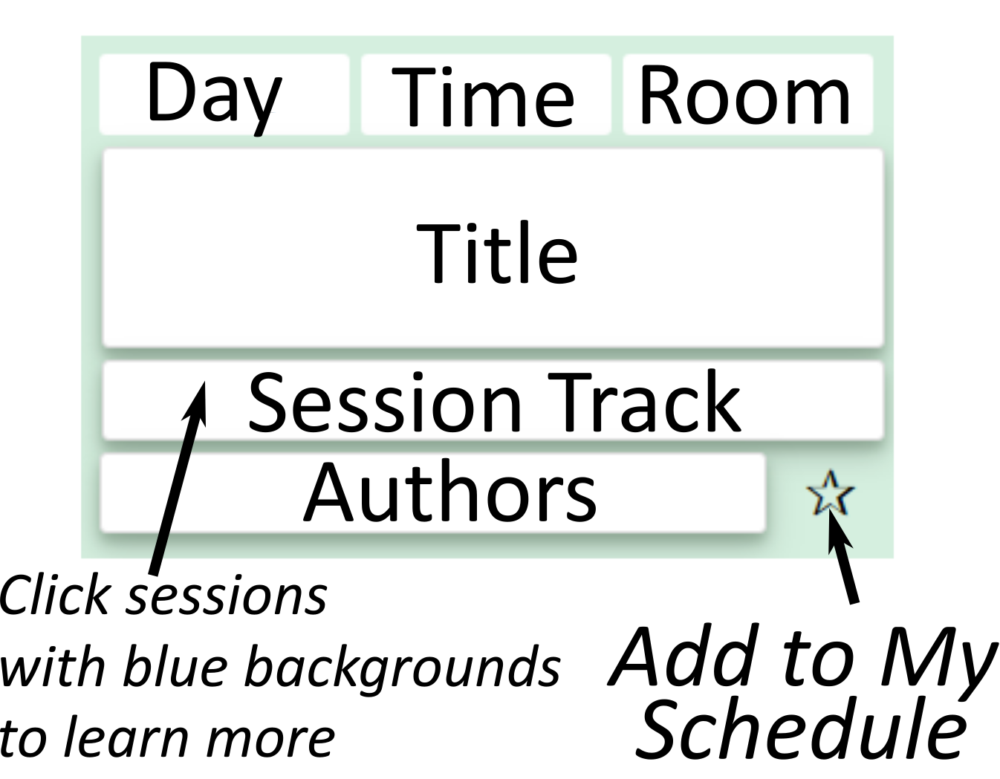

<!DOCTYPE html>
<html lang="en">
<head>
  <title>2018 Indoor Air</title>
  <meta charset="UTF-8">
  <meta content="IE=edge" http-equiv="X-UA-Compatible">
  <meta content="width=device-width, initial-scale=1.0" name="viewport">
  <link href="css/bootstrap.min.css" rel="stylesheet">
  <link href="css/common.css" rel="stylesheet">
  <style type="text/css">
     /* Padding around filters */
  select.table-autofilter {
     margin-left: 5px !important;
  }
  </style><!--<script src="js/admob2.js"></script>-->

  <script src="js/jquery-3.2.1.js">
  </script>
  <script src="js/bootstrap.js">
  </script>
  <script src="js/app.js">
  </script>
  <script src="js/table.js">
  </script>
  <script src="https://ajax.googleapis.com/ajax/libs/jquery/1.9.1/jquery.min.js">
  </script><!-- HTML5 shim and Respond.js IE8 support of HTML5 elements and media queries -->
  <!--[if lt IE 9]>
      <script src="https://oss.maxcdn.com/libs/html5shiv/3.7.0/html5shiv.js"></script>
      <script src="https://oss.maxcdn.com/libs/respond.js/1.3.0/respond.min.js"></script>
    <![endif]-->
  <!--Trigger interstitial add after 90 seconds -->

  <script type="text/javascript">
  setTimeout("CallButton()",15000)
  function CallButton()
  {
    document.getElementById("showAd").click();    
  }


  </script><!--Star Rating -->

  <script type="text/javascript">
     $(':radio').change(function() {
   console.log('New star rating: ' + this.value);
  });
  </script>
</head>
<body onload="document.getElementById('myInput').value = ''">
  <nav id="navigation">
    <a class="hov-color-green" data-scroll="" href="#foco">Home</a> <a class="hov-color-red" data-scroll="" href="#schedule">Schedule</a> <a class="hov-color-green" data-scroll="" href="#favorites">My Schedule</a> <a class="hov-color-blue" data-scroll="" href="#faq">Map</a>
  </nav>
  <section class="wide" id="foco">
    <h1 class="headers" style="padding-top: -20px;"></h1>
    <div style="font-size: 0.7em; text-align: center; padding-left:5px; padding-right: 8px;">
    
      
      <div class="panel-group" id="accordion" role="tablist" aria-multiselectable="true">
    <div class="panel panel-default">
        <div class="panel-heading" role="tab" id="heading1">
            <h4 class="panel-title">
                <a class="collapsed" data-toggle="collapse" data-parent="#accordion" href="#collapse1" aria-expanded="false" aria-controls="collapse1">
                    About
                </a>
            </h4>
        </div>
        <div id="collapse1" class="panel-collapse collapse" role="tabpanel" aria-labelledby="heading1">
            <div class="panel-body">
                <p>You've found the a free community developed app for the 2018 Indoor Air Conference. This app is intended to help participants browse presentation listings and build their custom schedule.</p>
                <b>Is This An Official Conference App?</b>
                <p>Nope. We built it out of our own needs. We wanted to get the most out of the conference and didn't want to carry around a paper schedule. We decided that it might be useful to others so we made it public. For any and all official conference communications please see the main conference website.</p>
                <p><b>How to Use the App</b> You can sort by search term, day, time, and session track. Click the star to add items to your personal schedule. Added an item you want to remove? Click the "X" next to the item in your personal list. Feel like your not seeing the full schedule? Try clearing the text search field. </p>
                
                <br><br>
                <p>Like what we are doing? Want to talk about what we can do for you in the future? Send us a message at info@orangehousellc.com</p>
            </div>
        </div>
    </div>
    
</div>
  </section>
  <section class="wide" id="schedule">
    <h1 class="headers">Conference Schedule</h1><input id="myInput" type="text" value="Text Search" /><button id="clearbutton" onclick="document.getElementById('myInput').value = ''">&#9940;</button>
    <table class="table-autosort table-autofilter SECOND cards-table" id="SECOND">
      <thead>
        <tr>
          <th style="display:none;">ID</th>
          <th class="table-filterable">Day</th>
          <th class="table-filterable">Time</th>
          <th ></th>
          <th ></th>
          <th class="table-filterable">Track</th>
          <th ></th>
          
        </tr>
      </thead>
      <tbody>
 <tr class="content"><td class="sortnr" style="display:none;">1</td><td class="tpl">Monday</td><td class="tpl">08:30</td><td class="tpl">Ballroom A</td><td class="middlerow">Plenary: Tina Bahadori, US Environmental Protection Agency</td><td class="bottomrow"></td><td class="bottomrow2"></button></td><td class="heart"><a href="#favorites">&#10032;</a></td></tr>
<tr class="content"><td class="sortnr" style="display:none;">2</td><td class="tpl">Monday</td><td class="tpl">09:00</td><td class="tpl">Ballroom A</td><td class="middlerow">Plenary: Allen Goldstein, University of California, Berkeley</td><td class="bottomrow"></td><td class="bottomrow2"></button></td><td class="heart"><a href="#favorites">&#10032;</a></td></tr>
<tr class="content"><td class="sortnr" style="display:none;">3</td><td class="tpl">Monday</td><td class="tpl">09:30</td><td class="tpl">Ballroom A</td><td class="middlerow">Conference announcements</td><td class="bottomrow"></td><td class="bottomrow2"></button></td><td class="heart"><a href="#favorites">&#10032;</a></td></tr>
<tr class="content"><td class="sortnr" style="display:none;">4</td><td class="tpl">Monday</td><td class="tpl">10:30</td><td class="tpl">Rm: 201B</td><td class="middlerow">Toward ideal surface filtration pressure drop modelling: the case using monodisperse spherical nanoparticles and PTFE HEPA media</td><td class="bottomrow">Air Cleaning and Filtration 1: Aerosol Filtration</td><td class="bottomrow2">Wanyi Zhang, Shiming Deng, Zhongping Lin</button></td><td class="heart"><a href="#favorites">&#10032;</a></td></tr>
<tr class="content"><td class="sortnr" style="display:none;">5</td><td class="tpl">Monday</td><td class="tpl">10:30</td><td class="tpl">Rm: 204B</td><td class="middlerow">A multi-constraints optimization to create a safe ventilation region in public buildings in response to random biochemical attacks</td><td class="bottomrow">Building Simulation and CFD 1: Transport and Health</td><td class="bottomrow2">Lingjie Zeng, Jun Gao, Qiong Wang</button></td><td class="heart"><a href="#favorites">&#10032;</a></td></tr>
<tr class="content"><td class="sortnr" style="display:none;">6</td><td class="tpl">Monday</td><td class="tpl">10:30</td><td class="tpl">Rm: 201C</td><td class="middlerow">Investigating the link between indoor environment and workplace productivity in an office environment</td><td class="bottomrow">Comfort, Productivity, and Perception 1: Productivity and Performance</td><td class="bottomrow2">Rajat Gupta, Alastair Howard</button></td><td class="heart"><a href="#favorites">&#10032;</a></td></tr>
<tr class="content"><td class="sortnr" style="display:none;">7</td><td class="tpl">Monday</td><td class="tpl">10:30</td><td class="tpl">Rm: 204A</td><td class="middlerow">Quantifying the error of a low-cost particle monitor: common indoor residential aerosols</td><td class="bottomrow">Concentrations and Exposure 1: Novel Approaches</td><td class="bottomrow2">Philip Dacunto, Neil Klepeis, Kai-Chung Cheng, Viviana Acevedo-Bolton, RuoTing Jiang, James Repace, Wayne Ott, Lynn Hildemann</button></td><td class="heart"><a href="#favorites">&#10032;</a></td></tr>
<tr class="content"><td class="sortnr" style="display:none;">8</td><td class="tpl">Monday</td><td class="tpl">10:30</td><td class="tpl">Rm: 204C</td><td class="middlerow">A high-efficiency method for determining the formaldehyde emission characteristic parameters of building materials at different temperatures</td><td class="bottomrow">Sources and Emissions 1: Formaldehyde and VVOCs</td><td class="bottomrow2">Xiaojun Zhou, Yanfeng Liu, Xinke Wang, Fenghao Wang, Jiaping Liu</button></td><td class="heart"><a href="#favorites">&#10032;</a></td></tr>
<tr class="content"><td class="sortnr" style="display:none;">9</td><td class="tpl">Monday</td><td class="tpl">10:30</td><td class="tpl">Rm: 201A</td><td class="middlerow">Simulations of indoor air quality based on future climate conditions</td><td class="bottomrow"><button onclick="openModal();currentSlide(1)">Symposium 1: Resilience and adaptation to environmental changes in buildings</td><td class="bottomrow2">Von Walden, Nathan Lima, Kevin Toombs, Amy Musser, William Kirk, Bertram Jobson, Brian Lamb</button></td><td class="heart"><a href="#favorites">&#10032;</a></td></tr>
<tr class="content"><td class="sortnr" style="display:none;">10</td><td class="tpl">Monday</td><td class="tpl">10:30</td><td class="tpl">Rm: 203A</td><td class="middlerow">Ventilation and air cleaning in Korean multifamily residences</td><td class="bottomrow"><button onclick="openModal();currentSlide(2)">Symposium 2: Integrating ventilation and air cleaning for IAQ control in homes</td><td class="bottomrow2"></button></td><td class="heart"><a href="#favorites">&#10032;</a></td></tr>
<tr class="content"><td class="sortnr" style="display:none;">11</td><td class="tpl">Monday</td><td class="tpl">10:30</td><td class="tpl">Rm: 202A</td><td class="middlerow">Sample Efficiency and Sensor Networks</td><td class="bottomrow"><button onclick="openModal();currentSlide(3)">Symposium 3: Explorations using distributed sensor networks to improve our understanding of the indoor environment and support practices that enhance health</td><td class="bottomrow2">Juan Palacios, Seema Bhangar, Chris Pyke, Nils Kok</button></td><td class="heart"><a href="#favorites">&#10032;</a></td></tr>
<tr class="content"><td class="sortnr" style="display:none;">12</td><td class="tpl">Monday</td><td class="tpl">10:30</td><td class="tpl">Rm: 202B</td><td class="middlerow">Workshop 1: Aerosols: Life as Pig-Pen: Immersed in a Cloud of Particles and Microbes</td><td class="bottomrow"><button onclick="openModal();currentSlide(24)">Workshop 1: Aerosols: Life as Pig-Pen: Immersed in a Cloud of Particles and Microbes</td><td class="bottomrow2"></button></td><td class="heart"><a href="#favorites">&#10032;</a></td></tr>
<tr class="content"><td class="sortnr" style="display:none;">13</td><td class="tpl">Monday</td><td class="tpl">10:45</td><td class="tpl">Rm: 201B</td><td class="middlerow">Experimental study of a new hetero-caking filter with low pressure drop for efficient electrostatic filtration of ambient particulate matter</td><td class="bottomrow">Air Cleaning and Filtration 1: Aerosol Filtration</td><td class="bottomrow2">Enze Tian, Jinhan Mo</button></td><td class="heart"><a href="#favorites">&#10032;</a></td></tr>
<tr class="content"><td class="sortnr" style="display:none;">14</td><td class="tpl">Monday</td><td class="tpl">10:45</td><td class="tpl">Rm: 204B</td><td class="middlerow">Numerical Assessment of a Novel Ventilation Strategy for Operating Rooms in Comparison with Turbulent Mixing and Laminar Air Flow</td><td class="bottomrow">Building Simulation and CFD 1: Transport and Health</td><td class="bottomrow2">Cong Wang, Sasan Sadrizadeh</button></td><td class="heart"><a href="#favorites">&#10032;</a></td></tr>
<tr class="content"><td class="sortnr" style="display:none;">15</td><td class="tpl">Monday</td><td class="tpl">10:45</td><td class="tpl">Rm: 201C</td><td class="middlerow">Modeling Thermal Comfort and Performance Outcomes in 92 Finnish Office Buildings</td><td class="bottomrow">Comfort, Productivity, and Perception 1: Productivity and Performance</td><td class="bottomrow2">Ulla Haverinen-Shaughnessy, Samy Clinchard, Salvatore Della Vecchia, Rick Aller, Tomas Novotny</button></td><td class="heart"><a href="#favorites">&#10032;</a></td></tr>
<tr class="content"><td class="sortnr" style="display:none;">16</td><td class="tpl">Monday</td><td class="tpl">10:45</td><td class="tpl">Rm: 204A</td><td class="middlerow">Investigating the role of hydrogen in the calibration of MOS gas sensors for indoor air quality monitoring</td><td class="bottomrow">Concentrations and Exposure 1: Novel Approaches</td><td class="bottomrow2">Caroline Schultealbert, Tobias Baur, Andreas Schütze, Tilman Sauerwald</button></td><td class="heart"><a href="#favorites">&#10032;</a></td></tr>
<tr class="content"><td class="sortnr" style="display:none;">17</td><td class="tpl">Monday</td><td class="tpl">10:45</td><td class="tpl">Rm: 204C</td><td class="middlerow">Approach for avoiding multiple solution of measuring methods of characteristic parameters of formaldehyde/VOCs emitted from building materials</td><td class="bottomrow">Sources and Emissions 1: Formaldehyde and VVOCs</td><td class="bottomrow2">Xu Zhang, Jianping Cao, Jingya Wei, Yinping Zhang</button></td><td class="heart"><a href="#favorites">&#10032;</a></td></tr>
<tr class="content"><td class="sortnr" style="display:none;">18</td><td class="tpl">Monday</td><td class="tpl">10:45</td><td class="tpl">Rm: 201A</td><td class="middlerow">Utilizing a Nationally Representative Model Set to Predict the Impacts of Climate Change on</td><td class="bottomrow"><button onclick="openModal();currentSlide(1)">Symposium 1: Resilience and adaptation to environmental changes in buildings</td><td class="bottomrow2">Torkan Fazli, Brent Stephens</button></td><td class="heart"><a href="#favorites">&#10032;</a></td></tr>
<tr class="content"><td class="sortnr" style="display:none;">19</td><td class="tpl">Monday</td><td class="tpl">10:45</td><td class="tpl">Rm: 203A</td><td class="middlerow">Developing health-based ventilation guidelines (HealthVent project)</td><td class="bottomrow"><button onclick="openModal();currentSlide(2)">Symposium 2: Integrating ventilation and air cleaning for IAQ control in homes</td><td class="bottomrow2">Paolo Carrer, Eduardo de Oliveira Fernandes, Hugo Santos, Otto Hänninen, Stylianos Kephalopoulos, and Pawel Wargocki</button></td><td class="heart"><a href="#favorites">&#10032;</a></td></tr>
<tr class="content"><td class="sortnr" style="display:none;">20</td><td class="tpl">Monday</td><td class="tpl">10:45</td><td class="tpl">Rm: 202A</td><td class="middlerow">The Comparative Effect of Temperature and CO2 on Work Performance</td><td class="bottomrow"><button onclick="openModal();currentSlide(3)">Symposium 3: Explorations using distributed sensor networks to improve our understanding of the indoor environment and support practices that enhance health</td><td class="bottomrow2">Chenlu Zhang, Vivian Loftness, Brian Gilligan, Nicole Goebel, Chris Pyke, Kevin Kampschroer, Priya Premchandran, Lauren Riggs</button></td><td class="heart"><a href="#favorites">&#10032;</a></td></tr>
<tr class="content"><td class="sortnr" style="display:none;">21</td><td class="tpl">Monday</td><td class="tpl">11:00</td><td class="tpl">Rm: 201B</td><td class="middlerow">Study on the Influence of Fiber Diameter on the Filtration Performance of Coarse Filter</td><td class="bottomrow">Air Cleaning and Filtration 1: Aerosol Filtration</td><td class="bottomrow2">Xin Zhang, Yuesheng Fan, Wei Xie, Hongli Zhang</button></td><td class="heart"><a href="#favorites">&#10032;</a></td></tr>
<tr class="content"><td class="sortnr" style="display:none;">22</td><td class="tpl">Monday</td><td class="tpl">11:00</td><td class="tpl">Rm: 204B</td><td class="middlerow">Numerical Investigation of Contamination Transport in an Operating Theatre due to the Motion of a Circulating Nurse</td><td class="bottomrow">Building Simulation and CFD 1: Transport and Health</td><td class="bottomrow2">Valeria Hofer, Hansjörg Rotheudt, Benjamin Zielke, Gerrid Brockmann, Martin Kriegel</button></td><td class="heart"><a href="#favorites">&#10032;</a></td></tr>
<tr class="content"><td class="sortnr" style="display:none;">23</td><td class="tpl">Monday</td><td class="tpl">11:00</td><td class="tpl">Rm: 201C</td><td class="middlerow">Effects of Activity-Based Workplace Design on Occupant Behavior and Productivity</td><td class="bottomrow">Comfort, Productivity, and Perception 1: Productivity and Performance</td><td class="bottomrow2">Takuma Shinoyama, Shinichi Tanabe, Mikio Takahashi, Naoko Nozaki, Kazuki Wada, Hiroki Takahashi, Jun Nakagawa, Jun Shinoda, Akihiro Takimoto, Junichi Asaka</button></td><td class="heart"><a href="#favorites">&#10032;</a></td></tr>
<tr class="content"><td class="sortnr" style="display:none;">24</td><td class="tpl">Monday</td><td class="tpl">11:00</td><td class="tpl">Rm: 204A</td><td class="middlerow">Evaluation of a Heated Graphite Scrubber for UV-Absorbance Measurements of Ozone</td><td class="bottomrow">Concentrations and Exposure 1: Novel Approaches</td><td class="bottomrow2"></button></td><td class="heart"><a href="#favorites">&#10032;</a></td></tr>
<tr class="content"><td class="sortnr" style="display:none;">25</td><td class="tpl">Monday</td><td class="tpl">11:00</td><td class="tpl">Rm: 204C</td><td class="middlerow">New methodology for determination of formaldehyde sorption rate constants for selected building materials of indoor surfaces</td><td class="bottomrow">Sources and Emissions 1: Formaldehyde and VVOCs</td><td class="bottomrow2">Alexandre Gross, Pierre Mocho, Herve Plaisance, Christophe Cantau, Natacha Kinadjian Caplat, Christophe Yrieix, Valérie Desauziers</button></td><td class="heart"><a href="#favorites">&#10032;</a></td></tr>
<tr class="content"><td class="sortnr" style="display:none;">26</td><td class="tpl">Monday</td><td class="tpl">11:00</td><td class="tpl">Rm: 201A</td><td class="middlerow">Factors Influencing Variations of PM Concentrations in Retrofitted Multifamily Buildings in Finland and Lithuania</td><td class="bottomrow"><button onclick="openModal();currentSlide(1)">Symposium 1: Resilience and adaptation to environmental changes in buildings</td><td class="bottomrow2">Tadas Prasauskas, Dainius Martuzevicius, Liuliu Du, Darius Ciuzas, Virpi Leivo, Mihkel Kiviste, Ulla Haverinen-Shaughnessy</button></td><td class="heart"><a href="#favorites">&#10032;</a></td></tr>
<tr class="content"><td class="sortnr" style="display:none;">27</td><td class="tpl">Monday</td><td class="tpl">11:00</td><td class="tpl">Rm: 203A</td><td class="middlerow">Are We Providing Effective Mechanical Ventilation in New US Homes?</td><td class="bottomrow"><button onclick="openModal();currentSlide(2)">Symposium 2: Integrating ventilation and air cleaning for IAQ control in homes</td><td class="bottomrow2">Brett Singer</button></td><td class="heart"><a href="#favorites">&#10032;</a></td></tr>
<tr class="content"><td class="sortnr" style="display:none;">28</td><td class="tpl">Monday</td><td class="tpl">11:00</td><td class="tpl">Rm: 202A</td><td class="middlerow">Inhalation exposure to metabolic CO2 and control interventions</td><td class="bottomrow"><button onclick="openModal();currentSlide(3)">Symposium 3: Explorations using distributed sensor networks to improve our understanding of the indoor environment and support practices that enhance health</td><td class="bottomrow2">Jovan Pantelic, Shichao Liu</button></td><td class="heart"><a href="#favorites">&#10032;</a></td></tr>
<tr class="content"><td class="sortnr" style="display:none;">29</td><td class="tpl">Monday</td><td class="tpl">11:15</td><td class="tpl">Rm: 201B</td><td class="middlerow">Comparisons of the different discharge performances and the effect of long-term loading with the liquid aerosol on electrets media</td><td class="bottomrow">Air Cleaning and Filtration 1: Aerosol Filtration</td><td class="bottomrow2">Yongxiang Wang, Wanyi Zhang, Zhongping Lin</button></td><td class="heart"><a href="#favorites">&#10032;</a></td></tr>
<tr class="content"><td class="sortnr" style="display:none;">30</td><td class="tpl">Monday</td><td class="tpl">11:15</td><td class="tpl">Rm: 204B</td><td class="middlerow">Air flow simulation for exhalation in the lower respiratory tract</td><td class="bottomrow">Building Simulation and CFD 1: Transport and Health</td><td class="bottomrow2">Han Yu, Yuguo Li</button></td><td class="heart"><a href="#favorites">&#10032;</a></td></tr>
<tr class="content"><td class="sortnr" style="display:none;">31</td><td class="tpl">Monday</td><td class="tpl">11:15</td><td class="tpl">Rm: 201C</td><td class="middlerow">Beneficial effects of physical activity in the office on workplace productivity</td><td class="bottomrow">Comfort, Productivity, and Perception 1: Productivity and Performance</td><td class="bottomrow2">Kumika Seki, Toshiharu Ikaga, Koji Tanaka, Hiroaki Takai, Takuro Kikuchi, Kitoshi Tanaka, Megumi Nishida, Mikako Nishimura</button></td><td class="heart"><a href="#favorites">&#10032;</a></td></tr>
<tr class="content"><td class="sortnr" style="display:none;">32</td><td class="tpl">Monday</td><td class="tpl">11:15</td><td class="tpl">Rm: 204A</td><td class="middlerow">Assessing indoor air toxicity with condensate collected from air using the mitochondrial activity of human BJ fibroblasts and THP-1 monocytes</td><td class="bottomrow">Concentrations and Exposure 1: Novel Approaches</td><td class="bottomrow2">Heidi Salonen, Tuula Heinonen, Marika Mannerström, Mark Jackson, Maria Andersson, Raimo Mikkola, Jarek Kurnitski, Shahana Khurshid, Atila Novoselac, Richard</button></td><td class="heart"><a href="#favorites">&#10032;</a></td></tr>
<tr class="content"><td class="sortnr" style="display:none;">33</td><td class="tpl">Monday</td><td class="tpl">11:15</td><td class="tpl">Rm: 204C</td><td class="middlerow">Evaluation of a Formaldehyde Reference Material for Small Chamber Emission Testing</td><td class="bottomrow">Sources and Emissions 1: Formaldehyde and VVOCs</td><td class="bottomrow2"></button></td><td class="heart"><a href="#favorites">&#10032;</a></td></tr>
<tr class="content"><td class="sortnr" style="display:none;">34</td><td class="tpl">Monday</td><td class="tpl">11:15</td><td class="tpl">Rm: 201A</td><td class="middlerow">Assessment of Radon Reduction Interventions with Energy Retrofits</td><td class="bottomrow"><button onclick="openModal();currentSlide(1)">Symposium 1: Resilience and adaptation to environmental changes in buildings</td><td class="bottomrow2">Stacy Gloss, Paul Francisco, Jonathan Wilson, Ellen Tohn, William Rose, Yigang Sun, Sherry Dixon, Jill Breysse, David Jacobs</button></td><td class="heart"><a href="#favorites">&#10032;</a></td></tr>
<tr class="content"><td class="sortnr" style="display:none;">35</td><td class="tpl">Monday</td><td class="tpl">11:15</td><td class="tpl">Rm: 203A</td><td class="middlerow">How should ventilation and air cleaning be balanced in residences when ambient air quality is poor?</td><td class="bottomrow"><button onclick="openModal();currentSlide(2)">Symposium 2: Integrating ventilation and air cleaning for IAQ control in homes</td><td class="bottomrow2">Yinping Zhang</button></td><td class="heart"><a href="#favorites">&#10032;</a></td></tr>
<tr class="content"><td class="sortnr" style="display:none;">36</td><td class="tpl">Monday</td><td class="tpl">11:15</td><td class="tpl">Rm: 202A</td><td class="middlerow">Learning Building Occupants’ Social Interactions from Wearable and Stationary Ambient Sensing Systems</td><td class="bottomrow"><button onclick="openModal();currentSlide(3)">Symposium 3: Explorations using distributed sensor networks to improve our understanding of the indoor environment and support practices that enhance health</td><td class="bottomrow2">Ali Ghahramani, Jovan Pantelic, Casey Lindberg, Brian Gilligan</button></td><td class="heart"><a href="#favorites">&#10032;</a></td></tr>
<tr class="content"><td class="sortnr" style="display:none;">37</td><td class="tpl">Monday</td><td class="tpl">11:30</td><td class="tpl">Rm: 201B</td><td class="middlerow">Do all particles get filtered equally? Effective particle removal for aerosol types exhibiting semivolatile behavior</td><td class="bottomrow">Air Cleaning and Filtration 1: Aerosol Filtration</td><td class="bottomrow2">Chunyi Wang, Michael Waring</button></td><td class="heart"><a href="#favorites">&#10032;</a></td></tr>
<tr class="content"><td class="sortnr" style="display:none;">38</td><td class="tpl">Monday</td><td class="tpl">11:30</td><td class="tpl">Rm: 204B</td><td class="middlerow">Impacts of Human Tracheal Cartilaginous Rings on Tracheobronchial Flow Structures</td><td class="bottomrow">Building Simulation and CFD 1: Transport and Health</td><td class="bottomrow2">Mohammad Hossein Roozbahani, Mohammad Heidarinejad, Ghassem Heidarinejad</button></td><td class="heart"><a href="#favorites">&#10032;</a></td></tr>
<tr class="content"><td class="sortnr" style="display:none;">39</td><td class="tpl">Monday</td><td class="tpl">11:30</td><td class="tpl">Rm: 201C</td><td class="middlerow">The effect of low ventilation rate on perceived air quality and work performance – A laboratory study</td><td class="bottomrow">Comfort, Productivity, and Perception 1: Productivity and Performance</td><td class="bottomrow2">Henna Maula, Valtteri Hongisto, Annu Haapakangas, Hannu Koskela,Toshihiro Otsuka, Masaru Itoyama, Masato Yano, Takafumi Maeda</button></td><td class="heart"><a href="#favorites">&#10032;</a></td></tr>
<tr class="content"><td class="sortnr" style="display:none;">40</td><td class="tpl">Monday</td><td class="tpl">11:30</td><td class="tpl">Rm: 204A</td><td class="middlerow">Airborne toxicity of a non-ionic alcohol ethoxylate surfactant and wetting agent used in cleaning chemicals</td><td class="bottomrow">Concentrations and Exposure 1: Novel Approaches</td><td class="bottomrow2">Emmanuelle Castagnoli, Maria Andersson, Raimo Mikkola, Jarek Kurnitski, Heidi Salonen</button></td><td class="heart"><a href="#favorites">&#10032;</a></td></tr>
<tr class="content"><td class="sortnr" style="display:none;">41</td><td class="tpl">Monday</td><td class="tpl">11:30</td><td class="tpl">Rm: 204C</td><td class="middlerow">Formaldehyde Emissions from Seams and Cut Edges of Laminate Flooring: Implications for</td><td class="bottomrow">Sources and Emissions 1: Formaldehyde and VVOCs</td><td class="bottomrow2">Wenhao Chen, Mark Mendell, Na Li, Kazukiyo Kumagai</button></td><td class="heart"><a href="#favorites">&#10032;</a></td></tr>
<tr class="content"><td class="sortnr" style="display:none;">42</td><td class="tpl">Monday</td><td class="tpl">11:30</td><td class="tpl">Rm: 201A</td><td class="middlerow">Relationship between Resilience of Residences and Residents’ Subjective Well-being</td><td class="bottomrow"><button onclick="openModal();currentSlide(1)">Symposium 1: Resilience and adaptation to environmental changes in buildings</td><td class="bottomrow2"></button></td><td class="heart"><a href="#favorites">&#10032;</a></td></tr>
<tr class="content"><td class="sortnr" style="display:none;">43</td><td class="tpl">Monday</td><td class="tpl">11:30</td><td class="tpl">Rm: 203A</td><td class="middlerow">What are the limitations of filtration in the existing North American housing stock?</td><td class="bottomrow"><button onclick="openModal();currentSlide(2)">Symposium 2: Integrating ventilation and air cleaning for IAQ control in homes</td><td class="bottomrow2">Jeffrey Siegel</button></td><td class="heart"><a href="#favorites">&#10032;</a></td></tr>
<tr class="content"><td class="sortnr" style="display:none;">44</td><td class="tpl">Monday</td><td class="tpl">11:30</td><td class="tpl">Rm: 202A</td><td class="middlerow">Exploring the Influence of Relative Humidity on Human Health in Buildings</td><td class="bottomrow"><button onclick="openModal();currentSlide(3)">Symposium 3: Explorations using distributed sensor networks to improve our understanding of the indoor environment and support practices that enhance health</td><td class="bottomrow2">Brian Gilligan, Casey Lindberg, Kelli Canada, Bijan Najafi</button></td><td class="heart"><a href="#favorites">&#10032;</a></td></tr>
<tr class="content"><td class="sortnr" style="display:none;">45</td><td class="tpl">Monday</td><td class="tpl">11:45</td><td class="tpl">Rm: 201B</td><td class="middlerow">Integrity of DNA-Based Analysis of HVAC Filters from a Tropical Building</td><td class="bottomrow">Air Cleaning and Filtration 1: Aerosol Filtration</td><td class="bottomrow2">Irvan Luhung, Akira Uchida, William Nazaroff, Stephan Schuster</button></td><td class="heart"><a href="#favorites">&#10032;</a></td></tr>
<tr class="content"><td class="sortnr" style="display:none;">46</td><td class="tpl">Monday</td><td class="tpl">11:45</td><td class="tpl">Rm: 204B</td><td class="middlerow">Development of a Numerical Methodology to Assess Indoor Air Quality in Residential Buildings</td><td class="bottomrow">Building Simulation and CFD 1: Transport and Health</td><td class="bottomrow2">Louis Cony, Marc Abadie, Olivier Ramalho</button></td><td class="heart"><a href="#favorites">&#10032;</a></td></tr>
<tr class="content"><td class="sortnr" style="display:none;">47</td><td class="tpl">Monday</td><td class="tpl">11:45</td><td class="tpl">Rm: 201C</td><td class="middlerow">The effects of indoor carbon dioxide concentrations on arousal level and task performance</td><td class="bottomrow">Comfort, Productivity, and Perception 1: Productivity and Performance</td><td class="bottomrow2"></button></td><td class="heart"><a href="#favorites">&#10032;</a></td></tr>
<tr class="content"><td class="sortnr" style="display:none;">48</td><td class="tpl">Monday</td><td class="tpl">11:45</td><td class="tpl">Rm: 204A</td><td class="middlerow">Indoor particle age, a new concept for improving the accuracy of estimating indoor airborne concentrations of semivolatile organic compounds (SVOCs)</td><td class="bottomrow">Concentrations and Exposure 1: Novel Approaches</td><td class="bottomrow2"></button></td><td class="heart"><a href="#favorites">&#10032;</a></td></tr>
<tr class="content"><td class="sortnr" style="display:none;">49</td><td class="tpl">Monday</td><td class="tpl">11:45</td><td class="tpl">Rm: 204C</td><td class="middlerow">Concentrations of very volatile organic compounds (VVOCs) in wooden prefabricated houses</td><td class="bottomrow">Sources and Emissions 1: Formaldehyde and VVOCs</td><td class="bottomrow2">Alexandra Schieweck</button></td><td class="heart"><a href="#favorites">&#10032;</a></td></tr>
<tr class="content"><td class="sortnr" style="display:none;">50</td><td class="tpl">Monday</td><td class="tpl">11:45</td><td class="tpl">Rm: 201A</td><td class="middlerow">Health Impacts of Home Energy Retrofits in Low-Income Residential Households</td><td class="bottomrow"><button onclick="openModal();currentSlide(1)">Symposium 1: Resilience and adaptation to environmental changes in buildings</td><td class="bottomrow2">Prateek Shrestha, Shelly Miller, Jamie Humphrey, John Adgate, Elizabeth Carlton, Kelsey Barton, Elisabeth Root</button></td><td class="heart"><a href="#favorites">&#10032;</a></td></tr>
<tr class="content"><td class="sortnr" style="display:none;">51</td><td class="tpl">Monday</td><td class="tpl">11:45</td><td class="tpl">Rm: 203A</td><td class="middlerow">Reassessing Occupancy-Based Ventilation and IAQ in Homes</td><td class="bottomrow"><button onclick="openModal();currentSlide(2)">Symposium 2: Integrating ventilation and air cleaning for IAQ control in homes</td><td class="bottomrow2">Iain Walker, Brennan Less</button></td><td class="heart"><a href="#favorites">&#10032;</a></td></tr>
<tr class="content"><td class="sortnr" style="display:none;">52</td><td class="tpl">Monday</td><td class="tpl">11:45</td><td class="tpl">Rm: 202A</td><td class="middlerow">Expanding psychrometrics to enable humidity management through warm radiant comfort delivery</td><td class="bottomrow"><button onclick="openModal();currentSlide(3)">Symposium 3: Explorations using distributed sensor networks to improve our understanding of the indoor environment and support practices that enhance health</td><td class="bottomrow2">Forrest Meggers</button></td><td class="heart"><a href="#favorites">&#10032;</a></td></tr>
<tr class="content"><td class="sortnr" style="display:none;">53</td><td class="tpl">Monday</td><td class="tpl">13:30</td><td class="tpl">Rm: 204C</td><td class="middlerow">Secondhand and Thirdhand Exposure to Nicotine and Particulates from Electronic Cigarettes</td><td class="bottomrow"><button onclick="openModal();currentSlide(6)">Symposium 6: Indoor pollutants from emerging smoking and vaping devices: E-cigarettes,</td><td class="bottomrow2">Zachary Dunbar, Lisa Kaiser, Eric Jensen, Mark Travers, Maciej Goniewicz</button></td><td class="heart"><a href="#favorites">&#10032;</a></td></tr>
<tr class="content"><td class="sortnr" style="display:none;">54</td><td class="tpl">Monday</td><td class="tpl">13:30</td><td class="tpl">Rm: 201B</td><td class="middlerow">Efficiency assessment of a commercial photocatalytic coating to degrade NO under realworld conditions in an equipped experimental chamber</td><td class="bottomrow">Air Cleaning and Filtration 2: Photocatalysis and novel</td><td class="bottomrow2">     Julie Hot, Jivko Topalov, Barnabé Wayser, Erick Ringot, Alexandra Bertron</button></td><td class="heart"><a href="#favorites">&#10032;</a></td></tr>
<tr class="content"><td class="sortnr" style="display:none;">55</td><td class="tpl">Monday</td><td class="tpl">13:30</td><td class="tpl">Rm: 202A</td><td class="middlerow">Transport of Gaseous Pollutants from Underground Garage in High Residential Building under Mediterranean Climate</td><td class="bottomrow">Building Simulation and CFD 2: Airflows and Methods</td><td class="bottomrow2">     Yael Dubowski, Rivka Reichman</button></td><td class="heart"><a href="#favorites">&#10032;</a></td></tr>
<tr class="content"><td class="sortnr" style="display:none;">56</td><td class="tpl">Monday</td><td class="tpl">13:30</td><td class="tpl">Rm: 201C</td><td class="middlerow">Evaluation of Thermal Environment with Elevated Air Speed using a Breathing Thermal Manikin</td><td class="bottomrow">Comfort, Productivity, and Perception 2: Human Responses</td><td class="bottomrow2">     Kuniaki Mihara, Bertrand Lastemas, Yuichi Takemasa, Kwok Wai Tham, Chandra Sekhar</button></td><td class="heart"><a href="#favorites">&#10032;</a></td></tr>
<tr class="content"><td class="sortnr" style="display:none;">57</td><td class="tpl">Monday</td><td class="tpl">13:30</td><td class="tpl">Rm: 204A</td><td class="middlerow">Distribution of 1000 free indoor air quality measurement kits to schools: kits as an alternative method proposed by the French regulation</td><td class="bottomrow">Concentrations and Exposure 2: Schools</td><td class="bottomrow2">     Jessica Queron, Caroline Marchand, Virginie Migne, Camille Fevrier, Xavier Strebelle, Marc Durif</button></td><td class="heart"><a href="#favorites">&#10032;</a></td></tr>
<tr class="content"><td class="sortnr" style="display:none;">58</td><td class="tpl">Monday</td><td class="tpl">13:30</td><td class="tpl">Rm: 201A</td><td class="middlerow">Interpreting time-resolved residential monitoring data to characterize emissions of volatile organic compounds from occupant activities</td><td class="bottomrow"><button onclick="openModal();currentSlide(4)">Symposium 4: What are the impacts of humans and their activities on indoor chemistry? (Sponsored by the Sloan Foundation)</td><td class="bottomrow2">     William Nazaroff, Yingjun Liu, Pawel Misztal, Jianyin Xiong, Yilin Tian, Caleb Arata, Allen Goldstein</button></td><td class="heart"><a href="#favorites">&#10032;</a></td></tr>
<tr class="content"><td class="sortnr" style="display:none;">59</td><td class="tpl">Monday</td><td class="tpl">13:30</td><td class="tpl">Rm: 204B</td><td class="middlerow">Comparison of Different Image Processing Methods Used for a Webcam Based Occupancy Detection for Local Ventilation in a Lecture Hall</td><td class="bottomrow"><button onclick="openModal();currentSlide(5)">Symposium 5: Smart ventilation: Theory, applications, and case studies</td><td class="bottomrow2">     Gerrid Brockmann, Ibrahim El-Athman, Michael Klemke, Benjamin Zielke, Martin Kriegel</button></td><td class="heart"><a href="#favorites">&#10032;</a></td></tr>
<tr class="content"><td class="sortnr" style="display:none;">60</td><td class="tpl">Monday</td><td class="tpl">13:30</td><td class="tpl">Rm: 204C</td><td class="middlerow">Secondhand and Thirdhand Exposure to Nicotine and Particulates from Electronic Cigarettes</td><td class="bottomrow">Symposium 6: Indoor pollutants from emerging smoking and vaping devices: E-cigarettes, “reduced-risk” tobacco products and waterpipes .</td><td class="bottomrow2"> Zachary Dunbar, Lisa Kaiser, Eric Jensen, Mark Travers, Maciej Goniewicz</button></td><td class="heart"><a href="#favorites">&#10032;</a></td></tr>
<tr class="content"><td class="sortnr" style="display:none;">61</td><td class="tpl">Monday</td><td class="tpl">13:45</td><td class="tpl">Rm: 204C</td><td class="middlerow">Systemic Absorption of Nicotine and Indoor Air Pollution Following Secondhand Exposure to Electronic Cigarettes</td><td class="bottomrow"><button onclick="openModal();currentSlide(6)">Symposium 6: Indoor pollutants from emerging smoking and vaping devices: E-cigarettes,</td><td class="bottomrow2">Bartosz Koszowski, Meridith Thanner, Paul Melstrom</button></td><td class="heart"><a href="#favorites">&#10032;</a></td></tr>
<tr class="content"><td class="sortnr" style="display:none;">62</td><td class="tpl">Monday</td><td class="tpl">13:45</td><td class="tpl">Rm: 201B</td><td class="middlerow">The Performance of a Novel Nanofibrous TiO2 Photocatalyst for the Decomposition of Toluene in Air</td><td class="bottomrow">Air Cleaning and Filtration 2: Photocatalysis and novel</td><td class="bottomrow2">     Dainius Martuzevicius, Ruta Sidaraviciute, Darius Ciuzas, Dalia Buivydiene, Edvinas Krugly</button></td><td class="heart"><a href="#favorites">&#10032;</a></td></tr>
<tr class="content"><td class="sortnr" style="display:none;">63</td><td class="tpl">Monday</td><td class="tpl">13:45</td><td class="tpl">Rm: 202A</td><td class="middlerow">Statistical Analysis of wind speed using K-means clustering</td><td class="bottomrow">Building Simulation and CFD 2: Airflows and Methods</td><td class="bottomrow2">Yun Zhang, Sheng Wang, James Lo</button></td><td class="heart"><a href="#favorites">&#10032;</a></td></tr>
<tr class="content"><td class="sortnr" style="display:none;">64</td><td class="tpl">Monday</td><td class="tpl">13:45</td><td class="tpl">Rm: 201C</td><td class="middlerow">Thermal response and local thermal comfort of asymmetric radiant environment</td><td class="bottomrow">Comfort, Productivity, and Perception 2: Human Responses</td><td class="bottomrow2">   Xiang Zhou, Maohui Luo, Yan Ren, Lili Zhang, Xu Zhang</button></td><td class="heart"><a href="#favorites">&#10032;</a></td></tr>
<tr class="content"><td class="sortnr" style="display:none;">65</td><td class="tpl">Monday</td><td class="tpl">13:45</td><td class="tpl">Rm: 204A</td><td class="middlerow">Indoor particle concentrations in high school classrooms</td><td class="bottomrow">Concentrations and Exposure 2: Schools</td><td class="bottomrow2">     Jianlin Ren, Michael Wade, Richard Corsi, Atila Novoselac</button></td><td class="heart"><a href="#favorites">&#10032;</a></td></tr>
<tr class="content"><td class="sortnr" style="display:none;">66</td><td class="tpl">Monday</td><td class="tpl">13:45</td><td class="tpl">Rm: 201A</td><td class="middlerow">Indoor Oxidant Interplay: Illumination, Intrusion, and Immolation (Cooking)</td><td class="bottomrow"><button onclick="openModal();currentSlide(4)">Symposium 4: What are the impacts of humans and their activities on indoor chemistry? (Sponsored by the Sloan Foundation)</td><td class="bottomrow2">     Tara Kahan, Shan Zhou, Cora Young, Trevor Vandenboer, Shawn Kowal</button></td><td class="heart"><a href="#favorites">&#10032;</a></td></tr>
<tr class="content"><td class="sortnr" style="display:none;">67</td><td class="tpl">Monday</td><td class="tpl">13:45</td><td class="tpl">Rm: 204B</td><td class="middlerow">Big data and DCV: smart ventilation?</td><td class="bottomrow"><button onclick="openModal();currentSlide(5)">Symposium 5: Smart ventilation: Theory, applications, and case studies</td><td class="bottomrow2">  Jelle Laverge</button></td><td class="heart"><a href="#favorites">&#10032;</a></td></tr>
<tr class="content"><td class="sortnr" style="display:none;">68</td><td class="tpl">Monday</td><td class="tpl">13:45</td><td class="tpl">Rm: 204C</td><td class="middlerow">Systemic Absorption of Nicotine and Indoor Air Pollution Following Secondhand Exposure to Electronic Cigarettes</td><td class="bottomrow">Symposium 6: Indoor pollutants from emerging smoking and vaping devices: E-cigarettes, “reduced-risk” tobacco products and waterpipes .</td><td class="bottomrow2">     Bartosz Koszowski, Meridith Thanner, Paul Melstrom</button></td><td class="heart"><a href="#favorites">&#10032;</a></td></tr>
<tr class="content"><td class="sortnr" style="display:none;">69</td><td class="tpl">Monday</td><td class="tpl">14:00</td><td class="tpl">Rm: 204C</td><td class="middlerow">Indoor air quality impact of chemical emissions from electronic cigarettes and heat-not-burn devices</td><td class="bottomrow"><button onclick="openModal();currentSlide(6)">Symposium 6: Indoor pollutants from emerging smoking and vaping devices: E-cigarettes,</td><td class="bottomrow2">Mohamad Sleiman, Xiaochen Tang, Jennifer Logue, V. Nahuel Montesinos, Lucia Cancelada, Marion Russell, Marta Litter, Neal Benowitz, Lara Gundel, Hugo Destaillats</button></td><td class="heart"><a href="#favorites">&#10032;</a></td></tr>
<tr class="content"><td class="sortnr" style="display:none;">70</td><td class="tpl">Monday</td><td class="tpl">14:00</td><td class="tpl">Rm: 201B</td><td class="middlerow">A study on the valorization of titanium from chemical milling baths to design photocatalytic coatings for air depollution applications</td><td class="bottomrow">Air Cleaning and Filtration 2: Photocatalysis and novel</td><td class="bottomrow2">     Julie Hot, Ariane Dasque, Vanessa Mazars, Erick Ringot, Alexandra Bertron</button></td><td class="heart"><a href="#favorites">&#10032;</a></td></tr>
<tr class="content"><td class="sortnr" style="display:none;">71</td><td class="tpl">Monday</td><td class="tpl">14:00</td><td class="tpl">Rm: 202A</td><td class="middlerow">The diurnal cycle of urban thermal environment in street canyons by scale-model outdoor field measurement</td><td class="bottomrow">Building Simulation and CFD 2: Airflows and Methods</td><td class="bottomrow2">     Guanwen Chen, Yuguo Li, Qun Wang, Yuanyuan Lin, Jian Hang</button></td><td class="heart"><a href="#favorites">&#10032;</a></td></tr>
<tr class="content"><td class="sortnr" style="display:none;">72</td><td class="tpl">Monday</td><td class="tpl">14:00</td><td class="tpl">Rm: 201C</td><td class="middlerow">Local thermal discomfort caused by temperature stratification at whole-body thermal neutrality</td><td class="bottomrow">Comfort, Productivity, and Perception 2: Human Responses</td><td class="bottomrow2">     Shichao Liu, Zhe Wang, Yingdong He, Maohui Luo, Hui Zhang, Stefano Schiavon</button></td><td class="heart"><a href="#favorites">&#10032;</a></td></tr>
<tr class="content"><td class="sortnr" style="display:none;">73</td><td class="tpl">Monday</td><td class="tpl">14:00</td><td class="tpl">Rm: 204A</td><td class="middlerow">Characterizing School Building Conditions & Related Impacts on Occupant Health, Safety & Well-Being, Utilizing A Combinational Crowd-Sourcing, Citizen-Science, & Sensor-Based Model</td><td class="bottomrow">Concentrations and Exposure 2: Schools</td><td class="bottomrow2">     Jerry Roseman, Neil Roseman</button></td><td class="heart"><a href="#favorites">&#10032;</a></td></tr>
<tr class="content"><td class="sortnr" style="display:none;">74</td><td class="tpl">Monday</td><td class="tpl">14:00</td><td class="tpl">Rm: 201A</td><td class="middlerow">Third hand smoke contribution to indoor aerosol in a non-smoking classroom</td><td class="bottomrow"><button onclick="openModal();currentSlide(4)">Symposium 4: What are the impacts of humans and their activities on indoor chemistry? (Sponsored by the Sloan Foundation)</td><td class="bottomrow2">  Peter DeCarlo, Anita Avery, Michael Waring</button></td><td class="heart"><a href="#favorites">&#10032;</a></td></tr>
<tr class="content"><td class="sortnr" style="display:none;">75</td><td class="tpl">Monday</td><td class="tpl">14:00</td><td class="tpl">Rm: 204B</td><td class="middlerow">Characterizing the natural ventilation potential of a building site using a neural network for spatial estimates of outdoor air quality</td><td class="bottomrow"><button onclick="openModal();currentSlide(5)">Symposium 5: Smart ventilation: Theory, applications, and case studies</td><td class="bottomrow2"> Brett Horin, Brent Stephens</button></td><td class="heart"><a href="#favorites">&#10032;</a></td></tr>
<tr class="content"><td class="sortnr" style="display:none;">76</td><td class="tpl">Monday</td><td class="tpl">14:00</td><td class="tpl">Rm: 204C</td><td class="middlerow">Indoor air quality impact of chemical emissions from electronic cigarettes and heat-not-burn devices</td><td class="bottomrow">Symposium 6: Indoor pollutants from emerging smoking and vaping devices: E-cigarettes, “reduced-risk” tobacco products and waterpipes .</td><td class="bottomrow2">     Mohamad Sleiman, Xiaochen Tang, Jennifer Logue, V. Nahuel Montesinos, Lucia Cancelada, Marion Russell, Marta Litter, Neal Benowitz, Lara Gundel, Hugo Destaillats</button></td><td class="heart"><a href="#favorites">&#10032;</a></td></tr>
<tr class="content"><td class="sortnr" style="display:none;">77</td><td class="tpl">Monday</td><td class="tpl">14:15</td><td class="tpl">Rm: 204C</td><td class="middlerow">Impact of Waterpipe Smoking on Indoor Air Quality</td><td class="bottomrow"><button onclick="openModal();currentSlide(6)">Symposium 6: Indoor pollutants from emerging smoking and vaping devices: E-cigarettes,</td><td class="bottomrow2">Mark Travers, Lisa Kaiser, Jubilee Prosser, Zachary Dunbar, Jessica Kulak</button></td><td class="heart"><a href="#favorites">&#10032;</a></td></tr>
<tr class="content"><td class="sortnr" style="display:none;">78</td><td class="tpl">Monday</td><td class="tpl">14:15</td><td class="tpl">Rm: 201B</td><td class="middlerow">Control of bioaerosols in hospitals by high antimicrobial activity of silver nanoparticle synthesized by adsorption with chitosan- TiO2 composite</td><td class="bottomrow">Air Cleaning and Filtration 2: Photocatalysis and novel</td><td class="bottomrow2">     Yen-Chi Chen, Kuo-Pin Yu, Wan-Tien Shen, Chian Su</button></td><td class="heart"><a href="#favorites">&#10032;</a></td></tr>
<tr class="content"><td class="sortnr" style="display:none;">79</td><td class="tpl">Monday</td><td class="tpl">14:15</td><td class="tpl">Rm: 202A</td><td class="middlerow">Performance of LES on non-uniform grids in a ventilated generic enclosure</td><td class="bottomrow">Building Simulation and CFD 2: Airflows and Methods</td><td class="bottomrow2">     Jo-Hendrik Thysen, Twan Van Hooff, Bert Blocken, Gertjan Van Heijst</button></td><td class="heart"><a href="#favorites">&#10032;</a></td></tr>
<tr class="content"><td class="sortnr" style="display:none;">80</td><td class="tpl">Monday</td><td class="tpl">14:15</td><td class="tpl">Rm: 201C</td><td class="middlerow">The effects of elevated temperatures with high relative humidity on human responses</td><td class="bottomrow">Comfort, Productivity, and Perception 2: Human Responses</td><td class="bottomrow2">Xiaojun Fan, Weiwei Liu, Pawel Wargocki</button></td><td class="heart"><a href="#favorites">&#10032;</a></td></tr>
<tr class="content"><td class="sortnr" style="display:none;">81</td><td class="tpl">Monday</td><td class="tpl">14:15</td><td class="tpl">Rm: 204A</td><td class="middlerow">IAQ in High-Performance, Urban Schools: A Review</td><td class="bottomrow">Concentrations and Exposure 2: Schools</td><td class="bottomrow2">   Emily Oldham, Hyojin Kim</button></td><td class="heart"><a href="#favorites">&#10032;</a></td></tr>
<tr class="content"><td class="sortnr" style="display:none;">82</td><td class="tpl">Monday</td><td class="tpl">14:15</td><td class="tpl">Rm: 201A</td><td class="middlerow">An overview and early results from the HOMEChem Indoor Air Chemistry Field Campaign</td><td class="bottomrow"><button onclick="openModal();currentSlide(4)">Symposium 4: What are the impacts of humans and their activities on indoor chemistry? (Sponsored by the Sloan Foundation)</td><td class="bottomrow2">     Marina Vance, Delphine Farmer, Atila Novoselac, Richard Corsi, Lea Hildebrandt Ruiz, Jonathan Abbatt, Peter DeCarlo, Philip Stevens, Tara Kahan, Allen Goldstein, William Nazaroff, Jose Jimenez, Paul Ziemann, Rob Knight, Pieter Dorrestein</button></td><td class="heart"><a href="#favorites">&#10032;</a></td></tr>
<tr class="content"><td class="sortnr" style="display:none;">83</td><td class="tpl">Monday</td><td class="tpl">14:15</td><td class="tpl">Rm: 204B</td><td class="middlerow">Alternative ventilation strategy using programmable exhaust fan controller</td><td class="bottomrow"><button onclick="openModal();currentSlide(5)">Symposium 5: Smart ventilation: Theory, applications, and case studies</td><td class="bottomrow2">    Susan Doll</button></td><td class="heart"><a href="#favorites">&#10032;</a></td></tr>
<tr class="content"><td class="sortnr" style="display:none;">84</td><td class="tpl">Monday</td><td class="tpl">14:15</td><td class="tpl">Rm: 204C</td><td class="middlerow">Impact of Waterpipe Smoking on Indoor Air Quality</td><td class="bottomrow">Symposium 6: Indoor pollutants from emerging smoking and vaping devices: E-cigarettes, “reduced-risk” tobacco products and waterpipes .</td><td class="bottomrow2">     Mark Travers, Lisa Kaiser, Jubilee Prosser, Zachary Dunbar, Jessica Kulak</button></td><td class="heart"><a href="#favorites">&#10032;</a></td></tr>
<tr class="content"><td class="sortnr" style="display:none;">85</td><td class="tpl">Monday</td><td class="tpl">14:30</td><td class="tpl">Rm: 204C</td><td class="middlerow">Measuring Aerosol Particle Emissions from Cannabis Vaporization and Dabbing</td><td class="bottomrow"><button onclick="openModal();currentSlide(6)">Symposium 6: Indoor pollutants from emerging smoking and vaping devices: E-cigarettes,</td><td class="bottomrow2">Suzaynn Schick, Peter Jaques, Marley Zalay, Abel Huang, Kathryn Jee</button></td><td class="heart"><a href="#favorites">&#10032;</a></td></tr>
<tr class="content"><td class="sortnr" style="display:none;">86</td><td class="tpl">Monday</td><td class="tpl">14:30</td><td class="tpl">Rm: 201B</td><td class="middlerow">Phytoremediation of benzene from indoor air by ornamental plants</td><td class="bottomrow">Air Cleaning and Filtration 2: Photocatalysis and novel</td><td class="bottomrow2">Yu Gong, Xiao Yu, Jing Yuan, Bin Xu</button></td><td class="heart"><a href="#favorites">&#10032;</a></td></tr>
<tr class="content"><td class="sortnr" style="display:none;">87</td><td class="tpl">Monday</td><td class="tpl">14:30</td><td class="tpl">Rm: 202A</td><td class="middlerow">Discovery of environmental secrets for historical artefacts: how did micro-climate evolve in ancient tombs in initial phase</td><td class="bottomrow">Building Simulation and CFD 2: Airflows and Methods</td><td class="bottomrow2">     Jing Xiong, Angui Li, Changping Liu, Jungang Dong, Bin Yang, Tong Ren, Junji Cao</button></td><td class="heart"><a href="#favorites">&#10032;</a></td></tr>
<tr class="content"><td class="sortnr" style="display:none;">88</td><td class="tpl">Monday</td><td class="tpl">14:30</td><td class="tpl">Rm: 201C</td><td class="middlerow">Effect of the Diversity Factor on the Indoor Air Quality Perception</td><td class="bottomrow">Comfort, Productivity, and Perception 2: Human Responses</td><td class="bottomrow2">    Dolaana Khovalyg, Bjarne Olesen</button></td><td class="heart"><a href="#favorites">&#10032;</a></td></tr>
<tr class="content"><td class="sortnr" style="display:none;">89</td><td class="tpl">Monday</td><td class="tpl">14:30</td><td class="tpl">Rm: 204A</td><td class="middlerow">Indoor air quality in French schools: a nationwide study (2013-2017)</td><td class="bottomrow">Concentrations and Exposure 2: Schools</td><td class="bottomrow2">     Claire Dassonville, Anthony Gregoire, Sivanantham Sutharsini, Bruno Berthineau, Mickael Derbez, Olivier Ramalho, Jacques Riberon, Corinne Mandin</button></td><td class="heart"><a href="#favorites">&#10032;</a></td></tr>
<tr class="content"><td class="sortnr" style="display:none;">90</td><td class="tpl">Monday</td><td class="tpl">14:30</td><td class="tpl">Rm: 201A</td><td class="middlerow">First high-time resolution HCl measurements indoors: Evidence for direct emission and indirect formation</td><td class="bottomrow"><button onclick="openModal();currentSlide(4)">Symposium 4: What are the impacts of humans and their activities on indoor chemistry? (Sponsored by the Sloan Foundation)</td><td class="bottomrow2">     Cora Young, Kathryn Dawe, Teles Furlani, Trevor Vandenboer, Shawn Kowal, Tara Kahan</button></td><td class="heart"><a href="#favorites">&#10032;</a></td></tr>
<tr class="content"><td class="sortnr" style="display:none;">91</td><td class="tpl">Monday</td><td class="tpl">14:30</td><td class="tpl">Rm: 204B</td><td class="middlerow">Development of a novel temperature-based demand controlled ventilation system for residential buildings</td><td class="bottomrow"><button onclick="openModal();currentSlide(5)">Symposium 5: Smart ventilation: Theory, applications, and case studies</td><td class="bottomrow2">     Joanna Polak, Klemen Rupnik, Alireza Afshari, Niels Bergsøe, Göran Hultmark</button></td><td class="heart"><a href="#favorites">&#10032;</a></td></tr>
<tr class="content"><td class="sortnr" style="display:none;">92</td><td class="tpl">Monday</td><td class="tpl">14:30</td><td class="tpl">Rm: 204C</td><td class="middlerow">Measuring Aerosol Particle Emissions from Cannabis Vaporization and Dabbing</td><td class="bottomrow">Symposium 6: Indoor pollutants from emerging smoking and vaping devices: E-cigarettes, “reduced-risk” tobacco products and waterpipes .</td><td class="bottomrow2">     Suzaynn Schick, Peter Jaques, Marley Zalay, Abel Huang, Kathryn Jee</button></td><td class="heart"><a href="#favorites">&#10032;</a></td></tr>
<tr class="content"><td class="sortnr" style="display:none;">93</td><td class="tpl">Monday</td><td class="tpl">14:45</td><td class="tpl">Rm: 204C</td><td class="middlerow">Volatilization and Partitioning to Particulate Matter of Deposited Electronic Cigarette Vapors</td><td class="bottomrow"><button onclick="openModal();currentSlide(6)">Symposium 6: Indoor pollutants from emerging smoking and vaping devices: E-cigarettes,</td><td class="bottomrow2">Erin Katz, Anita Avery, Peter DeCarlo</button></td><td class="heart"><a href="#favorites">&#10032;</a></td></tr>
<tr class="content"><td class="sortnr" style="display:none;">94</td><td class="tpl">Monday</td><td class="tpl">14:45</td><td class="tpl">Rm: 201B</td><td class="middlerow">Electrosorption of gaseous volatile organic compounds onto technical adsorbents</td><td class="bottomrow">Air Cleaning and Filtration 2: Photocatalysis and novel</td><td class="bottomrow2">Mattia Pierpaoli, Gabriele Fava, Maria Letizia Ruello</button></td><td class="heart"><a href="#favorites">&#10032;</a></td></tr>
<tr class="content"><td class="sortnr" style="display:none;">95</td><td class="tpl">Monday</td><td class="tpl">14:45</td><td class="tpl">Rm: 202A</td><td class="middlerow">Wind tunnel experiment and CFD simulation on pollutant inter-unit dispersion in U-type street canyons</td><td class="bottomrow">Building Simulation and CFD 2: Airflows and Methods</td><td class="bottomrow2">     Dongjin Cui, Gang Hu, Zhengtao Ai, Kenny Kwok, Cheuk-ming Mak</button></td><td class="heart"><a href="#favorites">&#10032;</a></td></tr>
<tr class="content"><td class="sortnr" style="display:none;">96</td><td class="tpl">Monday</td><td class="tpl">14:45</td><td class="tpl">Rm: 201C</td><td class="middlerow">Sleep and Physiological Responses in Shelter-Analogue Settings during Winter</td><td class="bottomrow">Comfort, Productivity, and Perception 2: Human Responses</td><td class="bottomrow2">     Kazuyo Tsuzuki, Yosuke Mochizuki, Kazuki Maeda, Yuki Nabeshima</button></td><td class="heart"><a href="#favorites">&#10032;</a></td></tr>
<tr class="content"><td class="sortnr" style="display:none;">97</td><td class="tpl">Monday</td><td class="tpl">14:45</td><td class="tpl">Rm: 204A</td><td class="middlerow">Research on the PM2.5 and CO2 concentrations of the Classrooms in Beijing</td><td class="bottomrow">Concentrations and Exposure 2: Schools</td><td class="bottomrow2">Chaorui Cai, Zhiwei Sun, Wei Xu, Yinping Zhang</button></td><td class="heart"><a href="#favorites">&#10032;</a></td></tr>
<tr class="content"><td class="sortnr" style="display:none;">98</td><td class="tpl">Monday</td><td class="tpl">14:45</td><td class="tpl">Rm: 201A</td><td class="middlerow">Aerosol-Phase Effects of Occupants on the Indoor Environment</td><td class="bottomrow"><button onclick="openModal();currentSlide(4)">Symposium 4: What are the impacts of humans and their activities on indoor chemistry? (Sponsored by the Sloan Foundation)</td><td class="bottomrow2"> Anita Avery, Michael Waring, Peter DeCarlo</button></td><td class="heart"><a href="#favorites">&#10032;</a></td></tr>
<tr class="content"><td class="sortnr" style="display:none;">99</td><td class="tpl">Monday</td><td class="tpl">14:45</td><td class="tpl">Rm: 204B</td><td class="middlerow">Effects of Flush-out on the Reduction of VOCs in Newly Built Residential Buildings</td><td class="bottomrow"><button onclick="openModal();currentSlide(5)">Symposium 5: Smart ventilation: Theory, applications, and case studies</td><td class="bottomrow2">    Sang-In Park, Junseok Park</button></td><td class="heart"><a href="#favorites">&#10032;</a></td></tr>
<tr class="content"><td class="sortnr" style="display:none;">100</td><td class="tpl">Monday</td><td class="tpl">14:45</td><td class="tpl">Rm: 204C</td><td class="middlerow">Volatilization and Partitioning to Particulate Matter of Deposited Electronic Cigarette Vapors</td><td class="bottomrow">Symposium 6: Indoor pollutants from emerging smoking and vaping devices: E-cigarettes, “reduced-risk” tobacco products and waterpipes .</td><td class="bottomrow2"> Erin Katz, Anita Avery, Peter DeCarlo</button></td><td class="heart"><a href="#favorites">&#10032;</a></td></tr>
<tr class="content"><td class="sortnr" style="display:none;">101</td><td class="tpl">Monday</td><td class="tpl">15:30</td><td class="tpl">Ballroom B</td><td class="middlerow">Formaldehyde modelling of photocatalytic oxidation (PCO)-based applications in a building</td><td class="bottomrow">Poster Session A: Air Cleaning and Filtration 1</td><td class="bottomrow2">Lexuan Zhong</button></td><td class="heart"><a href="#favorites">&#10032;</a></td></tr>
<tr class="content"><td class="sortnr" style="display:none;">102</td><td class="tpl">Monday</td><td class="tpl">15:30</td><td class="tpl">Ballroom B</td><td class="middlerow">Nanofiber Filters with Low Air Resistance and the Potential Applications in Indoor Environments</td><td class="bottomrow">Poster Session A: Air Cleaning and Filtration 1</td><td class="bottomrow2">Tongling Xia, Shanshan Shi, Chun Chen</button></td><td class="heart"><a href="#favorites">&#10032;</a></td></tr>
<tr class="content"><td class="sortnr" style="display:none;">103</td><td class="tpl">Monday</td><td class="tpl">15:30</td><td class="tpl">Ballroom B</td><td class="middlerow">Improvement of PM10 and PM2.5 Concentration in Schools using Indoor Air Cleaners</td><td class="bottomrow">Poster Session A: Air Cleaning and Filtration 1</td><td class="bottomrow2">Kwangchul Noh</button></td><td class="heart"><a href="#favorites">&#10032;</a></td></tr>
<tr class="content"><td class="sortnr" style="display:none;">104</td><td class="tpl">Monday</td><td class="tpl">15:30</td><td class="tpl">Ballroom B</td><td class="middlerow">Oxidation of Volatile Organic Compounds in Environmental Tobacco Smoke over</td><td class="bottomrow">Poster Session A: Air Cleaning and Filtration 1</td><td class="bottomrow2">Jongsoo Jurng, Minsu Kim</button></td><td class="heart"><a href="#favorites">&#10032;</a></td></tr>
<tr class="content"><td class="sortnr" style="display:none;">105</td><td class="tpl">Monday</td><td class="tpl">15:30</td><td class="tpl">Ballroom B</td><td class="middlerow">HCHO oxidation reaction over Pt/Mn-TiO2 catalysts at room temperature</td><td class="bottomrow">Poster Session A: Air Cleaning and Filtration 1</td><td class="bottomrow2">Waleed Ahmad, Minsu Kim, Jongsoo Jurng</button></td><td class="heart"><a href="#favorites">&#10032;</a></td></tr>
<tr class="content"><td class="sortnr" style="display:none;">106</td><td class="tpl">Monday</td><td class="tpl">15:30</td><td class="tpl">Ballroom B</td><td class="middlerow">Botanical Biofiltration: Experimental Protocol and Method</td><td class="bottomrow">Poster Session A: Air Cleaning and Filtration 1</td><td class="bottomrow2">Tatiana Armijos Moya, Andy Van Den Dobbelsteen, Marc Ottelé, Philomena Bluyssen</button></td><td class="heart"><a href="#favorites">&#10032;</a></td></tr>
<tr class="content"><td class="sortnr" style="display:none;">107</td><td class="tpl">Monday</td><td class="tpl">15:30</td><td class="tpl">Ballroom B</td><td class="middlerow">Facile in-situ synthesis of amorphous manganese oxides nanosheets on polyester fibers for formaldehyde decomposition at room temperature</td><td class="bottomrow">Poster Session A: Air Cleaning and Filtration 1</td><td class="bottomrow2">Jinge Li, Pengyi Zhang</button></td><td class="heart"><a href="#favorites">&#10032;</a></td></tr>
<tr class="content"><td class="sortnr" style="display:none;">108</td><td class="tpl">Monday</td><td class="tpl">15:30</td><td class="tpl">Ballroom B</td><td class="middlerow">Indoor Air Quality Solution for Commercial Buildings</td><td class="bottomrow">Poster Session A: Air Cleaning and Filtration 1</td><td class="bottomrow2">Sean Menezes</button></td><td class="heart"><a href="#favorites">&#10032;</a></td></tr>
<tr class="content"><td class="sortnr" style="display:none;">109</td><td class="tpl">Monday</td><td class="tpl">15:30</td><td class="tpl">Ballroom B</td><td class="middlerow">Analysis and Planning of Indoor Ventilation for Shrimp Farming</td><td class="bottomrow">Poster Session B: Building Simulation and CFD 1</td><td class="bottomrow2">We-Mei Shih, Tzu-Ping Lin</button></td><td class="heart"><a href="#favorites">&#10032;</a></td></tr>
<tr class="content"><td class="sortnr" style="display:none;">110</td><td class="tpl">Monday</td><td class="tpl">15:30</td><td class="tpl">Ballroom B</td><td class="middlerow">Indoor Air Quality Effect of Fan Surface on Dust in Fan Blade Rotating</td><td class="bottomrow">Poster Session B: Building Simulation and CFD 1</td><td class="bottomrow2">Chih-Neng Hsu</button></td><td class="heart"><a href="#favorites">&#10032;</a></td></tr>
<tr class="content"><td class="sortnr" style="display:none;">111</td><td class="tpl">Monday</td><td class="tpl">15:30</td><td class="tpl">Ballroom B</td><td class="middlerow">Particle Image Velocimetry Investigation for a Scaled Model of an Industrial Hall</td><td class="bottomrow">Poster Session B: Building Simulation and CFD 1</td><td class="bottomrow2">Mihnea Sandu, Ilinca Nastase, Cristiana Croitoru, Florin Bode</button></td><td class="heart"><a href="#favorites">&#10032;</a></td></tr>
<tr class="content"><td class="sortnr" style="display:none;">112</td><td class="tpl">Monday</td><td class="tpl">15:30</td><td class="tpl">Ballroom B</td><td class="middlerow">Exercise or not in air pollution? Analyzed by particle deposition in human respiratory tract</td><td class="bottomrow">Poster Session B: Building Simulation and CFD 1</td><td class="bottomrow2">Yufeng Miao, Jinping Zhao, Linjing Deng, Qihong Deng</button></td><td class="heart"><a href="#favorites">&#10032;</a></td></tr>
<tr class="content"><td class="sortnr" style="display:none;">113</td><td class="tpl">Monday</td><td class="tpl">15:30</td><td class="tpl">Ballroom B</td><td class="middlerow">Can modeling tools be a reliable source of information on IAQ with only a limited set of data on the studied case?</td><td class="bottomrow">Poster Session B: Building Simulation and CFD 1</td><td class="bottomrow2">Charles-Florian Picard, Marc Abadie, Karim Limam, Bénédicte Wall-Ribot, Thierry Duforestel, Abderrahman Elghazi</button></td><td class="heart"><a href="#favorites">&#10032;</a></td></tr>
<tr class="content"><td class="sortnr" style="display:none;">114</td><td class="tpl">Monday</td><td class="tpl">15:30</td><td class="tpl">Ballroom B</td><td class="middlerow">Numerical investigation on the flow pattern of defeathering machines</td><td class="bottomrow">Poster Session B: Building Simulation and CFD 1</td><td class="bottomrow2"> Jianjian Wei, Yakun Liu, Tao Jin, Hui-Ling Yen, Yuguo Li</button></td><td class="heart"><a href="#favorites">&#10032;</a></td></tr>
<tr class="content"><td class="sortnr" style="display:none;">115</td><td class="tpl">Monday</td><td class="tpl">15:30</td><td class="tpl">Ballroom B</td><td class="middlerow">Study on Numerical Simulation of Ice Removing System for EMU Train in China</td><td class="bottomrow">Poster Session B: Building Simulation and CFD 1</td><td class="bottomrow2">Mingxin Liu, Jianlin Ren, Xingli Pu, Junjie Liu</button></td><td class="heart"><a href="#favorites">&#10032;</a></td></tr>
<tr class="content"><td class="sortnr" style="display:none;">116</td><td class="tpl">Monday</td><td class="tpl">15:30</td><td class="tpl">Ballroom B</td><td class="middlerow">Simulation of Radon distribution in dwelling</td><td class="bottomrow">Poster Session B: Building Simulation and CFD 1</td><td class="bottomrow2">Sergey Spotar, Nurlan Ibrayev</button></td><td class="heart"><a href="#favorites">&#10032;</a></td></tr>
<tr class="content"><td class="sortnr" style="display:none;">117</td><td class="tpl">Monday</td><td class="tpl">15:30</td><td class="tpl">Ballroom B</td><td class="middlerow">A real scene experiment to explore the influences of thermal experience on human thermal comfort</td><td class="bottomrow">Poster Session C: Comfort, Productivity, and Perception 1</td><td class="bottomrow2">Wenjie Ji, Bin Cao, Yingxin Zhu</button></td><td class="heart"><a href="#favorites">&#10032;</a></td></tr>
<tr class="content"><td class="sortnr" style="display:none;">118</td><td class="tpl">Monday</td><td class="tpl">15:30</td><td class="tpl">Ballroom B</td><td class="middlerow">Thermal balance of human body during sleep</td><td class="bottomrow">Poster Session C: Comfort, Productivity, and Perception 1</td><td class="bottomrow2">Li Lan, Zhiqiang Zhai, Zhiwei Lian</button></td><td class="heart"><a href="#favorites">&#10032;</a></td></tr>
<tr class="content"><td class="sortnr" style="display:none;">119</td><td class="tpl">Monday</td><td class="tpl">15:30</td><td class="tpl">Ballroom B</td><td class="middlerow">Field Evaluation of Indoor Air Quality and Thermal Comfort for a Library Building under Hot and Humid Climate</td><td class="bottomrow">Poster Session C: Comfort, Productivity, and Perception 1</td><td class="bottomrow2">Fu-Jen Wang</button></td><td class="heart"><a href="#favorites">&#10032;</a></td></tr>
<tr class="content"><td class="sortnr" style="display:none;">120</td><td class="tpl">Monday</td><td class="tpl">15:30</td><td class="tpl">Ballroom B</td><td class="middlerow">A model to predict bed microenvironment temperature and thermal comfort of sleeper</td><td class="bottomrow">Poster Session C: Comfort, Productivity, and Perception 1</td><td class="bottomrow2">Nan Zhang, Bin Cao, Yingxin Zhu</button></td><td class="heart"><a href="#favorites">&#10032;</a></td></tr>
<tr class="content"><td class="sortnr" style="display:none;">121</td><td class="tpl">Monday</td><td class="tpl">15:30</td><td class="tpl">Ballroom B</td><td class="middlerow">Analysis of Attributes of 10,000 US Houses</td><td class="bottomrow">Poster Session C: Comfort, Productivity, and Perception 1</td><td class="bottomrow2">Carl Grimes</button></td><td class="heart"><a href="#favorites">&#10032;</a></td></tr>
<tr class="content"><td class="sortnr" style="display:none;">122</td><td class="tpl">Monday</td><td class="tpl">15:30</td><td class="tpl">Ballroom B</td><td class="middlerow">Investigation on thermal comfort under the Air Carrying Energy Radiant air-conditioning System</td><td class="bottomrow">Poster Session C: Comfort, Productivity, and Perception 1</td><td class="bottomrow2">Pei Peng, Guangcai Gong, Xiong Mei, Jia Liu</button></td><td class="heart"><a href="#favorites">&#10032;</a></td></tr>
<tr class="content"><td class="sortnr" style="display:none;">123</td><td class="tpl">Monday</td><td class="tpl">15:30</td><td class="tpl">Ballroom B</td><td class="middlerow">Prediction of the human metabolic rate based on AI and the Kinect camera</td><td class="bottomrow">Poster Session C: Comfort, Productivity, and Perception 1</td><td class="bottomrow2">Hooseung Na, Hoseong Kim, Hyeran Byun, Taeyeon Kim</button></td><td class="heart"><a href="#favorites">&#10032;</a></td></tr>
<tr class="content"><td class="sortnr" style="display:none;">124</td><td class="tpl">Monday</td><td class="tpl">15:30</td><td class="tpl">Ballroom B</td><td class="middlerow">Field study of thermal comfort in a primary school under subarctic Sweden</td><td class="bottomrow">Poster Session C: Comfort, Productivity, and Perception 1</td><td class="bottomrow2">Bin Yang</button></td><td class="heart"><a href="#favorites">&#10032;</a></td></tr>
<tr class="content"><td class="sortnr" style="display:none;">125</td><td class="tpl">Monday</td><td class="tpl">15:30</td><td class="tpl">Ballroom B</td><td class="middlerow">Changes in EEG signals at varying air temperature and relative humidity</td><td class="bottomrow">Poster Session D: Comfort, Productivity, and Perception 2</td><td class="bottomrow2">Minghui Zhu, Weiwei Liu, Pawel Wargocki</button></td><td class="heart"><a href="#favorites">&#10032;</a></td></tr>
<tr class="content"><td class="sortnr" style="display:none;">126</td><td class="tpl">Monday</td><td class="tpl">15:30</td><td class="tpl">Ballroom B</td><td class="middlerow">Study on the optimal temperature change pattern for sleep quality of people in the hothumid area of China</td><td class="bottomrow">Poster Session D: Comfort, Productivity, and Perception 2</td><td class="bottomrow2">Er Ding, Yufeng Zhang</button></td><td class="heart"><a href="#favorites">&#10032;</a></td></tr>
<tr class="content"><td class="sortnr" style="display:none;">127</td><td class="tpl">Monday</td><td class="tpl">15:30</td><td class="tpl">Ballroom B</td><td class="middlerow">Adaptive Environmental Comfort in Mixed Dormitories During Summer in Japan - Field Study</td><td class="bottomrow">Poster Session D: Comfort, Productivity, and Perception 2</td><td class="bottomrow2">Vanya Draganova, Hiroki Yokose, Kazuyo Tsuzuki, Yuki Nabeshima</button></td><td class="heart"><a href="#favorites">&#10032;</a></td></tr>
<tr class="content"><td class="sortnr" style="display:none;">128</td><td class="tpl">Monday</td><td class="tpl">15:30</td><td class="tpl">Ballroom B</td><td class="middlerow">A breath of fresh air: engaging students with air quality science in New Zealand schools</td><td class="bottomrow">Poster Session D: Comfort, Productivity, and Perception 2</td><td class="bottomrow2">Mikael Boulic, Yu Wang, Robyn Phipps, Chris Chitty, Chris Cunningham, Alfred Moses, Ryan Weyers, Julian Jang-Jaccard, Gustavo Olivares, Aruna Shekar, Ian Longley, Lara Tookey, Agate Ponder-Sutton, Moses, Ryan Weyers, Julian Jang-Jaccard, Gustavo Olivares, Aruna Shekar, Ian Longley, Lara Tookey, Agate Ponder-Sutton</button></td><td class="heart"><a href="#favorites">&#10032;</a></td></tr>
<tr class="content"><td class="sortnr" style="display:none;">129</td><td class="tpl">Monday</td><td class="tpl">15:30</td><td class="tpl">Ballroom B</td><td class="middlerow">Fine Classification of “Hiesyo” Based on Differences in the Physiological and Psychological Responses between “Hiesyo” and “non-Hiesyo”</td><td class="bottomrow">Poster Session D: Comfort, Productivity, and Perception 2</td><td class="bottomrow2">Yumiko Araki, Shinichi Tanabe, Mika Saito, Misa Imazu, Shinichi Kagiya, Tomoko Matsubasa, Moeko Tagawa, Chaichang Chen, Tomoko Matsubasa, Moeko Tagawa, Chaichang Chen</button></td><td class="heart"><a href="#favorites">&#10032;</a></td></tr>
<tr class="content"><td class="sortnr" style="display:none;">130</td><td class="tpl">Monday</td><td class="tpl">15:30</td><td class="tpl">Ballroom B</td><td class="middlerow">Research on Heat Stress of Construction Workers in Summer with High WBGTeff in Chongqing, China</td><td class="bottomrow">Poster Session D: Comfort, Productivity, and Perception 2</td><td class="bottomrow2">Jiaze He</button></td><td class="heart"><a href="#favorites">&#10032;</a></td></tr>
<tr class="content"><td class="sortnr" style="display:none;">131</td><td class="tpl">Monday</td><td class="tpl">15:30</td><td class="tpl">Ballroom B</td><td class="middlerow">Indoor Air Quality Study in the Carpentry Workshop at School of Construction and Environment at BCIT</td><td class="bottomrow">Poster Session E: Concentrations and Exposure 1</td><td class="bottomrow2">John Cheng Law, Ranjodh Singh, Rohit Upadhyay, Rodrigo Mora</button></td><td class="heart"><a href="#favorites">&#10032;</a></td></tr>
<tr class="content"><td class="sortnr" style="display:none;">132</td><td class="tpl">Monday</td><td class="tpl">15:30</td><td class="tpl">Ballroom B</td><td class="middlerow">Short-term Exposure to Volatile Organic Compounds for Passengers at Two Intercity Bus Terminals</td><td class="bottomrow">Poster Session E: Concentrations and Exposure 1</td><td class="bottomrow2">Yu-Hsiang Cheng, Gu-Wei Yen, An-Chi Li</button></td><td class="heart"><a href="#favorites">&#10032;</a></td></tr>
<tr class="content"><td class="sortnr" style="display:none;">133</td><td class="tpl">Monday</td><td class="tpl">15:30</td><td class="tpl">Ballroom B</td><td class="middlerow">Indoor Air Concentrations of Formaldehyde due to Emissions from Farm Polyethylene Plastic Film High Tunnels</td><td class="bottomrow">Poster Session E: Concentrations and Exposure 1</td><td class="bottomrow2">Mehra Blott, Derek Shendell</button></td><td class="heart"><a href="#favorites">&#10032;</a></td></tr>
<tr class="content"><td class="sortnr" style="display:none;">134</td><td class="tpl">Monday</td><td class="tpl">15:30</td><td class="tpl">Ballroom B</td><td class="middlerow">Role of Humidity and Interior Finish Materials on Particle Number Counts</td><td class="bottomrow">Poster Session E: Concentrations and Exposure 1</td><td class="bottomrow2">Mawuena Quarcoo, Derek Shendell</button></td><td class="heart"><a href="#favorites">&#10032;</a></td></tr>
<tr class="content"><td class="sortnr" style="display:none;">135</td><td class="tpl">Monday</td><td class="tpl">15:30</td><td class="tpl">Ballroom B</td><td class="middlerow">Simulation of indoor fine particulate dosimetry in a realistic human upper airway model based on the wildfire</td><td class="bottomrow">Poster Session E: Concentrations and Exposure 1</td><td class="bottomrow2">Xiaoyu Xu</button></td><td class="heart"><a href="#favorites">&#10032;</a></td></tr>
<tr class="content"><td class="sortnr" style="display:none;">136</td><td class="tpl">Monday</td><td class="tpl">15:30</td><td class="tpl">Ballroom B</td><td class="middlerow">Indoor Air Pollution at the Jerusalem Central Bus Station 2014-2017</td><td class="bottomrow">Poster Session E: Concentrations and Exposure 1</td><td class="bottomrow2">Geula Sharf</button></td><td class="heart"><a href="#favorites">&#10032;</a></td></tr>
<tr class="content"><td class="sortnr" style="display:none;">137</td><td class="tpl">Monday</td><td class="tpl">15:30</td><td class="tpl">Ballroom B</td><td class="middlerow">A Study on the Determination of Main Factors to Consider in Radon Measurement in Residential Environments</td><td class="bottomrow">Poster Session E: Concentrations and Exposure 1</td><td class="bottomrow2">Cheol Min Lee, Dae Ryong Kang, Tae Hyun Park, Si Hyun Park, Dan Gi Yoon, Hyung Jin Hong</button></td><td class="heart"><a href="#favorites">&#10032;</a></td></tr>
<tr class="content"><td class="sortnr" style="display:none;">138</td><td class="tpl">Monday</td><td class="tpl">15:30</td><td class="tpl">Ballroom B</td><td class="middlerow">Personal exposure to ultrafine particles inside academic work environments in tropical climate</td><td class="bottomrow">Poster Session E: Concentrations and Exposure 1</td><td class="bottomrow2">Lekshmi Mohan V, S M Shiva Nagendra, M Prakash Maiya</button></td><td class="heart"><a href="#favorites">&#10032;</a></td></tr>
<tr class="content"><td class="sortnr" style="display:none;">139</td><td class="tpl">Monday</td><td class="tpl">15:30</td><td class="tpl">Ballroom B</td><td class="middlerow">Different impacts of microenvironmental concentrations on personal exposures to PM10 and PM2.5</td><td class="bottomrow">Poster Session F: Concentrations and Exposure 2</td><td class="bottomrow2">Kiyoung Lee, Yunhyung Hwang</button></td><td class="heart"><a href="#favorites">&#10032;</a></td></tr>
<tr class="content"><td class="sortnr" style="display:none;">140</td><td class="tpl">Monday</td><td class="tpl">15:30</td><td class="tpl">Ballroom B</td><td class="middlerow">Indoor volatile organic compounds in Australia</td><td class="bottomrow">Poster Session F: Concentrations and Exposure 2</td><td class="bottomrow2">Nigel Goodman, Anne Steinemann, Amanda Wheeler, Phillip Paevere</button></td><td class="heart"><a href="#favorites">&#10032;</a></td></tr>
<tr class="content"><td class="sortnr" style="display:none;">141</td><td class="tpl">Monday</td><td class="tpl">15:30</td><td class="tpl">Ballroom B</td><td class="middlerow">Characteristics of indoor PM10 and PM2.5 concentrations in various microenvironments</td><td class="bottomrow">Poster Session F: Concentrations and Exposure 2</td><td class="bottomrow2">Sooyoung Guak, Yunhyung Hwang, Kiyoung Lee</button></td><td class="heart"><a href="#favorites">&#10032;</a></td></tr>
<tr class="content"><td class="sortnr" style="display:none;">142</td><td class="tpl">Monday</td><td class="tpl">15:30</td><td class="tpl">Ballroom B</td><td class="middlerow">Assessment of hourly, daily and annually average indoor concentrations of outdoor originated PM2.5 predicted by the infiltration factor</td><td class="bottomrow">Poster Session F: Concentrations and Exposure 2</td><td class="bottomrow2">Zhiwei Sun, Jianping Cao, Yinping Zhang</button></td><td class="heart"><a href="#favorites">&#10032;</a></td></tr>
<tr class="content"><td class="sortnr" style="display:none;">143</td><td class="tpl">Monday</td><td class="tpl">15:30</td><td class="tpl">Ballroom B</td><td class="middlerow">Target list of volatile organic compounds based on field measurements in vehicle cabins</td><td class="bottomrow">Poster Session F: Concentrations and Exposure 2</td><td class="bottomrow2">Wenjie Huang, Mengqiang Lv, Xudong Yang</button></td><td class="heart"><a href="#favorites">&#10032;</a></td></tr>
<tr class="content"><td class="sortnr" style="display:none;">144</td><td class="tpl">Monday</td><td class="tpl">15:30</td><td class="tpl">Ballroom B</td><td class="middlerow">An Assessment of Building Condition in Nigerian Elementary Schools</td><td class="bottomrow">Poster Session F: Concentrations and Exposure 2</td><td class="bottomrow2">Oluyemi Toyinbo, Richard Shaughnessy, Ulla Haverinen-Shaughnessy</button></td><td class="heart"><a href="#favorites">&#10032;</a></td></tr>
<tr class="content"><td class="sortnr" style="display:none;">145</td><td class="tpl">Monday</td><td class="tpl">15:30</td><td class="tpl">Ballroom B</td><td class="middlerow">Indoor Air Quality in Shopping and Storage Areas</td><td class="bottomrow">Poster Session F: Concentrations and Exposure 2</td><td class="bottomrow2">Laurence Robert, Romain Guichard, Corinne Mandin</button></td><td class="heart"><a href="#favorites">&#10032;</a></td></tr>
<tr class="content"><td class="sortnr" style="display:none;">146</td><td class="tpl">Monday</td><td class="tpl">15:30</td><td class="tpl">Ballroom B</td><td class="middlerow">Volatile Organic Compound Exposure in Colorado Nail Salons</td><td class="bottomrow">Poster Session F: Concentrations and Exposure 2</td><td class="bottomrow2">Aaron Lamplugh, Lupita Montoya</button></td><td class="heart"><a href="#favorites">&#10032;</a></td></tr>
<tr class="content"><td class="sortnr" style="display:none;">147</td><td class="tpl">Monday</td><td class="tpl">15:30</td><td class="tpl">Ballroom B</td><td class="middlerow">Impact of environmental factors on TVOC and odor emissions from alkyd resin enamel coating particleboard</td><td class="bottomrow">Poster Session G: Sources and Emissions 1</td><td class="bottomrow2">Qifan Wang, Jun Shen, Tianyu Cao, Xiwei Shen</button></td><td class="heart"><a href="#favorites">&#10032;</a></td></tr>
<tr class="content"><td class="sortnr" style="display:none;">148</td><td class="tpl">Monday</td><td class="tpl">15:30</td><td class="tpl">Ballroom B</td><td class="middlerow">VOCs Release Characteristics of Different Decorative Particleboards</td><td class="bottomrow">Poster Session G: Sources and Emissions 1</td><td class="bottomrow2">Jiang Liqun, Jun Shen</button></td><td class="heart"><a href="#favorites">&#10032;</a></td></tr>
<tr class="content"><td class="sortnr" style="display:none;">149</td><td class="tpl">Monday</td><td class="tpl">15:30</td><td class="tpl">Ballroom B</td><td class="middlerow">The influence of VOCs released by decorate particleboard on the environ-ment under different loading rate</td><td class="bottomrow">Poster Session G: Sources and Emissions 1</td><td class="bottomrow2">Shao Yali, Jun Shen, Tianyu Cao</button></td><td class="heart"><a href="#favorites">&#10032;</a></td></tr>
<tr class="content"><td class="sortnr" style="display:none;">150</td><td class="tpl">Monday</td><td class="tpl">15:30</td><td class="tpl">Ballroom B</td><td class="middlerow">Use of a surface emissions trap for enhancing the indoor air quality</td><td class="bottomrow">Poster Session G: Sources and Emissions 1</td><td class="bottomrow2">Lennart Larsson, Johan Mattsson</button></td><td class="heart"><a href="#favorites">&#10032;</a></td></tr>
<tr class="content"><td class="sortnr" style="display:none;">151</td><td class="tpl">Monday</td><td class="tpl">15:30</td><td class="tpl">Ballroom B</td><td class="middlerow">Experimental study on the formaldehyde emission from indoor floor on the ground radiant heating system</td><td class="bottomrow">Poster Session G: Sources and Emissions 1</td><td class="bottomrow2">Zhao Xiu, Wang Di</button></td><td class="heart"><a href="#favorites">&#10032;</a></td></tr>
<tr class="content"><td class="sortnr" style="display:none;">152</td><td class="tpl">Monday</td><td class="tpl">15:30</td><td class="tpl">Ballroom B</td><td class="middlerow">The Primary Emissions of VOCs from Recycled Building Materials</td><td class="bottomrow">Poster Session G: Sources and Emissions 1</td><td class="bottomrow2">Chi-Chi Lin</button></td><td class="heart"><a href="#favorites">&#10032;</a></td></tr>
<tr class="content"><td class="sortnr" style="display:none;">153</td><td class="tpl">Monday</td><td class="tpl">15:30</td><td class="tpl">Ballroom B</td><td class="middlerow">Measurement of DEHP emission rates and transfer rates to particle from PVC sheet using PFS</td><td class="bottomrow">Poster Session G: Sources and Emissions 1</td><td class="bottomrow2">Naohide Shinohara, Kanako Uchino</button></td><td class="heart"><a href="#favorites">&#10032;</a></td></tr>
<tr class="content"><td class="sortnr" style="display:none;">154</td><td class="tpl">Monday</td><td class="tpl">15:30</td><td class="tpl">Ballroom B</td><td class="middlerow">Particle and PAH emissions from indoor candle lanterns</td><td class="bottomrow">Poster Session G: Sources and Emissions 1</td><td class="bottomrow2">Adam Piotrowicz, Bernard Polednik, Marek Mardarowicz, Pawel Golianek, Marzenna Dudzinska</button></td><td class="heart"><a href="#favorites">&#10032;</a></td></tr>
<tr class="content"><td class="sortnr" style="display:none;">155</td><td class="tpl">Monday</td><td class="tpl">15:30</td><td class="tpl">Ballroom B</td><td class="middlerow">Determination of VOC Residual in Dry Paint Film</td><td class="bottomrow">Poster Session H: Sources and Emissions 2</td><td class="bottomrow2">Guoqing He, Jiechen Pan, Jiakui Jiang, Lihui Feng</button></td><td class="heart"><a href="#favorites">&#10032;</a></td></tr>
<tr class="content"><td class="sortnr" style="display:none;">156</td><td class="tpl">Monday</td><td class="tpl">15:30</td><td class="tpl">Ballroom B</td><td class="middlerow">Predict Particle Deposition around the Cabin Air Supply Nozzles of Commercial Airplanes</td><td class="bottomrow">Poster Session H: Sources and Emissions 2</td><td class="bottomrow2">Qing Cao, Chun Chen, Chao-Hsin Lin, Daniel Wei, Qingyan Chen</button></td><td class="heart"><a href="#favorites">&#10032;</a></td></tr>
<tr class="content"><td class="sortnr" style="display:none;">157</td><td class="tpl">Monday</td><td class="tpl">15:30</td><td class="tpl">Ballroom B</td><td class="middlerow">Formaldehyde emission behaviour of wood based panels: application of a passive sampling for measuring the influence of decorative papers</td><td class="bottomrow">Poster Session H: Sources and Emissions 2</td><td class="bottomrow2">Valérie Desauziers, Herve Plaisance, Christophe Yrieix</button></td><td class="heart"><a href="#favorites">&#10032;</a></td></tr>
<tr class="content"><td class="sortnr" style="display:none;">158</td><td class="tpl">Monday</td><td class="tpl">15:30</td><td class="tpl">Ballroom B</td><td class="middlerow">A coupled heat, moisture and pollutants transport model for predicting VOC emissions from building materials under dynamic conditions of temperature and relative humidity</td><td class="bottomrow">Poster Session H: Sources and Emissions 2</td><td class="bottomrow2">Anh Dung Tran Le, Nadège Blond, Cecile Caudron, Thierry Langlet</button></td><td class="heart"><a href="#favorites">&#10032;</a></td></tr>
<tr class="content"><td class="sortnr" style="display:none;">159</td><td class="tpl">Monday</td><td class="tpl">15:30</td><td class="tpl">Ballroom B</td><td class="middlerow">Investigations on emission properties of VOCs from consumer products made of polymers</td><td class="bottomrow">Poster Session H: Sources and Emissions 2</td><td class="bottomrow2">Morgane Even, Christoph Hutzler, Olaf Wilke, Bärbel Vieth, Andreas Luch</button></td><td class="heart"><a href="#favorites">&#10032;</a></td></tr>
<tr class="content"><td class="sortnr" style="display:none;">160</td><td class="tpl">Monday</td><td class="tpl">15:30</td><td class="tpl">Ballroom B</td><td class="middlerow">A Double-exponential Model for Dynamic Emission of VOCs from Silicone Sealant</td><td class="bottomrow">Poster Session H: Sources and Emissions 2</td><td class="bottomrow2">Junzhou He, Lv Mengqiang, Wenjie Huang, Xudong Yang</button></td><td class="heart"><a href="#favorites">&#10032;</a></td></tr>
<tr class="content"><td class="sortnr" style="display:none;">161</td><td class="tpl">Monday</td><td class="tpl">15:30</td><td class="tpl">Ballroom B</td><td class="middlerow">Chemical emissions from products and materials: Analysis of formaldehyde and other VOCs in one sampling and analytical process</td><td class="bottomrow">Poster Session H: Sources and Emissions 2</td><td class="bottomrow2">Natasha Spadafora, Caroline Widdowson, Nikhil Sahotra, Patricia Ballard</button></td><td class="heart"><a href="#favorites">&#10032;</a></td></tr>
<tr class="content"><td class="sortnr" style="display:none;">162</td><td class="tpl">Monday</td><td class="tpl">15:30</td><td class="tpl">Ballroom B</td><td class="middlerow">Experiment investigation of a novel Air-Carrying Energy Radiant System</td><td class="bottomrow">Poster Session I: Ventilation and HVAC Systems 1</td><td class="bottomrow2">Guangcai Gong, Xiong Mei</button></td><td class="heart"><a href="#favorites">&#10032;</a></td></tr>
<tr class="content"><td class="sortnr" style="display:none;">163</td><td class="tpl">Monday</td><td class="tpl">15:30</td><td class="tpl">Ballroom B</td><td class="middlerow">Energy efficiency of a fresh air handling system utilizing geothermal energy from the ground source heat exchanger</td><td class="bottomrow">Poster Session I: Ventilation and HVAC Systems 1</td><td class="bottomrow2">Lv Wh, Li Xianting</button></td><td class="heart"><a href="#favorites">&#10032;</a></td></tr>
<tr class="content"><td class="sortnr" style="display:none;">164</td><td class="tpl">Monday</td><td class="tpl">15:30</td><td class="tpl">Ballroom B</td><td class="middlerow">The use of a 3D Sonic Anemometer for the Study of Airflow Patterns in a Hospital Patient Room</td><td class="bottomrow">Poster Session I: Ventilation and HVAC Systems 1</td><td class="bottomrow2">Chinmayee Patil, Elizabeth Cooper</button></td><td class="heart"><a href="#favorites">&#10032;</a></td></tr>
<tr class="content"><td class="sortnr" style="display:none;">165</td><td class="tpl">Monday</td><td class="tpl">15:30</td><td class="tpl">Ballroom B</td><td class="middlerow">A Study on Ventilation Characteristic and HVAC Energy Consumption in Subway</td><td class="bottomrow">Poster Session I: Ventilation and HVAC Systems 1</td><td class="bottomrow2">Yue Zhang, Xiaofeng Li</button></td><td class="heart"><a href="#favorites">&#10032;</a></td></tr>
<tr class="content"><td class="sortnr" style="display:none;">166</td><td class="tpl">Monday</td><td class="tpl">15:30</td><td class="tpl">Ballroom B</td><td class="middlerow">Measurement of the Heat Transfer Coefficients of Radiant Ceiling Panels</td><td class="bottomrow">Poster Session I: Ventilation and HVAC Systems 1</td><td class="bottomrow2">Jun Shinoda, Shinichi Tanabe, Hiroki Iwata</button></td><td class="heart"><a href="#favorites">&#10032;</a></td></tr>
<tr class="content"><td class="sortnr" style="display:none;">167</td><td class="tpl">Monday</td><td class="tpl">15:30</td><td class="tpl">Ballroom B</td><td class="middlerow">Exposure Assessment and Ventilation Requirement Analysis for Indoor Air Pollutants in Non-Residential Buildings in China by Compiling the IAPub Database</td><td class="bottomrow">Poster Session I: Ventilation and HVAC Systems 1</td><td class="bottomrow2">Wei Ye, Hao Wang, Jun Gao, Xu Zhang</button></td><td class="heart"><a href="#favorites">&#10032;</a></td></tr>
<tr class="content"><td class="sortnr" style="display:none;">168</td><td class="tpl">Monday</td><td class="tpl">15:30</td><td class="tpl">Ballroom B</td><td class="middlerow">Air exchange rates of 32 students’ dorms during winter in shanghai</td><td class="bottomrow">Poster Session I: Ventilation and HVAC Systems 1</td><td class="bottomrow2">Lin Fang</button></td><td class="heart"><a href="#favorites">&#10032;</a></td></tr>
<tr class="content"><td class="sortnr" style="display:none;">169</td><td class="tpl">Monday</td><td class="tpl">15:30</td><td class="tpl">Ballroom B</td><td class="middlerow">The importance of air conditioning systems for the control of airborne particles in operating rooms</td><td class="bottomrow">Poster Session I: Ventilation and HVAC Systems 1</td><td class="bottomrow2">Marcelo Pereira, Rogério Vilain, Arlindo Tribess</button></td><td class="heart"><a href="#favorites">&#10032;</a></td></tr>
<tr class="content"><td class="sortnr" style="display:none;">170</td><td class="tpl">Monday</td><td class="tpl">15:30</td><td class="tpl">Ballroom B</td><td class="middlerow">Experimental analysis about the influence of the heat source distribution on the space cooling load when only the local zone is controlled</td><td class="bottomrow">Poster Session J: Ventilation and HVAC Systems 2</td><td class="bottomrow2">Chao Liang, Arsen Melikov, Xianting Li</button></td><td class="heart"><a href="#favorites">&#10032;</a></td></tr>
<tr class="content"><td class="sortnr" style="display:none;">171</td><td class="tpl">Monday</td><td class="tpl">15:30</td><td class="tpl">Ballroom B</td><td class="middlerow">Exploration for the new set-point of Multi-Split Air Conditioning System in an Office in Summer</td><td class="bottomrow">Poster Session J: Ventilation and HVAC Systems 2</td><td class="bottomrow2">Emi Takai, Sayana Tsushima, Junta Fujisawa, Yuka Maruyama, Hiromasa Tanaka, Hiasataka Kitora, Shinichi Tanabe</button></td><td class="heart"><a href="#favorites">&#10032;</a></td></tr>
<tr class="content"><td class="sortnr" style="display:none;">172</td><td class="tpl">Monday</td><td class="tpl">15:30</td><td class="tpl">Ballroom B</td><td class="middlerow">Ventilation Performance and Hygrothermal Conditions in New-build UK Housing</td><td class="bottomrow">Poster Session J: Ventilation and HVAC Systems 2</td><td class="bottomrow2">Gráinne McGill, Tim Sharpe, Lynette Robertson, Rajat Gupta, Ian Mawditt</button></td><td class="heart"><a href="#favorites">&#10032;</a></td></tr>
<tr class="content"><td class="sortnr" style="display:none;">173</td><td class="tpl">Monday</td><td class="tpl">15:30</td><td class="tpl">Ballroom B</td><td class="middlerow">Study on Indoor Environment Simulation and Field Test of A Large Transparent-Roof Building</td><td class="bottomrow">Poster Session J: Ventilation and HVAC Systems 2</td><td class="bottomrow2">Haitian Zhao, Borong Lin, Jinghua Zhang</button></td><td class="heart"><a href="#favorites">&#10032;</a></td></tr>
<tr class="content"><td class="sortnr" style="display:none;">174</td><td class="tpl">Monday</td><td class="tpl">15:30</td><td class="tpl">Ballroom B</td><td class="middlerow">The Impact of Ventilation System Operation on The Dynamics of Bioaerosols in Tropical Buildings</td><td class="bottomrow">Poster Session J: Ventilation and HVAC Systems 2</td><td class="bottomrow2">Boon Yuean Lim, Akira Uchida, Irvan Luhung, Kenny Jia Xu Lau, Stephan Schuster</button></td><td class="heart"><a href="#favorites">&#10032;</a></td></tr>
<tr class="content"><td class="sortnr" style="display:none;">175</td><td class="tpl">Monday</td><td class="tpl">15:30</td><td class="tpl">Ballroom B</td><td class="middlerow">Joint Operation Strategy of HVAC System and Air Cleaner in Shopping Mall</td><td class="bottomrow">Poster Session J: Ventilation and HVAC Systems 2</td><td class="bottomrow2">Fanbing Zeng</button></td><td class="heart"><a href="#favorites">&#10032;</a></td></tr>
<tr class="content"><td class="sortnr" style="display:none;">176</td><td class="tpl">Monday</td><td class="tpl">15:30</td><td class="tpl">Ballroom B</td><td class="middlerow">Analyse the effect of various residential dwelling ventilation modes on IAQ based on longterm monitoring-Tianjin</td><td class="bottomrow">Poster Session J: Ventilation and HVAC Systems 2</td><td class="bottomrow2">Lei Zhao, Junjie Liu</button></td><td class="heart"><a href="#favorites">&#10032;</a></td></tr>
<tr class="content"><td class="sortnr" style="display:none;">177</td><td class="tpl">Monday</td><td class="tpl">15:30</td><td class="tpl">Ballroom B</td><td class="middlerow">A study on mechanical ventilation in residential buildings in Tianjin</td><td class="bottomrow">Poster Session J: Ventilation and HVAC Systems 2</td><td class="bottomrow2">Zifan Wu, Hejiang Sun</button></td><td class="heart"><a href="#favorites">&#10032;</a></td></tr>
<tr class="content"><td class="sortnr" style="display:none;">178</td><td class="tpl">Tuesday</td><td class="tpl">08:30</td><td class="tpl">Ballroom A</td><td class="middlerow">Plenary: Gail Brager, University of California, Berkeley</td><td class="bottomrow"></td><td class="bottomrow2"></button></td><td class="heart"><a href="#favorites">&#10032;</a></td></tr>
<tr class="content"><td class="sortnr" style="display:none;">179</td><td class="tpl">Tuesday</td><td class="tpl">09:00</td><td class="tpl">Ballroom A</td><td class="middlerow">Plenary: Xudong Yang, Tsinghua University</td><td class="bottomrow"></td><td class="bottomrow2"></button></td><td class="heart"><a href="#favorites">&#10032;</a></td></tr>
<tr class="content"><td class="sortnr" style="display:none;">180</td><td class="tpl">Tuesday</td><td class="tpl">09:30</td><td class="tpl">Ballroom A</td><td class="middlerow">Conference announcements</td><td class="bottomrow"></td><td class="bottomrow2"></button></td><td class="heart"><a href="#favorites">&#10032;</a></td></tr>
<tr class="content"><td class="sortnr" style="display:none;">181</td><td class="tpl">Tuesday</td><td class="tpl">10:30</td><td class="tpl">Rm: 201B</td><td class="middlerow">Testing formaldehyde removal capacities of sorption-based portable air cleaners in the field and laboratory</td><td class="bottomrow">Air Cleaning and Filtration 3: Formaldehyde</td><td class="bottomrow2">Xiaoyue Zhu, Mengqiang Lv, Xudong Yang</button></td><td class="heart"><a href="#favorites">&#10032;</a></td></tr>
<tr class="content"><td class="sortnr" style="display:none;">182</td><td class="tpl">Tuesday</td><td class="tpl">10:30</td><td class="tpl">Rm: 201C</td><td class="middlerow">The comparison of thermal discomfort between a typical office and a green building office</td><td class="bottomrow">Comfort, Productivity, and Perception 3: Green Buildings and Social Housing</td><td class="bottomrow2">Suh-Hyun Kwon</button></td><td class="heart"><a href="#favorites">&#10032;</a></td></tr>
<tr class="content"><td class="sortnr" style="display:none;">183</td><td class="tpl">Tuesday</td><td class="tpl">10:30</td><td class="tpl">Rm: 204A</td><td class="middlerow">Accuracy of Three Types of Formaldehyde Passive Samplers</td><td class="bottomrow">Concentrations and Exposure 3: Formaldehyde</td><td class="bottomrow2">Francis Offermann</button></td><td class="heart"><a href="#favorites">&#10032;</a></td></tr>
<tr class="content"><td class="sortnr" style="display:none;">184</td><td class="tpl">Tuesday</td><td class="tpl">10:30</td><td class="tpl">Rm: 204C</td><td class="middlerow">The Microbiome of Settling Dust from Childcare Centres in Singapore</td><td class="bottomrow">Microbiology and Dampness 1: Field Studies</td><td class="bottomrow2">Kenny Jia Xu Lau, Premkrishnan Vasantha, Ganatri Sankaran, Ron Tan, Stephan Schuster Akira Uchida, Irvan Luhung, Dana Miller, Sandra Kolundzija, Cassie Heinle,</button></td><td class="heart"><a href="#favorites">&#10032;</a></td></tr>
<tr class="content"><td class="sortnr" style="display:none;">185</td><td class="tpl">Tuesday</td><td class="tpl">10:30</td><td class="tpl">Rm: 204B</td><td class="middlerow">Measured pollutant removal performance of range-integrated downdraft exhaust kitchen ventilation device</td><td class="bottomrow">Ventilation and HVAC Systems 1: Specialized Spaces and Controls</td><td class="bottomrow2">Jordan Clark, Iain Walker, Gabriel Rojas</button></td><td class="heart"><a href="#favorites">&#10032;</a></td></tr>
<tr class="content"><td class="sortnr" style="display:none;">186</td><td class="tpl">Tuesday</td><td class="tpl">10:30</td><td class="tpl">Rm: 201A</td><td class="middlerow">Atomistic molecular dynamics simulations of uptake and transport processes in systems relevant to indoor air chemistry</td><td class="bottomrow"><button onclick="openModal();currentSlide(7)">Symposium 7: MOCCIE: first results from a new modelling consortium for indoor air chemistry (Sponsored by the Sloan Foundation)</td><td class="bottomrow2">Douglas Tobias</button></td><td class="heart"><a href="#favorites">&#10032;</a></td></tr>
<tr class="content"><td class="sortnr" style="display:none;">187</td><td class="tpl">Tuesday</td><td class="tpl">10:30</td><td class="tpl">Rm: 202A</td><td class="middlerow">Baseline IEQ measurements in a school district-imposed intervention based on a massive district-wide renovation project</td><td class="bottomrow"><button onclick="openModal();currentSlide(8)">Symposium 8: Improving IEQ in schools: the positive health impacts on school community</td><td class="bottomrow2">Richard Shaughnessy, Mark Hernandez, Ulla Haverinen-Shaughnessy</button></td><td class="heart"><a href="#favorites">&#10032;</a></td></tr>
<tr class="content"><td class="sortnr" style="display:none;">188</td><td class="tpl">Tuesday</td><td class="tpl">10:30</td><td class="tpl">Rm: 202B</td><td class="middlerow">Smart Technologies and Indoor Environmental Quality: A Symbiosis?</td><td class="bottomrow"><button onclick="openModal();currentSlide(9)">Symposium 9: Smart Technologies for Enhancing IEQ</td><td class="bottomrow2">Kwok Wai Tham</button></td><td class="heart"><a href="#favorites">&#10032;</a></td></tr>
<tr class="content"><td class="sortnr" style="display:none;">189</td><td class="tpl">Tuesday</td><td class="tpl">10:30</td><td class="tpl">Rm: 203A</td><td class="middlerow">Overview of the National Key R&D Project on Strategies for Improving Ventilation and Indoor Air Quality in Chinese Residential Buildings</td><td class="bottomrow"><button onclick="openModal();currentSlide(10)">Symposium 10: Natural Ventilation in China: Dilemma between Energy Use and Indoor Air</td><td class="bottomrow2">Qingyan Chen</button></td><td class="heart"><a href="#favorites">&#10032;</a></td></tr>
<tr class="content"><td class="sortnr" style="display:none;">190</td><td class="tpl">Tuesday</td><td class="tpl">10:45</td><td class="tpl">Rm: 201B</td><td class="middlerow">A Thermal-regenerated Laminated Air Purification Module for Indoor Formaldehyde Removal</td><td class="bottomrow">Air Cleaning and Filtration 3: Formaldehyde</td><td class="bottomrow2">Ru Xiao, Jinhan Mo</button></td><td class="heart"><a href="#favorites">&#10032;</a></td></tr>
<tr class="content"><td class="sortnr" style="display:none;">191</td><td class="tpl">Tuesday</td><td class="tpl">10:45</td><td class="tpl">Rm: 201C</td><td class="middlerow">Reporting from the Field: Pre/Post-Occupancy Assessment of Thermal Comfort and Indoor Air Quality Performance of a LEED® Double-Platinum Commercial Office Building</td><td class="bottomrow">Comfort, Productivity, and Perception 3: Green Buildings and Social Housing</td><td class="bottomrow2">Stanley Gatland, Ihab Elzeyadi, Ying Wang</button></td><td class="heart"><a href="#favorites">&#10032;</a></td></tr>
<tr class="content"><td class="sortnr" style="display:none;">192</td><td class="tpl">Tuesday</td><td class="tpl">10:45</td><td class="tpl">Rm: 204A</td><td class="middlerow">Formaldehyde passive sampler using an optical chemical sensor: design optimization to limit humidity interference</td><td class="bottomrow">Concentrations and Exposure 3: Formaldehyde</td><td class="bottomrow2">Jane Vignau-Laulhere, Pierre Mocho, Herve Plaisance, Katarzyna Raulin, ThuHoa Tran-Thi, Valérie Desauziers</button></td><td class="heart"><a href="#favorites">&#10032;</a></td></tr>
<tr class="content"><td class="sortnr" style="display:none;">193</td><td class="tpl">Tuesday</td><td class="tpl">10:45</td><td class="tpl">Rm: 204C</td><td class="middlerow">Characterization of biological contaminants in 50 elementary schools in a large city</td><td class="bottomrow">Microbiology and Dampness 1: Field Studies</td><td class="bottomrow2">Ju-Hyeong Park, Michael Sulyok, Steve Game, Jerry Roseman, Jean CoxGanser</button></td><td class="heart"><a href="#favorites">&#10032;</a></td></tr>
<tr class="content"><td class="sortnr" style="display:none;">194</td><td class="tpl">Tuesday</td><td class="tpl">10:45</td><td class="tpl">Rm: 204B</td><td class="middlerow">Study on influences of ventilation on humidity and carbon dioxide concentration at a kindergarten during winter</td><td class="bottomrow">Ventilation and HVAC Systems 1: Specialized Spaces and Controls</td><td class="bottomrow2">Junpei Koyasu, Tetsu Aoki, Mine Sudo</button></td><td class="heart"><a href="#favorites">&#10032;</a></td></tr>
<tr class="content"><td class="sortnr" style="display:none;">195</td><td class="tpl">Tuesday</td><td class="tpl">10:45</td><td class="tpl">Rm: 201A</td><td class="middlerow">Computational Fluid Dynamics (CFD) simulation of primary and secondary ozone reactions associated with human surfaces</td><td class="bottomrow"><button onclick="openModal();currentSlide(7)">Symposium 7: MOCCIE: first results from a new modelling consortium for indoor air chemistry (Sponsored by the Sloan Foundation)</td><td class="bottomrow2">Donghyun Rim, Youngbo Won</button></td><td class="heart"><a href="#favorites">&#10032;</a></td></tr>
<tr class="content"><td class="sortnr" style="display:none;">196</td><td class="tpl">Tuesday</td><td class="tpl">10:45</td><td class="tpl">Rm: 202A</td><td class="middlerow">Assessing Effects Of District Wide Renovation Program On Students’ Absenteeism: Baseline Data</td><td class="bottomrow"><button onclick="openModal();currentSlide(8)">Symposium 8: Improving IEQ in schools: the positive health impacts on school community</td><td class="bottomrow2">Ulla Haverinen-Shaughnessy, Richard Shaughnessy, Wanda Phipatanakul</button></td><td class="heart"><a href="#favorites">&#10032;</a></td></tr>
<tr class="content"><td class="sortnr" style="display:none;">197</td><td class="tpl">Tuesday</td><td class="tpl">10:45</td><td class="tpl">Rm: 202B</td><td class="middlerow">A low-cost user-friendly indoor environmental quality (IEQ) calculator for monitoring poor living environment</td><td class="bottomrow"><button onclick="openModal();currentSlide(9)">Symposium 9: Smart Technologies for Enhancing IEQ</td><td class="bottomrow2">Horace Mui, Ling Tim Wong, Tsz Wun Tsang</button></td><td class="heart"><a href="#favorites">&#10032;</a></td></tr>
<tr class="content"><td class="sortnr" style="display:none;">198</td><td class="tpl">Tuesday</td><td class="tpl">10:45</td><td class="tpl">Rm: 203A</td><td class="middlerow">Pollution in Chinese homes: how serious is it?</td><td class="bottomrow"><button onclick="openModal();currentSlide(10)">Symposium 10: Natural Ventilation in China: Dilemma between Energy Use and Indoor Air</td><td class="bottomrow2">Xilei Dai, Xiangdong Li, Junjie Liu, Yihui Yin, Jingjing Pei, Yuexia Sun</button></td><td class="heart"><a href="#favorites">&#10032;</a></td></tr>
<tr class="content"><td class="sortnr" style="display:none;">199</td><td class="tpl">Tuesday</td><td class="tpl">11:00</td><td class="tpl">Rm: 201B</td><td class="middlerow">Rapid adsorption/reaction of flexible MnO2/Carbon electro-thermal textile for the abatement of indoor formaldehyde</td><td class="bottomrow">Air Cleaning and Filtration 3: Formaldehyde</td><td class="bottomrow2">Jinlong Wang</button></td><td class="heart"><a href="#favorites">&#10032;</a></td></tr>
<tr class="content"><td class="sortnr" style="display:none;">200</td><td class="tpl">Tuesday</td><td class="tpl">11:00</td><td class="tpl">Rm: 201C</td><td class="middlerow">Prevalence of building features with possible impacts on student outcomes in LEED-certified schools</td><td class="bottomrow">Comfort, Productivity, and Perception 3: Green Buildings and Social Housing</td><td class="bottomrow2">Donna Vakalis, Jeffrey Siegel, Heather Maclean</button></td><td class="heart"><a href="#favorites">&#10032;</a></td></tr>
<tr class="content"><td class="sortnr" style="display:none;">201</td><td class="tpl">Tuesday</td><td class="tpl">11:00</td><td class="tpl">Rm: 204A</td><td class="middlerow">Diurnal Formaldehyde Concentrations in High Schools</td><td class="bottomrow">Concentrations and Exposure 3: Formaldehyde</td><td class="bottomrow2">Michael Wade, Leigh Lesnick, Neil Crain, Atila Novoselac, Richard Corsi</button></td><td class="heart"><a href="#favorites">&#10032;</a></td></tr>
<tr class="content"><td class="sortnr" style="display:none;">202</td><td class="tpl">Tuesday</td><td class="tpl">11:00</td><td class="tpl">Rm: 204C</td><td class="middlerow">Spatial and longitudinal influences on accurately predicting a microbiome “biofingerprint”</td><td class="bottomrow">Microbiology and Dampness 1: Field Studies</td><td class="bottomrow2">Christopher Stamper, Andrew Hoisington, Katherine Bates, Maggie Stanislawski, Michael Flux, Kenneth Krauter, Christopher Lowry</button></td><td class="heart"><a href="#favorites">&#10032;</a></td></tr>
<tr class="content"><td class="sortnr" style="display:none;">203</td><td class="tpl">Tuesday</td><td class="tpl">11:00</td><td class="tpl">Rm: 204B</td><td class="middlerow">An overview of indoor air quality and ventilation standards in commercial buildings and aircrafts</td><td class="bottomrow">Ventilation and HVAC Systems 1: Specialized Spaces and Controls</td><td class="bottomrow2">Erica Zavaglio, Mathieu Le Cam, Giusi Quartarone, Catherine Thibaud</button></td><td class="heart"><a href="#favorites">&#10032;</a></td></tr>
<tr class="content"><td class="sortnr" style="display:none;">204</td><td class="tpl">Tuesday</td><td class="tpl">11:00</td><td class="tpl">Rm: 201A</td><td class="middlerow">Evaluating different methods of estimating vapour pressures for predicting gas-to-particle phase partitioning</td><td class="bottomrow"><button onclick="openModal();currentSlide(7)">Symposium 7: MOCCIE: first results from a new modelling consortium for indoor air chemistry (Sponsored by the Sloan Foundation)</td><td class="bottomrow2">Magdalena Kruza, Michael Waring, Ray Wells, Nicola Carslaw</button></td><td class="heart"><a href="#favorites">&#10032;</a></td></tr>
<tr class="content"><td class="sortnr" style="display:none;">205</td><td class="tpl">Tuesday</td><td class="tpl">11:00</td><td class="tpl">Rm: 202A</td><td class="middlerow">Retrofit of school ventilation and pupil well-being and performance – ASHRAE RP1624</td><td class="bottomrow"><button onclick="openModal();currentSlide(8)">Symposium 8: Improving IEQ in schools: the positive health impacts on school community</td><td class="bottomrow2">Ulla Haverinen-Shaughnessy, Richard Shaughnessy</button></td><td class="heart"><a href="#favorites">&#10032;</a></td></tr>
<tr class="content"><td class="sortnr" style="display:none;">206</td><td class="tpl">Tuesday</td><td class="tpl">11:00</td><td class="tpl">Rm: 202B</td><td class="middlerow">Developments in multisensor monitoring of indoor air quality</td><td class="bottomrow"><button onclick="openModal();currentSlide(9)">Symposium 9: Smart Technologies for Enhancing IEQ</td><td class="bottomrow2">Benjamin Hanoune</button></td><td class="heart"><a href="#favorites">&#10032;</a></td></tr>
<tr class="content"><td class="sortnr" style="display:none;">207</td><td class="tpl">Tuesday</td><td class="tpl">11:00</td><td class="tpl">Rm: 203A</td><td class="middlerow">Is oil temperature a key factor deciding PM2.5 emission from Chinese cooking?</td><td class="bottomrow"><button onclick="openModal();currentSlide(10)">Symposium 10: Natural Ventilation in China: Dilemma between Energy Use and Indoor Air</td><td class="bottomrow2">Yuejing Zhao</button></td><td class="heart"><a href="#favorites">&#10032;</a></td></tr>
<tr class="content"><td class="sortnr" style="display:none;">208</td><td class="tpl">Tuesday</td><td class="tpl">11:15</td><td class="tpl">Rm: 201B</td><td class="middlerow">Effective removal of indoor formaldehyde: an electric-thermally regenerated slice coated with activated carbon</td><td class="bottomrow">Air Cleaning and Filtration 3: Formaldehyde</td><td class="bottomrow2">Hongyin Chen, Jinhan Mo, Ru Xiao</button></td><td class="heart"><a href="#favorites">&#10032;</a></td></tr>
<tr class="content"><td class="sortnr" style="display:none;">209</td><td class="tpl">Tuesday</td><td class="tpl">11:15</td><td class="tpl">Rm: 201C</td><td class="middlerow">Indoor Environmental Quality Assessment of a Net-Zero Energy Office Building in a MixedHumid Climate</td><td class="bottomrow">Comfort, Productivity, and Perception 3: Green Buildings and Social Housing</td><td class="bottomrow2">Hyojin Kim, Majd Hijazi</button></td><td class="heart"><a href="#favorites">&#10032;</a></td></tr>
<tr class="content"><td class="sortnr" style="display:none;">210</td><td class="tpl">Tuesday</td><td class="tpl">11:15</td><td class="tpl">Rm: 204A</td><td class="middlerow">Formaldehyde concentrations and air exchange rates in European housings</td><td class="bottomrow">Concentrations and Exposure 3: Formaldehyde</td><td class="bottomrow2">Tunga Salthammer</button></td><td class="heart"><a href="#favorites">&#10032;</a></td></tr>
<tr class="content"><td class="sortnr" style="display:none;">211</td><td class="tpl">Tuesday</td><td class="tpl">11:15</td><td class="tpl">Rm: 204C</td><td class="middlerow">Seasonal Dynamics of DNA and RNA Viral Bioaerosol Communities in a Daycare Setting</td><td class="bottomrow">Microbiology and Dampness 1: Field Studies</td><td class="bottomrow2">Aaron Prussin II, Pedro Torres, John Shimashita, Steven Head, Scott Kelley, Linsey Marr</button></td><td class="heart"><a href="#favorites">&#10032;</a></td></tr>
<tr class="content"><td class="sortnr" style="display:none;">212</td><td class="tpl">Tuesday</td><td class="tpl">11:15</td><td class="tpl">Rm: 204B</td><td class="middlerow">Ventilation rates and determinants in California classrooms after HVAC efficiency retrofits</td><td class="bottomrow">Ventilation and HVAC Systems 1: Specialized Spaces and Controls</td><td class="bottomrow2">Xiwang Li, Wanyu Chan, Brett Singer</button></td><td class="heart"><a href="#favorites">&#10032;</a></td></tr>
<tr class="content"><td class="sortnr" style="display:none;">213</td><td class="tpl">Tuesday</td><td class="tpl">11:15</td><td class="tpl">Rm: 201A</td><td class="middlerow">The impact of clothing on squalene ozonolysis products in skin and indoor environments</td><td class="bottomrow"><button onclick="openModal();currentSlide(7)">Symposium 7: MOCCIE: first results from a new modelling consortium for indoor air chemistry (Sponsored by the Sloan Foundation)</td><td class="bottomrow2">Pascale Lakey, Glenn Morrison, Manabu Shiraiwa</button></td><td class="heart"><a href="#favorites">&#10032;</a></td></tr>
<tr class="content"><td class="sortnr" style="display:none;">214</td><td class="tpl">Tuesday</td><td class="tpl">11:15</td><td class="tpl">Rm: 202A</td><td class="middlerow">A study on cleaning effectiveness in schools and students’ absence</td><td class="bottomrow"><button onclick="openModal();currentSlide(8)">Symposium 8: Improving IEQ in schools: the positive health impacts on school community</td><td class="bottomrow2"></button></td><td class="heart"><a href="#favorites">&#10032;</a></td></tr>
<tr class="content"><td class="sortnr" style="display:none;">215</td><td class="tpl">Tuesday</td><td class="tpl">11:15</td><td class="tpl">Rm: 202B</td><td class="middlerow">Sensed data for optimizing IEQ and energy consumption of a floor in a Tropical Building</td><td class="bottomrow"><button onclick="openModal();currentSlide(9)">Symposium 9: Smart Technologies for Enhancing IEQ</td><td class="bottomrow2">Junjing Yang, Yuan Luo, Kwok Wai Tham, Dionysia Kolokotsa, Prashant Anand</button></td><td class="heart"><a href="#favorites">&#10032;</a></td></tr>
<tr class="content"><td class="sortnr" style="display:none;">216</td><td class="tpl">Tuesday</td><td class="tpl">11:15</td><td class="tpl">Rm: 203A</td><td class="middlerow">Contribution of different ozone sinks to indoor ozone level in residential buildings in China</td><td class="bottomrow"><button onclick="openModal();currentSlide(10)">Symposium 10: Natural Ventilation in China: Dilemma between Energy Use and Indoor Air</td><td class="bottomrow2">Mingyao Yao, Bin Zhao</button></td><td class="heart"><a href="#favorites">&#10032;</a></td></tr>
<tr class="content"><td class="sortnr" style="display:none;">217</td><td class="tpl">Tuesday</td><td class="tpl">11:30</td><td class="tpl">Rm: 201B</td><td class="middlerow">Adsorption Performance of Formaldehyde on Modified Activated Carbon</td><td class="bottomrow">Air Cleaning and Filtration 3: Formaldehyde</td><td class="bottomrow2">Lisha Sheng, Zhenqian Chen</button></td><td class="heart"><a href="#favorites">&#10032;</a></td></tr>
<tr class="content"><td class="sortnr" style="display:none;">218</td><td class="tpl">Tuesday</td><td class="tpl">11:30</td><td class="tpl">Rm: 201C</td><td class="middlerow">Perceived indoor environment quality in energy-efficient dwellings</td><td class="bottomrow">Comfort, Productivity, and Perception 3: Green Buildings and Social Housing</td><td class="bottomrow2">Mickael Derbez, Eline Le Ponner, Laeticia Malingre, Olivier Ramalho, Jacques Riberon, Corinne Mandin</button></td><td class="heart"><a href="#favorites">&#10032;</a></td></tr>
<tr class="content"><td class="sortnr" style="display:none;">219</td><td class="tpl">Tuesday</td><td class="tpl">11:30</td><td class="tpl">Rm: 204A</td><td class="middlerow">Performance Validation of Real-time Formaldehyde Sensors through Lab Testing and in a Real Building</td><td class="bottomrow">Concentrations and Exposure 3: Formaldehyde</td><td class="bottomrow2">Ying Wang, Stanley Gatland, Valerie Goletto, Chuck Fisher, Isabelle Lesieur, Genevieve Mialon, Jerome Gilles, Nicolas Drolet</button></td><td class="heart"><a href="#favorites">&#10032;</a></td></tr>
<tr class="content"><td class="sortnr" style="display:none;">220</td><td class="tpl">Tuesday</td><td class="tpl">11:30</td><td class="tpl">Rm: 204C</td><td class="middlerow">Longitudinal assessment of the influence of lifestyle homogenization on the microbiome in a cohort of United States Air Force Cadets</td><td class="bottomrow">Microbiology and Dampness 1: Field Studies</td><td class="bottomrow2">Anukriti Sharma, Miles Richardson, Lauren Cralle, Christopher Stamper, Juan Maestre, Kelly Stearns-Yoder, Katherine Bates, Kerry Kinney, Lisa Brenner, Christopher Lowry, Andrew Hoisington, Jack Gilbert</button></td><td class="heart"><a href="#favorites">&#10032;</a></td></tr>
<tr class="content"><td class="sortnr" style="display:none;">221</td><td class="tpl">Tuesday</td><td class="tpl">11:30</td><td class="tpl">Rm: 204B</td><td class="middlerow">Uncertainty Analysis of Various CO2-Based Methods for Estimating Ventilation Rates in Occupied and Unoccupied Classrooms</td><td class="bottomrow">Ventilation and HVAC Systems 1: Specialized Spaces and Controls</td><td class="bottomrow2">Josephine Lau, Adel Kabirikopaei</button></td><td class="heart"><a href="#favorites">&#10032;</a></td></tr>
<tr class="content"><td class="sortnr" style="display:none;">222</td><td class="tpl">Tuesday</td><td class="tpl">11:30</td><td class="tpl">Rm: 201A</td><td class="middlerow">Dermal uptake from clothing of SVOCs not removed by laundering</td><td class="bottomrow"><button onclick="openModal();currentSlide(7)">Symposium 7: MOCCIE: first results from a new modelling consortium for indoor air chemistry (Sponsored by the Sloan Foundation)</td><td class="bottomrow2">Glenn Morrison, Charles Weschler, Gabriel Bekö</button></td><td class="heart"><a href="#favorites">&#10032;</a></td></tr>
<tr class="content"><td class="sortnr" style="display:none;">223</td><td class="tpl">Tuesday</td><td class="tpl">11:30</td><td class="tpl">Rm: 202A</td><td class="middlerow">Reducing Classroom Temperatures in a Tropical Climate Improved the Performance of Elementary School Pupils</td><td class="bottomrow"><button onclick="openModal();currentSlide(8)">Symposium 8: Improving IEQ in schools: the positive health impacts on school community</td><td class="bottomrow2">Jose Ali Porras-Salazar, Pawel Wargocki, Beatriz Piderit-Moreno</button></td><td class="heart"><a href="#favorites">&#10032;</a></td></tr>
<tr class="content"><td class="sortnr" style="display:none;">224</td><td class="tpl">Tuesday</td><td class="tpl">11:30</td><td class="tpl">Rm: 202B</td><td class="middlerow">A Wireless Sensor-Actuator Network for Enhancing IEQ</td><td class="bottomrow"><button onclick="openModal();currentSlide(9)">Symposium 9: Smart Technologies for Enhancing IEQ</td><td class="bottomrow2">Kwok Wai Tham, Arun Kumar, Balaji Kalluri, Sanjib Panda</button></td><td class="heart"><a href="#favorites">&#10032;</a></td></tr>
<tr class="content"><td class="sortnr" style="display:none;">225</td><td class="tpl">Tuesday</td><td class="tpl">11:30</td><td class="tpl">Rm: 203A</td><td class="middlerow">How Many Surrounding Buildings Should be Included in Simulating Wind Flow around a Building?</td><td class="bottomrow"><button onclick="openModal();currentSlide(10)">Symposium 10: Natural Ventilation in China: Dilemma between Energy Use and Indoor Air</td><td class="bottomrow2">Sumei Liu, Wuxuan Pan, Hao Zhang, Xionglei Cheng, Zhengwei Long, Qingyan Chen</button></td><td class="heart"><a href="#favorites">&#10032;</a></td></tr>
<tr class="content"><td class="sortnr" style="display:none;">226</td><td class="tpl">Tuesday</td><td class="tpl">11:45</td><td class="tpl">Rm: 201B</td><td class="middlerow">Formaldehyde emissions from residential fiberglass HVAC filters</td><td class="bottomrow">Air Cleaning and Filtration 3: Formaldehyde</td><td class="bottomrow2">Hugo Destaillats, Marion Russell, William Fisk</button></td><td class="heart"><a href="#favorites">&#10032;</a></td></tr>
<tr class="content"><td class="sortnr" style="display:none;">227</td><td class="tpl">Tuesday</td><td class="tpl">11:45</td><td class="tpl">Rm: 201C</td><td class="middlerow">Evaluation of the Perceived Indoor Environment before and after Renovation of Social Housing</td><td class="bottomrow">Comfort, Productivity, and Perception 3: Green Buildings and Social Housing</td><td class="bottomrow2">Henrik N. Knudsen, Tine Steen Larsen</button></td><td class="heart"><a href="#favorites">&#10032;</a></td></tr>
<tr class="content"><td class="sortnr" style="display:none;">228</td><td class="tpl">Tuesday</td><td class="tpl">11:45</td><td class="tpl">Rm: 204A</td><td class="middlerow">Characteristics and inhalation cancer risks assessment of exposure to VOCs in 20 asthmatic children’s homes in Shanghai</td><td class="bottomrow">Concentrations and Exposure 3: Formaldehyde</td><td class="bottomrow2">Lin Fang</button></td><td class="heart"><a href="#favorites">&#10032;</a></td></tr>
<tr class="content"><td class="sortnr" style="display:none;">229</td><td class="tpl">Tuesday</td><td class="tpl">11:45</td><td class="tpl">Rm: 204C</td><td class="middlerow">Microscopic roommates: The biological sources of indoor air bacteria of single-family homes in Portland, Oregon</td><td class="bottomrow">Microbiology and Dampness 1: Field Studies</td><td class="bottomrow2">Sue Ishaq, Roo Vandegrift, Jeff Kline, Ashkaan Fahimipour, Jason Stenson, Ryann Crowley, Hannah Wilson, Dale Northcutt, Erica Hartmann, Deb Johnson-Shelton, G.Z. Brown, Jessica Green, Kevin Van Den Wymelenberg</button></td><td class="heart"><a href="#favorites">&#10032;</a></td></tr>
<tr class="content"><td class="sortnr" style="display:none;">230</td><td class="tpl">Tuesday</td><td class="tpl">11:45</td><td class="tpl">Rm: 204B</td><td class="middlerow">Semantic Frameworks for Model-based Assessment and Management of Indoor Air Quality</td><td class="bottomrow">Ventilation and HVAC Systems 1: Specialized Spaces and Controls</td><td class="bottomrow2">Parastoo Delgoshaei, Mohammad Heidarinejad, Mark Austin</button></td><td class="heart"><a href="#favorites">&#10032;</a></td></tr>
<tr class="content"><td class="sortnr" style="display:none;">231</td><td class="tpl">Tuesday</td><td class="tpl">11:45</td><td class="tpl">Rm: 201A</td><td class="middlerow">Understanding the Impact of Chemical Aging on Indoor Secondary Organic Aerosol Using the 2D Volatility Basis Set</td><td class="bottomrow"><button onclick="openModal();currentSlide(7)">Symposium 7: MOCCIE: first results from a new modelling consortium for indoor air chemistry (Sponsored by the Sloan Foundation)</td><td class="bottomrow2">Bryan Cummings, Michael Waring</button></td><td class="heart"><a href="#favorites">&#10032;</a></td></tr>
<tr class="content"><td class="sortnr" style="display:none;">232</td><td class="tpl">Tuesday</td><td class="tpl">13:30</td><td class="tpl">Rm: 201C</td><td class="middlerow">Occupant response to controllable LED lighting</td><td class="bottomrow">Comfort, Productivity, and Perception 4: IEQ</td><td class="bottomrow2">Jorn Toftum, Anders Thorseth, Jakob Markvart, Astá Logadottir</button></td><td class="heart"><a href="#favorites">&#10032;</a></td></tr>
<tr class="content"><td class="sortnr" style="display:none;">233</td><td class="tpl">Tuesday</td><td class="tpl">13:30</td><td class="tpl">Rm: 204A</td><td class="middlerow">Estimating PM2.5 penetration factors and deposition rates in a dwelling using a combined blower-door test</td><td class="bottomrow">Concentrations and Exposure 4: Influences from Outdoors</td><td class="bottomrow2">Yonghang Lai, Peter Brimblecombe, Ian Ridley</button></td><td class="heart"><a href="#favorites">&#10032;</a></td></tr>
<tr class="content"><td class="sortnr" style="display:none;">234</td><td class="tpl">Tuesday</td><td class="tpl">13:30</td><td class="tpl">Rm: 204B</td><td class="middlerow">Energy-efficient control of a novel VAV ventilation system with decentralized fans: Fullscale experimental study in a building</td><td class="bottomrow">Ventilation and HVAC Systems 2: Energy and Controls</td><td class="bottomrow2">Samira Rahnama, Alireza Afshari, Niels Bergsøe</button></td><td class="heart"><a href="#favorites">&#10032;</a></td></tr>
<tr class="content"><td class="sortnr" style="display:none;">235</td><td class="tpl">Tuesday</td><td class="tpl">13:30</td><td class="tpl">Rm: 201B</td><td class="middlerow">Comparison of two test methods to assess the resistance of bio-based insulation materials against moulds</td><td class="bottomrow">Microbiology and Dampness 2: Bacterial and Fungal Growth</td><td class="bottomrow2">Ana Maria Tobon Monroy, Yves Andres, Nadine Locoge</button></td><td class="heart"><a href="#favorites">&#10032;</a></td></tr>
<tr class="content"><td class="sortnr" style="display:none;">236</td><td class="tpl">Tuesday</td><td class="tpl">13:30</td><td class="tpl">Rm: 204C</td><td class="middlerow">Emissions from consumer fused deposition modelling 3D printers and their potential health impact</td><td class="bottomrow">Sources and Emissions 2: 3D Printers and Consumer Products</td><td class="bottomrow2">Rodney Weber, Qian Zhang, Aika Davis, Marilyn Black</button></td><td class="heart"><a href="#favorites">&#10032;</a></td></tr>
<tr class="content"><td class="sortnr" style="display:none;">237</td><td class="tpl">Tuesday</td><td class="tpl">13:30</td><td class="tpl">Rm: 201A</td><td class="middlerow">Public engagement opportunities for the indoor air community</td><td class="bottomrow"><button onclick="openModal();currentSlide(11)">Symposium 11: Frontiers in indoor air chemistry (Sponsored by the Sloan Foundation)</td><td class="bottomrow2">Nina Notman</button></td><td class="heart"><a href="#favorites">&#10032;</a></td></tr>
<tr class="content"><td class="sortnr" style="display:none;">238</td><td class="tpl">Tuesday</td><td class="tpl">13:30</td><td class="tpl">Rm: 202A</td><td class="middlerow">Computational Fluid Dynamics simulations of Personalised Ventilation: Sampling air quality in the breathing zone</td><td class="bottomrow"><button onclick="openModal();currentSlide(12)">Symposium 12: Computational Fluid Dynamics (CFD) modeling of indoor pollutant transport and human exposure</td><td class="bottomrow2">Natalie Gilkeson, Amirul Khan, Catherine Noakes</button></td><td class="heart"><a href="#favorites">&#10032;</a></td></tr>
<tr class="content"><td class="sortnr" style="display:none;">239</td><td class="tpl">Tuesday</td><td class="tpl">13:30</td><td class="tpl">Rm: 203A</td><td class="middlerow">Symposium 13: Natural Ventilation in China: Dilemma between Energy Use and Indoor Air Quality: Part 2</td><td class="bottomrow"><button onclick="openModal();currentSlide(13)">Symposium 13: Natural Ventilation in China: Dilemma between Energy Use and Indoor Air Quality: Part 2</td><td class="bottomrow2">Yuexia Sun</button></td><td class="heart"><a href="#favorites">&#10032;</a></td></tr>
<tr class="content"><td class="sortnr" style="display:none;">240</td><td class="tpl">Tuesday</td><td class="tpl">13:30</td><td class="tpl">Rm: 202B</td><td class="middlerow">Workshop 2: Measuring Ventilation in IAQ Studies of Schools: Challenges and Solutions? (STC 21)</td><td class="bottomrow"><button onclick="openModal();currentSlide(25)">Workshop 2: Measuring Ventilation in IAQ Studies of Schools: Challenges and Solutions? (STC 21)</td><td class="bottomrow2"></button></td><td class="heart"><a href="#favorites">&#10032;</a></td></tr>
<tr class="content"><td class="sortnr" style="display:none;">241</td><td class="tpl">Tuesday</td><td class="tpl">13:45</td><td class="tpl">Rm: 201C</td><td class="middlerow">Noise annoyance from road traffic in Finland</td><td class="bottomrow">Comfort, Productivity, and Perception 4: IEQ</td><td class="bottomrow2">Henna Maula, Valtteri Hongisto, Pekka Saarinen</button></td><td class="heart"><a href="#favorites">&#10032;</a></td></tr>
<tr class="content"><td class="sortnr" style="display:none;">242</td><td class="tpl">Tuesday</td><td class="tpl">13:45</td><td class="tpl">Rm: 204A</td><td class="middlerow">Using improved methods to measure the transport of outdoor ozone and fine and ultrafine particulate matter into residential buildings</td><td class="bottomrow">Concentrations and Exposure 4: Influences from Outdoors</td><td class="bottomrow2">Haoran Zhao, Brent Stephens</button></td><td class="heart"><a href="#favorites">&#10032;</a></td></tr>
<tr class="content"><td class="sortnr" style="display:none;">243</td><td class="tpl">Tuesday</td><td class="tpl">13:45</td><td class="tpl">Rm: 204B</td><td class="middlerow">Implications of temperature-based and occupancy-based control of a Variable Air Volume (VAV) air-conditioning system serving multiple zones</td><td class="bottomrow">Ventilation and HVAC Systems 2: Energy and Controls</td><td class="bottomrow2">Chandra Sekhar, Prashant Anand, David Cheong</button></td><td class="heart"><a href="#favorites">&#10032;</a></td></tr>
<tr class="content"><td class="sortnr" style="display:none;">244</td><td class="tpl">Tuesday</td><td class="tpl">13:45</td><td class="tpl">Rm: 201B</td><td class="middlerow">Microbial Community and Metabolic Succession on Common Building Materials under High Relative Humidity Conditions</td><td class="bottomrow">Microbiology and Dampness 2: Bacterial and Fungal Growth</td><td class="bottomrow2">Cesar Cardona, Simon Lax, Dan Zhao, Daniel Raba, Gabriel Goodney, Peng Gao,</button></td><td class="heart"><a href="#favorites">&#10032;</a></td></tr>
<tr class="content"><td class="sortnr" style="display:none;">245</td><td class="tpl">Tuesday</td><td class="tpl">13:45</td><td class="tpl">Rm: 204C</td><td class="middlerow">Characterization of Particles and Volatile Organic Compounds Emitted during the Operation of a 3D-Printer</td><td class="bottomrow">Sources and Emissions 2: 3D Printers and Consumer Products</td><td class="bottomrow2">Erik Uhde, Jianwei Gu, Tunga Salthammer</button></td><td class="heart"><a href="#favorites">&#10032;</a></td></tr>
<tr class="content"><td class="sortnr" style="display:none;">246</td><td class="tpl">Tuesday</td><td class="tpl">13:45</td><td class="tpl">Rm: 201A</td><td class="middlerow">Exploration of the Influence of Amines on Secondary Organic Aerosol Formation</td><td class="bottomrow"><button onclick="openModal();currentSlide(11)">Symposium 11: Frontiers in indoor air chemistry (Sponsored by the Sloan Foundation)</td><td class="bottomrow2">Ray Wells, Joel Harrison, Jason Ham, Stephen Jackson</button></td><td class="heart"><a href="#favorites">&#10032;</a></td></tr>
<tr class="content"><td class="sortnr" style="display:none;">247</td><td class="tpl">Tuesday</td><td class="tpl">13:45</td><td class="tpl">Rm: 202A</td><td class="middlerow">Investigations on the convective thermal plume around the head of the standing and lying human body</td><td class="bottomrow"><button onclick="openModal();currentSlide(12)">Symposium 12: Computational Fluid Dynamics (CFD) modeling of indoor pollutant transport and human exposure</td><td class="bottomrow2">Laurentiu Tacutu, Ilinca Nastase</button></td><td class="heart"><a href="#favorites">&#10032;</a></td></tr>
<tr class="content"><td class="sortnr" style="display:none;">248</td><td class="tpl">Tuesday</td><td class="tpl">13:45</td><td class="tpl">Rm: 203A</td><td class="middlerow">Modeling of volatile organic compounds transport in buildings: A case study in the field</td><td class="bottomrow"><button onclick="openModal();currentSlide(13)">Symposium 13: Natural Ventilation in China: Dilemma between Energy Use and Indoor Air Quality: Part 2</td><td class="bottomrow2">Mengqiang Lv, Xiaoyue Zhu, Xudong Yang</button></td><td class="heart"><a href="#favorites">&#10032;</a></td></tr>
<tr class="content"><td class="sortnr" style="display:none;">249</td><td class="tpl">Tuesday</td><td class="tpl">14:00</td><td class="tpl">Rm: 201C</td><td class="middlerow">Visual environmental qualities associated with occupant satisfaction in multiple office buildings</td><td class="bottomrow">Comfort, Productivity, and Perception 4: IEQ</td><td class="bottomrow2">Young Joo Son, Azizan Aziz, Vivian Loftness</button></td><td class="heart"><a href="#favorites">&#10032;</a></td></tr>
<tr class="content"><td class="sortnr" style="display:none;">250</td><td class="tpl">Tuesday</td><td class="tpl">14:00</td><td class="tpl">Rm: 204A</td><td class="middlerow">Ultrafine particle penetration from outdoor to indoor environments</td><td class="bottomrow">Concentrations and Exposure 4: Influences from Outdoors</td><td class="bottomrow2">Chen Chen, Bin Zhao</button></td><td class="heart"><a href="#favorites">&#10032;</a></td></tr>
<tr class="content"><td class="sortnr" style="display:none;">251</td><td class="tpl">Tuesday</td><td class="tpl">14:00</td><td class="tpl">Rm: 204B</td><td class="middlerow">Human Responses in a Simulated Mixed-mode Building with Moderately Cool Temperature</td><td class="bottomrow">Ventilation and HVAC Systems 2: Energy and Controls</td><td class="bottomrow2">Hitoshi Nagatsugu, Pawel Wargocki</button></td><td class="heart"><a href="#favorites">&#10032;</a></td></tr>
<tr class="content"><td class="sortnr" style="display:none;">252</td><td class="tpl">Tuesday</td><td class="tpl">14:00</td><td class="tpl">Rm: 201B</td><td class="middlerow">The influence of material chemical composition on microbial dynamics of wetted building materials</td><td class="bottomrow">Microbiology and Dampness 2: Bacterial and Fungal Growth</td><td class="bottomrow2"></button></td><td class="heart"><a href="#favorites">&#10032;</a></td></tr>
<tr class="content"><td class="sortnr" style="display:none;">253</td><td class="tpl">Tuesday</td><td class="tpl">14:00</td><td class="tpl">Rm: 204C</td><td class="middlerow">Chemical and Physical Characterization of 3D Printer Aerosol Emissions with the Aerosol Mass Spectrometer</td><td class="bottomrow">Sources and Emissions 2: 3D Printers and Consumer Products</td><td class="bottomrow2">Erin Katz, Doug Goetz, Chunyi Wang, Brandon Terranova, Michael Waring, Peter DeCarlo</button></td><td class="heart"><a href="#favorites">&#10032;</a></td></tr>
<tr class="content"><td class="sortnr" style="display:none;">254</td><td class="tpl">Tuesday</td><td class="tpl">14:00</td><td class="tpl">Rm: 201A</td><td class="middlerow">The role of organic fraction of aerosol particles in uptake of indoor SVOC investigated with real time aerosol mass spectrometry</td><td class="bottomrow"><button onclick="openModal();currentSlide(11)">Symposium 11: Frontiers in indoor air chemistry (Sponsored by the Sloan Foundation)</td><td class="bottomrow2">Axel Eriksson, Christina Andersen, Annette Krais, Jacob Nøjgaard, Per-Axel Clausen, Joakim Pagels, Aneta Wierzbicka</button></td><td class="heart"><a href="#favorites">&#10032;</a></td></tr>
<tr class="content"><td class="sortnr" style="display:none;">255</td><td class="tpl">Tuesday</td><td class="tpl">14:00</td><td class="tpl">Rm: 202A</td><td class="middlerow">Distribution pollutants from exhaled jet in stratified environment</td><td class="bottomrow"><button onclick="openModal();currentSlide(12)">Symposium 12: Computational Fluid Dynamics (CFD) modeling of indoor pollutant transport and human exposure</td><td class="bottomrow2">Hua Qian, Chongyang Zhang, Xiaohong Zheng, Haigang Ren</button></td><td class="heart"><a href="#favorites">&#10032;</a></td></tr>
<tr class="content"><td class="sortnr" style="display:none;">256</td><td class="tpl">Tuesday</td><td class="tpl">14:00</td><td class="tpl">Rm: 203A</td><td class="middlerow">Optimal ventilation for Chinese homes when simultaneously considering indoor and outdoor pollution</td><td class="bottomrow"><button onclick="openModal();currentSlide(13)">Symposium 13: Natural Ventilation in China: Dilemma between Energy Use and Indoor Air Quality: Part 2</td><td class="bottomrow2">Zhou Su, Tengfei Zhang, Shugang Wang</button></td><td class="heart"><a href="#favorites">&#10032;</a></td></tr>
<tr class="content"><td class="sortnr" style="display:none;">257</td><td class="tpl">Tuesday</td><td class="tpl">14:15</td><td class="tpl">Rm: 201C</td><td class="middlerow">Investigation of a real-time change of human eye pupil sizes for visual environmental controls in the workplace environment</td><td class="bottomrow">Comfort, Productivity, and Perception 4: IEQ</td><td class="bottomrow2">Joon-Ho Choi, Xiaoxin Lin, Marc Schiler</button></td><td class="heart"><a href="#favorites">&#10032;</a></td></tr>
<tr class="content"><td class="sortnr" style="display:none;">258</td><td class="tpl">Tuesday</td><td class="tpl">14:15</td><td class="tpl">Rm: 204A</td><td class="middlerow">Indoor-to-outdoor particle concentration assessment for human exposure analysis</td><td class="bottomrow">Concentrations and Exposure 4: Influences from Outdoors</td><td class="bottomrow2">S. Marta Almeida, Tiago Faria, Vânia Martins, Nuno Canha, Inês Cunha-Lopes, Carolina Correia, Evangelia Diapouli, Manousos-Ioannis Manousakas, Konstantinos Eleftheriadis</button></td><td class="heart"><a href="#favorites">&#10032;</a></td></tr>
<tr class="content"><td class="sortnr" style="display:none;">259</td><td class="tpl">Tuesday</td><td class="tpl">14:15</td><td class="tpl">Rm: 204B</td><td class="middlerow">Heat Load and Indoor Environment under the Combined Use of Radiant Cooling System and Active Chilled Beam</td><td class="bottomrow">Ventilation and HVAC Systems 2: Energy and Controls</td><td class="bottomrow2">Ryoya Furukawa, Jun Shinoda, Shinichi Tanabe, Hiroki Iwata, Misa Imazu, Sayana Tsushima</button></td><td class="heart"><a href="#favorites">&#10032;</a></td></tr>
<tr class="content"><td class="sortnr" style="display:none;">260</td><td class="tpl">Tuesday</td><td class="tpl">14:15</td><td class="tpl">Rm: 201B</td><td class="middlerow">Mathematical model simulating fungal and bacterial growth on surfaces in indoor spaces</td><td class="bottomrow">Microbiology and Dampness 2: Bacterial and Fungal Growth</td><td class="bottomrow2">Shamia Hoque, Dahae Seong</button></td><td class="heart"><a href="#favorites">&#10032;</a></td></tr>
<tr class="content"><td class="sortnr" style="display:none;">261</td><td class="tpl">Tuesday</td><td class="tpl">14:15</td><td class="tpl">Rm: 204C</td><td class="middlerow">Targeting off-odors in toys and children’s products: From identifying substances to characterizing emissions</td><td class="bottomrow">Sources and Emissions 2: 3D Printers and Consumer Products</td><td class="bottomrow2">Christoph Wiedmer, Hélène Meng, Jonathan Beauchamp, Andrea Buettner</button></td><td class="heart"><a href="#favorites">&#10032;</a></td></tr>
<tr class="content"><td class="sortnr" style="display:none;">262</td><td class="tpl">Tuesday</td><td class="tpl">14:15</td><td class="tpl">Rm: 201A</td><td class="middlerow">Insights on the Multiphase Chemistry of Indoor Trace Gases and Aerosols</td><td class="bottomrow"><button onclick="openModal();currentSlide(11)">Symposium 11: Frontiers in indoor air chemistry (Sponsored by the Sloan Foundation)</td><td class="bottomrow2">Douglas Collins, Rachel Hems, Shouming Zhou, Chen Wang, Masih Alavy, Jeffrey Siegel, Jonathan Abbatt</button></td><td class="heart"><a href="#favorites">&#10032;</a></td></tr>
<tr class="content"><td class="sortnr" style="display:none;">263</td><td class="tpl">Tuesday</td><td class="tpl">14:15</td><td class="tpl">Rm: 202A</td><td class="middlerow">3D RANS CFD simulations of gaseous pollutant transport in generic enclosures: two case studies</td><td class="bottomrow"><button onclick="openModal();currentSlide(12)">Symposium 12: Computational Fluid Dynamics (CFD) modeling of indoor pollutant transport and human exposure</td><td class="bottomrow2">Twan Van Hooff, Bert Blocken</button></td><td class="heart"><a href="#favorites">&#10032;</a></td></tr>
<tr class="content"><td class="sortnr" style="display:none;">264</td><td class="tpl">Tuesday</td><td class="tpl">14:15</td><td class="tpl">Rm: 203A</td><td class="middlerow">IAQ Impacts of Natural vs. Mechanical Ventilation with Filtration in a Home in Shenzhen China</td><td class="bottomrow"><button onclick="openModal();currentSlide(13)">Symposium 13: Natural Ventilation in China: Dilemma between Energy Use and Indoor Air Quality: Part 2</td><td class="bottomrow2">Ximing Chen, Bowen Liu, Yao Gao, Jun Ren</button></td><td class="heart"><a href="#favorites">&#10032;</a></td></tr>
<tr class="content"><td class="sortnr" style="display:none;">265</td><td class="tpl">Tuesday</td><td class="tpl">14:30</td><td class="tpl">Rm: 201C</td><td class="middlerow">Emission measurements of VOCs from third-hand smoke and the correlation with the odor intensity</td><td class="bottomrow">Comfort, Productivity, and Perception 4: IEQ</td><td class="bottomrow2">Miyuki Noguchi, Akihiro Yamasaki</button></td><td class="heart"><a href="#favorites">&#10032;</a></td></tr>
<tr class="content"><td class="sortnr" style="display:none;">266</td><td class="tpl">Tuesday</td><td class="tpl">14:30</td><td class="tpl">Rm: 204A</td><td class="middlerow">Indoor/Outdoor Relationships and Anthropogenic Elemental Signatures in Airborne PM2.5 at a High School: Impacts of Petroleum Refining Emissions on Lanthanoid Enrichment</td><td class="bottomrow">Concentrations and Exposure 4: Influences from Outdoors</td><td class="bottomrow2">Shankar Chellam, Ayse Bozlaker, Jordan Peccia</button></td><td class="heart"><a href="#favorites">&#10032;</a></td></tr>
<tr class="content"><td class="sortnr" style="display:none;">267</td><td class="tpl">Tuesday</td><td class="tpl">14:30</td><td class="tpl">Rm: 204B</td><td class="middlerow">Long Term Performance of Air to Air Enthalpy Exchanger under Danish Climate conditions</td><td class="bottomrow">Ventilation and HVAC Systems 2: Energy and Controls</td><td class="bottomrow2">Abdul Manan, Ahsan Iqbal, Alireza Afshari, Niels Bergsøe</button></td><td class="heart"><a href="#favorites">&#10032;</a></td></tr>
<tr class="content"><td class="sortnr" style="display:none;">268</td><td class="tpl">Tuesday</td><td class="tpl">14:30</td><td class="tpl">Rm: 201B</td><td class="middlerow">Assessment of the mould contamination in efficient-energy dwellings through the Fungal Contamination Index</td><td class="bottomrow">Microbiology and Dampness 2: Bacterial and Fungal Growth</td><td class="bottomrow2">Mickael Derbez, Eline Le Ponner, Stephane Moularat, Rukshala Anton, Olivier Ramalho, Jacques Riberon, Corinne Mandin</button></td><td class="heart"><a href="#favorites">&#10032;</a></td></tr>
<tr class="content"><td class="sortnr" style="display:none;">269</td><td class="tpl">Tuesday</td><td class="tpl">14:30</td><td class="tpl">Rm: 204C</td><td class="middlerow">Characterization of Three Scent Diffusers using d-Limonene</td><td class="bottomrow">Sources and Emissions 2: 3D Printers and Consumer Products</td><td class="bottomrow2">Nicholas Clements, Sara Aristizabal, Shaun Ly</button></td><td class="heart"><a href="#favorites">&#10032;</a></td></tr>
<tr class="content"><td class="sortnr" style="display:none;">270</td><td class="tpl">Tuesday</td><td class="tpl">14:30</td><td class="tpl">Rm: 201A</td><td class="middlerow">Comparison of the Oxidative Potential of Size Segregated Aerosols of Ambient Origin in Indoor and Outdoor Environments</td><td class="bottomrow"><button onclick="openModal();currentSlide(11)">Symposium 11: Frontiers in indoor air chemistry (Sponsored by the Sloan Foundation)</td><td class="bottomrow2">Haoran Yu, Haoran Zhao, Brent Stephens, Vishal Verma</button></td><td class="heart"><a href="#favorites">&#10032;</a></td></tr>
<tr class="content"><td class="sortnr" style="display:none;">271</td><td class="tpl">Tuesday</td><td class="tpl">14:30</td><td class="tpl">Rm: 202A</td><td class="middlerow">Coupling a Building Model to an LES Tool to Study Indoor Effects of an Outdoor Contaminant</td><td class="bottomrow"><button onclick="openModal();currentSlide(12)">Symposium 12: Computational Fluid Dynamics (CFD) modeling of indoor pollutant transport and human exposure</td><td class="bottomrow2">Michael Sohn, Paul Bieringer, Harmen Jonker, Aaron Pina, David Lorenzetti</button></td><td class="heart"><a href="#favorites">&#10032;</a></td></tr>
<tr class="content"><td class="sortnr" style="display:none;">272</td><td class="tpl">Tuesday</td><td class="tpl">14:45</td><td class="tpl">Rm: 201C</td><td class="middlerow">Mold odor - method for controlled exposure to very low levels of 2,4,6-trichloroanisole suitable for determination of odor thresholds</td><td class="bottomrow">Comfort, Productivity, and Perception 4: IEQ</td><td class="bottomrow2">Stephanie Juran, Lena Ernstgård, Gunnar Johanson, Johnny Lorentzen</button></td><td class="heart"><a href="#favorites">&#10032;</a></td></tr>
<tr class="content"><td class="sortnr" style="display:none;">273</td><td class="tpl">Tuesday</td><td class="tpl">14:45</td><td class="tpl">Rm: 204A</td><td class="middlerow">Impacts of Wildfire and Traffic-Related Air Pollution on Indoor Air Quality of Low-Income Residential Households in Colorado, USA</td><td class="bottomrow">Concentrations and Exposure 4: Influences from Outdoors</td><td class="bottomrow2">Prateek Shrestha, Shelly Miller, Jamie Humphrey, John Adgate, Elizabeth Carlton, Elisabeth Root</button></td><td class="heart"><a href="#favorites">&#10032;</a></td></tr>
<tr class="content"><td class="sortnr" style="display:none;">274</td><td class="tpl">Tuesday</td><td class="tpl">14:45</td><td class="tpl">Rm: 201B</td><td class="middlerow">Ventilation, Thermal Comfort and Cleanliness of High Contact Surface in Nigerian Schools</td><td class="bottomrow">Microbiology and Dampness 2: Bacterial and Fungal Growth</td><td class="bottomrow2">Oluyemi Toyinbo, Chiagoziem Obi, Richard Shaughnessy, Ulla HaverinenShaughnessy</button></td><td class="heart"><a href="#favorites">&#10032;</a></td></tr>
<tr class="content"><td class="sortnr" style="display:none;">275</td><td class="tpl">Tuesday</td><td class="tpl">14:45</td><td class="tpl">Rm: 201A</td><td class="middlerow">Identification of Sources of Trace Gases in an Art Museum using Mass Spectrometry and Positive Matrix Factorization</td><td class="bottomrow"><button onclick="openModal();currentSlide(11)">Symposium 11: Frontiers in indoor air chemistry (Sponsored by the Sloan Foundation)</td><td class="bottomrow2">Derek Price, Demetrios Pagonis, Lucas Algrim, Anne Handschy, Shelly Miller, Douglas Day, Joost De Gouw, Paul Ziemann, Jose Jimenez</button></td><td class="heart"><a href="#favorites">&#10032;</a></td></tr>
<tr class="content"><td class="sortnr" style="display:none;">276</td><td class="tpl">Tuesday</td><td class="tpl">14:45</td><td class="tpl">Rm: 202A</td><td class="middlerow">CFD and Wind Tunnel studies of Flow Patterns and Turbulent Characteristics in Idealized 2D Deep Street Canyon with various Reynolds Numbers</td><td class="bottomrow"><button onclick="openModal();currentSlide(12)">Symposium 12: Computational Fluid Dynamics (CFD) modeling of indoor pollutant transport and human exposure</td><td class="bottomrow2">Yuanyuan Lin, Mats Sandberg, Lan Chen, Jian Hang, Cuiyun Ou</button></td><td class="heart"><a href="#favorites">&#10032;</a></td></tr>
<tr class="content"><td class="sortnr" style="display:none;">277</td><td class="tpl">Tuesday</td><td class="tpl">15:30</td><td class="tpl">Ballroom B</td><td class="middlerow">Secondary Particle Emission from Used Fibrous Filters</td><td class="bottomrow">Poster Session A: Air Cleaning and Filtration 2</td><td class="bottomrow2">Lili Ji, Jingjing Pei, Chuanbin Dong</button></td><td class="heart"><a href="#favorites">&#10032;</a></td></tr>
<tr class="content"><td class="sortnr" style="display:none;">278</td><td class="tpl">Tuesday</td><td class="tpl">15:30</td><td class="tpl">Ballroom B</td><td class="middlerow">Transparent electrospun PLA-nanofibers on 3D-printed honeycomb for a high-efficient air filtration</td><td class="bottomrow">Poster Session A: Air Cleaning and Filtration 2</td><td class="bottomrow2">Mattia Pierpaoli, Luca Riderelli, Silvia Palmieri, Maria Letizia Ruello, Gabriele  Fava</button></td><td class="heart"><a href="#favorites">&#10032;</a></td></tr>
<tr class="content"><td class="sortnr" style="display:none;">279</td><td class="tpl">Tuesday</td><td class="tpl">15:30</td><td class="tpl">Ballroom B</td><td class="middlerow">Photocatalytic oxidation of Acrylonitrile: A study of the influence of operating parameters</td><td class="bottomrow">Poster Session A: Air Cleaning and Filtration 2</td><td class="bottomrow2">Henrietta Whyte, Cécile Raillard, Valerie Héquet, Albert Subrenat, Yves Andres</button></td><td class="heart"><a href="#favorites">&#10032;</a></td></tr>
<tr class="content"><td class="sortnr" style="display:none;">280</td><td class="tpl">Tuesday</td><td class="tpl">15:30</td><td class="tpl">Ballroom B</td><td class="middlerow">Using metal foams as collecting electrodes in electrostatic precipitator for efficient removal of ambient particles</td><td class="bottomrow">Poster Session A: Air Cleaning and Filtration 2</td><td class="bottomrow2">Enze Tian, Jinhan Mo</button></td><td class="heart"><a href="#favorites">&#10032;</a></td></tr>
<tr class="content"><td class="sortnr" style="display:none;">281</td><td class="tpl">Tuesday</td><td class="tpl">15:30</td><td class="tpl">Ballroom B</td><td class="middlerow">Numerical Analyses of the Applicability of Facade Integrated Electrostatic Precipitators in Naturally Ventilated Residential Buildings</td><td class="bottomrow">Poster Session A: Air Cleaning and Filtration 2</td><td class="bottomrow2">Dong Hwa Kang, Ye Seul Eom, Dong Hee Choi</button></td><td class="heart"><a href="#favorites">&#10032;</a></td></tr>
<tr class="content"><td class="sortnr" style="display:none;">282</td><td class="tpl">Tuesday</td><td class="tpl">15:30</td><td class="tpl">Ballroom B</td><td class="middlerow">Advances in Aircraft Cabin Air Filtration</td><td class="bottomrow">Poster Session A: Air Cleaning and Filtration 2</td><td class="bottomrow2">Marilena Dinca, Paul Roux, Steve Simpson</button></td><td class="heart"><a href="#favorites">&#10032;</a></td></tr>
<tr class="content"><td class="sortnr" style="display:none;">283</td><td class="tpl">Tuesday</td><td class="tpl">15:30</td><td class="tpl">Ballroom B</td><td class="middlerow">Atomically Pt implanted nanoporous TiO2 film with exposed (001) facets for efficient</td><td class="bottomrow">Poster Session A: Air Cleaning and Filtration 2</td><td class="bottomrow2">Hong Zheng, Pengyi Zhang, Tongzhou Xu</button></td><td class="heart"><a href="#favorites">&#10032;</a></td></tr>
<tr class="content"><td class="sortnr" style="display:none;">284</td><td class="tpl">Tuesday</td><td class="tpl">15:30</td><td class="tpl">Ballroom B</td><td class="middlerow">Discussions on three methods of modelling fabric air dispersion system without orifices in CFD simulation</td><td class="bottomrow">Poster Session B: Building Simulation and CFD 2</td><td class="bottomrow2">Fu Jiang Chen</button></td><td class="heart"><a href="#favorites">&#10032;</a></td></tr>
<tr class="content"><td class="sortnr" style="display:none;">285</td><td class="tpl">Tuesday</td><td class="tpl">15:30</td><td class="tpl">Ballroom B</td><td class="middlerow">A case study on fresh air Mechanical ventilation system in a residential building of Tianjin</td><td class="bottomrow">Poster Session B: Building Simulation and CFD 2</td><td class="bottomrow2">Xueting Wang, Hejiang Sun</button></td><td class="heart"><a href="#favorites">&#10032;</a></td></tr>
<tr class="content"><td class="sortnr" style="display:none;">286</td><td class="tpl">Tuesday</td><td class="tpl">15:30</td><td class="tpl">Ballroom B</td><td class="middlerow">Simulation of indoor air flow and particle concentration distribution using lattice Boltzmann method</td><td class="bottomrow">Poster Session B: Building Simulation and CFD 2</td><td class="bottomrow2">Sang Bok Kim, Dong Keun Song</button></td><td class="heart"><a href="#favorites">&#10032;</a></td></tr>
<tr class="content"><td class="sortnr" style="display:none;">287</td><td class="tpl">Tuesday</td><td class="tpl">15:30</td><td class="tpl">Ballroom B</td><td class="middlerow">Balanced Pressure Low Velocity Space Conditioning</td><td class="bottomrow">Poster Session B: Building Simulation and CFD 2</td><td class="bottomrow2">Mark Luther</button></td><td class="heart"><a href="#favorites">&#10032;</a></td></tr>
<tr class="content"><td class="sortnr" style="display:none;">288</td><td class="tpl">Tuesday</td><td class="tpl">15:30</td><td class="tpl">Ballroom B</td><td class="middlerow">Initial mesh set up in CFD modeling for accuracy in air changes per hour</td><td class="bottomrow">Poster Session B: Building Simulation and CFD 2</td><td class="bottomrow2">Prudsamon Kammasorn</button></td><td class="heart"><a href="#favorites">&#10032;</a></td></tr>
<tr class="content"><td class="sortnr" style="display:none;">289</td><td class="tpl">Tuesday</td><td class="tpl">15:30</td><td class="tpl">Ballroom B</td><td class="middlerow">Wind Driven Natural Ventilation Flow Rate Estimation by Using Virtual Wind Tunnel Simulation in CFD</td><td class="bottomrow">Poster Session B: Building Simulation and CFD 2</td><td class="bottomrow2">Sheng Wang, James Lo, Yun Zhang</button></td><td class="heart"><a href="#favorites">&#10032;</a></td></tr>
<tr class="content"><td class="sortnr" style="display:none;">290</td><td class="tpl">Tuesday</td><td class="tpl">15:30</td><td class="tpl">Ballroom B</td><td class="middlerow">Legionella pneumophila on tap: optimising design of domestic hot water systems using building energy simulation</td><td class="bottomrow">Poster Session B: Building Simulation and CFD 2</td><td class="bottomrow2">Elisa Van Kenhove, Matthias Van Hove, Arnold Janssens, Jelle Laverge</button></td><td class="heart"><a href="#favorites">&#10032;</a></td></tr>
<tr class="content"><td class="sortnr" style="display:none;">291</td><td class="tpl">Tuesday</td><td class="tpl">15:30</td><td class="tpl">Ballroom B</td><td class="middlerow">Impact of green roof surfaces on O3 levels near building ventilation supply</td><td class="bottomrow">Poster Session C: Chemistry and Transformations 1</td><td class="bottomrow2">Pradeep Ramasubramanian, David Pleshakov, Samuel Salin, Olyssa Starry, Todd Rosenstiel, Elliott Gall</button></td><td class="heart"><a href="#favorites">&#10032;</a></td></tr>
<tr class="content"><td class="sortnr" style="display:none;">292</td><td class="tpl">Tuesday</td><td class="tpl">15:30</td><td class="tpl">Ballroom B</td><td class="middlerow">Quantitative detection method of semiquinone radicals absorbed on particulate matters</td><td class="bottomrow">Poster Session C: Chemistry and Transformations 1</td><td class="bottomrow2">Ru Xiao, Jinhan Mo, Luyang Wang</button></td><td class="heart"><a href="#favorites">&#10032;</a></td></tr>
<tr class="content"><td class="sortnr" style="display:none;">293</td><td class="tpl">Tuesday</td><td class="tpl">15:30</td><td class="tpl">Ballroom B</td><td class="middlerow">Reaction between ozone and limonene under reduced pressure conditions simulating an aircraft cabin environment</td><td class="bottomrow">Poster Session C: Chemistry and Transformations 1</td><td class="bottomrow2">Atsushi Mizukoshi, Kenichi Azuma, Shigehiro Sugiyama, Daisuke Tanaka, Masashi Inoue, Masahiro Tokumura, Jiro Okumura</button></td><td class="heart"><a href="#favorites">&#10032;</a></td></tr>
<tr class="content"><td class="sortnr" style="display:none;">294</td><td class="tpl">Tuesday</td><td class="tpl">15:30</td><td class="tpl">Ballroom B</td><td class="middlerow">Indoor-outdoor connection of PM2.5 constituents</td><td class="bottomrow">Poster Session C: Chemistry and Transformations 1</td><td class="bottomrow2">Cong Liu</button></td><td class="heart"><a href="#favorites">&#10032;</a></td></tr>
<tr class="content"><td class="sortnr" style="display:none;">295</td><td class="tpl">Tuesday</td><td class="tpl">15:30</td><td class="tpl">Ballroom B</td><td class="middlerow">Experimental study on DEHP adsorption characteristics onto airborne fine and coarse particles</td><td class="bottomrow">Poster Session C: Chemistry and Transformations 1</td><td class="bottomrow2">Naoki Kagi, Yuka Tanaka</button></td><td class="heart"><a href="#favorites">&#10032;</a></td></tr>
<tr class="content"><td class="sortnr" style="display:none;">296</td><td class="tpl">Tuesday</td><td class="tpl">15:30</td><td class="tpl">Ballroom B</td><td class="middlerow">Photocatalytic paints: improving a new binder to reduce VOCs emissions</td><td class="bottomrow">Poster Session C: Chemistry and Transformations 1</td><td class="bottomrow2">Adrien Gandolfo, Julien Morin, Brice Temime-Roussel, Henri Wortham, Sasho Gligorovski</button></td><td class="heart"><a href="#favorites">&#10032;</a></td></tr>
<tr class="content"><td class="sortnr" style="display:none;">297</td><td class="tpl">Tuesday</td><td class="tpl">15:30</td><td class="tpl">Ballroom B</td><td class="middlerow">Analysis of Particulate Phase Squalene-Ozone Reaction By-Products</td><td class="bottomrow">Poster Session C: Chemistry and Transformations 1</td><td class="bottomrow2">Breann Coffaro, Clifford Weisel</button></td><td class="heart"><a href="#favorites">&#10032;</a></td></tr>
<tr class="content"><td class="sortnr" style="display:none;">298</td><td class="tpl">Tuesday</td><td class="tpl">15:30</td><td class="tpl">Ballroom B</td><td class="middlerow">Initial studies on the photosensitized chemistry of nitrogen oxides</td><td class="bottomrow">Poster Session C: Chemistry and Transformations 1</td><td class="bottomrow2">Stephanie Jones, Heather Schwartz-Narbonne, James Donaldson</button></td><td class="heart"><a href="#favorites">&#10032;</a></td></tr>
<tr class="content"><td class="sortnr" style="display:none;">299</td><td class="tpl">Tuesday</td><td class="tpl">15:30</td><td class="tpl">Ballroom B</td><td class="middlerow">Designing an Individually Controlled System based on children’s’ perception and preferences of IEQ in a classroom</td><td class="bottomrow">Poster Session D: Comfort, Productivity, and Perception 3</td><td class="bottomrow2">Dadi Zhang, Philomena Bluyssen, Martin Tenpierik</button></td><td class="heart"><a href="#favorites">&#10032;</a></td></tr>
<tr class="content"><td class="sortnr" style="display:none;">300</td><td class="tpl">Tuesday</td><td class="tpl">15:30</td><td class="tpl">Ballroom B</td><td class="middlerow">Sleep quality and Thermal environment in Bedrooms in Malaysia</td><td class="bottomrow">Poster Session D: Comfort, Productivity, and Perception 3</td><td class="bottomrow2">Kazuyo Tsuzuki, Ikue Mori</button></td><td class="heart"><a href="#favorites">&#10032;</a></td></tr>
<tr class="content"><td class="sortnr" style="display:none;">301</td><td class="tpl">Tuesday</td><td class="tpl">15:30</td><td class="tpl">Ballroom B</td><td class="middlerow">Indoor Thermal Environment Control Based on Thermal Sensations Predicted by Smart Wrist Band</td><td class="bottomrow">Poster Session D: Comfort, Productivity, and Perception 3</td><td class="bottomrow2">Dianshan Han, Fulin Wang, Ruiting Wang, Ziyang Gong, Wenhong Yu</button></td><td class="heart"><a href="#favorites">&#10032;</a></td></tr>
<tr class="content"><td class="sortnr" style="display:none;">302</td><td class="tpl">Tuesday</td><td class="tpl">15:30</td><td class="tpl">Ballroom B</td><td class="middlerow">Characterizing Farm Polyethylene Plastic Film High Tunnels Indoor Air Environmental Quality Measures</td><td class="bottomrow">Poster Session D: Comfort, Productivity, and Perception 3</td><td class="bottomrow2">Mehra Blott, Derek Shendell</button></td><td class="heart"><a href="#favorites">&#10032;</a></td></tr>
<tr class="content"><td class="sortnr" style="display:none;">303</td><td class="tpl">Tuesday</td><td class="tpl">15:30</td><td class="tpl">Ballroom B</td><td class="middlerow">Impact of moisture buffering capacity of interior objects on hygrothermal performance and perception of indoor air quality in a room</td><td class="bottomrow">Poster Session D: Comfort, Productivity, and Perception 3</td><td class="bottomrow2">Anh Dung Tran Le, Omar Douzane, Geoffrey Promis, Anh Tuan Nguyen, Laurent Lahoche, Thierry Langlet</button></td><td class="heart"><a href="#favorites">&#10032;</a></td></tr>
<tr class="content"><td class="sortnr" style="display:none;">304</td><td class="tpl">Tuesday</td><td class="tpl">15:30</td><td class="tpl">Ballroom B</td><td class="middlerow">Can simulated natural wind provide a better-differentiated air perception?</td><td class="bottomrow">Poster Session D: Comfort, Productivity, and Perception 3</td><td class="bottomrow2">Minjung Kim, Jieun Han, Jeongseo Lee, Chungyoon Chun</button></td><td class="heart"><a href="#favorites">&#10032;</a></td></tr>
<tr class="content"><td class="sortnr" style="display:none;">305</td><td class="tpl">Tuesday</td><td class="tpl">15:30</td><td class="tpl">Ballroom B</td><td class="middlerow">Do we know infant’s feeling to the environment: hot or cold? Mother-child similarity in thermal sensation</td><td class="bottomrow">Poster Session D: Comfort, Productivity, and Perception 3</td><td class="bottomrow2">Linjing Deng, Yufeng Miao, Jinping Zhao, Chan Lu, Qihong Deng</button></td><td class="heart"><a href="#favorites">&#10032;</a></td></tr>
<tr class="content"><td class="sortnr" style="display:none;">306</td><td class="tpl">Tuesday</td><td class="tpl">15:30</td><td class="tpl">Ballroom B</td><td class="middlerow">Human thermoregulatory responses during sleep</td><td class="bottomrow">Poster Session D: Comfort, Productivity, and Perception 3</td><td class="bottomrow2">Jinping Zhao, Binkan Zhou, Yufeng Miao, Linjing Deng, Qihong Deng</button></td><td class="heart"><a href="#favorites">&#10032;</a></td></tr>
<tr class="content"><td class="sortnr" style="display:none;">307</td><td class="tpl">Tuesday</td><td class="tpl">15:30</td><td class="tpl">Ballroom B</td><td class="middlerow">Respirable particulate matter within residential homes in two South African communities, 2016-2017</td><td class="bottomrow">Poster Session E: Concentrations and Exposure 3</td><td class="bottomrow2">Brigitte Language</button></td><td class="heart"><a href="#favorites">&#10032;</a></td></tr>
<tr class="content"><td class="sortnr" style="display:none;">308</td><td class="tpl">Tuesday</td><td class="tpl">15:30</td><td class="tpl">Ballroom B</td><td class="middlerow">The effects of temperature and relative humidity on PM2.5 light-scattering sensor instrument (FS-AIR 1.0)</td><td class="bottomrow">Poster Session E: Concentrations and Exposure 3</td><td class="bottomrow2">Yunfei Cai, Wenming Shi, Zhuohui Zhao, Qinchen Chen</button></td><td class="heart"><a href="#favorites">&#10032;</a></td></tr>
<tr class="content"><td class="sortnr" style="display:none;">309</td><td class="tpl">Tuesday</td><td class="tpl">15:30</td><td class="tpl">Ballroom B</td><td class="middlerow">Evaluation of Utilization on Indoor Air Quality Sensors Based on Internet of Things (IoT)</td><td class="bottomrow">Poster Session E: Concentrations and Exposure 3</td><td class="bottomrow2">Na-Na Jeong, Hye-Won Lee, Ji-Hoon Seo, Jong-Ryeul Sohn</button></td><td class="heart"><a href="#favorites">&#10032;</a></td></tr>
<tr class="content"><td class="sortnr" style="display:none;">310</td><td class="tpl">Tuesday</td><td class="tpl">15:30</td><td class="tpl">Ballroom B</td><td class="middlerow">Formaldehyde and TVOCs sensors evaluation in full scale test chambers for reliable Indoor Air Quality monitoring</td><td class="bottomrow">Poster Session E: Concentrations and Exposure 3</td><td class="bottomrow2">Valerie Goletto, Genevieve Mialon, Timothe Faivre, Isabelle Lesieur, Ying Wang</button></td><td class="heart"><a href="#favorites">&#10032;</a></td></tr>
<tr class="content"><td class="sortnr" style="display:none;">311</td><td class="tpl">Tuesday</td><td class="tpl">15:30</td><td class="tpl">Ballroom B</td><td class="middlerow">A Study on the Influence of Meteorological Parameters to Daily Variation of Indoor Radon Concentrations</td><td class="bottomrow">Poster Session E: Concentrations and Exposure 3</td><td class="bottomrow2">Ji Hyun Park, Hyun Young Lee, Cheol Min Lee, Dae Ryong Kang</button></td><td class="heart"><a href="#favorites">&#10032;</a></td></tr>
<tr class="content"><td class="sortnr" style="display:none;">312</td><td class="tpl">Tuesday</td><td class="tpl">15:30</td><td class="tpl">Ballroom B</td><td class="middlerow">Temporal variation of indoor air quality of elementary school, kindergarten and day-care center in Korea</td><td class="bottomrow">Poster Session E: Concentrations and Exposure 3</td><td class="bottomrow2">Boram Lee, Kiyoung Lee</button></td><td class="heart"><a href="#favorites">&#10032;</a></td></tr>
<tr class="content"><td class="sortnr" style="display:none;">313</td><td class="tpl">Tuesday</td><td class="tpl">15:30</td><td class="tpl">Ballroom B</td><td class="middlerow">A calibration method for low-cost PM2.5 sensors and the deviation of their values caused by relative humidity</td><td class="bottomrow">Poster Session E: Concentrations and Exposure 3</td><td class="bottomrow2">Xiangdong Li, Lei Zhao, Xilei Dai, Junjie Liu</button></td><td class="heart"><a href="#favorites">&#10032;</a></td></tr>
<tr class="content"><td class="sortnr" style="display:none;">314</td><td class="tpl">Tuesday</td><td class="tpl">15:30</td><td class="tpl">Ballroom B</td><td class="middlerow">CEATIC-RP : Exposition knowledge in air of individual and collective transport’s cockpits in Paris area</td><td class="bottomrow">Poster Session E: Concentrations and Exposure 3</td><td class="bottomrow2">Bertrand Frere, Guénaël Thiault, Laurence Durupt, Romain Molle, Claire Kaiser, Sophie Besancon, Marie-Aude Kerautret, Hanitriniala Ravelomanantsoa</button></td><td class="heart"><a href="#favorites">&#10032;</a></td></tr>
<tr class="content"><td class="sortnr" style="display:none;">315</td><td class="tpl">Tuesday</td><td class="tpl">15:30</td><td class="tpl">Ballroom B</td><td class="middlerow">Experimental study on kitchen pollutant transmission in an apartment</td><td class="bottomrow">Poster Session F: Concentrations and Exposure 4</td><td class="bottomrow2">Zhengwei Long, Hao Zhang, Xionglei Cheng, Wuxuan Pan, Sumei Liu, Qingyan Chen</button></td><td class="heart"><a href="#favorites">&#10032;</a></td></tr>
<tr class="content"><td class="sortnr" style="display:none;">316</td><td class="tpl">Tuesday</td><td class="tpl">15:30</td><td class="tpl">Ballroom B</td><td class="middlerow">Winter field measurements on residential indoor volatile organic compounds (VOCs) in Hangzhou, China: a preliminary study</td><td class="bottomrow">Poster Session F: Concentrations and Exposure 4</td><td class="bottomrow2">Zhiyi Wei, Kai Gao, Jun Guan, Xu Zheng, Yabin Jia, Xiufeng Tian, Huafang Zhang, Shuqin Chen</button></td><td class="heart"><a href="#favorites">&#10032;</a></td></tr>
<tr class="content"><td class="sortnr" style="display:none;">317</td><td class="tpl">Tuesday</td><td class="tpl">15:30</td><td class="tpl">Ballroom B</td><td class="middlerow">Low-cost air quality sensors: key to data abundance?</td><td class="bottomrow">Poster Session F: Concentrations and Exposure 4</td><td class="bottomrow2">James McGrath, Liz Coleman, Sean O Griofa, Eoin Ó Léime, Colin O'Dowd, Miriam Byrne</button></td><td class="heart"><a href="#favorites">&#10032;</a></td></tr>
<tr class="content"><td class="sortnr" style="display:none;">318</td><td class="tpl">Tuesday</td><td class="tpl">15:30</td><td class="tpl">Ballroom B</td><td class="middlerow">Indoor temporal variation of volatile organic compounds in 4 occupied university classrooms in China: a pilot study</td><td class="bottomrow">Poster Session F: Concentrations and Exposure 4</td><td class="bottomrow2">Xu Zheng, Zhiyi Wei, Kai Gao, Jun Guan, Chenjun Lin, Xue Tan, Huafang Zhang, Shuqin Chen</button></td><td class="heart"><a href="#favorites">&#10032;</a></td></tr>
<tr class="content"><td class="sortnr" style="display:none;">319</td><td class="tpl">Tuesday</td><td class="tpl">15:30</td><td class="tpl">Ballroom B</td><td class="middlerow">An investigation into indoor air quality in volume apartment buildings in Melbourne, Australia</td><td class="bottomrow">Poster Session F: Concentrations and Exposure 4</td><td class="bottomrow2">Nick Familari, Olubukola Tokede, Mark Luther, Steve Atkinson</button></td><td class="heart"><a href="#favorites">&#10032;</a></td></tr>
<tr class="content"><td class="sortnr" style="display:none;">320</td><td class="tpl">Tuesday</td><td class="tpl">15:30</td><td class="tpl">Ballroom B</td><td class="middlerow">Field measurements on PM1, PM2.5 and PM10 exposure levels inside a long road tunnel in Dalian, China</td><td class="bottomrow">Poster Session F: Concentrations and Exposure 4</td><td class="bottomrow2">Chenglong Jiang, Yu Zhao, Liangdong Ma, Jili Zhang</button></td><td class="heart"><a href="#favorites">&#10032;</a></td></tr>
<tr class="content"><td class="sortnr" style="display:none;">321</td><td class="tpl">Tuesday</td><td class="tpl">15:30</td><td class="tpl">Ballroom B</td><td class="middlerow">Review on Indoor Environment Monitoring Methods</td><td class="bottomrow">Poster Session F: Concentrations and Exposure 4</td><td class="bottomrow2">Fang Hou, Han Wang, Baizhan Li, Hong Liu, Wei Yu</button></td><td class="heart"><a href="#favorites">&#10032;</a></td></tr>
<tr class="content"><td class="sortnr" style="display:none;">322</td><td class="tpl">Tuesday</td><td class="tpl">15:30</td><td class="tpl">Ballroom B</td><td class="middlerow">Seasonal Variation of Indoor Air Quality and Indoor Thermal Conditions of 220 Classrooms in the Midwest Region</td><td class="bottomrow">Poster Session F: Concentrations and Exposure 4</td><td class="bottomrow2">Josephine Lau, Shihan Deng</button></td><td class="heart"><a href="#favorites">&#10032;</a></td></tr>
<tr class="content"><td class="sortnr" style="display:none;">323</td><td class="tpl">Tuesday</td><td class="tpl">15:30</td><td class="tpl">Ballroom B</td><td class="middlerow">Energy audit and indoor air quality in apartment building in Slovakia</td><td class="bottomrow">Poster Session G: Energy, Climate Change, and Policy 1</td><td class="bottomrow2">Imrich Sánka, Dusan Petras</button></td><td class="heart"><a href="#favorites">&#10032;</a></td></tr>
<tr class="content"><td class="sortnr" style="display:none;">324</td><td class="tpl">Tuesday</td><td class="tpl">15:30</td><td class="tpl">Ballroom B</td><td class="middlerow">Experiment for Effect of Introducing PCM in Test Chamber Assuming Houses</td><td class="bottomrow">Poster Session G: Energy, Climate Change, and Policy 1</td><td class="bottomrow2">Jinya Takeuchi, Kenichi Hasegawa, Shinichi Matsumoto</button></td><td class="heart"><a href="#favorites">&#10032;</a></td></tr>
<tr class="content"><td class="sortnr" style="display:none;">325</td><td class="tpl">Tuesday</td><td class="tpl">15:30</td><td class="tpl">Ballroom B</td><td class="middlerow">Performance of the ground source hybrid power driven heat pump</td><td class="bottomrow">Poster Session G: Energy, Climate Change, and Policy 1</td><td class="bottomrow2">Sheng Shang, Xianting Li, Baolong Wang</button></td><td class="heart"><a href="#favorites">&#10032;</a></td></tr>
<tr class="content"><td class="sortnr" style="display:none;">326</td><td class="tpl">Tuesday</td><td class="tpl">15:30</td><td class="tpl">Ballroom B</td><td class="middlerow">Energy and environmental impact assessment of straw return and substitut-ing straw molding fuel for heating coal in rural China: a case study</td><td class="bottomrow">Poster Session G: Energy, Climate Change, and Policy 1</td><td class="bottomrow2">Shuangqi Zhang, Mengsi Deng, Ming Shan, Chuang Zhou, Wei Liu, Xiaoqiu Xu, Xudong Yang</button></td><td class="heart"><a href="#favorites">&#10032;</a></td></tr>
<tr class="content"><td class="sortnr" style="display:none;">327</td><td class="tpl">Tuesday</td><td class="tpl">15:30</td><td class="tpl">Ballroom B</td><td class="middlerow">Operation Method for Self-Consumption of Surplus Power Considering Thermal Comfort in a Zero Energy House</td><td class="bottomrow">Poster Session G: Energy, Climate Change, and Policy 1</td><td class="bottomrow2">Yugo Tsuneoka, Yuka Maruyama, Tianshu Xu, Maho Ichikawa, Junta Fujisawa, Shinichi Tanabe, Yasuhiro Hayashi</button></td><td class="heart"><a href="#favorites">&#10032;</a></td></tr>
<tr class="content"><td class="sortnr" style="display:none;">328</td><td class="tpl">Tuesday</td><td class="tpl">15:30</td><td class="tpl">Ballroom B</td><td class="middlerow">Development and Thermal Performance Evaluation of Mixed Shape-stabilized PCMs for Application in buildings</td><td class="bottomrow">Poster Session G: Energy, Climate Change, and Policy 1</td><td class="bottomrow2">Hwayoung Lee, Seunghwan Wi, Sumin Kim, Hyun Mi Cho, Beomyeol Yun</button></td><td class="heart"><a href="#favorites">&#10032;</a></td></tr>
<tr class="content"><td class="sortnr" style="display:none;">329</td><td class="tpl">Tuesday</td><td class="tpl">15:30</td><td class="tpl">Ballroom B</td><td class="middlerow">The Applicability of Mechanical Ventilation with Heat recovery in Residential Buildings in China</td><td class="bottomrow">Poster Session G: Energy, Climate Change, and Policy 1</td><td class="bottomrow2">Sihua Chen, Zhongping Lin, Deng Wang</button></td><td class="heart"><a href="#favorites">&#10032;</a></td></tr>
<tr class="content"><td class="sortnr" style="display:none;">330</td><td class="tpl">Tuesday</td><td class="tpl">15:30</td><td class="tpl">Ballroom B</td><td class="middlerow">Usage Characteristics and Energy Consumption of Room Air Conditioner (RAC) in Chongqing Area Based on Big Data Monitoring</td><td class="bottomrow">Poster Session G: Energy, Climate Change, and Policy 1</td><td class="bottomrow2"></button></td><td class="heart"><a href="#favorites">&#10032;</a></td></tr>
<tr class="content"><td class="sortnr" style="display:none;">331</td><td class="tpl">Tuesday</td><td class="tpl">15:30</td><td class="tpl">Ballroom B</td><td class="middlerow">Effect of streamer plasma irradiation on ambient PM2.5-induced pro-inflammatory responses in human bronchial epithelial cells</td><td class="bottomrow">Poster Session H: Health Effects and Epidemiology 1</td><td class="bottomrow2">Toshio Tanaka</button></td><td class="heart"><a href="#favorites">&#10032;</a></td></tr>
<tr class="content"><td class="sortnr" style="display:none;">332</td><td class="tpl">Tuesday</td><td class="tpl">15:30</td><td class="tpl">Ballroom B</td><td class="middlerow">Suggestions for healthy indoor air and thermal environments in residences of elderly people living independently</td><td class="bottomrow">Poster Session H: Health Effects and Epidemiology 1</td><td class="bottomrow2">Asako Hasegawa</button></td><td class="heart"><a href="#favorites">&#10032;</a></td></tr>
<tr class="content"><td class="sortnr" style="display:none;">333</td><td class="tpl">Tuesday</td><td class="tpl">15:30</td><td class="tpl">Ballroom B</td><td class="middlerow">Verification of the Influence of Thermal Environment on Factors Associated with Falls</td><td class="bottomrow">Poster Session H: Health Effects and Epidemiology 1</td><td class="bottomrow2">How-Ran Guo, Yen-Cheng Tseng, Francesca Prophete</button></td><td class="heart"><a href="#favorites">&#10032;</a></td></tr>
<tr class="content"><td class="sortnr" style="display:none;">334</td><td class="tpl">Tuesday</td><td class="tpl">15:30</td><td class="tpl">Ballroom B</td><td class="middlerow">Effects of Precipitation on Infectious Diseases Following Typhoons</td><td class="bottomrow">Poster Session H: Health Effects and Epidemiology 1</td><td class="bottomrow2"></button></td><td class="heart"><a href="#favorites">&#10032;</a></td></tr>
<tr class="content"><td class="sortnr" style="display:none;">335</td><td class="tpl">Tuesday</td><td class="tpl">15:30</td><td class="tpl">Ballroom B</td><td class="middlerow">Healthy Housing and Indoor Air Quality: A Chicago Field Study</td><td class="bottomrow">Poster Session H: Health Effects and Epidemiology 1</td><td class="bottomrow2">Parham Azimi, Tim Crowder, Anne Evens, Margaret Garascia, Amanda Gramigna, Anna McCreery, Rachel Scheu, Brent Stephens</button></td><td class="heart"><a href="#favorites">&#10032;</a></td></tr>
<tr class="content"><td class="sortnr" style="display:none;">336</td><td class="tpl">Tuesday</td><td class="tpl">15:30</td><td class="tpl">Ballroom B</td><td class="middlerow">Evolution of Indoor Air Research and Application</td><td class="bottomrow">Poster Session H: Health Effects and Epidemiology 1</td><td class="bottomrow2">Hal Levin</button></td><td class="heart"><a href="#favorites">&#10032;</a></td></tr>
<tr class="content"><td class="sortnr" style="display:none;">337</td><td class="tpl">Tuesday</td><td class="tpl">15:30</td><td class="tpl">Ballroom B</td><td class="middlerow">New Certification System for Workplace Wellness and Comfort in Japan</td><td class="bottomrow">Poster Session H: Health Effects and Epidemiology 1</td><td class="bottomrow2">Shinichi Tanabe</button></td><td class="heart"><a href="#favorites">&#10032;</a></td></tr>
<tr class="content"><td class="sortnr" style="display:none;">338</td><td class="tpl">Tuesday</td><td class="tpl">15:30</td><td class="tpl">Ballroom B</td><td class="middlerow">Development of a Respirable Virtual-Cyclone Sampler</td><td class="bottomrow">Poster Session H: Health Effects and Epidemiology 1</td><td class="bottomrow2">Ting-Ju Chen, Yu-Mei Kuo, Ching-An L?, Chih-Wei Lin, Sheng-Hsiu Huang, Chih-Chieh Chen</button></td><td class="heart"><a href="#favorites">&#10032;</a></td></tr>
<tr class="content"><td class="sortnr" style="display:none;">339</td><td class="tpl">Tuesday</td><td class="tpl">15:30</td><td class="tpl">Ballroom B</td><td class="middlerow">A novel method for volatile organic compounds source identification in transportation vehicle cabins: reduced scale chamber experiment</td><td class="bottomrow">Poster Session I: Sources and Emissions 3</td><td class="bottomrow2">Wenjie Huang, Mengqiang Lv, Xudong Yang</button></td><td class="heart"><a href="#favorites">&#10032;</a></td></tr>
<tr class="content"><td class="sortnr" style="display:none;">340</td><td class="tpl">Tuesday</td><td class="tpl">15:30</td><td class="tpl">Ballroom B</td><td class="middlerow">An Experimental Study about the Effect of Temperature on Formaldehyde and Volatile Organic Compounds (VOCs) Emissions from Wood Lacquer</td><td class="bottomrow">Poster Session I: Sources and Emissions 3</td><td class="bottomrow2">Li Huang, Weihui Liang, Menghao Qin</button></td><td class="heart"><a href="#favorites">&#10032;</a></td></tr>
<tr class="content"><td class="sortnr" style="display:none;">341</td><td class="tpl">Tuesday</td><td class="tpl">15:30</td><td class="tpl">Ballroom B</td><td class="middlerow">Air Quality assessment during indoor use of the Tobacco Heating System</td><td class="bottomrow">Poster Session I: Sources and Emissions 3</td><td class="bottomrow2">Catherine Goujon Ginglinger, Maya Mitova, Michel Rotach, Pascal Pratte</button></td><td class="heart"><a href="#favorites">&#10032;</a></td></tr>
<tr class="content"><td class="sortnr" style="display:none;">342</td><td class="tpl">Tuesday</td><td class="tpl">15:30</td><td class="tpl">Ballroom B</td><td class="middlerow">Comparison of Formaldehyde Concentrations in Emission Test Chambers Using EN 717-1 and EN 16516</td><td class="bottomrow">Poster Session I: Sources and Emissions 3</td><td class="bottomrow2">Olaf Wilke, Oliver Jann</button></td><td class="heart"><a href="#favorites">&#10032;</a></td></tr>
<tr class="content"><td class="sortnr" style="display:none;">343</td><td class="tpl">Tuesday</td><td class="tpl">15:30</td><td class="tpl">Ballroom B</td><td class="middlerow">A novel approach to determine the SVOC uptake of textiles</td><td class="bottomrow">Poster Session I: Sources and Emissions 3</td><td class="bottomrow2">Birte Mull, Glenn Morrison, Erik Uhde, Deniz Varol, Tunga Salthammer</button></td><td class="heart"><a href="#favorites">&#10032;</a></td></tr>
<tr class="content"><td class="sortnr" style="display:none;">344</td><td class="tpl">Tuesday</td><td class="tpl">15:30</td><td class="tpl">Ballroom B</td><td class="middlerow">A Discussion on Model Scenarios in VOC Emission Testing Standards for Residential Building Materials</td><td class="bottomrow">Poster Session I: Sources and Emissions 3</td><td class="bottomrow2">Wenhao Chen, Alfred Hodgson, Scott Steady, Kazukiyo Kumagai</button></td><td class="heart"><a href="#favorites">&#10032;</a></td></tr>
<tr class="content"><td class="sortnr" style="display:none;">345</td><td class="tpl">Tuesday</td><td class="tpl">15:30</td><td class="tpl">Ballroom B</td><td class="middlerow">Emission of VOCs and SVOCs from polymeric materials used in commercial products</td><td class="bottomrow">Poster Session I: Sources and Emissions 3</td><td class="bottomrow2">Akihiro Yamasaki, Miyuki Noguchi</button></td><td class="heart"><a href="#favorites">&#10032;</a></td></tr>
<tr class="content"><td class="sortnr" style="display:none;">346</td><td class="tpl">Tuesday</td><td class="tpl">15:30</td><td class="tpl">Ballroom B</td><td class="middlerow">The future of passive techniques in air change rate measurement</td><td class="bottomrow">Poster Session J: Ventilation and HVAC Systems 3</td><td class="bottomrow2">Sarah Lima Paralovo, Marianne Stranger, Maarten Spruyt, Joris Lauwers, Jelle Laverge</button></td><td class="heart"><a href="#favorites">&#10032;</a></td></tr>
<tr class="content"><td class="sortnr" style="display:none;">347</td><td class="tpl">Tuesday</td><td class="tpl">15:30</td><td class="tpl">Ballroom B</td><td class="middlerow">Local Determination of the Building Envelope Air Leakage</td><td class="bottomrow">Poster Session J: Ventilation and HVAC Systems 3</td><td class="bottomrow2">Mikael Björling, Anders Kumlin, Peter Carlsson</button></td><td class="heart"><a href="#favorites">&#10032;</a></td></tr>
<tr class="content"><td class="sortnr" style="display:none;">348</td><td class="tpl">Tuesday</td><td class="tpl">15:30</td><td class="tpl">Ballroom B</td><td class="middlerow">Variability in Dwelling Air Exchange Rates due to Meteorological Conditions</td><td class="bottomrow">Poster Session J: Ventilation and HVAC Systems 3</td><td class="bottomrow2">Miriam Byrne, James McGrath</button></td><td class="heart"><a href="#favorites">&#10032;</a></td></tr>
<tr class="content"><td class="sortnr" style="display:none;">349</td><td class="tpl">Tuesday</td><td class="tpl">15:30</td><td class="tpl">Ballroom B</td><td class="middlerow">Modular and Adjustable Ventilation Using Induced Jet Fans for a Multi-Purpose Large Space</td><td class="bottomrow">Poster Session J: Ventilation and HVAC Systems 3</td><td class="bottomrow2">Wei Ye, Qianru Zhang, Shengji Wang, Xu Zhang</button></td><td class="heart"><a href="#favorites">&#10032;</a></td></tr>
<tr class="content"><td class="sortnr" style="display:none;">350</td><td class="tpl">Tuesday</td><td class="tpl">15:30</td><td class="tpl">Ballroom B</td><td class="middlerow">The effect of the thermal obstructions on the velocity and temperature field in an operating room with laminar airflow</td><td class="bottomrow">Poster Session J: Ventilation and HVAC Systems 3</td><td class="bottomrow2">Anders Nilssen, Amar Aganovic, Guangyu Cao, Liv-Inger Stenstad, Jan Gunnar Skogås</button></td><td class="heart"><a href="#favorites">&#10032;</a></td></tr>
<tr class="content"><td class="sortnr" style="display:none;">351</td><td class="tpl">Tuesday</td><td class="tpl">15:30</td><td class="tpl">Ballroom B</td><td class="middlerow">Methodology to assess the exposure to cooking emissions in combination with the efficiency of range hoods</td><td class="bottomrow">Poster Session J: Ventilation and HVAC Systems 3</td><td class="bottomrow2">Wouter Borsboom, Piet Jacobs, Willem De Gids, Iain Walker</button></td><td class="heart"><a href="#favorites">&#10032;</a></td></tr>
<tr class="content"><td class="sortnr" style="display:none;">352</td><td class="tpl">Tuesday</td><td class="tpl">15:30</td><td class="tpl">Ballroom B</td><td class="middlerow">Effects of Ventilation Methods on Indoor Air Quality of HVAC-Equipped Public Elementary Schools</td><td class="bottomrow">Poster Session J: Ventilation and HVAC Systems 3</td><td class="bottomrow2">Kenta Sakai, Daisuke Nakamura, Haruno Ishikawa, Shin-ichi Tanabe, Moe Matsuda, Tetsuya Sato</button></td><td class="heart"><a href="#favorites">&#10032;</a></td></tr>
<tr class="content"><td class="sortnr" style="display:none;">353</td><td class="tpl">Wednesday</td><td class="tpl">08:30</td><td class="tpl">Ballroom A</td><td class="middlerow">Plenary: Jordan Peccia, Yale University</td><td class="bottomrow"></td><td class="bottomrow2"></button></td><td class="heart"><a href="#favorites">&#10032;</a></td></tr>
<tr class="content"><td class="sortnr" style="display:none;">354</td><td class="tpl">Wednesday</td><td class="tpl">09:00</td><td class="tpl">Ballroom A</td><td class="middlerow">Plenary: Amy Pruden, Virginia Tech</td><td class="bottomrow"></td><td class="bottomrow2"></button></td><td class="heart"><a href="#favorites">&#10032;</a></td></tr>
<tr class="content"><td class="sortnr" style="display:none;">355</td><td class="tpl">Wednesday</td><td class="tpl">09:30</td><td class="tpl">Ballroom A</td><td class="middlerow">Conference announcements</td><td class="bottomrow"></td><td class="bottomrow2"></button></td><td class="heart"><a href="#favorites">&#10032;</a></td></tr>
<tr class="content"><td class="sortnr" style="display:none;">356</td><td class="tpl">Wednesday</td><td class="tpl">10:30</td><td class="tpl">Rm: 201B</td><td class="middlerow">Evaluating the performance of CO2 sorbent materials for indoor air cleaning applications</td><td class="bottomrow">Air Cleaning and Filtration 4: Sorbents</td><td class="bottomrow2">Xiaochen Tang, Sébastien Houzé De L’Aulnoit, Jonathan Slack, Mark Buelow, Brett Singer, Hugo Destaillats</button></td><td class="heart"><a href="#favorites">&#10032;</a></td></tr>
<tr class="content"><td class="sortnr" style="display:none;">357</td><td class="tpl">Wednesday</td><td class="tpl">10:30</td><td class="tpl">Rm: 202A</td><td class="middlerow">Indoor Ozone Estimation from Outdoor Ozone and LBNL RC data 2001-02</td><td class="bottomrow">Chemistry and Transformations 1: Ozone</td><td class="bottomrow2">Mawuena Quarcoo, Derek Shendell</button></td><td class="heart"><a href="#favorites">&#10032;</a></td></tr>
<tr class="content"><td class="sortnr" style="display:none;">358</td><td class="tpl">Wednesday</td><td class="tpl">10:30</td><td class="tpl">Rm: 201C</td><td class="middlerow">Urban Thermal Environment Measurement and Evaluation  Using Small-scale Measuring Equipment</td><td class="bottomrow">Comfort, Productivity, and Perception 5: Thermal Models and Assessments</td><td class="bottomrow2">Akihisa Nomoto, Shinichi Tanabe, Masayuki Ogata, Junichi Asaka, Jun Nakagawa</button></td><td class="heart"><a href="#favorites">&#10032;</a></td></tr>
<tr class="content"><td class="sortnr" style="display:none;">359</td><td class="tpl">Wednesday</td><td class="tpl">10:30</td><td class="tpl">Rm: 204A</td><td class="middlerow">Exposure to particles in secondhand vapor from e-cigarettes</td><td class="bottomrow">Concentrations and Exposure 5: Indoor Particle Sources</td><td class="bottomrow2">Lance Wallace, Wayne Ott, Kai-Chung Cheng</button></td><td class="heart"><a href="#favorites">&#10032;</a></td></tr>
<tr class="content"><td class="sortnr" style="display:none;">360</td><td class="tpl">Wednesday</td><td class="tpl">10:30</td><td class="tpl">Rm: 204C</td><td class="middlerow">Signature-based novel method for IAQ evaluations toward effective and complete scale-up of small-scale IAQ measurements for full-scale spaces</td><td class="bottomrow">Sources and Emissions 3: Emissions Testing Methods</td><td class="bottomrow2">Kwanghoon Han, Jensen Zhang</button></td><td class="heart"><a href="#favorites">&#10032;</a></td></tr>
<tr class="content"><td class="sortnr" style="display:none;">361</td><td class="tpl">Wednesday</td><td class="tpl">10:30</td><td class="tpl">Rm: 204B</td><td class="middlerow">Window opening occurrence in the US: Influence of climate and region</td><td class="bottomrow">Ventilation and HVAC Systems 3: Natural Ventilation and Infiltration</td><td class="bottomrow2">Glenn Morrison, Gauri Date</button></td><td class="heart"><a href="#favorites">&#10032;</a></td></tr>
<tr class="content"><td class="sortnr" style="display:none;">362</td><td class="tpl">Wednesday</td><td class="tpl">10:30</td><td class="tpl">Rm: 201A</td><td class="middlerow">What Evidence Linking Indoor Dampness and Mold to Health Is Still Needed to Better Protect Building Occupants?</td><td class="bottomrow"><button onclick="openModal();currentSlide(14)">Symposium 14: Improving practical microbial assessments for studying occupant health and investigating building health (Sponsored by the Sloan Foundation)</td><td class="bottomrow2">Mark Mendell</button></td><td class="heart"><a href="#favorites">&#10032;</a></td></tr>
<tr class="content"><td class="sortnr" style="display:none;">363</td><td class="tpl">Wednesday</td><td class="tpl">10:30</td><td class="tpl">Rm: 202B</td><td class="middlerow">Modeling cross-ventilation with multi-zone models</td><td class="bottomrow"><button onclick="openModal();currentSlide(15)">Symposium 15: Numerical modeling of cross-ventilation flows: overview of past studies and discussion on future directions</td><td class="bottomrow2">Jelle Laverge</button></td><td class="heart"><a href="#favorites">&#10032;</a></td></tr>
<tr class="content"><td class="sortnr" style="display:none;">364</td><td class="tpl">Wednesday</td><td class="tpl">10:30</td><td class="tpl">Rm: 203A</td><td class="middlerow">Indoor Air, Chemical Intolerance, and Toxicant-Induced Loss of Tolerance (TILT)</td><td class="bottomrow"><button onclick="openModal();currentSlide(16)">Symposium 16: TILT: Identifying Initiators and Triggers of Chemical Intolerance</td><td class="bottomrow2">Claudia Miller, Ray Palmer, Roger Perales, Rudy Rincon</button></td><td class="heart"><a href="#favorites">&#10032;</a></td></tr>
<tr class="content"><td class="sortnr" style="display:none;">365</td><td class="tpl">Wednesday</td><td class="tpl">10:45</td><td class="tpl">Rm: 201B</td><td class="middlerow">Functionalized mesoporous materials to capture carbonyl compounds such as aldehydes</td><td class="bottomrow">Air Cleaning and Filtration 4: Sorbents</td><td class="bottomrow2">Vincent Chevalier, François Tardif, Jérôme Martin</button></td><td class="heart"><a href="#favorites">&#10032;</a></td></tr>
<tr class="content"><td class="sortnr" style="display:none;">366</td><td class="tpl">Wednesday</td><td class="tpl">10:45</td><td class="tpl">Rm: 202A</td><td class="middlerow">Determining The Reaction Rate Of Ozone In Residential Garages</td><td class="bottomrow">Chemistry and Transformations 1: Ozone</td><td class="bottomrow2">Jonathan Gingrich, Richard Corsi</button></td><td class="heart"><a href="#favorites">&#10032;</a></td></tr>
<tr class="content"><td class="sortnr" style="display:none;">367</td><td class="tpl">Wednesday</td><td class="tpl">10:45</td><td class="tpl">Rm: 201C</td><td class="middlerow">An Outdoor Thermal Comfort Model for Predicting the Probability Distribution of Thermal Sensation</td><td class="bottomrow">Comfort, Productivity, and Perception 5: Thermal Models and Assessments</td><td class="bottomrow2">Dayi Lai, Chuanming Chen, Wei Liu, Yifu Shi, Chun Chen</button></td><td class="heart"><a href="#favorites">&#10032;</a></td></tr>
<tr class="content"><td class="sortnr" style="display:none;">368</td><td class="tpl">Wednesday</td><td class="tpl">10:45</td><td class="tpl">Rm: 204A</td><td class="middlerow">Ultrafine particle emissions and decay rates due to burning candles in a residence</td><td class="bottomrow">Concentrations and Exposure 5: Indoor Particle Sources</td><td class="bottomrow2">Lance Wallace, Donghyun Rim</button></td><td class="heart"><a href="#favorites">&#10032;</a></td></tr>
<tr class="content"><td class="sortnr" style="display:none;">369</td><td class="tpl">Wednesday</td><td class="tpl">10:45</td><td class="tpl">Rm: 204C</td><td class="middlerow">Autonomous diffusive source for the validation of chamber testing</td><td class="bottomrow">Sources and Emissions 3: Emissions Testing Methods</td><td class="bottomrow2">Erik Uhde, Niklas Aksteiner</button></td><td class="heart"><a href="#favorites">&#10032;</a></td></tr>
<tr class="content"><td class="sortnr" style="display:none;">370</td><td class="tpl">Wednesday</td><td class="tpl">10:45</td><td class="tpl">Rm: 204B</td><td class="middlerow">Predicting Window Opening Behavior of Individual Occupant Using Machine Learning Models</td><td class="bottomrow">Ventilation and HVAC Systems 3: Natural Ventilation and Infiltration</td><td class="bottomrow2">Bongchan Jeong, Heewon Choi, Junseok Park</button></td><td class="heart"><a href="#favorites">&#10032;</a></td></tr>
<tr class="content"><td class="sortnr" style="display:none;">371</td><td class="tpl">Wednesday</td><td class="tpl">10:45</td><td class="tpl">Rm: 201A</td><td class="middlerow">How can we make sequence-based approaches in microbiology relevant for studying buildings and the health of their occupants?</td><td class="bottomrow"><button onclick="openModal();currentSlide(14)">Symposium 14: Improving practical microbial assessments for studying occupant health and investigating building health (Sponsored by the Sloan Foundation)</td><td class="bottomrow2">Rachel Adams</button></td><td class="heart"><a href="#favorites">&#10032;</a></td></tr>
<tr class="content"><td class="sortnr" style="display:none;">372</td><td class="tpl">Wednesday</td><td class="tpl">10:45</td><td class="tpl">Rm: 202B</td><td class="middlerow">Analysis and discussion of the performance of RANS and LES for cross-ventilation flow in a generic enclosure</td><td class="bottomrow"><button onclick="openModal();currentSlide(15)">Symposium 15: Numerical modeling of cross-ventilation flows: overview of past studies and discussion on future directions</td><td class="bottomrow2">Twan Van Hooff, Bert Blocken, Yoshihide Tominaga</button></td><td class="heart"><a href="#favorites">&#10032;</a></td></tr>
<tr class="content"><td class="sortnr" style="display:none;">373</td><td class="tpl">Wednesday</td><td class="tpl">10:45</td><td class="tpl">Rm: 203A</td><td class="middlerow">Validated Clinical and Epidemiological Approaches for Assessing Chemical Intolerance: The QEESI and BREESI</td><td class="bottomrow"><button onclick="openModal();currentSlide(16)">Symposium 16: TILT: Identifying Initiators and Triggers of Chemical Intolerance</td><td class="bottomrow2">Ray Palmer, Roger Perales, Rudy Rincon, Claudia Miller, Carl Grimes</button></td><td class="heart"><a href="#favorites">&#10032;</a></td></tr>
<tr class="content"><td class="sortnr" style="display:none;">374</td><td class="tpl">Wednesday</td><td class="tpl">11:00</td><td class="tpl">Rm: 201B</td><td class="middlerow">Toluene Adsorption Performance of Mortar Adhesives Using Carbon nanomaterial for Improving Indoor Air Quality</td><td class="bottomrow">Air Cleaning and Filtration 4: Sorbents</td><td class="bottomrow2">Seunghwan Wi, Hwayoung Lee, Seong Jin Chang, Su-Gwang Jeong, Jongki Lee, Sumin Kim</button></td><td class="heart"><a href="#favorites">&#10032;</a></td></tr>
<tr class="content"><td class="sortnr" style="display:none;">375</td><td class="tpl">Wednesday</td><td class="tpl">11:00</td><td class="tpl">Rm: 202A</td><td class="middlerow">Ozone chemistry of building enclosure insulation materials</td><td class="bottomrow">Chemistry and Transformations 1: Ozone</td><td class="bottomrow2">Kyle Chin, David Pleshakov, Brent Stephens, Elliott Gall</button></td><td class="heart"><a href="#favorites">&#10032;</a></td></tr>
<tr class="content"><td class="sortnr" style="display:none;">376</td><td class="tpl">Wednesday</td><td class="tpl">11:00</td><td class="tpl">Rm: 201C</td><td class="middlerow">Development of New Human Thermal Model based on Blood Flow Rate Measurements under Different Temperature Conditions</td><td class="bottomrow">Comfort, Productivity, and Perception 5: Thermal Models and Assessments</td><td class="bottomrow2">Tomonobu Goto, Daiki Terayama, Hiroto Sakamoto, Toshiyuki Hayase, Yoshifumi Saijo, Ryota Sugawara, Zhuoxi Niu</button></td><td class="heart"><a href="#favorites">&#10032;</a></td></tr>
<tr class="content"><td class="sortnr" style="display:none;">377</td><td class="tpl">Wednesday</td><td class="tpl">11:00</td><td class="tpl">Rm: 204A</td><td class="middlerow">Rapid Assessment of Indoor and Outdoor PM2.5 Air Pollution Levels and Determinants in Rural Jalapa, Guatemala</td><td class="bottomrow">Concentrations and Exposure 5: Indoor Particle Sources</td><td class="bottomrow2">Jiawen Liao, Oscar De Leon, Lisa Thompson, Erick Molliendo, Richardo Piedrahita, Eduardo Canuz, Anaité Diaz, John McCraken, Thomas Clasen, Michael Johnson</button></td><td class="heart"><a href="#favorites">&#10032;</a></td></tr>
<tr class="content"><td class="sortnr" style="display:none;">378</td><td class="tpl">Wednesday</td><td class="tpl">11:00</td><td class="tpl">Rm: 204C</td><td class="middlerow">Comparison of volatile organic compounds in air sampled from climate chamber and Nalophane bags and the effect on odour acceptability</td><td class="bottomrow">Sources and Emissions 3: Emissions Testing Methods</td><td class="bottomrow2">Helene Klinke</button></td><td class="heart"><a href="#favorites">&#10032;</a></td></tr>
<tr class="content"><td class="sortnr" style="display:none;">379</td><td class="tpl">Wednesday</td><td class="tpl">11:00</td><td class="tpl">Rm: 204B</td><td class="middlerow">Determination of Window Operation Schedules in Chinese Residential Buildings</td><td class="bottomrow">Ventilation and HVAC Systems 3: Natural Ventilation and Infiltration</td><td class="bottomrow2">Yue Qi, Susu Jia, Dayi Lai, Junjie Liu</button></td><td class="heart"><a href="#favorites">&#10032;</a></td></tr>
<tr class="content"><td class="sortnr" style="display:none;">380</td><td class="tpl">Wednesday</td><td class="tpl">11:00</td><td class="tpl">Rm: 201A</td><td class="middlerow">Early Life Exposure to Fungal Communities and Allergic Disease Risk in Children</td><td class="bottomrow"><button onclick="openModal();currentSlide(14)">Symposium 14: Improving practical microbial assessments for studying occupant health and investigating building health (Sponsored by the Sloan Foundation)</td><td class="bottomrow2">Joanne Sordillo</button></td><td class="heart"><a href="#favorites">&#10032;</a></td></tr>
<tr class="content"><td class="sortnr" style="display:none;">381</td><td class="tpl">Wednesday</td><td class="tpl">11:00</td><td class="tpl">Rm: 202B</td><td class="middlerow">CFD of cross-flow ventilation of a full-scale cubical building using a time-dependent k- SST SAS turbulence model</td><td class="bottomrow"><button onclick="openModal();currentSlide(15)">Symposium 15: Numerical modeling of cross-ventilation flows: overview of past studies and discussion on future directions</td><td class="bottomrow2">Marco-Felipe King, Hannah Gough, Christos Halios, Janet Barlow, Catherine Noakes</button></td><td class="heart"><a href="#favorites">&#10032;</a></td></tr>
<tr class="content"><td class="sortnr" style="display:none;">382</td><td class="tpl">Wednesday</td><td class="tpl">11:00</td><td class="tpl">Rm: 203A</td><td class="middlerow">What Initiates Chemical Intolerance?</td><td class="bottomrow"><button onclick="openModal();currentSlide(16)">Symposium 16: TILT: Identifying Initiators and Triggers of Chemical Intolerance</td><td class="bottomrow2">Shahir Masri, Claudia Miller, Ray Palmer</button></td><td class="heart"><a href="#favorites">&#10032;</a></td></tr>
<tr class="content"><td class="sortnr" style="display:none;">383</td><td class="tpl">Wednesday</td><td class="tpl">11:15</td><td class="tpl">Rm: 201B</td><td class="middlerow">On the Dependence of the Partition Coefficient on the Challenge Concentration of VOCs on Activated Carbon: An Experimental Study</td><td class="bottomrow">Air Cleaning and Filtration 4: Sorbents</td><td class="bottomrow2">Chuan He, Beverly Guo, Jensen Zhang</button></td><td class="heart"><a href="#favorites">&#10032;</a></td></tr>
<tr class="content"><td class="sortnr" style="display:none;">384</td><td class="tpl">Wednesday</td><td class="tpl">11:15</td><td class="tpl">Rm: 202A</td><td class="middlerow">Ozone deposition in portable classrooms in central Texas</td><td class="bottomrow">Chemistry and Transformations 1: Ozone</td><td class="bottomrow2">Hagen Fritz, Richard Corsi, Atila Novoselac, Neil Crain</button></td><td class="heart"><a href="#favorites">&#10032;</a></td></tr>
<tr class="content"><td class="sortnr" style="display:none;">385</td><td class="tpl">Wednesday</td><td class="tpl">11:15</td><td class="tpl">Rm: 201C</td><td class="middlerow">Evaluation of the Thermal Environment of Waiting Room at Small-scale Railway Stations in Cold Regions</td><td class="bottomrow">Comfort, Productivity, and Perception 5: Thermal Models and Assessments</td><td class="bottomrow2">Shingo Yamaguchi, Junta Nakano, Kazuki Furumoto, Daisuke Nakamura, Yoshiki Ikeda, Keiichi Tsubouchi, Shinichi Tanabe</button></td><td class="heart"><a href="#favorites">&#10032;</a></td></tr>
<tr class="content"><td class="sortnr" style="display:none;">386</td><td class="tpl">Wednesday</td><td class="tpl">11:15</td><td class="tpl">Rm: 204A</td><td class="middlerow">Dynamics of Fine and Ultrafine Particulate Matter in Biomass Burning Kitchens in Western Kenya</td><td class="bottomrow">Concentrations and Exposure 5: Indoor Particle Sources</td><td class="bottomrow2">Danielle Wagner, Samuel Odhiambo, David Lagat, Brandon Boor</button></td><td class="heart"><a href="#favorites">&#10032;</a></td></tr>
<tr class="content"><td class="sortnr" style="display:none;">387</td><td class="tpl">Wednesday</td><td class="tpl">11:15</td><td class="tpl">Rm: 204C</td><td class="middlerow">Volatile organic compounds dynamic emission characteristics influenced by relative humidity in medium density fibreborad</td><td class="bottomrow">Sources and Emissions 3: Emissions Testing Methods</td><td class="bottomrow2">Mengqiang Lv, Xudong Yang</button></td><td class="heart"><a href="#favorites">&#10032;</a></td></tr>
<tr class="content"><td class="sortnr" style="display:none;">388</td><td class="tpl">Wednesday</td><td class="tpl">11:15</td><td class="tpl">Rm: 204B</td><td class="middlerow">Validation of cross ventilation models in a multi-zone residential apartment</td><td class="bottomrow">Ventilation and HVAC Systems 3: Natural Ventilation and Infiltration</td><td class="bottomrow2">Wuxuan Pan, Sumei Liu, Zhengwei Long</button></td><td class="heart"><a href="#favorites">&#10032;</a></td></tr>
<tr class="content"><td class="sortnr" style="display:none;">389</td><td class="tpl">Wednesday</td><td class="tpl">11:15</td><td class="tpl">Rm: 201A</td><td class="middlerow">Metagenomic characterization of fungal communities in inhalable broiler chicken production bioaerosols</td><td class="bottomrow"><button onclick="openModal();currentSlide(14)">Symposium 14: Improving practical microbial assessments for studying occupant health and investigating building health (Sponsored by the Sloan Foundation)</td><td class="bottomrow2">Matthew Nonnenmann, Michael Chimenti, Morgan Farnell, Tom Tabler, Joey Bray, Kate O'Brien</button></td><td class="heart"><a href="#favorites">&#10032;</a></td></tr>
<tr class="content"><td class="sortnr" style="display:none;">390</td><td class="tpl">Wednesday</td><td class="tpl">11:15</td><td class="tpl">Rm: 202B</td><td class="middlerow">Coupled indoor/outdoor airflow simulation comparing ANSYS Fluent with a GPU-based lattice Boltzmann model for urban environments</td><td class="bottomrow"><button onclick="openModal();currentSlide(15)">Symposium 15: Numerical modeling of cross-ventilation flows: overview of past studies and discussion on future directions</td><td class="bottomrow2">Marco-Felipe King, Amirul Khan, Catherine Noakes</button></td><td class="heart"><a href="#favorites">&#10032;</a></td></tr>
<tr class="content"><td class="sortnr" style="display:none;">391</td><td class="tpl">Wednesday</td><td class="tpl">11:15</td><td class="tpl">Rm: 203A</td><td class="middlerow">Environmental House Calls (EHC): Procedures and Methods in a Study to Identify Triggers for Chemical Intolerance</td><td class="bottomrow"><button onclick="openModal();currentSlide(16)">Symposium 16: TILT: Identifying Initiators and Triggers of Chemical Intolerance</td><td class="bottomrow2">Roger Perales, Rudy Rincon, Ray Palmer, Claudia Miller</button></td><td class="heart"><a href="#favorites">&#10032;</a></td></tr>
<tr class="content"><td class="sortnr" style="display:none;">392</td><td class="tpl">Wednesday</td><td class="tpl">11:30</td><td class="tpl">Rm: 201B</td><td class="middlerow">Prediction of the Time-Dependent Efficiency of Adsorbent-Based Air Cleaners for Gas Pollutants</td><td class="bottomrow">Air Cleaning and Filtration 4: Sorbents</td><td class="bottomrow2">Philippe Berne, Christophe Brouard, Vincent Chevalier, Luana Golanski, Arthur Roussey, Barnabé Wayser, Olivier Dellea</button></td><td class="heart"><a href="#favorites">&#10032;</a></td></tr>
<tr class="content"><td class="sortnr" style="display:none;">393</td><td class="tpl">Wednesday</td><td class="tpl">11:30</td><td class="tpl">Rm: 202A</td><td class="middlerow">Impact of indoor surface mass accretion on heterogeneous ozone chemistry</td><td class="bottomrow">Chemistry and Transformations 1: Ozone</td><td class="bottomrow2">Elliott Gall, Donghyun Rim, Elena Christopher-Allison</button></td><td class="heart"><a href="#favorites">&#10032;</a></td></tr>
<tr class="content"><td class="sortnr" style="display:none;">394</td><td class="tpl">Wednesday</td><td class="tpl">11:30</td><td class="tpl">Rm: 201C</td><td class="middlerow">Evaluation of Clothing Thermal Insulation based on Human Thermoregulation Model by Measuring Skin and Clothing Temperature</td><td class="bottomrow">Comfort, Productivity, and Perception 5: Thermal Models and Assessments</td><td class="bottomrow2">Kyungsoo Lee, Taehung Kim, Hyungkeun Kim, Hyeran Byun, Taeyeon Kim</button></td><td class="heart"><a href="#favorites">&#10032;</a></td></tr>
<tr class="content"><td class="sortnr" style="display:none;">395</td><td class="tpl">Wednesday</td><td class="tpl">11:30</td><td class="tpl">Rm: 204A</td><td class="middlerow">Emission Factors of Fine Particulate Matter, Organic and Elemental Carbon, Carbon Monoxide and Carbon Dioxide from Briquettes Made from Human Waste</td><td class="bottomrow">Concentrations and Exposure 5: Indoor Particle Sources</td><td class="bottomrow2">Lupita Montoya, Wyatt Champion</button></td><td class="heart"><a href="#favorites">&#10032;</a></td></tr>
<tr class="content"><td class="sortnr" style="display:none;">396</td><td class="tpl">Wednesday</td><td class="tpl">11:30</td><td class="tpl">Rm: 204C</td><td class="middlerow">Two new promising approaches for quality assurance measures for materials emissions testing</td><td class="bottomrow">Sources and Emissions 3: Emissions Testing Methods</td><td class="bottomrow2">Matthias Richter, Wolfgang Horn, Nils Mölders, Tilman Sauerwald, Caroline Schultealbert, Birte Mull</button></td><td class="heart"><a href="#favorites">&#10032;</a></td></tr>
<tr class="content"><td class="sortnr" style="display:none;">397</td><td class="tpl">Wednesday</td><td class="tpl">11:30</td><td class="tpl">Rm: 204B</td><td class="middlerow">Ventilation and Communication between Hidden and Occupied Spaces in Portable Classrooms: Air Flow and Labelled Particle Movement</td><td class="bottomrow">Ventilation and HVAC Systems 3: Natural Ventilation and Infiltration</td><td class="bottomrow2">Juan Maestre, Steve Bourne, Jianlin Ren, Molly Trump, Laurie Clotilde, Anthony Zografos, Atila Novoselac, Kerry Kinney</button></td><td class="heart"><a href="#favorites">&#10032;</a></td></tr>
<tr class="content"><td class="sortnr" style="display:none;">398</td><td class="tpl">Wednesday</td><td class="tpl">11:30</td><td class="tpl">Rm: 201A</td><td class="middlerow">Characterization of indoor dust bacterial microbiota in homes of asthma and non asthma patients: a pilot study using next generation sequencing</td><td class="bottomrow"><button onclick="openModal();currentSlide(14)">Symposium 14: Improving practical microbial assessments for studying occupant health and investigating building health (Sponsored by the Sloan Foundation)</td><td class="bottomrow2">Pierre Le Cann, Yanis Guenoune, Pierre Lemire, Jean Pierre Gangneux</button></td><td class="heart"><a href="#favorites">&#10032;</a></td></tr>
<tr class="content"><td class="sortnr" style="display:none;">399</td><td class="tpl">Wednesday</td><td class="tpl">11:30</td><td class="tpl">Rm: 203A</td><td class="middlerow">Environmental House Calls (EHCs): Findings from the Toxicant-Induced Loss of Tolerance (TILT) Research Project</td><td class="bottomrow"><button onclick="openModal();currentSlide(16)">Symposium 16: TILT: Identifying Initiators and Triggers of Chemical Intolerance</td><td class="bottomrow2">Rudy Rincon, Ray Palmer, Roger Perales, Claudia Miller</button></td><td class="heart"><a href="#favorites">&#10032;</a></td></tr>
<tr class="content"><td class="sortnr" style="display:none;">400</td><td class="tpl">Wednesday</td><td class="tpl">11:45</td><td class="tpl">Rm: 201B</td><td class="middlerow">Evaluating air purification technologies for the aircraft cabin environment</td><td class="bottomrow">Air Cleaning and Filtration 4: Sorbents</td><td class="bottomrow2">Randy Maddalena, Hugo Destaillats, Marion Russell, Xiaochen Tang, Toshifumi Hotchi, Stephen Trent, David Space, Dale Scheer</button></td><td class="heart"><a href="#favorites">&#10032;</a></td></tr>
<tr class="content"><td class="sortnr" style="display:none;">401</td><td class="tpl">Wednesday</td><td class="tpl">11:45</td><td class="tpl">Rm: 202A</td><td class="middlerow">Effect of surface aging and soiling under real conditions on indoor surface reactivity with ozone</td><td class="bottomrow">Chemistry and Transformations 1: Ozone</td><td class="bottomrow2">Malak Rizk, Michael Ward, Maxence Mendez, Ray Wells, Coralie Schoemaecker</button></td><td class="heart"><a href="#favorites">&#10032;</a></td></tr>
<tr class="content"><td class="sortnr" style="display:none;">402</td><td class="tpl">Wednesday</td><td class="tpl">11:45</td><td class="tpl">Rm: 201C</td><td class="middlerow">Experimental Investigations of Thermal Comfort in a Passenger Car under Driving Conditions</td><td class="bottomrow">Comfort, Productivity, and Perception 5: Thermal Models and Assessments</td><td class="bottomrow2">Xiaojie Zhou, Dayi Lai, Qingyan Chen</button></td><td class="heart"><a href="#favorites">&#10032;</a></td></tr>
<tr class="content"><td class="sortnr" style="display:none;">403</td><td class="tpl">Wednesday</td><td class="tpl">11:45</td><td class="tpl">Rm: 204A</td><td class="middlerow">Pollutant emissions from a newly designed domestic space heating stove: comparison of various biomass pellets</td><td class="bottomrow">Concentrations and Exposure 5: Indoor Particle Sources</td><td class="bottomrow2">Ming Shan, Mengsi Deng, Shuangqi Zhang, Xudong Yang</button></td><td class="heart"><a href="#favorites">&#10032;</a></td></tr>
<tr class="content"><td class="sortnr" style="display:none;">404</td><td class="tpl">Wednesday</td><td class="tpl">11:45</td><td class="tpl">Rm: 204C</td><td class="middlerow">An experimental method for measuring VOCs emitted from human skin</td><td class="bottomrow">Sources and Emissions 3: Emissions Testing Methods</td><td class="bottomrow2">Ziwei Zou, Junzhou He, Xiao Sun, Xudong Yang</button></td><td class="heart"><a href="#favorites">&#10032;</a></td></tr>
<tr class="content"><td class="sortnr" style="display:none;">405</td><td class="tpl">Wednesday</td><td class="tpl">11:45</td><td class="tpl">Rm: 204B</td><td class="middlerow">What does “Use with adequate ventilation” mean?</td><td class="bottomrow">Ventilation and HVAC Systems 3: Natural Ventilation and Infiltration</td><td class="bottomrow2">Francis Offermann, Mark Nicas</button></td><td class="heart"><a href="#favorites">&#10032;</a></td></tr>
<tr class="content"><td class="sortnr" style="display:none;">406</td><td class="tpl">Wednesday</td><td class="tpl">11:45</td><td class="tpl">Rm: 203A</td><td class="middlerow">Using the QEESI Symptom Star to Document Chemical Intolerance: A Case Study</td><td class="bottomrow"><button onclick="openModal();currentSlide(16)">Symposium 16: TILT: Identifying Initiators and Triggers of Chemical Intolerance</td><td class="bottomrow2">Carl Grimes, Ray Palmer</button></td><td class="heart"><a href="#favorites">&#10032;</a></td></tr>
<tr class="content"><td class="sortnr" style="display:none;">407</td><td class="tpl">Wednesday</td><td class="tpl">13:30</td><td class="tpl">Rm: 201B</td><td class="middlerow">Roles of Mechanical HVAC Systems, Particle Filters, and % Outdoor Air Intake Settings on Particle (0.3-0.5, 0.5-0.7 microns) Number Counts</td><td class="bottomrow">Air Cleaning and Filtration 5: Systems and Performance</td><td class="bottomrow2">Mawuena Quarcoo, Derek Shendell</button></td><td class="heart"><a href="#favorites">&#10032;</a></td></tr>
<tr class="content"><td class="sortnr" style="display:none;">408</td><td class="tpl">Wednesday</td><td class="tpl">13:30</td><td class="tpl">Rm: 202A</td><td class="middlerow">A detailed modelling study of the impact of lighting on indoor air chemistry</td><td class="bottomrow">Chemistry and Transformations 2: Novel Advances</td><td class="bottomrow2">Zixu Wang, Nicola Carslaw</button></td><td class="heart"><a href="#favorites">&#10032;</a></td></tr>
<tr class="content"><td class="sortnr" style="display:none;">409</td><td class="tpl">Wednesday</td><td class="tpl">13:30</td><td class="tpl">Rm: 201C</td><td class="middlerow">A comprehensive approach to evaluating the urgency of IAQ measures</td><td class="bottomrow">Comfort, Productivity, and Perception 6: Awareness and Control</td><td class="bottomrow2">Katja Tähtinen, Sanna Lappalainen, Kirsi Karvala, Heidi Salonen</button></td><td class="heart"><a href="#favorites">&#10032;</a></td></tr>
<tr class="content"><td class="sortnr" style="display:none;">410</td><td class="tpl">Wednesday</td><td class="tpl">13:30</td><td class="tpl">Rm: 204A</td><td class="middlerow">European Harmonization of Health Criteria for Construction Products: Progress and Current Challenges</td><td class="bottomrow">Concentrations and Exposure 6: Facilitating Large-scale Exposure Assessment</td><td class="bottomrow2">Ana Maria Scutaru</button></td><td class="heart"><a href="#favorites">&#10032;</a></td></tr>
<tr class="content"><td class="sortnr" style="display:none;">411</td><td class="tpl">Wednesday</td><td class="tpl">13:30</td><td class="tpl">Rm: 202B</td><td class="middlerow">Characterizing the impact of biomass pellet re-loading mode on cookstove thermal and emission performances</td><td class="bottomrow">Energy, Climate Change, and Policy 1: Household Energy</td><td class="bottomrow2">Mengsi Deng, Shuangqi Zhang, Jiarong Li, Xing Rong, Ming Shan, Xudong Yang</button></td><td class="heart"><a href="#favorites">&#10032;</a></td></tr>
<tr class="content"><td class="sortnr" style="display:none;">412</td><td class="tpl">Wednesday</td><td class="tpl">13:30</td><td class="tpl">Rm: 204B</td><td class="middlerow">Reducing building over-cooling by adjusting HVAC supply airflow setpoints and providing personal comfort systems</td><td class="bottomrow">Ventilation and HVAC Systems 4: Thermal Comfort and Performance</td><td class="bottomrow2">Hui Zhang</button></td><td class="heart"><a href="#favorites">&#10032;</a></td></tr>
<tr class="content"><td class="sortnr" style="display:none;">413</td><td class="tpl">Wednesday</td><td class="tpl">13:30</td><td class="tpl">Rm: 204C</td><td class="middlerow">Home is where the SVOCs are: Semivolatile organic compounds in indoor air studied by thermal desorption aerosol gas chromatography (SV-TAG)</td><td class="bottomrow">Sources and Emissions 4: SVOCs</td><td class="bottomrow2">Kasper Kristensen, David Lunderberg, Yingjun Liu, Pawel Misztal, Yilin Tian, Caleb Arata, Rebecca Wernis, William Nazaroff, Allen Goldstein</button></td><td class="heart"><a href="#favorites">&#10032;</a></td></tr>
<tr class="content"><td class="sortnr" style="display:none;">414</td><td class="tpl">Wednesday</td><td class="tpl">13:30</td><td class="tpl">Rm: 201A</td><td class="middlerow">Dynamics of residential oxidized organic gases: Insights into sources and sinks</td><td class="bottomrow"><button onclick="openModal();currentSlide(17)">Symposium 17: Water on surfaces and dust: Implications for indoor chemistry and microbiology (Sponsored by the Sloan Foundation)</td><td class="bottomrow2">Sara Duncan, Sophie Tomaz, Marc Webb, Jason Surratt, Glenn Morrison, Joanna Atkin, Barbara Turpin</button></td><td class="heart"><a href="#favorites">&#10032;</a></td></tr>
<tr class="content"><td class="sortnr" style="display:none;">415</td><td class="tpl">Wednesday</td><td class="tpl">13:30</td><td class="tpl">Rm: 203A</td><td class="middlerow">Indoor air quality in 72 energy-efficient dwellings in France</td><td class="bottomrow"><button onclick="openModal();currentSlide(18)">Symposium 18: Indoor Air Quality in Energy Efficient New Homes: Findings from Field Studies in North America, China and Europe</td><td class="bottomrow2">Mickael Derbez, Eline Le Ponner, Olivier Ramalho, Jacques Riberon, Corinne Mandin</button></td><td class="heart"><a href="#favorites">&#10032;</a></td></tr>
<tr class="content"><td class="sortnr" style="display:none;">416</td><td class="tpl">Wednesday</td><td class="tpl">13:45</td><td class="tpl">Rm: 201B</td><td class="middlerow">Comparison of Two Indoor PM2.5 Purification Strategies for Non-centralized Airconditioned Buildings</td><td class="bottomrow">Air Cleaning and Filtration 5: Systems and Performance</td><td class="bottomrow2">Yuchen Shi, Xiaofeng Li</button></td><td class="heart"><a href="#favorites">&#10032;</a></td></tr>
<tr class="content"><td class="sortnr" style="display:none;">417</td><td class="tpl">Wednesday</td><td class="tpl">13:45</td><td class="tpl">Rm: 202A</td><td class="middlerow">Aging of thirdhand tobacco smoke aerosols in the absence and presence of ozone</td><td class="bottomrow">Chemistry and Transformations 2: Novel Advances</td><td class="bottomrow2">Xiaochen Tang, Noelia Ramirez, Marion Russell, Xavier Correig Blanchar, Lara Gundel, Hugo Destaillats</button></td><td class="heart"><a href="#favorites">&#10032;</a></td></tr>
<tr class="content"><td class="sortnr" style="display:none;">418</td><td class="tpl">Wednesday</td><td class="tpl">13:45</td><td class="tpl">Rm: 201C</td><td class="middlerow">Experimental Evaluation of the Micro-Environmental Control System in Maintaining Thermal Comfort</td><td class="bottomrow">Comfort, Productivity, and Perception 6: Awareness and Control</td><td class="bottomrow2">Meng Kong, Jensen Zhang, Thong Dang, Ezzat Khalifa</button></td><td class="heart"><a href="#favorites">&#10032;</a></td></tr>
<tr class="content"><td class="sortnr" style="display:none;">419</td><td class="tpl">Wednesday</td><td class="tpl">13:45</td><td class="tpl">Rm: 204A</td><td class="middlerow">A volatile organic compounds (VOCs) emission database of building materials for indoor pollutant loads and concentration estimations</td><td class="bottomrow">Concentrations and Exposure 6: Facilitating Large-scale Exposure Assessment</td><td class="bottomrow2">Weihui Liang, Mengqiang Lv, Li Huang</button></td><td class="heart"><a href="#favorites">&#10032;</a></td></tr>
<tr class="content"><td class="sortnr" style="display:none;">420</td><td class="tpl">Wednesday</td><td class="tpl">13:45</td><td class="tpl">Rm: 202B</td><td class="middlerow">Assessment of Household Air Pollution from Burning Firewood and Yak Dung on the Eastern Tibetan Plateau</td><td class="bottomrow">Energy, Climate Change, and Policy 1: Household Energy</td><td class="bottomrow2">Wenlu Ye, Eri Saikawa, Alexander Avramov, Seung-Hyun Cho, Ryan Chartier</button></td><td class="heart"><a href="#favorites">&#10032;</a></td></tr>
<tr class="content"><td class="sortnr" style="display:none;">421</td><td class="tpl">Wednesday</td><td class="tpl">13:45</td><td class="tpl">Rm: 204B</td><td class="middlerow">Thermal Performance Evaluation of a Small Duct High Velocity System Using NIST’s NetZero Energy Residential Test Facility</td><td class="bottomrow">Ventilation and HVAC Systems 4: Thermal Comfort and Performance</td><td class="bottomrow2">Khiem Nguyen, Hyojin Kim, Lisa Ng, Vance Payne</button></td><td class="heart"><a href="#favorites">&#10032;</a></td></tr>
<tr class="content"><td class="sortnr" style="display:none;">422</td><td class="tpl">Wednesday</td><td class="tpl">13:45</td><td class="tpl">Rm: 204C</td><td class="middlerow">A Novel Rapid Method for Characterizing Emissions of Semivolatile Organic Compounds from Building Materials and Consumer Products</td><td class="bottomrow">Sources and Emissions 4: SVOCs</td><td class="bottomrow2">Hongwan Li, Chenyang Bi, Ying Xu</button></td><td class="heart"><a href="#favorites">&#10032;</a></td></tr>
<tr class="content"><td class="sortnr" style="display:none;">423</td><td class="tpl">Wednesday</td><td class="tpl">13:45</td><td class="tpl">Rm: 201A</td><td class="middlerow">Primary and secondary plasticizer emissions in relation to material and ambient conditions - case descriptions from new buildings</td><td class="bottomrow"><button onclick="openModal();currentSlide(17)">Symposium 17: Water on surfaces and dust: Implications for indoor chemistry and microbiology (Sponsored by the Sloan Foundation)</td><td class="bottomrow2">Miia Pitkäranta, Jarno Komulainen, Helena Järnström</button></td><td class="heart"><a href="#favorites">&#10032;</a></td></tr>
<tr class="content"><td class="sortnr" style="display:none;">424</td><td class="tpl">Wednesday</td><td class="tpl">13:45</td><td class="tpl">Rm: 203A</td><td class="middlerow">Indoor Air Quality in New California Homes with Mechanical Ventilation</td><td class="bottomrow"><button onclick="openModal();currentSlide(18)">Symposium 18: Indoor Air Quality in Energy Efficient New Homes: Findings from Field Studies in North America, China and Europe</td><td class="bottomrow2">Wanyu Chan, Yang-Seon Kim, Brett Singer, Iain Walker</button></td><td class="heart"><a href="#favorites">&#10032;</a></td></tr>
<tr class="content"><td class="sortnr" style="display:none;">425</td><td class="tpl">Wednesday</td><td class="tpl">14:00</td><td class="tpl">Rm: 201B</td><td class="middlerow">Air Cleaning Performance of Desiccant Wheel Regenerated by Polluted Air in a Clean Air Heat Pump</td><td class="bottomrow">Air Cleaning and Filtration 5: Systems and Performance</td><td class="bottomrow2">Lei Fang, Ying Sheng, Jinzhe Nie</button></td><td class="heart"><a href="#favorites">&#10032;</a></td></tr>
<tr class="content"><td class="sortnr" style="display:none;">426</td><td class="tpl">Wednesday</td><td class="tpl">14:00</td><td class="tpl">Rm: 202A</td><td class="middlerow">Investigation of Molecular Composition and Phase Partitioning of Organic Particles and Gases in a Residential Environment with Natural Ventilation</td><td class="bottomrow">Chemistry and Transformations 2: Novel Advances</td><td class="bottomrow2">Claire Fortenberry, Michael Walker, Audrey Dang, Arun Loka, Gauri Date, Karolina Cysneiros De Carvalho, Glenn Morrison, Brent Williams</button></td><td class="heart"><a href="#favorites">&#10032;</a></td></tr>
<tr class="content"><td class="sortnr" style="display:none;">427</td><td class="tpl">Wednesday</td><td class="tpl">14:00</td><td class="tpl">Rm: 201C</td><td class="middlerow">Preliminary Results: Different Indoor Classroom Conditions during Different Seasons in the U.S. Midwestern Region and their Associations with Student Absenteeism</td><td class="bottomrow">Comfort, Productivity, and Perception 6: Awareness and Control</td><td class="bottomrow2">Josephine Lau, Shihan Deng</button></td><td class="heart"><a href="#favorites">&#10032;</a></td></tr>
<tr class="content"><td class="sortnr" style="display:none;">428</td><td class="tpl">Wednesday</td><td class="tpl">14:00</td><td class="tpl">Rm: 204A</td><td class="middlerow">Indoor Airborne Benzo[a]pyrene (BaP) in Different Countries and Its Influencing Factors</td><td class="bottomrow">Concentrations and Exposure 6: Facilitating Large-scale Exposure Assessment</td><td class="bottomrow2">Zhaoyu Wang, Shanshan Shi, Menghao Qin</button></td><td class="heart"><a href="#favorites">&#10032;</a></td></tr>
<tr class="content"><td class="sortnr" style="display:none;">429</td><td class="tpl">Wednesday</td><td class="tpl">14:00</td><td class="tpl">Rm: 202B</td><td class="middlerow">A Culturally-Appropriate Household Heating Energy Transition for the Navajo Nation</td><td class="bottomrow">Energy, Climate Change, and Policy 1: Household Energy</td><td class="bottomrow2">Lupita Montoya, Wyatt Champion</button></td><td class="heart"><a href="#favorites">&#10032;</a></td></tr>
<tr class="content"><td class="sortnr" style="display:none;">430</td><td class="tpl">Wednesday</td><td class="tpl">14:00</td><td class="tpl">Rm: 204B</td><td class="middlerow">Verification of thermal comfort and PV generation self-consumption operation effect under precooling operation</td><td class="bottomrow">Ventilation and HVAC Systems 4: Thermal Comfort and Performance</td><td class="bottomrow2">Jungmin Kim, Tianshu Xu, Yuka Maruyama, Yugo Tsuneoka, Shingo Yamaguchi, Shinichi Tanabe, Yasuhiro Hayashi, Naomi Morito</button></td><td class="heart"><a href="#favorites">&#10032;</a></td></tr>
<tr class="content"><td class="sortnr" style="display:none;">431</td><td class="tpl">Wednesday</td><td class="tpl">14:00</td><td class="tpl">Rm: 204C</td><td class="middlerow">Study on SVOC emissions from vehicle cabin materials: parameter determination, impact factors and preliminary exposure analysis</td><td class="bottomrow">Sources and Emissions 4: SVOCs</td><td class="bottomrow2">Tao Yang, Zhangcan He, Jianyin Xiong</button></td><td class="heart"><a href="#favorites">&#10032;</a></td></tr>
<tr class="content"><td class="sortnr" style="display:none;">432</td><td class="tpl">Wednesday</td><td class="tpl">14:00</td><td class="tpl">Rm: 201A</td><td class="middlerow">Building and Environmental Factors that Influence Bacterial and Fungal Loading on Air Conditioning Cooling Coils</td><td class="bottomrow"><button onclick="openModal();currentSlide(17)">Symposium 17: Water on surfaces and dust: Implications for indoor chemistry and microbiology (Sponsored by the Sloan Foundation)</td><td class="bottomrow2">Alexa Bakker, Jeffrey Siegel, Mark Mendell, Jordan Peccia</button></td><td class="heart"><a href="#favorites">&#10032;</a></td></tr>
<tr class="content"><td class="sortnr" style="display:none;">433</td><td class="tpl">Wednesday</td><td class="tpl">14:00</td><td class="tpl">Rm: 203A</td><td class="middlerow">Indoor Air Quality in energy-efficient buildings in Sweden: comparison with the Swedish residential housing stock and new conventional buildings</td><td class="bottomrow"><button onclick="openModal();currentSlide(18)">Symposium 18: Indoor Air Quality in Energy Efficient New Homes: Findings from Field Studies in North America, China and Europe</td><td class="bottomrow2">Sarka Langer, Despoina Teli, Lars Ekberg</button></td><td class="heart"><a href="#favorites">&#10032;</a></td></tr>
<tr class="content"><td class="sortnr" style="display:none;">434</td><td class="tpl">Wednesday</td><td class="tpl">14:15</td><td class="tpl">Rm: 201B</td><td class="middlerow">Influence of uncertainty of test method on air purifier performance evaluation</td><td class="bottomrow">Air Cleaning and Filtration 5: Systems and Performance</td><td class="bottomrow2">Yihui Yin, Lei Zhao, Jingjing Pei, Junjie Liu</button></td><td class="heart"><a href="#favorites">&#10032;</a></td></tr>
<tr class="content"><td class="sortnr" style="display:none;">435</td><td class="tpl">Wednesday</td><td class="tpl">14:15</td><td class="tpl">Rm: 202A</td><td class="middlerow">Development of ISAM, a new indoor sectional aerosol model – linking gas-phase chemistry to aerosol through INCA-Indoor</td><td class="bottomrow">Chemistry and Transformations 2: Novel Advances</td><td class="bottomrow2">Maxence Mendez, Patrice Blondeau, Nadège Blond, Didier Hauglustaine, Coralie Schoemaecker</button></td><td class="heart"><a href="#favorites">&#10032;</a></td></tr>
<tr class="content"><td class="sortnr" style="display:none;">436</td><td class="tpl">Wednesday</td><td class="tpl">14:15</td><td class="tpl">Rm: 201C</td><td class="middlerow">The Effect of a Low-Energy Wearable Thermal Device on Human Comfort</td><td class="bottomrow">Comfort, Productivity, and Perception 6: Awareness and Control</td><td class="bottomrow2">Zhe Wang, Maohui Luo, Hui Zhang, Yingdong He, Ling Jin, Edward Arens, Shichao Liu</button></td><td class="heart"><a href="#favorites">&#10032;</a></td></tr>
<tr class="content"><td class="sortnr" style="display:none;">437</td><td class="tpl">Wednesday</td><td class="tpl">14:15</td><td class="tpl">Rm: 204A</td><td class="middlerow">Indoor air quality in French office buildings: a nationwide study</td><td class="bottomrow">Concentrations and Exposure 6: Facilitating Large-scale Exposure Assessment</td><td class="bottomrow2">Corinne Mandin, Laeticia Malingre, Anthony Gregoire, Claire Dassonville, Olivier Ramalho</button></td><td class="heart"><a href="#favorites">&#10032;</a></td></tr>
<tr class="content"><td class="sortnr" style="display:none;">438</td><td class="tpl">Wednesday</td><td class="tpl">14:15</td><td class="tpl">Rm: 202B</td><td class="middlerow">Analysis of rural household energy consumption based on on-site survey in Chongqing, China</td><td class="bottomrow">Energy, Climate Change, and Policy 1: Household Energy</td><td class="bottomrow2">Yujing Cao, Meng Liu</button></td><td class="heart"><a href="#favorites">&#10032;</a></td></tr>
<tr class="content"><td class="sortnr" style="display:none;">439</td><td class="tpl">Wednesday</td><td class="tpl">14:15</td><td class="tpl">Rm: 204B</td><td class="middlerow">Operation of a novel two-pipe active beam system in an office building: a thermal comfort study</td><td class="bottomrow">Ventilation and HVAC Systems 4: Thermal Comfort and Performance</td><td class="bottomrow2">Alessandro Maccarini, Göran Hultmark, Niels Bergsøe, Alireza Afshari</button></td><td class="heart"><a href="#favorites">&#10032;</a></td></tr>
<tr class="content"><td class="sortnr" style="display:none;">440</td><td class="tpl">Wednesday</td><td class="tpl">14:15</td><td class="tpl">Rm: 204C</td><td class="middlerow">Equilibrium relationship between SVOCs in PVC products and the air in contact with the product</td><td class="bottomrow">Sources and Emissions 4: SVOCs</td><td class="bottomrow2">Clara Eichler, Yaoxing Wu, Jianping Cao, John Little</button></td><td class="heart"><a href="#favorites">&#10032;</a></td></tr>
<tr class="content"><td class="sortnr" style="display:none;">441</td><td class="tpl">Wednesday</td><td class="tpl">14:15</td><td class="tpl">Rm: 201A</td><td class="middlerow">When Does Wet Drywall Not Grow Mold?</td><td class="bottomrow"><button onclick="openModal();currentSlide(17)">Symposium 17: Water on surfaces and dust: Implications for indoor chemistry and microbiology (Sponsored by the Sloan Foundation)</td><td class="bottomrow2">Claire Lepine, Jeffrey Siegel, James Scott, J. Gregory Caporaso, Phil Fan</button></td><td class="heart"><a href="#favorites">&#10032;</a></td></tr>
<tr class="content"><td class="sortnr" style="display:none;">442</td><td class="tpl">Wednesday</td><td class="tpl">14:15</td><td class="tpl">Rm: 203A</td><td class="middlerow">Indoor air quality in different age homes</td><td class="bottomrow"><button onclick="openModal();currentSlide(18)">Symposium 18: Indoor Air Quality in Energy Efficient New Homes: Findings from Field Studies in North America, China and Europe</td><td class="bottomrow2">Junjie Liu, Xilei Dai, Yihui Yin, Jingjing Pei</button></td><td class="heart"><a href="#favorites">&#10032;</a></td></tr>
<tr class="content"><td class="sortnr" style="display:none;">443</td><td class="tpl">Wednesday</td><td class="tpl">14:30</td><td class="tpl">Rm: 201B</td><td class="middlerow">Assessment of filtration performance of Fan Filter Unit (FFU) under natural and simulated haze: A classroom study</td><td class="bottomrow">Air Cleaning and Filtration 5: Systems and Performance</td><td class="bottomrow2">Kwok Wai Tham, Ganesh Parshetti, David Cheong, Chandra Sekhar</button></td><td class="heart"><a href="#favorites">&#10032;</a></td></tr>
<tr class="content"><td class="sortnr" style="display:none;">444</td><td class="tpl">Wednesday</td><td class="tpl">14:30</td><td class="tpl">Rm: 202A</td><td class="middlerow">Chemical composition of airborne particles inside and outside a Swedish residence assessed by real time aerosol mass spectrometry</td><td class="bottomrow">Chemistry and Transformations 2: Novel Advances</td><td class="bottomrow2">Yuliya Omelekhina, Axel Eriksson, Patrik Nilsson, Joakim Pagels, Aneta Wierzbicka</button></td><td class="heart"><a href="#favorites">&#10032;</a></td></tr>
<tr class="content"><td class="sortnr" style="display:none;">445</td><td class="tpl">Wednesday</td><td class="tpl">14:30</td><td class="tpl">Rm: 201C</td><td class="middlerow">Development of an Integrated Task/Ambient Air Conditioning Outlet - Evaluation of a Single-Fan Outlet through Actual Office Measurements</td><td class="bottomrow">Comfort, Productivity, and Perception 6: Awareness and Control</td><td class="bottomrow2">Takashi Akimoto, Yoichi Nakashima, Takashi Yanai, Takashi Matsumoto, Daiki Yamashina, Naoya Odagiri</button></td><td class="heart"><a href="#favorites">&#10032;</a></td></tr>
<tr class="content"><td class="sortnr" style="display:none;">446</td><td class="tpl">Wednesday</td><td class="tpl">14:30</td><td class="tpl">Rm: 204A</td><td class="middlerow">Predicting Indoor Exposure to Outdoor Air Pollution in Residential Buildings on a U.S County Level Using GIS</td><td class="bottomrow">Concentrations and Exposure 6: Facilitating Large-scale Exposure Assessment</td><td class="bottomrow2">Prateek Pant, Michael Waring</button></td><td class="heart"><a href="#favorites">&#10032;</a></td></tr>
<tr class="content"><td class="sortnr" style="display:none;">447</td><td class="tpl">Wednesday</td><td class="tpl">14:30</td><td class="tpl">Rm: 202B</td><td class="middlerow">Preliminary Indoor Air Quality Impacts of Clean Space Heating Programs for Rural Homes in Northern China</td><td class="bottomrow">Energy, Climate Change, and Policy 1: Household Energy</td><td class="bottomrow2">Ellison Carter, Jill Baumgartner, Brian Robinson, Chris Barrington-Leigh</button></td><td class="heart"><a href="#favorites">&#10032;</a></td></tr>
<tr class="content"><td class="sortnr" style="display:none;">448</td><td class="tpl">Wednesday</td><td class="tpl">14:30</td><td class="tpl">Rm: 204B</td><td class="middlerow">The Impact of different low-exergy heating systems and HVAC control settings on thermal comfort and energy performance</td><td class="bottomrow">Ventilation and HVAC Systems 4: Thermal Comfort and Performance</td><td class="bottomrow2">Ema Nemethova, Dusan Petras</button></td><td class="heart"><a href="#favorites">&#10032;</a></td></tr>
<tr class="content"><td class="sortnr" style="display:none;">449</td><td class="tpl">Wednesday</td><td class="tpl">14:30</td><td class="tpl">Rm: 204C</td><td class="middlerow">The Effect of Grime Layers on Indoor Surfaces on SVOC Emission and Transport</td><td class="bottomrow">Sources and Emissions 4: SVOCs</td><td class="bottomrow2">Clara Eichler, Jianping Cao, John Little</button></td><td class="heart"><a href="#favorites">&#10032;</a></td></tr>
<tr class="content"><td class="sortnr" style="display:none;">450</td><td class="tpl">Wednesday</td><td class="tpl">14:30</td><td class="tpl">Rm: 201A</td><td class="middlerow">Modeling Microbial Growth in Carpet Dust at Varying Relative Humidity Levels using the “Time-of-Wetness” Model</td><td class="bottomrow"><button onclick="openModal();currentSlide(17)">Symposium 17: Water on surfaces and dust: Implications for indoor chemistry and microbiology (Sponsored by the Sloan Foundation)</td><td class="bottomrow2">Sarah Haines, Karen Dannemiller</button></td><td class="heart"><a href="#favorites">&#10032;</a></td></tr>
<tr class="content"><td class="sortnr" style="display:none;">451</td><td class="tpl">Wednesday</td><td class="tpl">14:30</td><td class="tpl">Rm: 203A</td><td class="middlerow">Volatile Organic Compounds (VOCs) in New Homes</td><td class="bottomrow"><button onclick="openModal();currentSlide(18)">Symposium 18: Indoor Air Quality in Energy Efficient New Homes: Findings from Field Studies in North America, China and Europe</td><td class="bottomrow2">Morgan MacNeill, Doyun Won, Nina Dobbin, Melissa St-Jean, Patrick Goegan</button></td><td class="heart"><a href="#favorites">&#10032;</a></td></tr>
<tr class="content"><td class="sortnr" style="display:none;">452</td><td class="tpl">Wednesday</td><td class="tpl">14:45</td><td class="tpl">Rm: 201B</td><td class="middlerow">Prototype of an Internet of Things (IoT)-based Human-Building Interaction for Energy Aware Better Indoor Air Quality</td><td class="bottomrow">Air Cleaning and Filtration 5: Systems and Performance</td><td class="bottomrow2">Seyed Hossein Sagheby, Patrick John</button></td><td class="heart"><a href="#favorites">&#10032;</a></td></tr>
<tr class="content"><td class="sortnr" style="display:none;">453</td><td class="tpl">Wednesday</td><td class="tpl">14:45</td><td class="tpl">Rm: 202A</td><td class="middlerow">Crystal Clear? Spectro-Microscopic Analysis of Indoor Glass Surfaces</td><td class="bottomrow">Chemistry and Transformations 2: Novel Advances</td><td class="bottomrow2">Victor Or, Sarah Schwab, Michael Wade, Richard Corsi, Vicki Grassian</button></td><td class="heart"><a href="#favorites">&#10032;</a></td></tr>
<tr class="content"><td class="sortnr" style="display:none;">454</td><td class="tpl">Wednesday</td><td class="tpl">14:45</td><td class="tpl">Rm: 201C</td><td class="middlerow">Heating and cooling the human body with energy-efficient personal comfort systems (PCS)</td><td class="bottomrow">Comfort, Productivity, and Perception 6: Awareness and Control</td><td class="bottomrow2">Maohui Luo, Hui Zhang, Edward Arens, Ali Ghahramani, Zhe Wang, Ling Jin, Yingdong He</button></td><td class="heart"><a href="#favorites">&#10032;</a></td></tr>
<tr class="content"><td class="sortnr" style="display:none;">455</td><td class="tpl">Wednesday</td><td class="tpl">14:45</td><td class="tpl">Rm: 204A</td><td class="middlerow">Screen-Level Estimation of Crawling-Induced Exposure to Particle-Phase Phthalates</td><td class="bottomrow">Concentrations and Exposure 6: Facilitating Large-scale Exposure Assessment</td><td class="bottomrow2">Chenyang Bi, Ying Xu</button></td><td class="heart"><a href="#favorites">&#10032;</a></td></tr>
<tr class="content"><td class="sortnr" style="display:none;">456</td><td class="tpl">Wednesday</td><td class="tpl">14:45</td><td class="tpl">Rm: 202B</td><td class="middlerow">Associations between energy retrofits and indoor air quality parameters in Finnish and Lithuanian multi-family buildings</td><td class="bottomrow">Energy, Climate Change, and Policy 1: Household Energy</td><td class="bottomrow2">Liuliu Du, Virpi Leivo, Tadas Prasauskas, Mari Turunen, Dainius Martuzevicius, Ulla Haverinen-Shaughnessy</button></td><td class="heart"><a href="#favorites">&#10032;</a></td></tr>
<tr class="content"><td class="sortnr" style="display:none;">457</td><td class="tpl">Wednesday</td><td class="tpl">14:45</td><td class="tpl">Rm: 204B</td><td class="middlerow">Performance characteristics of HVAC&R systems: a comparison of Ground Source Heat Pump and Combined Heat and Power systems</td><td class="bottomrow">Ventilation and HVAC Systems 4: Thermal Comfort and Performance</td><td class="bottomrow2">Xiaolei Yuan, Mehdi Shahrestani, Dan Fernbank, Jinxiang Liu, Xinjie Xu</button></td><td class="heart"><a href="#favorites">&#10032;</a></td></tr>
<tr class="content"><td class="sortnr" style="display:none;">458</td><td class="tpl">Wednesday</td><td class="tpl">14:45</td><td class="tpl">Rm: 204C</td><td class="middlerow">SVOCs Levels in House Dust from Urban Dwellings with Schoolchildren in Six Chinese Cities</td><td class="bottomrow">Sources and Emissions 4: SVOCs</td><td class="bottomrow2">Guangtao Fan, Jingchao Xie, Hiroshi Yoshino, Naoki Kagi, Kenichi Hasegawa, U Yanagi, Jiaping Liu</button></td><td class="heart"><a href="#favorites">&#10032;</a></td></tr>
<tr class="content"><td class="sortnr" style="display:none;">459</td><td class="tpl">Wednesday</td><td class="tpl">14:45</td><td class="tpl">Rm: 201A</td><td class="middlerow">Gene Expression of Fungal Communities in Damp Buildings: Implications for Human Health</td><td class="bottomrow"><button onclick="openModal();currentSlide(17)">Symposium 17: Water on surfaces and dust: Implications for indoor chemistry and microbiology (Sponsored by the Sloan Foundation)</td><td class="bottomrow2">Bridget Hegarty, Karen Dannemiller, Jordan Peccia</button></td><td class="heart"><a href="#favorites">&#10032;</a></td></tr>
<tr class="content"><td class="sortnr" style="display:none;">460</td><td class="tpl">Thursday</td><td class="tpl">08:30</td><td class="tpl">Ballroom A</td><td class="middlerow">Plenary: Linsey Marr, Virginia Tech</td><td class="bottomrow"></td><td class="bottomrow2"></button></td><td class="heart"><a href="#favorites">&#10032;</a></td></tr>
<tr class="content"><td class="sortnr" style="display:none;">461</td><td class="tpl">Thursday</td><td class="tpl">09:00</td><td class="tpl">Ballroom A</td><td class="middlerow">Plenary: Benjamin Cowling, University of Hong Kong</td><td class="bottomrow"></td><td class="bottomrow2"></button></td><td class="heart"><a href="#favorites">&#10032;</a></td></tr>
<tr class="content"><td class="sortnr" style="display:none;">462</td><td class="tpl">Thursday</td><td class="tpl">09:30</td><td class="tpl">Ballroom A</td><td class="middlerow">Conference announcements</td><td class="bottomrow"></td><td class="bottomrow2"></button></td><td class="heart"><a href="#favorites">&#10032;</a></td></tr>
<tr class="content"><td class="sortnr" style="display:none;">463</td><td class="tpl">Thursday</td><td class="tpl">10:30</td><td class="tpl">Rm: 201A</td><td class="middlerow">Development of a Peracid Vapor Sampling Method</td><td class="bottomrow">Chemistry and Transformations 3: Methods and Detection</td><td class="bottomrow2">Stephen Jackson, Jason Ham, Joel Harrison, Ray Wells</button></td><td class="heart"><a href="#favorites">&#10032;</a></td></tr>
<tr class="content"><td class="sortnr" style="display:none;">464</td><td class="tpl">Thursday</td><td class="tpl">10:30</td><td class="tpl">Rm: 204A</td><td class="middlerow">Effect of Surface Roughness on Droplet Resuspension Behavior</td><td class="bottomrow">Concentrations and Exposure 7: Transmission and Dispersion</td><td class="bottomrow2">Cunteng Wang, W. T. Leung, Sc Fu, Yuguo Li, Christopher Chao</button></td><td class="heart"><a href="#favorites">&#10032;</a></td></tr>
<tr class="content"><td class="sortnr" style="display:none;">465</td><td class="tpl">Thursday</td><td class="tpl">10:30</td><td class="tpl">Rm: 201C</td><td class="middlerow">Association between Air Change Rate and Children’s Allergic Symptoms in Naturally Ventilated Dwellings in Tianjin, China</td><td class="bottomrow">Health Effects and Epidemiology 1: Allergy and Asthma</td><td class="bottomrow2">Jing Hou, Yufeng Zhang, Yuexia Sun, Pan Wang, Qingnan Zhang, Xiangrui Kong, Sundell Jan</button></td><td class="heart"><a href="#favorites">&#10032;</a></td></tr>
<tr class="content"><td class="sortnr" style="display:none;">466</td><td class="tpl">Thursday</td><td class="tpl">10:30</td><td class="tpl">Rm: 201B</td><td class="middlerow">Predicting the transmission process of viruses on multiple surfaces with a Markov chain model</td><td class="bottomrow">Microbiology and Dampness 3: Transmission and Transport</td><td class="bottomrow2">Shenglan Xiao, Yuguo Li, Nan Zhang</button></td><td class="heart"><a href="#favorites">&#10032;</a></td></tr>
<tr class="content"><td class="sortnr" style="display:none;">467</td><td class="tpl">Thursday</td><td class="tpl">10:30</td><td class="tpl">Rm: 204C</td><td class="middlerow">Experimental Investigation on Effect of Temperature and Humidity on Gas/Particle Partition Coefficient of Indoor Phthalate Esters</td><td class="bottomrow">Sources and Emissions 5: Phthalates</td><td class="bottomrow2">Xinke Wang</button></td><td class="heart"><a href="#favorites">&#10032;</a></td></tr>
<tr class="content"><td class="sortnr" style="display:none;">468</td><td class="tpl">Thursday</td><td class="tpl">10:30</td><td class="tpl">Rm: 204B</td><td class="middlerow">Dispersion of pollutants released at floor level under three types of heating systems combined with mixing ventilation: experimental study</td><td class="bottomrow">Ventilation and HVAC Systems 5: Transmission and Distribution</td><td class="bottomrow2">Laura Stasiuliene, Andrius Jurelionis</button></td><td class="heart"><a href="#favorites">&#10032;</a></td></tr>
<tr class="content"><td class="sortnr" style="display:none;">469</td><td class="tpl">Thursday</td><td class="tpl">10:30</td><td class="tpl">Rm: 202A</td><td class="middlerow">The Quantitative Microbial Risk Assessment Framework Applied to Indoor Inhalation Exposures</td><td class="bottomrow"><button onclick="openModal();currentSlide(19)">Symposium 19: Applying Quantitative Microbial Risk Assessment (QMRA) to Estimate Human Health Impacts in the Indoor Air Environment</td><td class="bottomrow2">Charles Haas</button></td><td class="heart"><a href="#favorites">&#10032;</a></td></tr>
<tr class="content"><td class="sortnr" style="display:none;">470</td><td class="tpl">Thursday</td><td class="tpl">10:30</td><td class="tpl">Rm: 202B</td><td class="middlerow">Human bioeffluents: Are exhaled and dermally-emitted bioeffluents different?</td><td class="bottomrow"><button onclick="openModal();currentSlide(20)">Symposium 20: Emissions from humans: What do we know and what should we know?</td><td class="bottomrow2">Sayana Tsushima, Pawel Wargocki, Shinichi Tanabe</button></td><td class="heart"><a href="#favorites">&#10032;</a></td></tr>
<tr class="content"><td class="sortnr" style="display:none;">471</td><td class="tpl">Thursday</td><td class="tpl">10:30</td><td class="tpl">Rm: 203A</td><td class="middlerow">Efficiency Declines in Residential Electret Filters</td><td class="bottomrow"><button onclick="openModal();currentSlide(21)">Symposium 21: How (and why) does filter efficiency change over time?</td><td class="bottomrow2">Jeffrey Siegel</button></td><td class="heart"><a href="#favorites">&#10032;</a></td></tr>
<tr class="content"><td class="sortnr" style="display:none;">472</td><td class="tpl">Thursday</td><td class="tpl">10:45</td><td class="tpl">Rm: 201A</td><td class="middlerow">Reaction products formed on solid sorbents during analyses of very volatile organic compounds (VVOCs)</td><td class="bottomrow">Chemistry and Transformations 3: Methods and Detection</td><td class="bottomrow2">Alexandra Schieweck, Tunga Salthammer</button></td><td class="heart"><a href="#favorites">&#10032;</a></td></tr>
<tr class="content"><td class="sortnr" style="display:none;">473</td><td class="tpl">Thursday</td><td class="tpl">10:45</td><td class="tpl">Rm: 204A</td><td class="middlerow">Face-Touching Frequency for Evaluation of Infection Risk</td><td class="bottomrow">Concentrations and Exposure 7: Transmission and Dispersion</td><td class="bottomrow2">Kaho Hashimoto, Maho Ichikawa, Yuichi Akiyama, Masayuki Ogata, Shinichi Tanabe, Satoshi Hori, Hitomi Tsutsumi</button></td><td class="heart"><a href="#favorites">&#10032;</a></td></tr>
<tr class="content"><td class="sortnr" style="display:none;">474</td><td class="tpl">Thursday</td><td class="tpl">10:45</td><td class="tpl">Rm: 201C</td><td class="middlerow">Home Air Conditioning Mitigates Effect of Ambient Temperature on Asthma and Allergic Rhinitis among Preschool Children</td><td class="bottomrow">Health Effects and Epidemiology 1: Allergy and Asthma</td><td class="bottomrow2">Chan Lu, Qihong Deng, Wei Jiang</button></td><td class="heart"><a href="#favorites">&#10032;</a></td></tr>
<tr class="content"><td class="sortnr" style="display:none;">475</td><td class="tpl">Thursday</td><td class="tpl">10:45</td><td class="tpl">Rm: 201B</td><td class="middlerow">Viral respiratory pathogens on frequently touched surfaces at transportation hubs</td><td class="bottomrow">Microbiology and Dampness 3: Transmission and Transport</td><td class="bottomrow2">Anniina Salmela, Niina Ikonen, Carita Savolainen-Kopra, Joanne Enstone, Satu Salo, Ilpo Kulmala, Anna-Maria Veijalainen, Jonathan Nguyen-Van-Tam, Petri Ruutu, Pertti Pasanen</button></td><td class="heart"><a href="#favorites">&#10032;</a></td></tr>
<tr class="content"><td class="sortnr" style="display:none;">476</td><td class="tpl">Thursday</td><td class="tpl">10:45</td><td class="tpl">Rm: 204C</td><td class="middlerow">Direct Transfer of Phthalates from Polyvinyl Chloride Flooring into House Dust: A Chamber Study</td><td class="bottomrow">Sources and Emissions 5: Phthalates</td><td class="bottomrow2">Chenyang Bi, Ying Xu</button></td><td class="heart"><a href="#favorites">&#10032;</a></td></tr>
<tr class="content"><td class="sortnr" style="display:none;">477</td><td class="tpl">Thursday</td><td class="tpl">10:45</td><td class="tpl">Rm: 204B</td><td class="middlerow">The Impact of Sinusoidal Airflow Produced by Personalized Ventilation on Distribution of Airborne Droplets</td><td class="bottomrow">Ventilation and HVAC Systems 5: Transmission and Distribution</td><td class="bottomrow2">Jingcui Xu, Sc Fu, Chi Yan Tso, C. L. Wu, Yuguo Li, Christopher Chao</button></td><td class="heart"><a href="#favorites">&#10032;</a></td></tr>
<tr class="content"><td class="sortnr" style="display:none;">478</td><td class="tpl">Thursday</td><td class="tpl">10:45</td><td class="tpl">Rm: 202A</td><td class="middlerow">Sources of Microorganisms in Indoor Air</td><td class="bottomrow"><button onclick="openModal();currentSlide(19)">Symposium 19: Applying Quantitative Microbial Risk Assessment (QMRA) to Estimate Human Health Impacts in the Indoor Air Environment</td><td class="bottomrow2">Linsey Marr, Aaron Prussin II</button></td><td class="heart"><a href="#favorites">&#10032;</a></td></tr>
<tr class="content"><td class="sortnr" style="display:none;">479</td><td class="tpl">Thursday</td><td class="tpl">10:45</td><td class="tpl">Rm: 202B</td><td class="middlerow">Emissions from Humans and Indoor Air Chemistry</td><td class="bottomrow"><button onclick="openModal();currentSlide(20)">Symposium 20: Emissions from humans: What do we know and what should we know?</td><td class="bottomrow2">Sarka Langer, Gabriel Bekö, Charles Weschler, Karine Arrhenius, Pawel Wargocki</button></td><td class="heart"><a href="#favorites">&#10032;</a></td></tr>
<tr class="content"><td class="sortnr" style="display:none;">480</td><td class="tpl">Thursday</td><td class="tpl">10:45</td><td class="tpl">Rm: 203A</td><td class="middlerow">The Influence of HVAC Usage on Filter Properties and Collected Dust</td><td class="bottomrow"><button onclick="openModal();currentSlide(21)">Symposium 21: How (and why) does filter efficiency change over time?</td><td class="bottomrow2">Kathleen Owen</button></td><td class="heart"><a href="#favorites">&#10032;</a></td></tr>
<tr class="content"><td class="sortnr" style="display:none;">481</td><td class="tpl">Thursday</td><td class="tpl">11:00</td><td class="tpl">Rm: 201A</td><td class="middlerow">Gas-phase detection of amines and their influence on terpene ozonolysis</td><td class="bottomrow">Chemistry and Transformations 3: Methods and Detection</td><td class="bottomrow2">Joel Harrison, Stephen Jackson, Jason Ham, Ray Wells</button></td><td class="heart"><a href="#favorites">&#10032;</a></td></tr>
<tr class="content"><td class="sortnr" style="display:none;">482</td><td class="tpl">Thursday</td><td class="tpl">11:00</td><td class="tpl">Rm: 204A</td><td class="middlerow">Human Touch Behaviours in a Research Student Office for Application into Fomite Transmission of Diseases</td><td class="bottomrow">Concentrations and Exposure 7: Transmission and Dispersion</td><td class="bottomrow2">Nan Zhang, Yuguo Li, Shenglan Xiao</button></td><td class="heart"><a href="#favorites">&#10032;</a></td></tr>
<tr class="content"><td class="sortnr" style="display:none;">483</td><td class="tpl">Thursday</td><td class="tpl">11:00</td><td class="tpl">Rm: 201C</td><td class="middlerow">Associations between House Dust Phthalates and Children’s Allergic Rhinitis in Baotou, China</td><td class="bottomrow">Health Effects and Epidemiology 1: Allergy and Asthma</td><td class="bottomrow2">Lifang Wang, Bi Luyao, Chuai Yufeng, Yinping Zhang, Jan Sundell</button></td><td class="heart"><a href="#favorites">&#10032;</a></td></tr>
<tr class="content"><td class="sortnr" style="display:none;">484</td><td class="tpl">Thursday</td><td class="tpl">11:00</td><td class="tpl">Rm: 201B</td><td class="middlerow">Microbial concentration on the handlebar of sharing bicycles differs from those of private bicycles</td><td class="bottomrow">Microbiology and Dampness 3: Transmission and Transport</td><td class="bottomrow2">Jin Ye, Hua Qian, Xiaohong Zheng</button></td><td class="heart"><a href="#favorites">&#10032;</a></td></tr>
<tr class="content"><td class="sortnr" style="display:none;">485</td><td class="tpl">Thursday</td><td class="tpl">11:00</td><td class="tpl">Rm: 204C</td><td class="middlerow">Exposure to Phthalate Esters (PAEs) in Social Housing Apartments</td><td class="bottomrow">Sources and Emissions 5: Phthalates</td><td class="bottomrow2">Yuchao Wan, Miriam Diamond, Jeffrey Siegel</button></td><td class="heart"><a href="#favorites">&#10032;</a></td></tr>
<tr class="content"><td class="sortnr" style="display:none;">486</td><td class="tpl">Thursday</td><td class="tpl">11:00</td><td class="tpl">Rm: 204B</td><td class="middlerow">Healthcare worker exposure to airborne infections in isolation rooms</td><td class="bottomrow">Ventilation and HVAC Systems 5: Transmission and Distribution</td><td class="bottomrow2">Petri Kalliomäki, Julian Tang, Matti Waris, Hannu Koskela</button></td><td class="heart"><a href="#favorites">&#10032;</a></td></tr>
<tr class="content"><td class="sortnr" style="display:none;">487</td><td class="tpl">Thursday</td><td class="tpl">11:00</td><td class="tpl">Rm: 202A</td><td class="middlerow">Analytical methods for microorganisms in the indoor environment and challenges for exposure assessment</td><td class="bottomrow"><button onclick="openModal();currentSlide(19)">Symposium 19: Applying Quantitative Microbial Risk Assessment (QMRA) to Estimate Human Health Impacts in the Indoor Air Environment</td><td class="bottomrow2">Ashleigh Bope, Samuel Cochran, David Kormos, Karen Dannemiller</button></td><td class="heart"><a href="#favorites">&#10032;</a></td></tr>
<tr class="content"><td class="sortnr" style="display:none;">488</td><td class="tpl">Thursday</td><td class="tpl">11:00</td><td class="tpl">Rm: 202B</td><td class="middlerow">Field measurements of human VOC bioeffluents using PTRMS</td><td class="bottomrow"><button onclick="openModal();currentSlide(20)">Symposium 20: Emissions from humans: What do we know and what should we know?</td><td class="bottomrow2">Pawel Misztal, Xiaochen Tang, Yingjun Liu, Yilin Tian, Caleb Arata, Kasper Kristensen, David Lunderberg, Jianyin Xiong, William Nazaroff, Allen Goldstein</button></td><td class="heart"><a href="#favorites">&#10032;</a></td></tr>
<tr class="content"><td class="sortnr" style="display:none;">489</td><td class="tpl">Thursday</td><td class="tpl">11:00</td><td class="tpl">Rm: 203A</td><td class="middlerow">How Monitoring the Behavior of HVAC Systems Can Support Filter Performance Assessment</td><td class="bottomrow"><button onclick="openModal();currentSlide(21)">Symposium 21: How (and why) does filter efficiency change over time?</td><td class="bottomrow2">Paolo Tronville, Michel Noussan, Giovanni Carioni, Victor Rivas, Richard Rivers</button></td><td class="heart"><a href="#favorites">&#10032;</a></td></tr>
<tr class="content"><td class="sortnr" style="display:none;">490</td><td class="tpl">Thursday</td><td class="tpl">11:15</td><td class="tpl">Rm: 201A</td><td class="middlerow">Development of a Field-Portable Cavity-Ringdown Spectrometer for In-door Measurements of the Nitrate Radical (NO3•)</td><td class="bottomrow">Chemistry and Transformations 3: Methods and Detection</td><td class="bottomrow2">Jason Ham, Larry Lee, Joel Harrison, Stephen Jackson, Ray Wells</button></td><td class="heart"><a href="#favorites">&#10032;</a></td></tr>
<tr class="content"><td class="sortnr" style="display:none;">491</td><td class="tpl">Thursday</td><td class="tpl">11:15</td><td class="tpl">Rm: 204A</td><td class="middlerow">Experimental Modelling of Infectious Aerosols from People with Cystic Fibrosis</td><td class="bottomrow">Concentrations and Exposure 7: Transmission and Dispersion</td><td class="bottomrow2">Jessica Proctor, Catherine Noakes, Nikil Kapur, Louise Fletcher, Ian Clifton</button></td><td class="heart"><a href="#favorites">&#10032;</a></td></tr>
<tr class="content"><td class="sortnr" style="display:none;">492</td><td class="tpl">Thursday</td><td class="tpl">11:15</td><td class="tpl">Rm: 201C</td><td class="middlerow">Early Findings from Tribal Indoor Air Quality Study</td><td class="bottomrow">Health Effects and Epidemiology 1: Allergy and Asthma</td><td class="bottomrow2">Ulla Haverinen-Shaughnessy, Richard Shaughnessy</button></td><td class="heart"><a href="#favorites">&#10032;</a></td></tr>
<tr class="content"><td class="sortnr" style="display:none;">493</td><td class="tpl">Thursday</td><td class="tpl">11:15</td><td class="tpl">Rm: 201B</td><td class="middlerow">Impacts of Synthetic and Natural Indoor Surface Finishes on Microbial Viability</td><td class="bottomrow">Microbiology and Dampness 3: Transmission and Transport</td><td class="bottomrow2">Jinglin Hu, Erica Hartmann</button></td><td class="heart"><a href="#favorites">&#10032;</a></td></tr>
<tr class="content"><td class="sortnr" style="display:none;">494</td><td class="tpl">Thursday</td><td class="tpl">11:15</td><td class="tpl">Rm: 204C</td><td class="middlerow">Deriving Indoor Source Strength of Bis (2-ethylhexyl) Phthalate From the Measured Concentration Associated With Indoor Settled Dust</td><td class="bottomrow">Sources and Emissions 5: Phthalates</td><td class="bottomrow2">Shanshan Shi, Yuexia Sun</button></td><td class="heart"><a href="#favorites">&#10032;</a></td></tr>
<tr class="content"><td class="sortnr" style="display:none;">495</td><td class="tpl">Thursday</td><td class="tpl">11:15</td><td class="tpl">Rm: 204B</td><td class="middlerow">Carbon Dioxide Patterns in Student Dormitory Rooms Monitored for Influenza Transmissions</td><td class="bottomrow">Ventilation and HVAC Systems 5: Transmission and Distribution</td><td class="bottomrow2">Mohammad Heidarinejad, Kofi Addo, Daniel Dalgo, Nicholas Mattise, Donald Milton, Jelena Srebric</button></td><td class="heart"><a href="#favorites">&#10032;</a></td></tr>
<tr class="content"><td class="sortnr" style="display:none;">496</td><td class="tpl">Thursday</td><td class="tpl">11:15</td><td class="tpl">Rm: 202A</td><td class="middlerow">Predicting Influenza Exposures in Multi-zone Indoor Environments Using a Complex Infection Transmission Model</td><td class="bottomrow"><button onclick="openModal();currentSlide(19)">Symposium 19: Applying Quantitative Microbial Risk Assessment (QMRA) to Estimate Human Health Impacts in the Indoor Air Environment</td><td class="bottomrow2">Parham Azimi, Brent Stephens</button></td><td class="heart"><a href="#favorites">&#10032;</a></td></tr>
<tr class="content"><td class="sortnr" style="display:none;">497</td><td class="tpl">Thursday</td><td class="tpl">11:15</td><td class="tpl">Rm: 202B</td><td class="middlerow">Investigating human emissions of volatile organic compounds in a cinema, flux rates, links to scene content, and possible applications</td><td class="bottomrow"><button onclick="openModal();currentSlide(20)">Symposium 20: Emissions from humans: What do we know and what should we know?</td><td class="bottomrow2">Christof Stoenner, Achim Edtbauer, Bettina Derstroff, Efstratios Bourtsoukidis, Thomas Kluepfel, Jörg Wicker, Jonathan Williams</button></td><td class="heart"><a href="#favorites">&#10032;</a></td></tr>
<tr class="content"><td class="sortnr" style="display:none;">498</td><td class="tpl">Thursday</td><td class="tpl">11:15</td><td class="tpl">Rm: 203A</td><td class="middlerow">Estimates of fine and ultrafine particle removal efficiency for residential HVAC filters using in-situ size-resolved efficiency measurements</td><td class="bottomrow"><button onclick="openModal();currentSlide(21)">Symposium 21: How (and why) does filter efficiency change over time?</td><td class="bottomrow2">Torkan Fazli, Brent Stephens, Yicheng Zeng</button></td><td class="heart"><a href="#favorites">&#10032;</a></td></tr>
<tr class="content"><td class="sortnr" style="display:none;">499</td><td class="tpl">Thursday</td><td class="tpl">11:30</td><td class="tpl">Rm: 201A</td><td class="middlerow">Impacts of Natural Ventilation on Gas and Particle Phase Organic Compounds Indoors: Insights from Chromatogram Binning - Positive Matrix Factorization Analysis</td><td class="bottomrow">Chemistry and Transformations 3: Methods and Detection</td><td class="bottomrow2">Michael Walker, Claire Fortenberry, Arun Loka, Audrey Dang, Gauri Date, Karolina Cysneiros De Carvalho, Glenn Morrison, Brent Williams</button></td><td class="heart"><a href="#favorites">&#10032;</a></td></tr>
<tr class="content"><td class="sortnr" style="display:none;">500</td><td class="tpl">Thursday</td><td class="tpl">11:30</td><td class="tpl">Rm: 204A</td><td class="middlerow">Experimental Measurements of Thermal Plumes Profiles over a Simulated Patient on an Operating Table</td><td class="bottomrow">Concentrations and Exposure 7: Transmission and Dispersion</td><td class="bottomrow2">Guangyu Cao, Madeleine Storås, Anders Nilssen, Amar Aganovic, Liv-Inger Stenstad, Jan Gunnar Skogås</button></td><td class="heart"><a href="#favorites">&#10032;</a></td></tr>
<tr class="content"><td class="sortnr" style="display:none;">501</td><td class="tpl">Thursday</td><td class="tpl">11:30</td><td class="tpl">Rm: 201B</td><td class="middlerow">Experimental investigation of detaching Aspergillus niger spores from colonies</td><td class="bottomrow">Microbiology and Dampness 3: Transmission and Transport</td><td class="bottomrow2">Xian Li, Tengfei Zhang, Shugang Wang</button></td><td class="heart"><a href="#favorites">&#10032;</a></td></tr>
<tr class="content"><td class="sortnr" style="display:none;">502</td><td class="tpl">Thursday</td><td class="tpl">11:30</td><td class="tpl">Rm: 204C</td><td class="middlerow">Time-resolved measurements of phthalates in a residence by thermal desorption aerosol gas chromatography (SV-TAG)</td><td class="bottomrow">Sources and Emissions 5: Phthalates</td><td class="bottomrow2">David Lunderberg, Kasper Kristensen, Yingjun Liu, Pawel Misztal, Yilin Tian, Caleb Arata, William Nazaroff, Allen Goldstein</button></td><td class="heart"><a href="#favorites">&#10032;</a></td></tr>
<tr class="content"><td class="sortnr" style="display:none;">503</td><td class="tpl">Thursday</td><td class="tpl">11:30</td><td class="tpl">Rm: 204B</td><td class="middlerow">Benefit/Cost Analysis of Ventilation Strategies to Reduce Airborne Infectious Disease Transmission in Schools</td><td class="bottomrow">Ventilation and HVAC Systems 5: Transmission and Distribution</td><td class="bottomrow2">Sangeetha Kumar, Leigh Lesnick, Atila Novoselac, Richard Corsi</button></td><td class="heart"><a href="#favorites">&#10032;</a></td></tr>
<tr class="content"><td class="sortnr" style="display:none;">504</td><td class="tpl">Thursday</td><td class="tpl">11:30</td><td class="tpl">Rm: 202A</td><td class="middlerow">Estimating exposure to infectious influenza aerosols in roommates of influenza cases during the 2012-2013 season on the University of Maryland campus</td><td class="bottomrow"><button onclick="openModal();currentSlide(19)">Symposium 19: Applying Quantitative Microbial Risk Assessment (QMRA) to Estimate Human Health Impacts in the Indoor Air Environment</td><td class="bottomrow2">Jacob Bueno De Mesquita, Donald Milton, Mohammad Heidarinejad, Kofi Addo, Daniel Dalgo, Nicholas Mattise, Jelena Srebric</button></td><td class="heart"><a href="#favorites">&#10032;</a></td></tr>
<tr class="content"><td class="sortnr" style="display:none;">505</td><td class="tpl">Thursday</td><td class="tpl">11:30</td><td class="tpl">Rm: 202B</td><td class="middlerow">The Effects of Bioeffluents on Health Symptoms, Perceived Air Quality and Cognitive Performance – Summary of Current Evidence</td><td class="bottomrow"><button onclick="openModal();currentSlide(20)">Symposium 20: Emissions from humans: What do we know and what should we know?</td><td class="bottomrow2">Xiaojing Zhang, Pawel Wargocki, Zhiwei Lian, Jingchao Xie, Jiaping Liu</button></td><td class="heart"><a href="#favorites">&#10032;</a></td></tr>
<tr class="content"><td class="sortnr" style="display:none;">506</td><td class="tpl">Thursday</td><td class="tpl">11:30</td><td class="tpl">Rm: 203A</td><td class="middlerow">A washable electrostatically assisted coarse filter with high filtration efficiency for ambient particles and low pressure drop</td><td class="bottomrow"><button onclick="openModal();currentSlide(21)">Symposium 21: How (and why) does filter efficiency change over time?</td><td class="bottomrow2">Enze Tian, Jinhan Mo</button></td><td class="heart"><a href="#favorites">&#10032;</a></td></tr>
<tr class="content"><td class="sortnr" style="display:none;">507</td><td class="tpl">Thursday</td><td class="tpl">11:45</td><td class="tpl">Rm: 201A</td><td class="middlerow">Development and use of a portable surface flow reactor to investigate uptake of VOCs to indoor surfaces</td><td class="bottomrow">Chemistry and Transformations 3: Methods and Detection</td><td class="bottomrow2">Lucas Algrim, Anne Handschy, Derek Price, Demetrios Pagonis, Shelly Miller, Douglas Day, Joost De Gouw, Jose Jimenez, Paul Ziemann</button></td><td class="heart"><a href="#favorites">&#10032;</a></td></tr>
<tr class="content"><td class="sortnr" style="display:none;">508</td><td class="tpl">Thursday</td><td class="tpl">11:45</td><td class="tpl">Rm: 204A</td><td class="middlerow">Validated numerical simulations of wall-mounted kitchen range hood pollutant capture and sensitivity tests to inform development of a method of test</td><td class="bottomrow">Concentrations and Exposure 7: Transmission and Dispersion</td><td class="bottomrow2">Sasan Sadrizadeh, Gabriel Rojas, Jordan Clark, Iain Walker, Max Sherman</button></td><td class="heart"><a href="#favorites">&#10032;</a></td></tr>
<tr class="content"><td class="sortnr" style="display:none;">509</td><td class="tpl">Thursday</td><td class="tpl">11:45</td><td class="tpl">Rm: 201B</td><td class="middlerow">Shut the front door: seasonal patterns in window operation drive fungal and bacterial community dissimilarity between indoor and outdoor air</td><td class="bottomrow">Microbiology and Dampness 3: Transmission and Transport</td><td class="bottomrow2">Roo Vandegrift, Sue Ishaq, Jeff Kline, Ashkaan Fahimipour, Jason Stenson, Ryann Crowley, Hannah Wilson, Dale Northcutt, Erica Hartmann, Deb Johnson-Shelton, G.Z. Brown, Jessica Green, Kevin Van Den Wymelenberg</button></td><td class="heart"><a href="#favorites">&#10032;</a></td></tr>
<tr class="content"><td class="sortnr" style="display:none;">510</td><td class="tpl">Thursday</td><td class="tpl">11:45</td><td class="tpl">Rm: 204C</td><td class="middlerow">The effect of ventilation and temperature on phthalate concentration in house dust</td><td class="bottomrow">Sources and Emissions 5: Phthalates</td><td class="bottomrow2">Ya Hong Sun, Jingjing Pei</button></td><td class="heart"><a href="#favorites">&#10032;</a></td></tr>
<tr class="content"><td class="sortnr" style="display:none;">511</td><td class="tpl">Thursday</td><td class="tpl">11:45</td><td class="tpl">Rm: 204B</td><td class="middlerow">Effect of Ceiling Surface Temperature on Indoor Air Distribution in a Simulated Office Room with Underfloor Air Distribution and Chilled Ceiling</td><td class="bottomrow">Ventilation and HVAC Systems 5: Transmission and Distribution</td><td class="bottomrow2">Xiaozhou Wu</button></td><td class="heart"><a href="#favorites">&#10032;</a></td></tr>
<tr class="content"><td class="sortnr" style="display:none;">512</td><td class="tpl">Thursday</td><td class="tpl">13:30</td><td class="tpl">Rm: 201A</td><td class="middlerow">Skin and breath emissions as a source of indoor air pollution in a classroom</td><td class="bottomrow">Chemistry and Transformations 4: Indoor Sources</td><td class="bottomrow2">Magdalena Kruza, Ally Lewis, Nicola Carslaw</button></td><td class="heart"><a href="#favorites">&#10032;</a></td></tr>
<tr class="content"><td class="sortnr" style="display:none;">513</td><td class="tpl">Thursday</td><td class="tpl">13:30</td><td class="tpl">Rm: 204A</td><td class="middlerow">Measurement and Analysis of In-Cabin Ultrafine Particles in 4 Commercial Flights</td><td class="bottomrow">Concentrations and Exposure 8: Transportation, Public Spaces, and Other Environments</td><td class="bottomrow2">Yabin Jia, Zhiyi Wei, Jun Guan</button></td><td class="heart"><a href="#favorites">&#10032;</a></td></tr>
<tr class="content"><td class="sortnr" style="display:none;">514</td><td class="tpl">Thursday</td><td class="tpl">13:30</td><td class="tpl">Rm: 201C</td><td class="middlerow">Influence of environmental humidity on oral dryness among nursing home residents in Japan</td><td class="bottomrow">Health Effects and Epidemiology 2: Environmental Conditions and Sleep Environments</td><td class="bottomrow2">Yukie Nakajima, Toshiharu Ikaga, Shintaro Ando, Tanji Hoshi</button></td><td class="heart"><a href="#favorites">&#10032;</a></td></tr>
<tr class="content"><td class="sortnr" style="display:none;">515</td><td class="tpl">Thursday</td><td class="tpl">13:30</td><td class="tpl">Rm: 201B</td><td class="middlerow">Comparison of Real-time Ultraviolet-Induced Fluorescence and Filter Sampling Combined with qPCR Assay for the Measurement of Airborne Fungal Spores</td><td class="bottomrow">Microbiology and Dampness 4: Methods and Applications</td><td class="bottomrow2">Christine Uebel-Niemeier, Jurate Virkutyte, Kelechi Isiugo, Reshmi Indugula, Jennie Cox, Mark Hernandez, Tiina Reponen</button></td><td class="heart"><a href="#favorites">&#10032;</a></td></tr>
<tr class="content"><td class="sortnr" style="display:none;">516</td><td class="tpl">Thursday</td><td class="tpl">13:30</td><td class="tpl">Rm: 204C</td><td class="middlerow">Particle size distribution of organophosphate flame retardant (OPFRs) in indoor dust</td><td class="bottomrow">Sources and Emissions 6: Flame Retardants</td><td class="bottomrow2">Lingli Zhou, Wilhelm Püttmann</button></td><td class="heart"><a href="#favorites">&#10032;</a></td></tr>
<tr class="content"><td class="sortnr" style="display:none;">517</td><td class="tpl">Thursday</td><td class="tpl">13:30</td><td class="tpl">Rm: 204B</td><td class="middlerow">Experimental study of human thermal plumes in a small space via large-scale TR PIV system</td><td class="bottomrow">Ventilation and HVAC Systems 6: Fluids and Flows</td><td class="bottomrow2">Jiayu Li, Junjie Liu, Jingjing Pei, Krishna Mohanarangam, William Yang, Bin Li, Yaqun Cao</button></td><td class="heart"><a href="#favorites">&#10032;</a></td></tr>
<tr class="content"><td class="sortnr" style="display:none;">518</td><td class="tpl">Thursday</td><td class="tpl">13:30</td><td class="tpl">Rm: 202A</td><td class="middlerow">Characterizing indoor-outdoor PM relationships using low cost monitors during two heating seasons in Rochester, New York</td><td class="bottomrow"><button onclick="openModal();currentSlide(22)">Symposium 22: The use of low-cost sensors for monitoring indoor air and exposure</td><td class="bottomrow2">Gursumeeran Satsangi, Mauro Masiol, Nadezda Zikova, David Chalupa, David Rich, Philip Hopke, Andrea Ferro</button></td><td class="heart"><a href="#favorites">&#10032;</a></td></tr>
<tr class="content"><td class="sortnr" style="display:none;">519</td><td class="tpl">Thursday</td><td class="tpl">13:30</td><td class="tpl">Rm: 203A</td><td class="middlerow">Workshop 3: Compliance in ventilation standards using natural ventilation</td><td class="bottomrow"><button onclick="openModal();currentSlide(26)">Workshop 3: Compliance in ventilation standards using natural ventilation</td><td class="bottomrow2"></button></td><td class="heart"><a href="#favorites">&#10032;</a></td></tr>
<tr class="content"><td class="sortnr" style="display:none;">520</td><td class="tpl">Thursday</td><td class="tpl">13:30</td><td class="tpl">Rm: 202A</td><td class="middlerow">Workshop 4: Household energy transitions to address air pollution exposure, health, and climate burdens associated with solid fuel burning</td><td class="bottomrow"><button onclick="openModal();currentSlide(27)">Workshop 4: Household energy transitions to address air pollution exposure, health, and climate burdens associated with solid fuel burning</td><td class="bottomrow2"></button></td><td class="heart"><a href="#favorites">&#10032;</a></td></tr>
<tr class="content"><td class="sortnr" style="display:none;">521</td><td class="tpl">Thursday</td><td class="tpl">13:45</td><td class="tpl">Rm: 201A</td><td class="middlerow">Non-combustible air fresheners: exposure and health risk assessment</td><td class="bottomrow">Chemistry and Transformations 4: Indoor Sources</td><td class="bottomrow2">Guillaume Karr</button></td><td class="heart"><a href="#favorites">&#10032;</a></td></tr>
<tr class="content"><td class="sortnr" style="display:none;">522</td><td class="tpl">Thursday</td><td class="tpl">13:45</td><td class="tpl">Rm: 204A</td><td class="middlerow">How do atmospheric ultrafine particles penetrate into the cabin of a waiting commercial</td><td class="bottomrow">Concentrations and Exposure 8: Transportation, Public Spaces, and Other Environments</td><td class="bottomrow2">Jianlin Ren, Junjie Liu, Xiaodong Cao, Fei Li</button></td><td class="heart"><a href="#favorites">&#10032;</a></td></tr>
<tr class="content"><td class="sortnr" style="display:none;">523</td><td class="tpl">Thursday</td><td class="tpl">13:45</td><td class="tpl">Rm: 201C</td><td class="middlerow">Effects of thermal conditions and carbon dioxide concentration on building-related symptoms: a longitudinal study in air-conditioned office buildings</td><td class="bottomrow">Health Effects and Epidemiology 2: Environmental Conditions and Sleep Environments</td><td class="bottomrow2">Kenichi Azuma, Naoki Kagi, U Yanagi, Hoon Kim, Noriko Kaihara, Motoya Hayashi, Haruki Osawa</button></td><td class="heart"><a href="#favorites">&#10032;</a></td></tr>
<tr class="content"><td class="sortnr" style="display:none;">524</td><td class="tpl">Thursday</td><td class="tpl">13:45</td><td class="tpl">Rm: 201B</td><td class="middlerow">Quantitative Filter Forensics to Determine the Airborne Concentration of Endotoxins and Allergens in Residential HVAC Filters</td><td class="bottomrow">Microbiology and Dampness 4: Methods and Applications</td><td class="bottomrow2">Raheleh Givehchi, Juan Maestre, Kerry Kinney, Dennis Wylie, Sharon Horner, Jeffrey Siegel</button></td><td class="heart"><a href="#favorites">&#10032;</a></td></tr>
<tr class="content"><td class="sortnr" style="display:none;">525</td><td class="tpl">Thursday</td><td class="tpl">13:45</td><td class="tpl">Rm: 204C</td><td class="middlerow">Migration Mechanism of Phosphorus Flame Retardants from Flame-Retardant-Treated Polyester Curtains to Indoor Dust</td><td class="bottomrow">Sources and Emissions 6: Flame Retardants</td><td class="bottomrow2">Masahiro Tokumura, Sayaka Ogo, Kazunari Kume, Kosuke Muramatsu, Qi Wang, Yuichi Miyake, Takashi Amagai, Masakazu Makino</button></td><td class="heart"><a href="#favorites">&#10032;</a></td></tr>
<tr class="content"><td class="sortnr" style="display:none;">526</td><td class="tpl">Thursday</td><td class="tpl">13:45</td><td class="tpl">Rm: 204B</td><td class="middlerow">Experiment study of air flow pattern under ceiling fan with Color Sequence Particle Streak Velocimetry</td><td class="bottomrow">Ventilation and HVAC Systems 6: Fluids and Flows</td><td class="bottomrow2">Huan Wang, Hong Zhang, Xianting Li, Yingxin Zhu</button></td><td class="heart"><a href="#favorites">&#10032;</a></td></tr>
<tr class="content"><td class="sortnr" style="display:none;">527</td><td class="tpl">Thursday</td><td class="tpl">13:45</td><td class="tpl">Rm: 202A</td><td class="middlerow">A Versatile Platform for Low-Cost PM Measurements</td><td class="bottomrow"><button onclick="openModal();currentSlide(22)">Symposium 22: The use of low-cost sensors for monitoring indoor air and exposure</td><td class="bottomrow2">Christian L'Orange, Bonne Ford, Eric Wendt, Jessica Tryner, John Mehaffy, Scott Kelleher, Casey Quinn, Dan Miller-Lionberg, John Volckens</button></td><td class="heart"><a href="#favorites">&#10032;</a></td></tr>
<tr class="content"><td class="sortnr" style="display:none;">528</td><td class="tpl">Thursday</td><td class="tpl">14:00</td><td class="tpl">Rm: 201A</td><td class="middlerow">The major role of temperature on indoor concentrations of air toxic VOCs in 9 houses based on in-situ high time resolution measurements</td><td class="bottomrow">Chemistry and Transformations 4: Indoor Sources</td><td class="bottomrow2">Yibo Huangfu, Nathan Lima, Patrick O'Keeffe, Beiyu Lin, Diane Cook, Von Walden, William Kirk, Shelley Pressley, Brian Lamb, Bertram Jobson</button></td><td class="heart"><a href="#favorites">&#10032;</a></td></tr>
<tr class="content"><td class="sortnr" style="display:none;">529</td><td class="tpl">Thursday</td><td class="tpl">14:00</td><td class="tpl">Rm: 204A</td><td class="middlerow">VOC and SVOC exposures in vehicles</td><td class="bottomrow">Concentrations and Exposure 8: Transportation, Public Spaces, and Other Environments</td><td class="bottomrow2"></button></td><td class="heart"><a href="#favorites">&#10032;</a></td></tr>
<tr class="content"><td class="sortnr" style="display:none;">530</td><td class="tpl">Thursday</td><td class="tpl">14:00</td><td class="tpl">Rm: 201C</td><td class="middlerow">Multi-level Analysis of the Effect of Indoor Air Temperature on Physical Ability in an Elderly Japanese Population</td><td class="bottomrow">Health Effects and Epidemiology 2: Environmental Conditions and Sleep Environments</td><td class="bottomrow2">Sho Sakamoto, Koshiro Shinohara, Shintaro Ando</button></td><td class="heart"><a href="#favorites">&#10032;</a></td></tr>
<tr class="content"><td class="sortnr" style="display:none;">531</td><td class="tpl">Thursday</td><td class="tpl">14:00</td><td class="tpl">Rm: 201B</td><td class="middlerow">Improving precision in the study of indoor fungi: recent changes and additions in the UNITE database for molecular identification of fungi</td><td class="bottomrow">Microbiology and Dampness 4: Methods and Applications</td><td class="bottomrow2">Henrik Nilsson, Andy Taylor, Urmas Kõljalg, Kessy Abarenkov</button></td><td class="heart"><a href="#favorites">&#10032;</a></td></tr>
<tr class="content"><td class="sortnr" style="display:none;">532</td><td class="tpl">Thursday</td><td class="tpl">14:00</td><td class="tpl">Rm: 204C</td><td class="middlerow">Phthalate, Organophosphates, Polybrominated Diphenyl Ethers, Pesticides, and Their Alternatives in Indoor Air and Dust in U.S. High School</td><td class="bottomrow">Sources and Emissions 6: Flame Retardants</td><td class="bottomrow2">Hongwan Li, Chenyang Bi, Neil Crain, Atila Novoselac, Kerry Kinney, Richard Corsi, Ying Xu</button></td><td class="heart"><a href="#favorites">&#10032;</a></td></tr>
<tr class="content"><td class="sortnr" style="display:none;">533</td><td class="tpl">Thursday</td><td class="tpl">14:00</td><td class="tpl">Rm: 204B</td><td class="middlerow">Wind tunnel tests of pressure coefficient distribution and inter-flat pollutant transmission in a rectangular multistory residential building</td><td class="bottomrow">Ventilation and HVAC Systems 6: Fluids and Flows</td><td class="bottomrow2">Di Mu, Naiping Gao, Tong Zhu</button></td><td class="heart"><a href="#favorites">&#10032;</a></td></tr>
<tr class="content"><td class="sortnr" style="display:none;">534</td><td class="tpl">Thursday</td><td class="tpl">14:00</td><td class="tpl">Rm: 202A</td><td class="middlerow">Opportunities and barriers to the use of continuous, distributed indoor environmental sensing in green building rating systems</td><td class="bottomrow"><button onclick="openModal();currentSlide(22)">Symposium 22: The use of low-cost sensors for monitoring indoor air and exposure</td><td class="bottomrow2">Chris Pyke, Seema Bhangar</button></td><td class="heart"><a href="#favorites">&#10032;</a></td></tr>
<tr class="content"><td class="sortnr" style="display:none;">535</td><td class="tpl">Thursday</td><td class="tpl">14:15</td><td class="tpl">Rm: 201A</td><td class="middlerow">Impact of changing cleaning product formulation on indoor air chemistry</td><td class="bottomrow">Chemistry and Transformations 4: Indoor Sources</td><td class="bottomrow2">Nicola Carslaw, Magdalena Kruza</button></td><td class="heart"><a href="#favorites">&#10032;</a></td></tr>
<tr class="content"><td class="sortnr" style="display:none;">536</td><td class="tpl">Thursday</td><td class="tpl">14:15</td><td class="tpl">Rm: 204A</td><td class="middlerow">Air quality in a Norwegian indoor swimming pool facility: A Case study</td><td class="bottomrow">Concentrations and Exposure 8: Transportation, Public Spaces, and Other Environments</td><td class="bottomrow2">Therese Nitter, Kristin Svendsen, Bjorn Aas</button></td><td class="heart"><a href="#favorites">&#10032;</a></td></tr>
<tr class="content"><td class="sortnr" style="display:none;">537</td><td class="tpl">Thursday</td><td class="tpl">14:15</td><td class="tpl">Rm: 201C</td><td class="middlerow">The Acute Impact of Biophilic Indoor Environment on Stress and Cognitive Function</td><td class="bottomrow">Health Effects and Epidemiology 2: Environmental Conditions and Sleep Environments</td><td class="bottomrow2">Jie Yin, Shihao Zhu, Piers Macnaughton, Joseph G. Allen, John Spengler</button></td><td class="heart"><a href="#favorites">&#10032;</a></td></tr>
<tr class="content"><td class="sortnr" style="display:none;">538</td><td class="tpl">Thursday</td><td class="tpl">14:15</td><td class="tpl">Rm: 201B</td><td class="middlerow">The Redevelopment of Microbial Communities after School Desk Cleaning</td><td class="bottomrow">Microbiology and Dampness 4: Methods and Applications</td><td class="bottomrow2">Sarah Kwan, Ulla Haverinen-Shaughnessy, Richard Shaughnessy, Jordan Peccia</button></td><td class="heart"><a href="#favorites">&#10032;</a></td></tr>
<tr class="content"><td class="sortnr" style="display:none;">539</td><td class="tpl">Thursday</td><td class="tpl">14:15</td><td class="tpl">Rm: 204C</td><td class="middlerow">Novel Phosphorus Flame Retardants Found from Flame-Retardant Curtains Purchased from Japanese Market</td><td class="bottomrow">Sources and Emissions 6: Flame Retardants</td><td class="bottomrow2">Yuichi Miyake, Masahiro Tokumura, Qi Wang, Takashi Amagai</button></td><td class="heart"><a href="#favorites">&#10032;</a></td></tr>
<tr class="content"><td class="sortnr" style="display:none;">540</td><td class="tpl">Thursday</td><td class="tpl">14:15</td><td class="tpl">Rm: 204B</td><td class="middlerow">Study on Air Conditioning System Promoting Coanda Effect by Applying Shape of PC Ceiling Slab</td><td class="bottomrow">Ventilation and HVAC Systems 6: Fluids and Flows</td><td class="bottomrow2">Kosuke Kondo, Hisashi Hasebe, Akihiro Kawamura, Nozomu Ota, Hitomi Yamazaki</button></td><td class="heart"><a href="#favorites">&#10032;</a></td></tr>
<tr class="content"><td class="sortnr" style="display:none;">541</td><td class="tpl">Thursday</td><td class="tpl">14:15</td><td class="tpl">Rm: 202A</td><td class="middlerow">Development of a smartphone-based app for determination of formaldehyde concentration indoors</td><td class="bottomrow"><button onclick="openModal();currentSlide(22)">Symposium 22: The use of low-cost sensors for monitoring indoor air and exposure</td><td class="bottomrow2">Siyang Zhang, Nick Shapiro, Gretchen Gehrke, Jessica Castner, Zhenlei Liu, Beverly Guo, Jensen Zhang, Sarah Haines, David Kormos, Paige Frey, Rongjun Qin, Karen Dannemiller</button></td><td class="heart"><a href="#favorites">&#10032;</a></td></tr>
<tr class="content"><td class="sortnr" style="display:none;">542</td><td class="tpl">Thursday</td><td class="tpl">14:30</td><td class="tpl">Rm: 201A</td><td class="middlerow">Time-Resolved Measurements of Indoor Chemistry, Emission Rates, and Deposition Velocities in a University Art Museum</td><td class="bottomrow">Chemistry and Transformations 4: Indoor Sources</td><td class="bottomrow2">Demetrios Pagonis, Derek Price, Lucas Algrim, Douglas Day, Anne Handschy, Shelly Miller, Joost De Gouw, Jose Jimenez, Paul Ziemann</button></td><td class="heart"><a href="#favorites">&#10032;</a></td></tr>
<tr class="content"><td class="sortnr" style="display:none;">543</td><td class="tpl">Thursday</td><td class="tpl">14:30</td><td class="tpl">Rm: 204A</td><td class="middlerow">The effect of temperature on emissions of carboxylic acids in passive climate controlled repositories with cultural heritage collections</td><td class="bottomrow">Concentrations and Exposure 8: Transportation, Public Spaces, and Other Environments</td><td class="bottomrow2">Signe Hjerrild Smedemark, Morten Ryhl-Svendsen, Alexandra Schieweck</button></td><td class="heart"><a href="#favorites">&#10032;</a></td></tr>
<tr class="content"><td class="sortnr" style="display:none;">544</td><td class="tpl">Thursday</td><td class="tpl">14:30</td><td class="tpl">Rm: 201C</td><td class="middlerow">Identification of human body physiological response to bed micro-environment</td><td class="bottomrow">Health Effects and Epidemiology 2: Environmental Conditions and Sleep Environments</td><td class="bottomrow2">Shintaro Kurasawa, Arsen Melikov, Hiroaki Ishizawa, Mariya Bivolarova</button></td><td class="heart"><a href="#favorites">&#10032;</a></td></tr>
<tr class="content"><td class="sortnr" style="display:none;">545</td><td class="tpl">Thursday</td><td class="tpl">14:30</td><td class="tpl">Rm: 201B</td><td class="middlerow">Comparison of the methods analysing microbial contamination on building materials</td><td class="bottomrow">Microbiology and Dampness 4: Methods and Applications</td><td class="bottomrow2"></button></td><td class="heart"><a href="#favorites">&#10032;</a></td></tr>
<tr class="content"><td class="sortnr" style="display:none;">546</td><td class="tpl">Thursday</td><td class="tpl">14:30</td><td class="tpl">Rm: 204C</td><td class="middlerow">Sorption of organophosphate flame retardants on impervious surfaces</td><td class="bottomrow">Sources and Emissions 6: Flame Retardants</td><td class="bottomrow2"> Xiaoyu Liu, Yirui Liang, Matthew Allen</button></td><td class="heart"><a href="#favorites">&#10032;</a></td></tr>
<tr class="content"><td class="sortnr" style="display:none;">547</td><td class="tpl">Thursday</td><td class="tpl">14:30</td><td class="tpl">Rm: 204B</td><td class="middlerow">Influence of entrance configuration on the performance of solar chimney</td><td class="bottomrow">Ventilation and HVAC Systems 6: Fluids and Flows</td><td class="bottomrow2">Shiyi Hong, Wenqing Ge, Jiayi Zhu, Guoqing He</button></td><td class="heart"><a href="#favorites">&#10032;</a></td></tr>
<tr class="content"><td class="sortnr" style="display:none;">548</td><td class="tpl">Thursday</td><td class="tpl">14:30</td><td class="tpl">Rm: 202A</td><td class="middlerow">An evaluation of low-cost particulate matter and CO2 sensors and their applications</td><td class="bottomrow"><button onclick="openModal();currentSlide(22)">Symposium 22: The use of low-cost sensors for monitoring indoor air and exposure</td><td class="bottomrow2">Akram Ali, Haoran Zhao, Brent Stephens</button></td><td class="heart"><a href="#favorites">&#10032;</a></td></tr>
<tr class="content"><td class="sortnr" style="display:none;">549</td><td class="tpl">Thursday</td><td class="tpl">14:45</td><td class="tpl">Rm: 201A</td><td class="middlerow">Dynamic chamber method for measuring particle/air partition coefficient of indoor semivolatile organic compounds (SVOCs)</td><td class="bottomrow">Chemistry and Transformations 4: Indoor Sources</td><td class="bottomrow2">Jianping Cao, Yaoxing Wu, Clara Eichler, John Little</button></td><td class="heart"><a href="#favorites">&#10032;</a></td></tr>
<tr class="content"><td class="sortnr" style="display:none;">550</td><td class="tpl">Thursday</td><td class="tpl">14:45</td><td class="tpl">Rm: 204A</td><td class="middlerow">Rethinking the Conventional Wisdom about Air Sampling for Fungi in Initial Investigations</td><td class="bottomrow">Concentrations and Exposure 8: Transportation, Public Spaces, and Other Environments</td><td class="bottomrow2">Michael McGuinness</button></td><td class="heart"><a href="#favorites">&#10032;</a></td></tr>
<tr class="content"><td class="sortnr" style="display:none;">551</td><td class="tpl">Thursday</td><td class="tpl">14:45</td><td class="tpl">Rm: 201C</td><td class="middlerow">Low Indoor-Air Humidity in an Assisted Living Facility is Correlated with Increased Patient Illness and Cognitive Decline</td><td class="bottomrow">Health Effects and Epidemiology 2: Environmental Conditions and Sleep Environments</td><td class="bottomrow2">Stephanie Taylor, Michael Tasi</button></td><td class="heart"><a href="#favorites">&#10032;</a></td></tr>
<tr class="content"><td class="sortnr" style="display:none;">552</td><td class="tpl">Thursday</td><td class="tpl">14:45</td><td class="tpl">Rm: 201B</td><td class="middlerow">Comparing Real-time Ultraviolet-Induced Fluorescence with Hexosaminidase Activity for Assessing Airborne Fungal Spore Loads in Occupied K-12 Classrooms</td><td class="bottomrow">Microbiology and Dampness 4: Methods and Applications</td><td class="bottomrow2">Marina Nieto-Caballero, Odessa Gomez, Richard Shaughnessy, Mark Hernandez</button></td><td class="heart"><a href="#favorites">&#10032;</a></td></tr>
<tr class="content"><td class="sortnr" style="display:none;">553</td><td class="tpl">Thursday</td><td class="tpl">14:45</td><td class="tpl">Rm: 204C</td><td class="middlerow">Semi-volatile Organic Compounds in Indoor Settled and HVAC filter dust: Association with Seasons, Childhood Asthma and Building characteristics</td><td class="bottomrow">Sources and Emissions 6: Flame Retardants</td><td class="bottomrow2">Chenyang Bi, Juan Maestre, Jeffrey Siegel, Kerry Kinney, Ying Xu</button></td><td class="heart"><a href="#favorites">&#10032;</a></td></tr>
<tr class="content"><td class="sortnr" style="display:none;">554</td><td class="tpl">Thursday</td><td class="tpl">14:45</td><td class="tpl">Rm: 204B</td><td class="middlerow">Development of a New Ventilation System for Commercial Airplane Cabins</td><td class="bottomrow">Ventilation and HVAC Systems 6: Fluids and Flows</td><td class="bottomrow2">Ruoyu You, Yongzhi Zhang, Xingwang Zhao, Chao-Hsin Lin, Zhigang Wei, Junjie Liu, Qingyan Chen</button></td><td class="heart"><a href="#favorites">&#10032;</a></td></tr>
<tr class="content"><td class="sortnr" style="display:none;">555</td><td class="tpl">Thursday</td><td class="tpl">15:30</td><td class="tpl">Ballroom B</td><td class="middlerow">A study on the performance evaluation of air cleaner in some educational facilities to reduce fine dust</td><td class="bottomrow">Poster Session A: Air Cleaning and Filtration 3 (Chair: Louise Weschler)</td><td class="bottomrow2">Hye-Won Lee, Na-Na Jeong, Ji-Hoon Seo, Jong-Ryeul Sohn</button></td><td class="heart"><a href="#favorites">&#10032;</a></td></tr>
<tr class="content"><td class="sortnr" style="display:none;">556</td><td class="tpl">Thursday</td><td class="tpl">15:30</td><td class="tpl">Ballroom B</td><td class="middlerow">How eco-friendly are air purification technologies?</td><td class="bottomrow">Poster Session A: Air Cleaning and Filtration 3 (Chair: Louise Weschler)</td><td class="bottomrow2">Inga Stasiulaitiene, Edvinas Krugly, Povilas Andrijauskas, Dainius Martuzevicius</button></td><td class="heart"><a href="#favorites">&#10032;</a></td></tr>
<tr class="content"><td class="sortnr" style="display:none;">557</td><td class="tpl">Thursday</td><td class="tpl">15:30</td><td class="tpl">Ballroom B</td><td class="middlerow">Equivalent Air Change Rate by Upper Room UVGI system</td><td class="bottomrow">Poster Session A: Air Cleaning and Filtration 3 (Chair: Louise Weschler)</td><td class="bottomrow2">Jongil Bang, Minki Sung, Sunsook Kim, Shinsuke Kato</button></td><td class="heart"><a href="#favorites">&#10032;</a></td></tr>
<tr class="content"><td class="sortnr" style="display:none;">558</td><td class="tpl">Thursday</td><td class="tpl">15:30</td><td class="tpl">Ballroom B</td><td class="middlerow">Monte Carlo molecular simulation of adsorption of formaldehyde, ammonia, and water on carbon</td><td class="bottomrow">Poster Session A: Air Cleaning and Filtration 3 (Chair: Louise Weschler)</td><td class="bottomrow2">Lumeng Liu, Junjie Liu, Dingchao Zhang</button></td><td class="heart"><a href="#favorites">&#10032;</a></td></tr>
<tr class="content"><td class="sortnr" style="display:none;">559</td><td class="tpl">Thursday</td><td class="tpl">15:30</td><td class="tpl">Ballroom B</td><td class="middlerow">A Field Test of Decay Rates of Fluorescent Bioaerosols in Elementary School</td><td class="bottomrow">Poster Session A: Air Cleaning and Filtration 3 (Chair: Louise Weschler)</td><td class="bottomrow2">Chunxiao Su, Josephine Lau</button></td><td class="heart"><a href="#favorites">&#10032;</a></td></tr>
<tr class="content"><td class="sortnr" style="display:none;">560</td><td class="tpl">Thursday</td><td class="tpl">15:30</td><td class="tpl">Ballroom B</td><td class="middlerow">Extraction of Dust Collected in HVAC Filters</td><td class="bottomrow">Poster Session A: Air Cleaning and Filtration 3 (Chair: Louise Weschler)</td><td class="bottomrow2">Alireza Mahdavi, Jeffrey Siegel</button></td><td class="heart"><a href="#favorites">&#10032;</a></td></tr>
<tr class="content"><td class="sortnr" style="display:none;">561</td><td class="tpl">Thursday</td><td class="tpl">15:30</td><td class="tpl">Ballroom B</td><td class="middlerow">A verification of air purifying and humidifying performance of air purifier with mechanical ventilation</td><td class="bottomrow">Poster Session A: Air Cleaning and Filtration 3 (Chair: Louise Weschler)</td><td class="bottomrow2">Dongryul Park</button></td><td class="heart"><a href="#favorites">&#10032;</a></td></tr>
<tr class="content"><td class="sortnr" style="display:none;">562</td><td class="tpl">Thursday</td><td class="tpl">15:30</td><td class="tpl">Ballroom B</td><td class="middlerow">A new model of predicting thermal air quality based on adaptation</td><td class="bottomrow">Poster Session B: Comfort, Productivity, and Perception 4</td><td class="bottomrow2">Deyu Kong</button></td><td class="heart"><a href="#favorites">&#10032;</a></td></tr>
<tr class="content"><td class="sortnr" style="display:none;">563</td><td class="tpl">Thursday</td><td class="tpl">15:30</td><td class="tpl">Ballroom B</td><td class="middlerow">Preferred temperature for occupants with standing and treadmill workstations</td><td class="bottomrow">Poster Session B: Comfort, Productivity, and Perception 4</td><td class="bottomrow2">Siru Gao, Liu Yang, Hui Zhang, Yongchao Zhai</button></td><td class="heart"><a href="#favorites">&#10032;</a></td></tr>
<tr class="content"><td class="sortnr" style="display:none;">564</td><td class="tpl">Thursday</td><td class="tpl">15:30</td><td class="tpl">Ballroom B</td><td class="middlerow">Air pollution level in study areas as an indicator of the frequency of subjective complaints among students</td><td class="bottomrow">Poster Session B: Comfort, Productivity, and Perception 4</td><td class="bottomrow2">Aneka Klavina</button></td><td class="heart"><a href="#favorites">&#10032;</a></td></tr>
<tr class="content"><td class="sortnr" style="display:none;">565</td><td class="tpl">Thursday</td><td class="tpl">15:30</td><td class="tpl">Ballroom B</td><td class="middlerow">Development of Korean comfort model for vehicle based on the field experiment</td><td class="bottomrow">Poster Session B: Comfort, Productivity, and Perception 4</td><td class="bottomrow2">Yun Seoyeon, Chungyoon Chun, Jiyoung Kwak, Seokwon Seo, Chunkyu Kwon, Sanghun Kim</button></td><td class="heart"><a href="#favorites">&#10032;</a></td></tr>
<tr class="content"><td class="sortnr" style="display:none;">566</td><td class="tpl">Thursday</td><td class="tpl">15:30</td><td class="tpl">Ballroom B</td><td class="middlerow">Experimental study of the Air Thermal Parameters in the Wide-body Air-craft Cabins flight cruising in China</td><td class="bottomrow">Poster Session B: Comfort, Productivity, and Perception 4</td><td class="bottomrow2">Hanyu Li, Junjie Liu, Congcong Wang, Jiayu Li</button></td><td class="heart"><a href="#favorites">&#10032;</a></td></tr>
<tr class="content"><td class="sortnr" style="display:none;">567</td><td class="tpl">Thursday</td><td class="tpl">15:30</td><td class="tpl">Ballroom B</td><td class="middlerow">Long-Term Field Measurements of Indoor Environmental Quality Performance of An Occupancy-Based Climate Control Technology</td><td class="bottomrow">Poster Session B: Comfort, Productivity, and Perception 4</td><td class="bottomrow2">Hyojin Kim, Emily Oldham</button></td><td class="heart"><a href="#favorites">&#10032;</a></td></tr>
<tr class="content"><td class="sortnr" style="display:none;">568</td><td class="tpl">Thursday</td><td class="tpl">15:30</td><td class="tpl">Ballroom B</td><td class="middlerow">Thermal Comfort Assessment of The Bed Micro-environment</td><td class="bottomrow">Poster Session B: Comfort, Productivity, and Perception 4</td><td class="bottomrow2">Mariya Bivolarova, Arsen Melikov, Hiroaki Ishizawa, Shintaro Kurasawa</button></td><td class="heart"><a href="#favorites">&#10032;</a></td></tr>
<tr class="content"><td class="sortnr" style="display:none;">569</td><td class="tpl">Thursday</td><td class="tpl">15:30</td><td class="tpl">Ballroom B</td><td class="middlerow">Combined effect of hot ceiling and draught on thermal comfort</td><td class="bottomrow">Poster Session C: Comfort, Productivity, and Perception 5</td><td class="bottomrow2">Balázs András, László Kajtár</button></td><td class="heart"><a href="#favorites">&#10032;</a></td></tr>
<tr class="content"><td class="sortnr" style="display:none;">570</td><td class="tpl">Thursday</td><td class="tpl">15:30</td><td class="tpl">Ballroom B</td><td class="middlerow">Measuring Comfort as a Building Control Parameter</td><td class="bottomrow">Poster Session C: Comfort, Productivity, and Perception 5</td><td class="bottomrow2">Mark Luther, Steve Atkinson, Olubukola Tokede</button></td><td class="heart"><a href="#favorites">&#10032;</a></td></tr>
<tr class="content"><td class="sortnr" style="display:none;">571</td><td class="tpl">Thursday</td><td class="tpl">15:30</td><td class="tpl">Ballroom B</td><td class="middlerow">Advancing current post-occupancy evaluation approaches to effective indoor environmental quality designs and controls</td><td class="bottomrow">Poster Session C: Comfort, Productivity, and Perception 5</td><td class="bottomrow2">Joon-Ho Choi, Kyeongsuk Lee, Marc Schiler, Selwyn Ting</button></td><td class="heart"><a href="#favorites">&#10032;</a></td></tr>
<tr class="content"><td class="sortnr" style="display:none;">572</td><td class="tpl">Thursday</td><td class="tpl">15:30</td><td class="tpl">Ballroom B</td><td class="middlerow">A Study on Perception for Risk Communication Channel Selection about Radon in Korea</td><td class="bottomrow">Poster Session C: Comfort, Productivity, and Perception 5</td><td class="bottomrow2">Cheol Min Lee, Dae Ryong Kang, Tae Hyun Park, Si Hyun Park, Dan Gi Yoon, Hyung Jin Hong</button></td><td class="heart"><a href="#favorites">&#10032;</a></td></tr>
<tr class="content"><td class="sortnr" style="display:none;">573</td><td class="tpl">Thursday</td><td class="tpl">15:30</td><td class="tpl">Ballroom B</td><td class="middlerow">Analytical evaluation of thermal comfort implications from an expanded range  of air temperatures and velocities</td><td class="bottomrow">Poster Session C: Comfort, Productivity, and Perception 5</td><td class="bottomrow2">Hongshan Guo</button></td><td class="heart"><a href="#favorites">&#10032;</a></td></tr>
<tr class="content"><td class="sortnr" style="display:none;">574</td><td class="tpl">Thursday</td><td class="tpl">15:30</td><td class="tpl">Ballroom B</td><td class="middlerow">The effect of bedding fill on microclimate and thermal comfort during sleep</td><td class="bottomrow">Poster Session C: Comfort, Productivity, and Perception 5</td><td class="bottomrow2">Ikue Mori, Kazuyo Tsuzuki</button></td><td class="heart"><a href="#favorites">&#10032;</a></td></tr>
<tr class="content"><td class="sortnr" style="display:none;">575</td><td class="tpl">Thursday</td><td class="tpl">15:30</td><td class="tpl">Ballroom B</td><td class="middlerow">Staff Satisfaction Survey – Is indoor air quality a critical factor?</td><td class="bottomrow">Poster Session C: Comfort, Productivity, and Perception 5</td><td class="bottomrow2">Janice Green</button></td><td class="heart"><a href="#favorites">&#10032;</a></td></tr>
<tr class="content"><td class="sortnr" style="display:none;">576</td><td class="tpl">Thursday</td><td class="tpl">15:30</td><td class="tpl">Ballroom B</td><td class="middlerow">Evaluation of Outdoor Thermal Comfort in A Semi-Open Space</td><td class="bottomrow">Poster Session C: Comfort, Productivity, and Perception 5</td><td class="bottomrow2">Yichen Yu, Jianlei Niu</button></td><td class="heart"><a href="#favorites">&#10032;</a></td></tr>
<tr class="content"><td class="sortnr" style="display:none;">577</td><td class="tpl">Thursday</td><td class="tpl">15:30</td><td class="tpl">Ballroom B</td><td class="middlerow">The actual population exposure of outdoor PM2.5-bound elemental carbon modified by infiltration in Beijing</td><td class="bottomrow">Poster Session D: Concentrations and Exposure 5</td><td class="bottomrow2">Yangyang Xie, Bin Zhao</button></td><td class="heart"><a href="#favorites">&#10032;</a></td></tr>
<tr class="content"><td class="sortnr" style="display:none;">578</td><td class="tpl">Thursday</td><td class="tpl">15:30</td><td class="tpl">Ballroom B</td><td class="middlerow">Lung-deposited particle surface area (LDSA) and black carbon (BC) in high-rise apartments in Seoul, Korea</td><td class="bottomrow">Poster Session D: Concentrations and Exposure 5</td><td class="bottomrow2">Donghyun Rim, Youngbo Won, Changhyeok Kim, Lee Seung-Bok, Gn Bae</button></td><td class="heart"><a href="#favorites">&#10032;</a></td></tr>
<tr class="content"><td class="sortnr" style="display:none;">579</td><td class="tpl">Thursday</td><td class="tpl">15:30</td><td class="tpl">Ballroom B</td><td class="middlerow">Indoor Air in Healing Environments: definition of a monitoring activity in inpatient wards for design and management strategies in healthcare facilities</td><td class="bottomrow">Poster Session D: Concentrations and Exposure 5</td><td class="bottomrow2">Marco Gola, Stefano Capolongo, Gaetano Settimo, Veruscka Mannoni, Giorgio Padula, Marco De Felice</button></td><td class="heart"><a href="#favorites">&#10032;</a></td></tr>
<tr class="content"><td class="sortnr" style="display:none;">580</td><td class="tpl">Thursday</td><td class="tpl">15:30</td><td class="tpl">Ballroom B</td><td class="middlerow">Analysis on indoor air pollution in the dental clinics</td><td class="bottomrow">Poster Session D: Concentrations and Exposure 5</td><td class="bottomrow2">Meng-Chieh Jeffrey Lee, Wu-Chen Shih</button></td><td class="heart"><a href="#favorites">&#10032;</a></td></tr>
<tr class="content"><td class="sortnr" style="display:none;">581</td><td class="tpl">Thursday</td><td class="tpl">15:30</td><td class="tpl">Ballroom B</td><td class="middlerow">Indoor air quality assessment in 38 ClimACT schools</td><td class="bottomrow">Poster Session D: Concentrations and Exposure 5</td><td class="bottomrow2">S. Marta Almeida, Patrice Blondeau, Vitor Manteigas, Joana Lage, Ana D’Espiney, Marina Almeida-Silva, Nuno Canha, Karla Gonçalves, José Luís Alexandre, Ricardo Chacartegui, Jesus Lizana, José António Becera, Ana Gamarra, Yolanda Lechon Perez, Amaia Fernandes</button></td><td class="heart"><a href="#favorites">&#10032;</a></td></tr>
<tr class="content"><td class="sortnr" style="display:none;">582</td><td class="tpl">Thursday</td><td class="tpl">15:30</td><td class="tpl">Ballroom B</td><td class="middlerow">Distribution and sources of indoor and outdoor fine polycyclic aromatic hydrocarbons during winter and spring in Beijing</td><td class="bottomrow">Poster Session D: Concentrations and Exposure 5</td><td class="bottomrow2">Mo Dan, Ding Ding, Mushui Shu</button></td><td class="heart"><a href="#favorites">&#10032;</a></td></tr>
<tr class="content"><td class="sortnr" style="display:none;">583</td><td class="tpl">Thursday</td><td class="tpl">15:30</td><td class="tpl">Ballroom B</td><td class="middlerow">Comparison of weekday and weekend hourly distribution of indoor ultrafine particulate matter (PM2.5) concentrations with daily activity patterns in asthmatic children’s home in South Korea : Preliminary study results</td><td class="bottomrow">Poster Session D: Concentrations and Exposure 5</td><td class="bottomrow2">Su Jung Park, Sung Roul Kim</button></td><td class="heart"><a href="#favorites">&#10032;</a></td></tr>
<tr class="content"><td class="sortnr" style="display:none;">584</td><td class="tpl">Thursday</td><td class="tpl">15:30</td><td class="tpl">Ballroom B</td><td class="middlerow">Assessment of Indoor Air Quality in Daycare Centers using Long-term Time Variation of Carbon Dioxide and Particulate Matter Measured by Monitoring Sensors</td><td class="bottomrow">Poster Session E: Concentrations and Exposure 6</td><td class="bottomrow2">Yoonjee Kim, Sewon Lee, Hyunkyung Ban, Sagmin Cha, Geunbae Kim, Kiyoung Lee</button></td><td class="heart"><a href="#favorites">&#10032;</a></td></tr>
<tr class="content"><td class="sortnr" style="display:none;">585</td><td class="tpl">Thursday</td><td class="tpl">15:30</td><td class="tpl">Ballroom B</td><td class="middlerow">A Study of Flame Retardants in Residential Furniture and Impact on Human Exposure and Flammability</td><td class="bottomrow">Poster Session E: Concentrations and Exposure 6</td><td class="bottomrow2">Marilyn Black, Aika Davis, Debra Harris</button></td><td class="heart"><a href="#favorites">&#10032;</a></td></tr>
<tr class="content"><td class="sortnr" style="display:none;">586</td><td class="tpl">Thursday</td><td class="tpl">15:30</td><td class="tpl">Ballroom B</td><td class="middlerow">Indoor Dust Levels during Secondary School Cheerleading: Pilot Study</td><td class="bottomrow">Poster Session E: Concentrations and Exposure 6</td><td class="bottomrow2">Laura Jones, Lauren Gonzalez, Derek Shendell</button></td><td class="heart"><a href="#favorites">&#10032;</a></td></tr>
<tr class="content"><td class="sortnr" style="display:none;">587</td><td class="tpl">Thursday</td><td class="tpl">15:30</td><td class="tpl">Ballroom B</td><td class="middlerow">PM10 during Secondary School Wrestling Practice and Matches: Pilot Study</td><td class="bottomrow">Poster Session E: Concentrations and Exposure 6</td><td class="bottomrow2">Laura Jones, Lauren Gonzalez, Joseph Panchella, Derek Shendell</button></td><td class="heart"><a href="#favorites">&#10032;</a></td></tr>
<tr class="content"><td class="sortnr" style="display:none;">588</td><td class="tpl">Thursday</td><td class="tpl">15:30</td><td class="tpl">Ballroom B</td><td class="middlerow">Indoor exposure to total and soluble particle bound metals fractions in residential environment at ‘world heritage site’ Agra, India</td><td class="bottomrow">Poster Session E: Concentrations and Exposure 6</td><td class="bottomrow2">Himanshi Rohra, Ajay Taneja</button></td><td class="heart"><a href="#favorites">&#10032;</a></td></tr>
<tr class="content"><td class="sortnr" style="display:none;">589</td><td class="tpl">Thursday</td><td class="tpl">15:30</td><td class="tpl">Ballroom B</td><td class="middlerow">Open-source hardware and software platform for energy and indoor environmental quality monitoring and control</td><td class="bottomrow">Poster Session E: Concentrations and Exposure 6</td><td class="bottomrow2">Akram Ali, Brent Stephens</button></td><td class="heart"><a href="#favorites">&#10032;</a></td></tr>
<tr class="content"><td class="sortnr" style="display:none;">590</td><td class="tpl">Thursday</td><td class="tpl">15:30</td><td class="tpl">Ballroom B</td><td class="middlerow">Preliminary investigation of helium diffusion sampling for monitoring of indoor volatile organic compounds</td><td class="bottomrow">Poster Session E: Concentrations and Exposure 6</td><td class="bottomrow2">Aurelie Laguerre, Jason Stenson, Kevin Van Den Wymelenberg, Elliott Gall</button></td><td class="heart"><a href="#favorites">&#10032;</a></td></tr>
<tr class="content"><td class="sortnr" style="display:none;">591</td><td class="tpl">Thursday</td><td class="tpl">15:30</td><td class="tpl">Ballroom B</td><td class="middlerow">Identify Multiple Outdoor Airborne Contaminant Sources with Mobile sensors: Unsteady Releasing</td><td class="bottomrow">Poster Session E: Concentrations and Exposure 6</td><td class="bottomrow2">Yu Xue, Zhiqiang Zhai</button></td><td class="heart"><a href="#favorites">&#10032;</a></td></tr>
<tr class="content"><td class="sortnr" style="display:none;">592</td><td class="tpl">Thursday</td><td class="tpl">15:30</td><td class="tpl">Ballroom B</td><td class="middlerow">Research on energy reduction methods using IoT (Internet of Things)</td><td class="bottomrow">Poster Session F: Energy, Climate Change, and Policy 2</td><td class="bottomrow2">Jun Nakagawa, Yuka Maruyama, Tianshu Xu, Yugo Tsuneoka, Akihisa Nomoto, Ryoya Furukawa, Shingo Yamaguchi, Shinichi Tanabe, Takashi Akimoto</button></td><td class="heart"><a href="#favorites">&#10032;</a></td></tr>
<tr class="content"><td class="sortnr" style="display:none;">593</td><td class="tpl">Thursday</td><td class="tpl">15:30</td><td class="tpl">Ballroom B</td><td class="middlerow">Solar ventilated façade with PCM integration for air preheating</td><td class="bottomrow">Poster Session F: Energy, Climate Change, and Policy 2</td><td class="bottomrow2">Andrei Bejan, Cristiana Croitoru, Mihnea Sandu, Ilinca Nastase, Florin Bode</button></td><td class="heart"><a href="#favorites">&#10032;</a></td></tr>
<tr class="content"><td class="sortnr" style="display:none;">594</td><td class="tpl">Thursday</td><td class="tpl">15:30</td><td class="tpl">Ballroom B</td><td class="middlerow">Indoor Air Quality Management Business Innovation: The Lean-Thinking Story</td><td class="bottomrow">Poster Session F: Energy, Climate Change, and Policy 2</td><td class="bottomrow2">Moshood Fadeyi</button></td><td class="heart"><a href="#favorites">&#10032;</a></td></tr>
<tr class="content"><td class="sortnr" style="display:none;">595</td><td class="tpl">Thursday</td><td class="tpl">15:30</td><td class="tpl">Ballroom B</td><td class="middlerow">Field Test of the Earth Tube in a Subtropical Region</td><td class="bottomrow">Poster Session F: Energy, Climate Change, and Policy 2</td><td class="bottomrow2">Jun-Ichiro Tsutsumi, Nakamatsu Ryu, Mamaru Matsuda, Fumio Kobayashi, Adrianus Bannepadang, Pascariant Bura</button></td><td class="heart"><a href="#favorites">&#10032;</a></td></tr>
<tr class="content"><td class="sortnr" style="display:none;">596</td><td class="tpl">Thursday</td><td class="tpl">15:30</td><td class="tpl">Ballroom B</td><td class="middlerow">Radon and Home Weatherization Assistance</td><td class="bottomrow">Poster Session F: Energy, Climate Change, and Policy 2</td><td class="bottomrow2">Tess Bloom, Shelly Miller</button></td><td class="heart"><a href="#favorites">&#10032;</a></td></tr>
<tr class="content"><td class="sortnr" style="display:none;">597</td><td class="tpl">Thursday</td><td class="tpl">15:30</td><td class="tpl">Ballroom B</td><td class="middlerow">Post occupancy evaluation of a sports pavilion within an educational establishment</td><td class="bottomrow">Poster Session F: Energy, Climate Change, and Policy 2</td><td class="bottomrow2">Emmanuel Essah, Sik Yin Ng</button></td><td class="heart"><a href="#favorites">&#10032;</a></td></tr>
<tr class="content"><td class="sortnr" style="display:none;">598</td><td class="tpl">Thursday</td><td class="tpl">15:30</td><td class="tpl">Ballroom B</td><td class="middlerow">Establishing the impact of occupant behaviour on energy reductions from a listed historic dwelling retrofit</td><td class="bottomrow">Poster Session F: Energy, Climate Change, and Policy 2</td><td class="bottomrow2">Emmanuel Essah, Mollie Horton, Adrian Tagg</button></td><td class="heart"><a href="#favorites">&#10032;</a></td></tr>
<tr class="content"><td class="sortnr" style="display:none;">599</td><td class="tpl">Thursday</td><td class="tpl">15:30</td><td class="tpl">Ballroom B</td><td class="middlerow">Comparison of Outdoor, Indoor, and Personal PM2.5 Exposure between the Villages with/without Coal Burning in China</td><td class="bottomrow">Poster Session F: Energy, Climate Change, and Policy 2</td><td class="bottomrow2">Xiaoying Li, Sierra Clark, Emily Floess, Jill Baumgartner, Tami Bond, Ellison Carter</button></td><td class="heart"><a href="#favorites">&#10032;</a></td></tr>
<tr class="content"><td class="sortnr" style="display:none;">600</td><td class="tpl">Thursday</td><td class="tpl">15:30</td><td class="tpl">Ballroom B</td><td class="middlerow">Causal structures of association between home dampness during winter and allergic disease among children in cold climatic regions of Japan</td><td class="bottomrow">Poster Session G: Health Effects and Epidemiology 2</td><td class="bottomrow2">Kenichi Hasegawa, Naoki Kagi, Jun Sakaguchi, Naohide Shinohara, Yasuyuki Shiraishi, Teruaki Mitamura, Nobuhiro Kanazawa</button></td><td class="heart"><a href="#favorites">&#10032;</a></td></tr>
<tr class="content"><td class="sortnr" style="display:none;">601</td><td class="tpl">Thursday</td><td class="tpl">15:30</td><td class="tpl">Ballroom B</td><td class="middlerow">Relationship between indoor temperature in winter and Brain Healthcare Quotient</td><td class="bottomrow">Poster Session G: Health Effects and Epidemiology 2</td><td class="bottomrow2">Misa Matsumoto, Toshiharu Ikaga, Yoshinori Yamakawa, Yasufumi Uchida, Shuzo Murakami, Shintaro Ando, Yasue Mitsukura, Yukie Nakajima</button></td><td class="heart"><a href="#favorites">&#10032;</a></td></tr>
<tr class="content"><td class="sortnr" style="display:none;">602</td><td class="tpl">Thursday</td><td class="tpl">15:30</td><td class="tpl">Ballroom B</td><td class="middlerow">Voice Disorders in Teachers and Indoor Air Quality of School Buildings</td><td class="bottomrow">Poster Session G: Health Effects and Epidemiology 2</td><td class="bottomrow2">Hanna Vertanen-Greis, Tuula Putus, Jukka Uitti, Eliisa Löyttyniemi</button></td><td class="heart"><a href="#favorites">&#10032;</a></td></tr>
<tr class="content"><td class="sortnr" style="display:none;">603</td><td class="tpl">Thursday</td><td class="tpl">15:30</td><td class="tpl">Ballroom B</td><td class="middlerow">Health Risk Assessment of Residential Characteristics and Indoor Air Quality of Naturally Ventilated Buildings in Nigeria</td><td class="bottomrow">Poster Session G: Health Effects and Epidemiology 2</td><td class="bottomrow2">Marco-Felipe King, Oluwafemi Akande, Catherine Noakes</button></td><td class="heart"><a href="#favorites">&#10032;</a></td></tr>
<tr class="content"><td class="sortnr" style="display:none;">604</td><td class="tpl">Thursday</td><td class="tpl">15:30</td><td class="tpl">Ballroom B</td><td class="middlerow">Is the air that we breathe during sleep affecting our sleep quality?</td><td class="bottomrow">Poster Session G: Health Effects and Epidemiology 2</td><td class="bottomrow2">Nuno Canha, Joana Lage, Joana Belo, Miguel Cruz, S. Marta Almeida, Célia Alves</button></td><td class="heart"><a href="#favorites">&#10032;</a></td></tr>
<tr class="content"><td class="sortnr" style="display:none;">605</td><td class="tpl">Thursday</td><td class="tpl">15:30</td><td class="tpl">Ballroom B</td><td class="middlerow">Investigation of association between indoor environment and elderly’s cardio-cerebrovascular disease in China – Design and preliminary outcome</td><td class="bottomrow">Poster Session G: Health Effects and Epidemiology 2</td><td class="bottomrow2">Hiroshi Yoshino, Huibo Zhang, U Yanagi, Kenichi Hasegawa, Tomonobu Goto, Naoki Kagi, Qingyuan Zhang</button></td><td class="heart"><a href="#favorites">&#10032;</a></td></tr>
<tr class="content"><td class="sortnr" style="display:none;">606</td><td class="tpl">Thursday</td><td class="tpl">15:30</td><td class="tpl">Ballroom B</td><td class="middlerow">Discussion of the impacts of damp and exhausting in the bathroom</td><td class="bottomrow">Poster Session H: Microbiology and Dampness 1</td><td class="bottomrow2">Meng-Chieh Lee</button></td><td class="heart"><a href="#favorites">&#10032;</a></td></tr>
<tr class="content"><td class="sortnr" style="display:none;">607</td><td class="tpl">Thursday</td><td class="tpl">15:30</td><td class="tpl">Ballroom B</td><td class="middlerow">This Hospital is A Scary Place - Aspergillus fumigatus Exposures in a 5 Story Cancer Treatment Facility</td><td class="bottomrow">Poster Session H: Microbiology and Dampness 1</td><td class="bottomrow2">Michael McGuinness, Charles McGuinness</button></td><td class="heart"><a href="#favorites">&#10032;</a></td></tr>
<tr class="content"><td class="sortnr" style="display:none;">608</td><td class="tpl">Thursday</td><td class="tpl">15:30</td><td class="tpl">Ballroom B</td><td class="middlerow">Everyday behavior and prevention of mold and dampness in dwellings</td><td class="bottomrow">Poster Session H: Microbiology and Dampness 1</td><td class="bottomrow2">Lars Gunnarsen, Kasper Olsen, Sirid Bonderup</button></td><td class="heart"><a href="#favorites">&#10032;</a></td></tr>
<tr class="content"><td class="sortnr" style="display:none;">609</td><td class="tpl">Thursday</td><td class="tpl">15:30</td><td class="tpl">Ballroom B</td><td class="middlerow">The carbon dioxide concentration, temperature and humidity impact analysis on the quantity of units which can create fungus</td><td class="bottomrow">Poster Session H: Microbiology and Dampness 1</td><td class="bottomrow2">Dorota Koruba</button></td><td class="heart"><a href="#favorites">&#10032;</a></td></tr>
<tr class="content"><td class="sortnr" style="display:none;">610</td><td class="tpl">Thursday</td><td class="tpl">15:30</td><td class="tpl">Ballroom B</td><td class="middlerow">Exposure to particles and microorganisms in a dental office</td><td class="bottomrow">Poster Session H: Microbiology and Dampness 1</td><td class="bottomrow2">Bernard Polednik, Adam Piotrowicz, Lukasz Guz, Marzenna Dudzinska</button></td><td class="heart"><a href="#favorites">&#10032;</a></td></tr>
<tr class="content"><td class="sortnr" style="display:none;">611</td><td class="tpl">Thursday</td><td class="tpl">15:30</td><td class="tpl">Ballroom B</td><td class="middlerow">The Dangers of Not Understanding and Properly Maintaining of Cold Rooms Used to Support Medical Research</td><td class="bottomrow">Poster Session H: Microbiology and Dampness 1</td><td class="bottomrow2">Anthony Chibbaro, Evan Rousseau</button></td><td class="heart"><a href="#favorites">&#10032;</a></td></tr>
<tr class="content"><td class="sortnr" style="display:none;">612</td><td class="tpl">Thursday</td><td class="tpl">15:30</td><td class="tpl">Ballroom B</td><td class="middlerow">Detection of Early Changes in Building Materials Using MVOC and FTIR Analyses to Aid in Mold and Moisture Remediation</td><td class="bottomrow">Poster Session H: Microbiology and Dampness 1</td><td class="bottomrow2">Jacob Mensah-Attipoe, Pertti Pasanen, Marko Hyttinen, Arto Koistinen, Jari Leskinen</button></td><td class="heart"><a href="#favorites">&#10032;</a></td></tr>
<tr class="content"><td class="sortnr" style="display:none;">613</td><td class="tpl">Thursday</td><td class="tpl">15:30</td><td class="tpl">Ballroom B</td><td class="middlerow">Distribution of indoor damp index levels obtained from Korean asthmatic patients’ houses: Preliminary study results</td><td class="bottomrow">Poster Session H: Microbiology and Dampness 1</td><td class="bottomrow2">Su Jung Park, Sung Roul Kim</button></td><td class="heart"><a href="#favorites">&#10032;</a></td></tr>
<tr class="content"><td class="sortnr" style="display:none;">614</td><td class="tpl">Thursday</td><td class="tpl">15:30</td><td class="tpl">Ballroom B</td><td class="middlerow">Investigation of the quantity of exhaled aerosols released into the environment during jet nebulization</td><td class="bottomrow">Poster Session I: Sources and Emissions 4</td><td class="bottomrow2">James McGrath, Gavin Bennett, Ciarrai O Toole, Miriam Byrne, Mary Joyce, Ronan Macloughlin</button></td><td class="heart"><a href="#favorites">&#10032;</a></td></tr>
<tr class="content"><td class="sortnr" style="display:none;">615</td><td class="tpl">Thursday</td><td class="tpl">15:30</td><td class="tpl">Ballroom B</td><td class="middlerow">Tobacco Heating System vs Cigarette: Comparison of Aerosol Concentrations in a Simulated Room Environment</td><td class="bottomrow">Poster Session I: Sources and Emissions 4</td><td class="bottomrow2">Violeta Kauneliene, Marija Meisutovic-Akhtarieva, Darius Ciuzas, Tadas Prasauskas, Karolina Keraityt, Dainius Martuzevicius</button></td><td class="heart"><a href="#favorites">&#10032;</a></td></tr>
<tr class="content"><td class="sortnr" style="display:none;">616</td><td class="tpl">Thursday</td><td class="tpl">15:30</td><td class="tpl">Ballroom B</td><td class="middlerow">Effect of Radiant Cooling on Indoor TVOC Concentration Distribution</td><td class="bottomrow">Poster Session I: Sources and Emissions 4</td><td class="bottomrow2">Yuan Liu</button></td><td class="heart"><a href="#favorites">&#10032;</a></td></tr>
<tr class="content"><td class="sortnr" style="display:none;">617</td><td class="tpl">Thursday</td><td class="tpl">15:30</td><td class="tpl">Ballroom B</td><td class="middlerow">Emissions Associated with Misapplied Spray Polyurethane Foam</td><td class="bottomrow">Poster Session I: Sources and Emissions 4</td><td class="bottomrow2">Ed Light, Paul Haas</button></td><td class="heart"><a href="#favorites">&#10032;</a></td></tr>
<tr class="content"><td class="sortnr" style="display:none;">618</td><td class="tpl">Thursday</td><td class="tpl">15:30</td><td class="tpl">Ballroom B</td><td class="middlerow">Determining Radon Entry Rates into Residential Dwellings: Parameterisation Data for Radon Models</td><td class="bottomrow">Poster Session I: Sources and Emissions 4</td><td class="bottomrow2">Miriam Byrne, James McGrath</button></td><td class="heart"><a href="#favorites">&#10032;</a></td></tr>
<tr class="content"><td class="sortnr" style="display:none;">619</td><td class="tpl">Thursday</td><td class="tpl">15:30</td><td class="tpl">Ballroom B</td><td class="middlerow">VOC exposure in Belgian dwellings – evaluation with a temperature and humidity based emission model</td><td class="bottomrow">Poster Session I: Sources and Emissions 4</td><td class="bottomrow2">Klaas De Jonge, Arnold Janssens, Jelle Laverge</button></td><td class="heart"><a href="#favorites">&#10032;</a></td></tr>
<tr class="content"><td class="sortnr" style="display:none;">620</td><td class="tpl">Thursday</td><td class="tpl">15:30</td><td class="tpl">Ballroom B</td><td class="middlerow">Simmering Sauces! Elevated Formaldehyde Concentrations from Gas Stove Burners</td><td class="bottomrow">Poster Session I: Sources and Emissions 4</td><td class="bottomrow2">Dustin Poppendieck, Mengyan Gong</button></td><td class="heart"><a href="#favorites">&#10032;</a></td></tr>
<tr class="content"><td class="sortnr" style="display:none;">621</td><td class="tpl">Thursday</td><td class="tpl">15:30</td><td class="tpl">Ballroom B</td><td class="middlerow">Formation of Low-Volatility Products in Reactions of Carbonyl Oxide Criegee Intermediates</td><td class="bottomrow">Poster Session I: Sources and Emissions 4</td><td class="bottomrow2">Rebecca Caravan, Arkke Eskola, Ivan Antonov, Frank Winiberg, Brandon Rotavera, Krupa Ramasesha, Leonid Sheps, David Osborn, Carl Percival, Dudley Shallcross, Craig Taatjes</button></td><td class="heart"><a href="#favorites">&#10032;</a></td></tr>
<tr class="content"><td class="sortnr" style="display:none;">622</td><td class="tpl">Thursday</td><td class="tpl">15:30</td><td class="tpl">Ballroom B</td><td class="middlerow">Research on influence factors of unorganized fresh air in subways</td><td class="bottomrow">Poster Session J: Ventilation and HVAC Systems 4</td><td class="bottomrow2">Yue Zhang, Xiaofeng Li</button></td><td class="heart"><a href="#favorites">&#10032;</a></td></tr>
<tr class="content"><td class="sortnr" style="display:none;">623</td><td class="tpl">Thursday</td><td class="tpl">15:30</td><td class="tpl">Ballroom B</td><td class="middlerow">An Investigation of Control Strategy Approach of Heat Pump in a Dehumidification System</td><td class="bottomrow">Poster Session J: Ventilation and HVAC Systems 4</td><td class="bottomrow2">Chih-Neng Hsu</button></td><td class="heart"><a href="#favorites">&#10032;</a></td></tr>
<tr class="content"><td class="sortnr" style="display:none;">624</td><td class="tpl">Thursday</td><td class="tpl">15:30</td><td class="tpl">Ballroom B</td><td class="middlerow">Is the thermal comfort and ventilation of New Zealand (NZ) classrooms following the newlyreleased requirements?</td><td class="bottomrow">Poster Session J: Ventilation and HVAC Systems 4</td><td class="bottomrow2">Yu Wang, Mikael Boulic, Robyn Phipps, Manfred Plagmann, Chris Cunningham, Chris Theobald, Philippa Howden-Chapman, Michael Baker</button></td><td class="heart"><a href="#favorites">&#10032;</a></td></tr>
<tr class="content"><td class="sortnr" style="display:none;">625</td><td class="tpl">Thursday</td><td class="tpl">15:30</td><td class="tpl">Ballroom B</td><td class="middlerow">Heat Exchange Performance of High Efficiency Heat Pump System</td><td class="bottomrow">Poster Session J: Ventilation and HVAC Systems 4</td><td class="bottomrow2">Chih-Neng Hsu</button></td><td class="heart"><a href="#favorites">&#10032;</a></td></tr>
<tr class="content"><td class="sortnr" style="display:none;">626</td><td class="tpl">Thursday</td><td class="tpl">15:30</td><td class="tpl">Ballroom B</td><td class="middlerow">Natural Ventilation Rates through Windows in Homes</td><td class="bottomrow">Poster Session J: Ventilation and HVAC Systems 4</td><td class="bottomrow2">Hyewon Yeom, Junseok Park</button></td><td class="heart"><a href="#favorites">&#10032;</a></td></tr>
<tr class="content"><td class="sortnr" style="display:none;">627</td><td class="tpl">Thursday</td><td class="tpl">15:30</td><td class="tpl">Ballroom B</td><td class="middlerow">Effect of ventilation on indoor particle and CO2 concentration in public transport buses</td><td class="bottomrow">Poster Session J: Ventilation and HVAC Systems 4</td><td class="bottomrow2">Seong Eun Woo, Junseok Park, Seung Woo Bang, Namseok Yun</button></td><td class="heart"><a href="#favorites">&#10032;</a></td></tr>
<tr class="content"><td class="sortnr" style="display:none;">628</td><td class="tpl">Thursday</td><td class="tpl">15:30</td><td class="tpl">Ballroom B</td><td class="middlerow">Enhancement of capture velocity with an annular slotted-hood</td><td class="bottomrow">Poster Session J: Ventilation and HVAC Systems 4</td><td class="bottomrow2">Wenhua Chen, Junjie Liu, Yunxia Chen, Jiahua Wang</button></td><td class="heart"><a href="#favorites">&#10032;</a></td></tr>
<tr class="content"><td class="sortnr" style="display:none;">629</td><td class="tpl">Thursday</td><td class="tpl">15:30</td><td class="tpl">Ballroom B</td><td class="middlerow">Modeling the energy impacts of underground garage ventilation strategies</td><td class="bottomrow">Poster Session J: Ventilation and HVAC Systems 4</td><td class="bottomrow2">Afshin Faramarzi, Mohammad Heidarinejad, Brent Stephens</button></td><td class="heart"><a href="#favorites">&#10032;</a></td></tr>
<tr class="content"><td class="sortnr" style="display:none;">630</td><td class="tpl">Friday</td><td class="tpl">08:30</td><td class="tpl">Ballroom A</td><td class="middlerow">Plenary: Glenn Morrison, University of North Carolina at Chapel Hill</td><td class="bottomrow"></td><td class="bottomrow2"></button></td><td class="heart"><a href="#favorites">&#10032;</a></td></tr>
<tr class="content"><td class="sortnr" style="display:none;">631</td><td class="tpl">Friday</td><td class="tpl">09:00</td><td class="tpl">Ballroom A</td><td class="middlerow">Plenary: Geo Clausen, Technical University of Denmark</td><td class="bottomrow"></td><td class="bottomrow2"></button></td><td class="heart"><a href="#favorites">&#10032;</a></td></tr>
<tr class="content"><td class="sortnr" style="display:none;">632</td><td class="tpl">Friday</td><td class="tpl">09:30</td><td class="tpl">Ballroom A</td><td class="middlerow">Conference announcements</td><td class="bottomrow"></td><td class="bottomrow2"></button></td><td class="heart"><a href="#favorites">&#10032;</a></td></tr>
<tr class="content"><td class="sortnr" style="display:none;">633</td><td class="tpl">Friday</td><td class="tpl">10:30</td><td class="tpl">Rm: 201A</td><td class="middlerow">The fate of OH and RO2 radicals in presence of TiO2 nanoparticles embedded in paints</td><td class="bottomrow">Chemistry and Transformations 5: Oxidants and NOx</td><td class="bottomrow2">Adrien Gandolfo, Sasho Gligorovski, Hui Chen, Alexandre Kukui, Henri Wortham, Amandine Durand, Brice Temime-Roussel</button></td><td class="heart"><a href="#favorites">&#10032;</a></td></tr>
<tr class="content"><td class="sortnr" style="display:none;">634</td><td class="tpl">Friday</td><td class="tpl">10:30</td><td class="tpl">Rm: 204A</td><td class="middlerow">Time-resolved exposure to volatile organic compounds in two California residences</td><td class="bottomrow">Concentrations and Exposure 9: Residential Environments</td><td class="bottomrow2">Pawel Misztal, Yingjun Liu, Yilin Tian, Caleb Arata, Kasper Kristensen, David Lunderberg, Jianyin Xiong, William Nazaroff, Allen Goldstein</button></td><td class="heart"><a href="#favorites">&#10032;</a></td></tr>
<tr class="content"><td class="sortnr" style="display:none;">635</td><td class="tpl">Friday</td><td class="tpl">10:30</td><td class="tpl">Rm: 204B</td><td class="middlerow">Managing the indoor environmental needs of hospital occupants: a facilities management perspective</td><td class="bottomrow">Energy, Climate Change, and Policy 2: IAQ Policies and Standards</td><td class="bottomrow2">Prachi Garnawat, Jin Woo, James PC Wong, Mary Myla Andamon</button></td><td class="heart"><a href="#favorites">&#10032;</a></td></tr>
<tr class="content"><td class="sortnr" style="display:none;">636</td><td class="tpl">Friday</td><td class="tpl">10:30</td><td class="tpl">Rm: 201C</td><td class="middlerow">Exposures to Particle Gamma Activity and Biomarkers of Systemic Inflammation and Endothelial Activation in COPD Patients</td><td class="bottomrow">Health Effects and Epidemiology 3: Health Indicators</td><td class="bottomrow2">Shaodan Huang, Petros Koutrakis, Carol Vieira</button></td><td class="heart"><a href="#favorites">&#10032;</a></td></tr>
<tr class="content"><td class="sortnr" style="display:none;">637</td><td class="tpl">Friday</td><td class="tpl">10:30</td><td class="tpl">Rm: 201B</td><td class="middlerow">Relating Moisture Content of Gypsum Board, as Measured by Multiple Moisture Meters, to Water Activity</td><td class="bottomrow">Microbiology and Dampness 5: Moisture Impacts</td><td class="bottomrow2">Mark Mendell, Rachel Adams, Wenhao Chen, Kazukiyo Kumagai, Janet Macher</button></td><td class="heart"><a href="#favorites">&#10032;</a></td></tr>
<tr class="content"><td class="sortnr" style="display:none;">638</td><td class="tpl">Friday</td><td class="tpl">10:30</td><td class="tpl">Rm: 204C</td><td class="middlerow">Attached Garage Contaminant Transport and Intervention Results</td><td class="bottomrow">Sources and Emissions 7: Field Studies</td><td class="bottomrow2">Zach Merrin, Paul Francisco</button></td><td class="heart"><a href="#favorites">&#10032;</a></td></tr>
<tr class="content"><td class="sortnr" style="display:none;">639</td><td class="tpl">Friday</td><td class="tpl">10:30</td><td class="tpl">Rm: 202A</td><td class="middlerow">Dermal uptake of benzophenone-3 from clothing: comparison of model to human participant results</td><td class="bottomrow"><button onclick="openModal();currentSlide(23)">Symposium 23: Clothing and other textiles as mediators of personal exposure to indoor pollutants</td><td class="bottomrow2">Azin Eftekhari, Glenn Morrison</button></td><td class="heart"><a href="#favorites">&#10032;</a></td></tr>
<tr class="content"><td class="sortnr" style="display:none;">640</td><td class="tpl">Friday</td><td class="tpl">10:30</td><td class="tpl">Rm: 202B</td><td class="middlerow">Effect of Sleep Quality Based on Sleep Stage on the Next-day Performance in the Morning and Afternoon</td><td class="bottomrow"><button onclick="openModal();currentSlide(28)">Workshop 5: Measurement and experimental challenges is sleep related IAQ studies</td><td class="bottomrow2">Yuka Takeuchi, Yuichi Akiyama, Risa Inoue, Masayuki Ogata, Riho Matsuzaki, Junichi Asaka, Mika Saito, Kazuyo Tsuzuki, Shinichi Tanabe</button></td><td class="heart"><a href="#favorites">&#10032;</a></td></tr>
<tr class="content"><td class="sortnr" style="display:none;">641</td><td class="tpl">Friday</td><td class="tpl">10:45</td><td class="tpl">Rm: 201A</td><td class="middlerow">Time-resolved Characterization of Indoor Oxidants in a New York Home</td><td class="bottomrow">Chemistry and Transformations 5: Oxidants and NOx</td><td class="bottomrow2">Shan Zhou, Cora Young, Trevor Vandenboer, Tara Kahan</button></td><td class="heart"><a href="#favorites">&#10032;</a></td></tr>
<tr class="content"><td class="sortnr" style="display:none;">642</td><td class="tpl">Friday</td><td class="tpl">10:45</td><td class="tpl">Rm: 204A</td><td class="middlerow">Predicting Indoor Concentrations of Black Carbon in Residential Environments</td><td class="bottomrow">Concentrations and Exposure 9: Residential Environments</td><td class="bottomrow2">Kelechi Isiugo, Roman Jandarov, Jennie Cox, Julian Wang, Marko Hyttinen, Michael Yermakov, Tiina Reponen</button></td><td class="heart"><a href="#favorites">&#10032;</a></td></tr>
<tr class="content"><td class="sortnr" style="display:none;">643</td><td class="tpl">Friday</td><td class="tpl">10:45</td><td class="tpl">Rm: 204B</td><td class="middlerow">Tightening Standards for Indoor Levels of PM2.5: A Promising Approach for Reducing PM2.5 Associated Mortalities in Urban China</td><td class="bottomrow">Energy, Climate Change, and Policy 2: IAQ Policies and Standards</td><td class="bottomrow2">Jianbang Xiang, Charles Weschler, Jinhan Mo, Junfeng (Jim) Zhang, Yinping Zhang</button></td><td class="heart"><a href="#favorites">&#10032;</a></td></tr>
<tr class="content"><td class="sortnr" style="display:none;">644</td><td class="tpl">Friday</td><td class="tpl">10:45</td><td class="tpl">Rm: 201C</td><td class="middlerow">Toxicity Screening of Volatile Chemicals Using a Novel In Vitro Exposure System: Transcriptomic Analysis in Human Lung Cells</td><td class="bottomrow">Health Effects and Epidemiology 3: Health Indicators</td><td class="bottomrow2">Jose Zavala, Ryan Collins, Lisa Dailey, Nancy Hanley, Q. Todd Krantz, Paul Evansky, Josh Harrill, Mark Higuchi</button></td><td class="heart"><a href="#favorites">&#10032;</a></td></tr>
<tr class="content"><td class="sortnr" style="display:none;">645</td><td class="tpl">Friday</td><td class="tpl">10:45</td><td class="tpl">Rm: 201B</td><td class="middlerow">Longitudinal assessment of classroom microbiota in relation to moisture damage and dampness</td><td class="bottomrow">Microbiology and Dampness 5: Moisture Impacts</td><td class="bottomrow2">Martin Täubel, Rachel Adams, Hanna Leppänen, José Jacobs, Juha Pekkanen, Jan-Paul Zock, Dick Heederick, Anne Hyvarinen</button></td><td class="heart"><a href="#favorites">&#10032;</a></td></tr>
<tr class="content"><td class="sortnr" style="display:none;">646</td><td class="tpl">Friday</td><td class="tpl">10:45</td><td class="tpl">Rm: 204C</td><td class="middlerow">Assessment of VOC source contributions in newly built timber frame houses using the chemical mass balance model</td><td class="bottomrow">Sources and Emissions 7: Field Studies</td><td class="bottomrow2">Herve Plaisance, Pierre Mocho, Nicolas Sauvat, Jane Vignau-Laulhere, Katarzyna Raulin, Valérie Desauziers</button></td><td class="heart"><a href="#favorites">&#10032;</a></td></tr>
<tr class="content"><td class="sortnr" style="display:none;">647</td><td class="tpl">Friday</td><td class="tpl">10:45</td><td class="tpl">Rm: 202A</td><td class="middlerow">Inhalation and dermal uptake of particle and gas phase phthalates - a human chamber exposure study</td><td class="bottomrow"><button onclick="openModal();currentSlide(23)">Symposium 23: Clothing and other textiles as mediators of personal exposure to indoor pollutants</td><td class="bottomrow2">Christina Andersen, Annette Krais, Axel Eriksson, Joans Jakobsson, Jakob Löndahl, Christian Lindh, Joakim Pagels, Jörn Nielsen, Anders Gudmundsson, Aneta Wierzbicka</button></td><td class="heart"><a href="#favorites">&#10032;</a></td></tr>
<tr class="content"><td class="sortnr" style="display:none;">648</td><td class="tpl">Friday</td><td class="tpl">10:45</td><td class="tpl">Rm: 202B</td><td class="middlerow">Effects of the thermal environment in bedrooms on sleep considering the change in clothing insulation</td><td class="bottomrow"><button onclick="openModal();currentSlide(28)">Workshop 5: Measurement and experimental challenges is sleep related IAQ studies</td><td class="bottomrow2">Risa Inoue, Yuichi Akiyama, Yuka Takeuchi, Masayuki Ogata, Mika Saito, Junichi Asaka, Kazuyo Tsuzuki, Shinichi Tanabe, Riho Matsuzaki</button></td><td class="heart"><a href="#favorites">&#10032;</a></td></tr>
<tr class="content"><td class="sortnr" style="display:none;">649</td><td class="tpl">Friday</td><td class="tpl">11:00</td><td class="tpl">Rm: 201A</td><td class="middlerow">Changes in outdoor pollutant concentrations and environmental conditions along the height of a tall building</td><td class="bottomrow">Chemistry and Transformations 5: Oxidants and NOx</td><td class="bottomrow2">Parham Azimi, Haoran Zhao, Torkan Fazli, Dan Zhao, Afshin Faramarzi, Luke Leung, Brent Stephens</button></td><td class="heart"><a href="#favorites">&#10032;</a></td></tr>
<tr class="content"><td class="sortnr" style="display:none;">650</td><td class="tpl">Friday</td><td class="tpl">11:00</td><td class="tpl">Rm: 204A</td><td class="middlerow">Impact of Environmental Factors on Radon</td><td class="bottomrow">Concentrations and Exposure 9: Residential Environments</td><td class="bottomrow2">Paul Francisco, Leslie Stoecker, Beth Hall, Stacy Gloss, Yigang Sun, William Rose, Zach Merrin</button></td><td class="heart"><a href="#favorites">&#10032;</a></td></tr>
<tr class="content"><td class="sortnr" style="display:none;">651</td><td class="tpl">Friday</td><td class="tpl">11:00</td><td class="tpl">Rm: 204B</td><td class="middlerow">RTS GLT-Environmental Classification -Experiences and New Developments</td><td class="bottomrow">Energy, Climate Change, and Policy 2: IAQ Policies and Standards</td><td class="bottomrow2">Laura Sariola, Timo Rintala, Jorma Säteri</button></td><td class="heart"><a href="#favorites">&#10032;</a></td></tr>
<tr class="content"><td class="sortnr" style="display:none;">652</td><td class="tpl">Friday</td><td class="tpl">11:00</td><td class="tpl">Rm: 201C</td><td class="middlerow">Analysis of the Relationship between Proportion of Well-insulated Homes and Excess Winter Mortality Based on Statistical Information in Japan</td><td class="bottomrow">Health Effects and Epidemiology 3: Health Indicators</td><td class="bottomrow2">Takuro Ishito, Toshiharu Ikaga, Shun Kawakubo</button></td><td class="heart"><a href="#favorites">&#10032;</a></td></tr>
<tr class="content"><td class="sortnr" style="display:none;">653</td><td class="tpl">Friday</td><td class="tpl">11:00</td><td class="tpl">Rm: 201B</td><td class="middlerow">Gypsum Response to Liquid Water Wetting in Indoor Environments</td><td class="bottomrow">Microbiology and Dampness 5: Moisture Impacts</td><td class="bottomrow2">Phil Fan, Claire Lepine, Jeffrey Siegel</button></td><td class="heart"><a href="#favorites">&#10032;</a></td></tr>
<tr class="content"><td class="sortnr" style="display:none;">654</td><td class="tpl">Friday</td><td class="tpl">11:00</td><td class="tpl">Rm: 204C</td><td class="middlerow">Contributions of indoor and outdoor sources to fluorescent particle exposure in a residence</td><td class="bottomrow">Sources and Emissions 7: Field Studies</td><td class="bottomrow2">Yilin Tian, Yingjun Liu, Pawel Misztal, Kasper Kristensen, Caleb Arata, David Lunderberg, Allen Goldstein, William Nazaroff</button></td><td class="heart"><a href="#favorites">&#10032;</a></td></tr>
<tr class="content"><td class="sortnr" style="display:none;">655</td><td class="tpl">Friday</td><td class="tpl">11:15</td><td class="tpl">Rm: 201A</td><td class="middlerow">Nucleation of Ultrafine Particles Arising from Oxidation of Cigarette Smoke in Indoor Environments</td><td class="bottomrow">Chemistry and Transformations 5: Oxidants and NOx</td><td class="bottomrow2">Chen Wang, Douglas Collins, Rachel Hems, Nadine Borduas, María Antiñolo, Jonathan Abbatt</button></td><td class="heart"><a href="#favorites">&#10032;</a></td></tr>
<tr class="content"><td class="sortnr" style="display:none;">656</td><td class="tpl">Friday</td><td class="tpl">11:15</td><td class="tpl">Rm: 204A</td><td class="middlerow">Indoor/outdoor relationship of fine and ultrafine particles: A study of 20 private dwellings in Germany</td><td class="bottomrow">Concentrations and Exposure 9: Residential Environments</td><td class="bottomrow2">Wolfram Birmili, Jiangyue Zhao, Birgit Wehner, Thomas Tuch, Kay Weinhold, Maik Merkel, Ulrich Franck, Anja Lüdecke, Tareq Hussein, Alfred Wiedensohler</button></td><td class="heart"><a href="#favorites">&#10032;</a></td></tr>
<tr class="content"><td class="sortnr" style="display:none;">657</td><td class="tpl">Friday</td><td class="tpl">11:15</td><td class="tpl">Rm: 204B</td><td class="middlerow">National and International IEQ Guidelines</td><td class="bottomrow">Energy, Climate Change, and Policy 2: IAQ Policies and Standards</td><td class="bottomrow2">Ulla Haverinen-Shaughnessy, Ian Cull, Lars Gunnarsen, Linda Hägerhed, Kiyoung Lee</button></td><td class="heart"><a href="#favorites">&#10032;</a></td></tr>
<tr class="content"><td class="sortnr" style="display:none;">658</td><td class="tpl">Friday</td><td class="tpl">11:15</td><td class="tpl">Rm: 201C</td><td class="middlerow">Effectiveness of Portable Indoor Air Cleaners for Removal of Indoor Pollutants and Associated Biomarker Changes</td><td class="bottomrow">Health Effects and Epidemiology 3: Health Indicators</td><td class="bottomrow2">Howard Kipen, Qingyu Meng, Kathy Black, Robert Laumbach, Charles Weschler, Shahnaz Alimokhtari</button></td><td class="heart"><a href="#favorites">&#10032;</a></td></tr>
<tr class="content"><td class="sortnr" style="display:none;">659</td><td class="tpl">Friday</td><td class="tpl">11:15</td><td class="tpl">Rm: 201B</td><td class="middlerow">Determinants of measured moisture and observed dampness in New Zealand homes</td><td class="bottomrow">Microbiology and Dampness 5: Moisture Impacts</td><td class="bottomrow2">Phoebe Taptiklis, Robyn Phipps, Jeroen Douwes, Mark Jones</button></td><td class="heart"><a href="#favorites">&#10032;</a></td></tr>
<tr class="content"><td class="sortnr" style="display:none;">660</td><td class="tpl">Friday</td><td class="tpl">11:15</td><td class="tpl">Rm: 204C</td><td class="middlerow">Spatially and temporally resolved emissions of volatile organic compounds in a residence</td><td class="bottomrow">Sources and Emissions 7: Field Studies</td><td class="bottomrow2">Yingjun Liu, Pawel Misztal, Jianyin Xiong, Yilin Tian, Caleb Arata, William Nazaroff, Allen Goldstein</button></td><td class="heart"><a href="#favorites">&#10032;</a></td></tr>
<tr class="content"><td class="sortnr" style="display:none;">661</td><td class="tpl">Friday</td><td class="tpl">11:15</td><td class="tpl">Rm: 202A</td><td class="middlerow">Removing adhered particles from cloth surface with a mechanical strike</td><td class="bottomrow"><button onclick="openModal();currentSlide(23)">Symposium 23: Clothing and other textiles as mediators of personal exposure to indoor pollutants</td><td class="bottomrow2">Liming Niu, Jihong Wang, Tengfei Zhang, Shugang Wang</button></td><td class="heart"><a href="#favorites">&#10032;</a></td></tr>
<tr class="content"><td class="sortnr" style="display:none;">662</td><td class="tpl">Friday</td><td class="tpl">11:30</td><td class="tpl">Rm: 201A</td><td class="middlerow">Measuring the penetration factor of outdoor NO2 and NOx in an unoccupied apartment unit</td><td class="bottomrow">Chemistry and Transformations 5: Oxidants and NOx</td><td class="bottomrow2">Haoran Zhao, Brent Stephens</button></td><td class="heart"><a href="#favorites">&#10032;</a></td></tr>
<tr class="content"><td class="sortnr" style="display:none;">663</td><td class="tpl">Friday</td><td class="tpl">11:30</td><td class="tpl">Rm: 204A</td><td class="middlerow">Temporal and Spatial Variability of Multiple Contaminants in a Residence</td><td class="bottomrow">Concentrations and Exposure 9: Residential Environments</td><td class="bottomrow2">Yigang Sun, Paul Francisco, Tami Bond, Vishal Verma, Thanh Huong Nguyen</button></td><td class="heart"><a href="#favorites">&#10032;</a></td></tr>
<tr class="content"><td class="sortnr" style="display:none;">664</td><td class="tpl">Friday</td><td class="tpl">11:30</td><td class="tpl">Rm: 204B</td><td class="middlerow">Updated Constructional Guidelines for Implementation of Healthy Building in Remediation in Finland</td><td class="bottomrow">Energy, Climate Change, and Policy 2: IAQ Policies and Standards</td><td class="bottomrow2">Tero Marttila</button></td><td class="heart"><a href="#favorites">&#10032;</a></td></tr>
<tr class="content"><td class="sortnr" style="display:none;">665</td><td class="tpl">Friday</td><td class="tpl">11:30</td><td class="tpl">Rm: 201C</td><td class="middlerow">Estimates of the U.S. Mortality Burden Attributable to Exposure to Fine Particulate Matter in Indoor and Outdoor Microenvironments</td><td class="bottomrow">Health Effects and Epidemiology 3: Health Indicators</td><td class="bottomrow2">Parham Azimi, Brent Stephens</button></td><td class="heart"><a href="#favorites">&#10032;</a></td></tr>
<tr class="content"><td class="sortnr" style="display:none;">666</td><td class="tpl">Friday</td><td class="tpl">11:30</td><td class="tpl">Rm: 201B</td><td class="middlerow">Control of Humidity-Related Mold Growth in Unoccupied Schools</td><td class="bottomrow">Microbiology and Dampness 5: Moisture Impacts</td><td class="bottomrow2">Ed Light, James Bailey</button></td><td class="heart"><a href="#favorites">&#10032;</a></td></tr>
<tr class="content"><td class="sortnr" style="display:none;">667</td><td class="tpl">Friday</td><td class="tpl">11:30</td><td class="tpl">Rm: 204C</td><td class="middlerow">Ozone and Ultrafine Particle Emission Rates in University Copy Rooms</td><td class="bottomrow">Sources and Emissions 7: Field Studies</td><td class="bottomrow2">Jonathan Gingrich, Heidi Salonen, Michael Wade, Luke Snell, Atila Novoselac,</button></td><td class="heart"><a href="#favorites">&#10032;</a></td></tr>
<tr class="content"><td class="sortnr" style="display:none;">668</td><td class="tpl">Friday</td><td class="tpl">11:30</td><td class="tpl">Rm: 202A</td><td class="middlerow">Clothing as collector and emitter of airborne inhalable particles</td><td class="bottomrow"><button onclick="openModal();currentSlide(23)">Symposium 23: Clothing and other textiles as mediators of personal exposure to indoor pollutants</td><td class="bottomrow2">Dusan Licina, William Nazaroff</button></td><td class="heart"><a href="#favorites">&#10032;</a></td></tr>
<tr class="content"><td class="sortnr" style="display:none;">669</td><td class="tpl">Friday</td><td class="tpl">11:45</td><td class="tpl">Rm: 201A</td><td class="middlerow">The Interaction Between Indoor Relevant Organic Compounds on Silica Surfaces at Different Relevant Humidities</td><td class="bottomrow">Chemistry and Transformations 5: Oxidants and NOx</td><td class="bottomrow2">Yuan Fang, Andrew McDonald, Vicki Grassian</button></td><td class="heart"><a href="#favorites">&#10032;</a></td></tr>
<tr class="content"><td class="sortnr" style="display:none;">670</td><td class="tpl">Friday</td><td class="tpl">11:45</td><td class="tpl">Rm: 204A</td><td class="middlerow">A Review of Contaminant Concentrations in Social Housing</td><td class="bottomrow">Concentrations and Exposure 9: Residential Environments</td><td class="bottomrow2">Ernesto Diaz Lozano Patino, Jeffrey Siegel</button></td><td class="heart"><a href="#favorites">&#10032;</a></td></tr>
<tr class="content"><td class="sortnr" style="display:none;">671</td><td class="tpl">Friday</td><td class="tpl">11:45</td><td class="tpl">Rm: 204B</td><td class="middlerow">An overview of indoor air quality and ventilation standards in commercial buildings and aircrafts</td><td class="bottomrow">Energy, Climate Change, and Policy 2: IAQ Policies and Standards</td><td class="bottomrow2">Erica Zavaglio, Mathieu Le Cam, Giusi Quartarone, Catherine Thibaud</button></td><td class="heart"><a href="#favorites">&#10032;</a></td></tr>
<tr class="content"><td class="sortnr" style="display:none;">672</td><td class="tpl">Friday</td><td class="tpl">11:45</td><td class="tpl">Rm: 201C</td><td class="middlerow">Indoor air pollutant screening in office buildings: a differentiated risk approach</td><td class="bottomrow">Health Effects and Epidemiology 3: Health Indicators</td><td class="bottomrow2">Guillaume Sérafin, Patrice Blondeau, Corinne Mandin</button></td><td class="heart"><a href="#favorites">&#10032;</a></td></tr>
<tr class="content"><td class="sortnr" style="display:none;">673</td><td class="tpl">Friday</td><td class="tpl">11:45</td><td class="tpl">Rm: 201B</td><td class="middlerow">Mould exposure in indoor environments: The French ANSES recommendations to reinforce measures for preventing mould growth and the impact on human health</td><td class="bottomrow">Microbiology and Dampness 5: Moisture Impacts</td><td class="bottomrow2">Guillaume Boulanger, Marion Keirsbulck, Clemence Fourneau, Thomas Bayeux, Valérie Bex, Anne-Claire Colleville, Alain Ginestet, Bénédicte Leynaert, Christina AschanLeygonie, Denis Caillaud, Emilie Frealle, Gabriel Reboux, Isabelle Oswald, Laurence Le Coq, Rachel Nadif, Sandrine Roussel, Stéphane Bretagne</button></td><td class="heart"><a href="#favorites">&#10032;</a></td></tr>
<tr class="content"><td class="sortnr" style="display:none;">674</td><td class="tpl">Friday</td><td class="tpl">11:45</td><td class="tpl">Rm: 204C</td><td class="middlerow">Soil Vapor Intrusion of 1,4-Dioxane Measured using Passive Sampling and Thermal Desorption and GC/MS</td><td class="bottomrow">Sources and Emissions 7: Field Studies</td><td class="bottomrow2">Nan Lin, Lexuan Zhong, Christopher Godwin, Stuart Batterman</button></td><td class="heart"><a href="#favorites">&#10032;</a></td></tr>
<tr class="content"><td class="sortnr" style="display:none;">675</td><td class="tpl">Friday</td><td class="tpl">13:30</td><td class="tpl">Rm: 204A</td><td class="middlerow">A tool to quantify emission reductions and climate/health co-benefits from building energy use reductions</td><td class="bottomrow">Energy, Climate Change, and Policy 3: Energy, Climate, and IEQ Chairs: Paul Francisco, Melissa Bilec Room Rm: 204A</td><td class="bottomrow2">Xiaodong Cao, Piers Macnaughton, Jonathan Buonocore, Jose Cedeno Laurent, Joseph G. Allen</button></td><td class="heart"><a href="#favorites">&#10032;</a></td></tr>
<tr class="content"><td class="sortnr" style="display:none;">676</td><td class="tpl">Friday</td><td class="tpl">13:30</td><td class="tpl">Rm: 201C</td><td class="middlerow">Associations of Household Dampness-related Exposures with Adverse Birth Outcomes in China: A National Retrospective Observational Study</td><td class="bottomrow">Health Effects and Epidemiology 4: Synthesis Studies</td><td class="bottomrow2">Wei Liu</button></td><td class="heart"><a href="#favorites">&#10032;</a></td></tr>
<tr class="content"><td class="sortnr" style="display:none;">677</td><td class="tpl">Friday</td><td class="tpl">13:30</td><td class="tpl">Rm: 201B</td><td class="middlerow">A Call for Guidelines to Forward Consensus on Executing Indoor Microbiome Surveys</td><td class="bottomrow">Microbiology and Dampness 6: Future Steps</td><td class="bottomrow2">Hal Levin, Mark Hernandez</button></td><td class="heart"><a href="#favorites">&#10032;</a></td></tr>
<tr class="content"><td class="sortnr" style="display:none;">678</td><td class="tpl">Friday</td><td class="tpl">13:30</td><td class="tpl">Rm: 204B</td><td class="middlerow">Improved Sealing of Attached Garages Reduces Infiltration of Polluted Air into Adjoining Dwelling Spaces</td><td class="bottomrow">Ventilation and HVAC Systems 7: Residential Ventilation and Infiltration</td><td class="bottomrow2">Daniel Aubin, Gary Mallach, Melissa St-Jean, Tim Shin, Keith Van Ryswyk, Ryan Kulka, Hongyou You, Don Fugler, Eric Lavigne, Amanda Wheeler</button></td><td class="heart"><a href="#favorites">&#10032;</a></td></tr>
<tr class="content"><td class="sortnr" style="display:none;">679</td><td class="tpl">Friday</td><td class="tpl">13:30</td><td class="tpl">Rm: 201A</td><td class="middlerow">Workshop 6: Ventilation and Transmission of Influenza and other Respiratory Viruses</td><td class="bottomrow"><button onclick="openModal();currentSlide(29)">Workshop 6: Ventilation and Transmission of Influenza and other Respiratory Viruses</td><td class="bottomrow2"></button></td><td class="heart"><a href="#favorites">&#10032;</a></td></tr>
<tr class="content"><td class="sortnr" style="display:none;">680</td><td class="tpl">Friday</td><td class="tpl">13:30</td><td class="tpl">Rm: 202A</td><td class="middlerow">Indoor air quality during sleep</td><td class="bottomrow"><button onclick="openModal();currentSlide(30)">Workshop 7: Translating sleep IEQ research into new residential ventilation standards</td><td class="bottomrow2">Nuno Canha, S. Marta Almeida</button></td><td class="heart"><a href="#favorites">&#10032;</a></td></tr>
<tr class="content"><td class="sortnr" style="display:none;">681</td><td class="tpl">Friday</td><td class="tpl">13:30</td><td class="tpl">Rm: 204C</td><td class="middlerow">Workshop 8: Healthy building with the WELL building standard</td><td class="bottomrow"><button onclick="openModal();currentSlide(31)">Workshop 8: Healthy building with the WELL building standard</td><td class="bottomrow2"></button></td><td class="heart"><a href="#favorites">&#10032;</a></td></tr>
<tr class="content"><td class="sortnr" style="display:none;">682</td><td class="tpl">Friday</td><td class="tpl">13:45</td><td class="tpl">Rm: 204A</td><td class="middlerow">Impact of outdoor climate and ambient air pollution on indoor air quality</td><td class="bottomrow">Energy, Climate Change, and Policy 3: Energy, Climate, and IEQ Chairs: Paul Francisco, Melissa Bilec Room Rm: 204A</td><td class="bottomrow2">Tunga Salthammer, Alexandra Schieweck, Jianwei Gu, Shaghayegh Ameri, Erik Uhde</button></td><td class="heart"><a href="#favorites">&#10032;</a></td></tr>
<tr class="content"><td class="sortnr" style="display:none;">683</td><td class="tpl">Friday</td><td class="tpl">13:45</td><td class="tpl">Rm: 201C</td><td class="middlerow">A Review of How Home Ventilation Rates Affect Health</td><td class="bottomrow">Health Effects and Epidemiology 4: Synthesis Studies</td><td class="bottomrow2">William Fisk</button></td><td class="heart"><a href="#favorites">&#10032;</a></td></tr>
<tr class="content"><td class="sortnr" style="display:none;">684</td><td class="tpl">Friday</td><td class="tpl">13:45</td><td class="tpl">Rm: 201B</td><td class="middlerow">Microbiomes of the Built Environment: A Research Agenda</td><td class="bottomrow">Microbiology and Dampness 6: Future Steps</td><td class="bottomrow2">Katherine Bowman, David Butler, Elizabeth Boyle</button></td><td class="heart"><a href="#favorites">&#10032;</a></td></tr>
<tr class="content"><td class="sortnr" style="display:none;">685</td><td class="tpl">Friday</td><td class="tpl">13:45</td><td class="tpl">Rm: 204B</td><td class="middlerow">Long-term Air Exchange Rates in a Residence</td><td class="bottomrow">Ventilation and HVAC Systems 7: Residential Ventilation and Infiltration</td><td class="bottomrow2"></button></td><td class="heart"><a href="#favorites">&#10032;</a></td></tr>
<tr class="content"><td class="sortnr" style="display:none;">686</td><td class="tpl">Friday</td><td class="tpl">13:45</td><td class="tpl">Rm: 202A</td><td class="middlerow">Energy efficient reduction of exposure to airborne particles while sleeping</td><td class="bottomrow"><button onclick="openModal();currentSlide(30)">Workshop 7: Translating sleep IEQ research into new residential ventilation standards</td><td class="bottomrow2">Jordan Clark, Richard Corsi, Atila Novoselac</button></td><td class="heart"><a href="#favorites">&#10032;</a></td></tr>
<tr class="content"><td class="sortnr" style="display:none;">687</td><td class="tpl">Friday</td><td class="tpl">14:00</td><td class="tpl">Rm: 204A</td><td class="middlerow">Assessing the Potential Impact of Climate Change on Particle Infiltration in Two US Cities: Boston, MA and Atlanta, GA</td><td class="bottomrow">Energy, Climate Change, and Policy 3: Energy, Climate, and IEQ Chairs: Paul Francisco, Melissa Bilec Room Rm: 204A</td><td class="bottomrow2">Wan-Chen Lee, Donghai Liang, Joy Lawrence, Jeremy Sarnat, Stephanie Sarnat, Loretta Mickley, Petros Koutrakis</button></td><td class="heart"><a href="#favorites">&#10032;</a></td></tr>
<tr class="content"><td class="sortnr" style="display:none;">688</td><td class="tpl">Friday</td><td class="tpl">14:00</td><td class="tpl">Rm: 201C</td><td class="middlerow">Indoor Environmental Quality, Pupil’s Health and Academic Performance: A Summary of Work Done in Finland, USA and Nigeria</td><td class="bottomrow">Health Effects and Epidemiology 4: Synthesis Studies</td><td class="bottomrow2">Oluyemi Toyinbo, Richard Shaughnessy, Ulla Haverinen-Shaughnessy</button></td><td class="heart"><a href="#favorites">&#10032;</a></td></tr>
<tr class="content"><td class="sortnr" style="display:none;">689</td><td class="tpl">Friday</td><td class="tpl">14:00</td><td class="tpl">Rm: 201B</td><td class="middlerow">Low-cost particle sensors: performance evaluation for indoor bioaerosols</td><td class="bottomrow">Microbiology and Dampness 6: Future Steps</td><td class="bottomrow2">Parichehr Salimifard, Donghyun Rim, James Freihaut</button></td><td class="heart"><a href="#favorites">&#10032;</a></td></tr>
<tr class="content"><td class="sortnr" style="display:none;">690</td><td class="tpl">Friday</td><td class="tpl">14:00</td><td class="tpl">Rm: 204B</td><td class="middlerow">Impacts of HVAC Sequencing on Runtime</td><td class="bottomrow">Ventilation and HVAC Systems 7: Residential Ventilation and Infiltration</td><td class="bottomrow2">Tianyuan Li, Jeffrey Siegel</button></td><td class="heart"><a href="#favorites">&#10032;</a></td></tr>
<tr class="content"><td class="sortnr" style="display:none;">691</td><td class="tpl">Friday</td><td class="tpl">14:15</td><td class="tpl">Rm: 204A</td><td class="middlerow">Investigating the Relationship between Transportation and Building Energy Use in Philadelphia Households</td><td class="bottomrow">Energy, Climate Change, and Policy 3: Energy, Climate, and IEQ Chairs: Paul Francisco, Melissa Bilec Room Rm: 204A</td><td class="bottomrow2">Shideh Shams Amiri, Nariman Mostafavi, Earl Lee, Simi Hoque</button></td><td class="heart"><a href="#favorites">&#10032;</a></td></tr>
<tr class="content"><td class="sortnr" style="display:none;">692</td><td class="tpl">Friday</td><td class="tpl">14:15</td><td class="tpl">Rm: 201C</td><td class="middlerow">An updated review of IAQ and health outcomes of air cleaner use in homes</td><td class="bottomrow">Health Effects and Epidemiology 4: Synthesis Studies</td><td class="bottomrow2">Brent Stephens, Lew Harriman, Terry Brennan, Vito Ilacqua</button></td><td class="heart"><a href="#favorites">&#10032;</a></td></tr>
<tr class="content"><td class="sortnr" style="display:none;">693</td><td class="tpl">Friday</td><td class="tpl">14:15</td><td class="tpl">Rm: 201B</td><td class="middlerow">A Preliminary Study of Microbiome on HVAC Air Filters</td><td class="bottomrow">Microbiology and Dampness 6: Future Steps</td><td class="bottomrow2">Peihua Wang, Yuguo Li, Patrick Lee</button></td><td class="heart"><a href="#favorites">&#10032;</a></td></tr>
<tr class="content"><td class="sortnr" style="display:none;">694</td><td class="tpl">Friday</td><td class="tpl">14:15</td><td class="tpl">Rm: 204B</td><td class="middlerow">Estimating Effective Ventilation Rates in Rural Homes Using Polluting Fuels</td><td class="bottomrow">Ventilation and HVAC Systems 7: Residential Ventilation and Infiltration</td><td class="bottomrow2">Ellison Carter, Vatsal Gupta, Khishigbayar Jamiyansharav, Heather AdairRohani, Jessica Lewis, Michael Johnson</button></td><td class="heart"><a href="#favorites">&#10032;</a></td></tr>
<tr class="content"><td class="sortnr" style="display:none;">695</td><td class="tpl">Friday</td><td class="tpl">14:30</td><td class="tpl">Rm: 204A</td><td class="middlerow">Energy consumption analysis of railway passenger stations in various climate regions in China</td><td class="bottomrow">Energy, Climate Change, and Policy 3: Energy, Climate, and IEQ Chairs: Paul Francisco, Melissa Bilec Room Rm: 204A</td><td class="bottomrow2">Ziyi Su, Xiaofeng Li</button></td><td class="heart"><a href="#favorites">&#10032;</a></td></tr>
<tr class="content"><td class="sortnr" style="display:none;">696</td><td class="tpl">Friday</td><td class="tpl">14:30</td><td class="tpl">Rm: 201C</td><td class="middlerow">A Review of Associations of Dampness and Mold at Schools with Cough, Wheeze, and Nasal Symptoms</td><td class="bottomrow">Health Effects and Epidemiology 4: Synthesis Studies</td><td class="bottomrow2">William Fisk</button></td><td class="heart"><a href="#favorites">&#10032;</a></td></tr>
<tr class="content"><td class="sortnr" style="display:none;">697</td><td class="tpl">Friday</td><td class="tpl">14:30</td><td class="tpl">Rm: 201B</td><td class="middlerow">Association between Current Asthma and 36 Fungal Taxa in Residential Dust Analyzed by Quantitative PCR: A Review</td><td class="bottomrow">Microbiology and Dampness 6: Future Steps</td><td class="bottomrow2">Pei Yang Hsieh, Mark Mendell</button></td><td class="heart"><a href="#favorites">&#10032;</a></td></tr>
<tr class="content"><td class="sortnr" style="display:none;">698</td><td class="tpl">Friday</td><td class="tpl">14:30</td><td class="tpl">Rm: 204B</td><td class="middlerow">Indoor air toxic gases levels in a net-zero energy house under multiple ventilation system settings</td><td class="bottomrow">Ventilation and HVAC Systems 7: Residential Ventilation and Infiltration</td><td class="bottomrow2">Yibo Huangfu, Nathan Lima, Patrick O'Keeffe, Beiyu Lin, Diane Cook, Von Walden, William Kirk, Shelley Pressley, Brian Lamb, Bertram Jobson</button></td><td class="heart"><a href="#favorites">&#10032;</a></td></tr>
<tr class="content"><td class="sortnr" style="display:none;">699</td><td class="tpl">Friday</td><td class="tpl">14:45</td><td class="tpl">Rm: 204A</td><td class="middlerow">Balancing Indoor Air Quality and Energy Efficiency, District-scale Improvements with Life Cycle Benefits</td><td class="bottomrow">Energy, Climate Change, and Policy 3: Energy, Climate, and IEQ Chairs: Paul Francisco, Melissa Bilec Room Rm: 204A</td><td class="bottomrow2">Harold Rickenbacker, William Collinge, Melissa Bilec</button></td><td class="heart"><a href="#favorites">&#10032;</a></td></tr>
<tr class="content"><td class="sortnr" style="display:none;">700</td><td class="tpl">Friday</td><td class="tpl">14:45</td><td class="tpl">Rm: 201C</td><td class="middlerow">What do Participants in a Birth Cohort Study Know About Their Homes?</td><td class="bottomrow">Health Effects and Epidemiology 4: Synthesis Studies</td><td class="bottomrow2">Claire Lepine, Jeffrey Siegel, James Scott, Malcolm Sears, Jeffrey Brook, Tim Takaro, Padmaja Subbarao, Allan Becker, Piushkumar Mandhane, Stuart Turvey, Diana Lefebvre</button></td><td class="heart"><a href="#favorites">&#10032;</a></td></tr>
<tr class="content"><td class="sortnr" style="display:none;">701</td><td class="tpl">Friday</td><td class="tpl">14:45</td><td class="tpl">Rm: 201B</td><td class="middlerow">The Metagenomics Analysis of Air, Dust and Surfaces of Tropical Buildings</td><td class="bottomrow">Microbiology and Dampness 6: Future Steps</td><td class="bottomrow2">Kenny Jia Xu Lau, Akira Uchida, Irvan Luhung, Serene B. Y. Lim, Stephan</button></td><td class="heart"><a href="#favorites">&#10032;</a></td></tr>
<tr class="content"><td class="sortnr" style="display:none;">702</td><td class="tpl">Friday</td><td class="tpl">14:45</td><td class="tpl">Rm: 204B</td><td class="middlerow">Development of a Natural Soil Depressurization System Sizing Tool</td><td class="bottomrow">Ventilation and HVAC Systems 7: Residential Ventilation and Infiltration</td><td class="bottomrow2">Marc Abadie, Zaid Romani, Michel Burlot, Jérôme Nicolle, Pierre Peigné, Lionel Druette, Bernard Collignan, Francis Allard</button></td><td class="heart"><a href="#favorites">&#10032;</a></td></tr>
<tr class="content"><td class="sortnr" style="display:none;">703</td><td class="tpl">Friday</td><td class="tpl">15:30</td><td class="tpl">Ballroom A</td><td class="middlerow">Closing remarks and conference recap</td><td class="bottomrow"></td><td class="bottomrow2"></button></td><td class="heart"><a href="#favorites">&#10032;</a></td></tr>
<tr class="content"><td class="sortnr" style="display:none;">704</td><td class="tpl">Friday</td><td class="tpl">15:45</td><td class="tpl">Ballroom A</td><td class="middlerow">Closing plenary: William Nazaroff, University of California, Berkeley</td><td class="bottomrow"></td><td class="bottomrow2"></button></td><td class="heart"><a href="#favorites">&#10032;</a></td></tr>


      </tbody>
    </table>
  </section>
  <section class="wide" id="favorites">
    <h1 class="headers">Personal Schedule</h1>
    <table class="table-autosort table-autofilter FIRST cards-table" id="FIRST">
      <thead>
              <tr>
          <th style="display:none;">ID</th>
          <th class="table-filterable">Day</th>
          <th class="table-filterable">Time</th>
          <th ></th>
          <th ></th>
          <th ></th>
          <th ></th>
          
        </tr>
      </thead>
      <tbody></tbody>
    </table>
    <hr>
  </section>
<div id="myModal" class="modal">
  <span class="close cursor" onclick="closeModal()">&times;</span>
  <div class="modal-content">

    <div class="mySlides"><h2 class="symp">Symposium 2: Integrating ventilation and air cleaning for IAQ control in homes </h2><p class="description">The aim of this session is to critically consider what equipment and approaches should be required in homes to manage indoor air quality. In particular, we will explore the balance between ventilation and air cleaning in different environments and building contexts. The indoor air community has long explored the value of ventilation and the importance of matching ventilation amounts and needs. Most jurisdictions rely on ventilation standards for new residential buildings and some ventilation standards allow a credit for air cleaning. However, the modern residential context for ventilation is complicated because of diversity of the global housing stock and the fact that many urban areas have high levels of ambient pollution. The questions that we will address in this symposium include: 1) Whether all the normal IAQ challenges can be addressed with air cleaning? 2) Should the balance between ventilation and air cleaning change in environments with higher levels of ambient pollution? 3) How should ventilation and air cleaning change for high performance homes? 4) What are appropriate ventilation and air cleaning change for multifamily residential buildings?   </p></div>
<div class="mySlides"><h2 class="symp">Symposium 3: Explorations using distributed sensor networks to improve our understanding of the indoor environment and support practices that enhance health </h2><p class="description">We will explore how using distributed sensor networks to measure Indoor Environmental Quality (IEQ) factors like carbon dioxide (CO2), Temperature (T), and Relative Humidity (RH) might enable building owners to extend their practices and policies beyond comfort and safety goals toward enhancing the health and cognitive performance of occupants in office buildings. The symposium will present four novel findings from recent research conducted by the United States (US) General Services <br> Administration (GSA) and Google, Inc. We will discuss connections between IEQ and buildings, the value and limitations of sensing, and next steps for translating these findings into practice.  </p></div>
<div class="mySlides"><h2 class="symp">Symposium 4: What are the impacts of humans and their activities on indoor chemistry?  </h2><p class="description">Chemistry initiated by the presence of humans and their activities can play an important, but poorly understood, role in indoor air quality. Occupant driven processes such as emission of reactive chemicals either from humans or from human activity lead to a variety of indoor chemical phenomena including gas/particle phase partitioning, new particle formation and growth, oxidative chemistry, photochemistry, and interactions with outdoor pollutants. Detailed measurements with a new generation of analytical instrumentation provide a wealth of new data to investigate these chemical processes, and better understand the role of human impact to indoor chemistry required to constrain the impact of these processes. This session will increase our understanding of the effects of human occupancy and human activities on gas and particle phase chemistry in the indoor environment. The state of the science of analytical measurement techniques and indoor chemical processes, as well as remaining gaps in our knowledge, will be reported in the Proceedings.</p></div>
<div class="mySlides"><h2 class="symp">Symposium 5: Smart ventilation: Theory, applications, and case studies </h2><p class="description">The aim of this session, led in part by members of ISIAQ STC 21 on Ventilation, is to provide a coherent collection of paper presentations involving the theory, applications, and case studies of “smart ventilation” strategies and technologies. Ventilation has been identified as a key driver of indoor air quality, health, and productivity through decades of previous research, but only recently have we begun to explore novel concepts in how we provide ventilation in buildings in a more intelligent manner that minimizes energy use and the transport of outdoor pollutants, while meeting or exceeding ventilation rate requirements. The session will consolidate work in these areas into a format that summarizes the state-of-the-art of the field for conference attendees, while also establishing a vision for how research and practice can integrate in the future for implementing smarter ventilation strategies and systems in residential and commercial buildings.  </p></div>
<div class="mySlides"><h2 class="symp">Symposium 6: Indoor pollutants from emerging smoking and vaping devices: Ecigarettes, “reduced-risk” tobacco products and waterpipes </h2><p class="description">This session will address the state of the science on fast evolving topics related with widespread consumption of emerging tobacco products, including electronic cigarettes, vaporizing devices, heatnot-burn products, and waterpipes. The focus will be on describing the chemical composition of emissions, secondhand exposures and health impact on exposed populations. We will expand the scope to reduced-risk tobacco products (as defined by the US FDA) and to other smoking devices that are growing in popularity among youths, such as waterpipes and marijuana vaporizers.</p></div>
<div class="mySlides"><h2 class="symp">Symposium 7: MOCCIE: first results from a new modelling consortium for indoor air chemistry </h2><p class="description">The aim of this session is to report the latest findings from the MOCCIE (MOdelling Consortium for Chemistry of Indoor Environments) consortium, part of an Alfred P. Sloan funded program to study Chemistry of Indoor Environments (CIE). A series of overview papers will describe highlights from the first year of research and detail future plans. This session will be of wide interest, given the MOCCIE consortium is combining state-of-the-art models describing molecular level dynamics, diffusion of indoor air pollutants through skin and clothing, detailed gas- and particle-phase chemistry and CFD (computational fluid dynamics) to develop the next generation of indoor air chemistry models.</p></div>
<div class="mySlides"><h2 class="symp">Symposium 8: Improving IEQ in schools: the positive health impacts on school community </h2><p class="description">Over the last two years, scientists have been working in a US western state school district, hosting 32,000 students in over 50 schools. The District is implementing an unprecedented $500+ million bond program focused on conserving energy and other natural resources, and protecting student and staff health. The program provides a rare and significant opportunity for scientific evaluation of the potential co-benefits that can be realized in the school population, and the positive impacts within the community. The aims of this session are to discuss the framework for assessing the program’s effects on students’ health and the school community and to provide a venue for presenting findings from other school retrofit projects submitted to the conference. A discussion period will follow presentations.</p></div>
<div class="mySlides"><h2 class="symp">Symposium 9: Smart Technologies for Enhancing IEQ </h2><p class="description">The objective of the symposium is to present recent developments and applications in the use of smart technologies for enhancing indoor environmental quality. In particular, focus is given to the development and deployment of integrated sensors and sensing technologies, data analytics, communication, and user interaction. Smart technologies have begun to pervade the built environment, making rapid advances in the sensing, analysis and use of data on a massive scale. For the indoor environment, what do these advancements herald? Would a more comprehensive and holistic monitoring of the indoor environmental parameters, in space and time, be easily achievable? If so, how would data analytics transform the accuracy of and the pace with which such information is obtained, communicated and acted upon? What would be the place of humans in this evolution, and how is human-centricity maintained or even enhanced?</p></div>
<div class="mySlides"><h2 class="symp">Symposium 10: Natural Ventilation in China: Dilemma between Energy Use and Indoor Air Quality: Part 1 </h2><p class="description">Due to severe outdoor and indoor air pollution, natural ventilation has been perceived not working in China. More and more buildings in China start to use mechanical ventilation to control indoor air quality. Mechanical ventilation would use considerable amount of energy. On the other hand, natural ventilation has been a very popular, traditional method in China, especially in southern China. Natural ventilation does not use energy but cannot control the penetration of outdoor pollutants to indoors. The aim of this session is to show the current status of ventilation and IAQ, to identify contaminant sources and their strengths, to develop models that can be used for studying and designing ventilation and IAQ, and to find solutions for ventilation and IAQ in Chinese homes. We will not only debate the pros and cons of natural ventilation based on measured indoor air quality and ventilation data but will stimulate discussion among audience to learn their experience and lessons on ventilation and IAQ in other countries. Part 1 of 2.</p></div>
<div class="mySlides"><h2 class="symp">Symposium 11: Frontiers in indoor air chemistry  </h2><p class="description">The aim of this session is to report research at the frontiers of indoor air chemistry, whether that be carried out in the field, through laboratory experiments or via model simulations. We envisage that the reported research will be novel, highly interdisciplinary in nature and subsequently, of wide interest to ALL who study indoor air chemistry. Through a combination of invited presentations and assembled papers from the wider submission of abstracts, we put together a program that highlights the most cutting edge research efforts in this area.</p></div>
<div class="mySlides"><h2 class="symp">Symposium 12: Computational Fluid Dynamics (CFD) modeling of indoor pollutant transport and human exposure </h2><p class="description">In this session, we will discuss/summarize the state-of-the-art CFD modeling techniques and main research findings for studying heterogeneous pollutant distribution in building environments. The session aims to identify strengths and weaknesses of CFD modeling studies in pollutant dynamics and human exposure at four different scales: 1) near-body scale; 2) room scale; 3) whole building scale; an 4) urban scale. At these four scales, we expect to determine practical issues in applying CFD modeling to pollutant dynamics and discuss future research directions for indoor CFD modeling community.</p></div>
<div class="mySlides"><h2 class="symp">Symposium 13: Natural Ventilation in China: Dilemma between Energy Use and Indoor Air Quality: Part 2 </h2><p class="description">Due to severe outdoor and indoor air pollution, natural ventilation has been perceived not working in China. More and more buildings in China start to use mechanical ventilation to control indoor air quality. Mechanical ventilation would use considerable amount of energy. On the other hand, natural ventilation has been a very popular, traditional method in China, especially in southern China. Natural ventilation does not use energy but cannot control the penetration of outdoor pollutants to indoors. The aim of this session is to show the current status of ventilation and IAQ, to identify contaminant sources and their strengths, to develop models that can be used for studying and designing ventilation and IAQ, and to find solutions for ventilation and IAQ in Chinese homes. We will not only debate the pros and cons of natural ventilation based on measured indoor air quality and ventilation data but will stimulate discussion among audience to learn their experience and lessons on ventilation and IAQ in other countries. Part 2 of 2. (Part 1 of 2 is Tuesday morning.)</p></div>
<div class="mySlides"><h2 class="symp">Symposium 14: Improving practical microbial assessments for studying occupant health and investigating building health  </h2><p class="description">Currently, there are no practical, validated strategies for environmental microbial identification in buildings that meet two kinds of research needs: those of researchers who are studying health effects of microbial exposures in buildings, and those of investigators of moisture and microbial growth in buildings, who may need to assess the need for remediation or the adequacy of remediation already performed. Current microbial identification methods used in damp buildings are thus not yet adequate for assessing either human health or building health. In this session, our goal will be to stimulate a focused discussion on how to make microbial identification methods more informative for both occupant health studies and microbial investigations. The focus will be on making sequencebased/molecular methods (e.g., next- generation sequencing, polymerase chain reaction/qPCR) of microbial identification more comprehensive and fully quantitative. Our approach will be to bring together speakers to discuss (1) current limitations in using microbiologic measurements to study human health effects in buildings or to investigate water-damaged buildings; (2) strategies they have used to improve the application of these microbiological measurements; and (3) ideas for improving future microbial identification methods to be more comprehensive and quantitative. Following the presentations, we will engage the speakers and the audience together to discuss current limitations and generate promising approaches for improved, practical microbiological assessment in buildings.</p></div>
<div class="mySlides"><h2 class="symp">Symposium 15: Numerical modeling of cross-ventilation flows: overview of past studies and discussion on future directions </h2><p class="description">Cross ventilation can be used to provide a healthy and comfortable indoor environment in buildings. Moreover, cross ventilation is often applied as passive cooling technique to reduce mechanical cooling demands (i.e., ventilative cooling, night cooling). Cross-ventilation flows can be predicted using numerical models, of which a variety exists and has been used to obtain information on the flow fields around and in cross-ventilated buildings. The aim of the session is twofold: (1) to provide an overview of numerical modeling techniques employed in the past for the assessment of cross-ventilation flows (e.g. RANS, LES, Lattice Boltzmann, airflow networks); (2) to have an interactive discussion with the audience on which numerical techniques are most suitable for different purposes, with a special focus on the required level of detail, the accuracy of the numerical technique and the computational demand related to the numerical techniques available.</p></div>
<div class="mySlides"><h2 class="symp">Symposium 16: TILT: Identifying Initiators and Triggers of Chemical Intolerance </h2><p class="description">Toxicant Induced Loss of Tolerance (TILT) is a disease mechanism associated with chemical intolerance. Exposures commonly associated with TILT include construction, chemical spills, pesticide applications, household products, and military exposures. Symptoms are persistent and disabling for a susceptible subset of the population. Researchers and doctors have documented this phenomenon in more than a dozen countries where people speak different languages and have different media. Why doesn’t everyone who is exposed get sick, and why don’t those who get sick get better once the exposure stops? Most doctors didn’t learn about TILT during medical school. TILT is a two-stage disease process initiated by a single major exposure, or a series of low-level chemical exposures (Stage I, Initiation). Affected individuals experience diverse, long-lasting symptoms that are subsequently triggered by everyday chemicals, foods, and drugs that did not previously bother them (Stage II, Triggering). Participants will have an opportunity to complete a three-item screening questionnaire for CI called the Brief Environmental Exposure and Sensitivity Inventory (BREESI), as well as a brief home environmental inventory. A live, interactive data feedback system will be used to enable presenters to immediately display and discuss results.</p></div>
<div class="mySlides"><h2 class="symp">Symposium 17: Water on surfaces and dust: Implications for indoor chemistry and microbiology  </h2><p class="description">Dampness has an established negative impact on health, yet we do not fully understand how increased moisture influences changes in human exposure. This water plays an important role in both indoor chemistry and microbiology.  In many problems, the key parameter is available water. Available water is often defined at equilibrium conditions; however, conditions in buildings are often highly transient. Water availability is influenced by wetting/drying dynamics as well as changes in conditions that lead to condensation or adsorbed water amounts, and release of liquid water from enclosure or plumbing leaks, air conditioning condensate, and indoor water sources. When water is available it often is a key driver of microbiological growth. Adsorbed and liquid water also provide pathways for chemical reactions that are distinct from those that occur in the gas phase. Additionally, we often lack appropriate measurement approaches to characterize available water in indoor environments. Improved understanding of water availability in indoor environments is critical to both understanding chemical and microbial process as well as determining the influence of moisture in homes on human health. This session will explore the role of water in indoor chemical and microbiological processes. The talks and discussion will consider the role of water in different indoor microenvironments (dust, HVAC systems, surfaces) and address issues of measurement and characterization of available water for chemistry and microbiology.</p></div>
<div class="mySlides"><h2 class="symp">Symposium 18: Indoor Air Quality in Energy Efficient New Homes: Findings from Field Studies in North America, China and Europe </h2><p class="description">The goal of this symposium is to share data and analyses relevant to the question of whether there should be particular concerns about indoor air quality in energy-efficient new homes. The symposium will include studies from 5 different countries (China, US, France, Austria, Sweden) and a presentation about VOCs in new homes that will reference studies from around the world.</p></div>
<div class="mySlides"><h2 class="symp">Symposium 19: Applying Quantitative Microbial Risk Assessment (QMRA) to Estimate Human Health Impacts in the Indoor Air Environment </h2><p class="description">QMRA has been applied to estimate human health risks in multiple contexts. In indoor air, it has been used to estimate inhalation risks from bacteria and viruses, with limited information on fungi. This symposium will present the principles of QMRA applied to estimating risk from inhaled particles from the indoor environment.  The framework will be shown, issues with estimating source strength of microorganisms to the indoor air environment and respirable fractions will be discussed, and issues with applying analytical methods (especially those relying upon molecular methods) will be presented. Limitations and data gaps will be formulated particularly with the improved ability to directly sequence air samples. We expect the outcome will be a summary of the state of the art of QMRA in indoor air.</p></div>
<div class="mySlides"><h2 class="symp">Symposium 20: Emissions from humans: What do we know and what should we know?  </h2><p class="description">This session aims to summarize the current knowledge on human bioeffluents and discuss how to advance this knowledge through future research studies. The presentations will provide information on the pollutants emitted by humans, on factors that influence and/or modify these emissions, on differences between pollutants emitted from different body parts and on the effects of bioeffluents on humans, in particular on comfort (perception of air quality and odor), acute health symptoms and cognitive performance. Examples of how human bioeffluents can be quantified in field will be given. The discussion will be focused on the insufficiency of the present knowledge and future research. The aim will be to identify strategic directions for future experiments that will not only advance our knowledge on human bioeffluents beyond the present state of the art but will also allow to technically deal with these emissions.</p></div>
<div class="mySlides"><h2 class="symp">Symposium 21: How (and why) does filter efficiency change over time? </h2><p class="description">Filtration efficiency is dynamic rather than static. The conventional model is that filters increase in efficiency as they load with particles. This is true for filters that rely on primarily mechanical means to remove particles. However, approximately half of the current global filtration market is composed of filters that use charged media and rely on electrostatic forces to remove particles. There is ample documentation that such filters can decline in efficiency as they age, but there is substantial variation in the amount of decline that occurs. Some filters in some building experience dramatic declines in performance and others experience negligible changes in efficiency. The aim of this session is to summarize the factors that influence changes in filtration performance during ageing and outline future research needs to better predict changes in size-resolved filtration efficiencies and pressure drops of filters over their service life. This information is essential to understanding the actual performance of particle filters used in buildings.</p></div>
<div class="mySlides"><h2 class="symp">Symposium 22: The use of low-cost sensors for monitoring indoor air and exposure </h2><p class="description">The use of low-cost sensors for assessing indoor air quality and human exposure to pollutants is increasing as the sensors are becoming more reliable and less expensive. The low-cost sensors can be used to increase the temporal and spatial resolution of air quality measurements, but the low-cost sensors have performance limitations. The speakers for this session will assess both the advantages and the limitations of low-cost sensors with the goal of determining their usefulness for indoor air and exposure studies. In this session, we propose to characterize the utility of low-cost sensors for monitoring indoor air and exposure. Researchers who have deployed low-cost monitors for laboratory and field studies will discuss their findings.</p></div>
<div class="mySlides"><h2 class="symp">Symposium 23: Clothing and other textiles as mediators of personal exposure to indoor pollutants </h2><p class="description">Clothing has recently been identified as an important mediator of exposure to indoor pollutants. Clothing can be protective, by acting as a physical barrier and also by sorbing or reacting with airborne chemicals. However, clothing and other textiles (e.g. bedding) can accumulate chemicals and particles and contribute to the overall body burden via dermal uptake, inhalation and ingestion. Mechanisms controlling this exposure have been hypothesized, but experimental evidence supporting specific mechanisms is limited. In this session, we will identify key open questions and short-term research goals to advance our knowledge of the impact of clothing and other textiles on exposure to pollutants of indoor origin.</p></div>
<div class="mySlides"><h2 class="symp">Workshop 1: Aerosols: Life as Pig-Pen: Immersed in a Cloud of Particles and Microbes </h2><p class="description">Human-driven resuspension can be the most significant indoor emission source of coarse-mode (> 1 m) abiotic and biological particulate matter. The aim of this session is to bring together an interdisciplinary panel to summarize the current state of knowledge and identify future research directions pertaining to indoor particle resuspension and desquamation; the factors which govern particle adhesion to surfaces, detachment into the air, and transport within the perihuman environment; and the implications of the Pig-Pen effect for human inhalation exposures to the microbial, allergenic, and chemical content of indoor dust.  </p></div>
<div class="mySlides"><h2 class="symp">Workshop 2: Measuring Ventilation in IAQ Studies of Schools: Challenges and Solutions? (STC 21) </h2><p class="description">Indoor air quality in schools is a topic of much interest given the linkages between indoor environments and student performance and health outcomes. Many studies have been conducted internationally to better understand these linkages and to better understand the important building, occupant and environmental factors. Characterizing ventilation performance and estimating outdoor air change rates has been a challenge in all of these studies due to the complexity of the building and HVAC system layouts, limitations in the time and money available for the studies, and a limited understanding of ventilation design and performance on the part of some investigators. The use of carbon dioxide to estimate air change rates presents an additional challenge due to the underlying assumptions that must be met for carbon dioxide-based approaches to be useful. This session is intended to explore these challenges in hopes of informing on the usefulness for ventilation characterization in future IAQ studies in schools. Among other topics, the need to design one’s measurements based on the building and HVAC system layout will be stressed, as well as the need to characterize measurement uncertainty, including the importance of repeating measurements and using multiple techniques when possible. IAQ studies in schools will be described to explore approaches that have been used, and attendees will be invited to describe their studies and the challenges they have faced in their work.</p></div>
<div class="mySlides"><h2 class="symp">Workshop 3: Compliance in Ventilation Standards using Natural Ventilation </h2><p class="description">Currently, ASHRAE Standard 62.1 provides very little information on how to comply with the standard when using NV. The NV portion in the standard is conceived as an alternative to the mechanically driven ventilate rate procedure (VRP) and indoor air quality procedure (IAQP) and contains very limited language, in part due to the complexity of natural ventilation airflows, including their inherently transient nature. With the only real compliance path currently set to a specific percentage of opening size per floor area (which is the same as CIBSE’s AM10), designers and engineers who want to leverage NV strategies that rely on engineered systems (e.g., trickle ventilators, solar chimneys, etc.) have no real guideline nor a clear path for compliance under the current standard. In this session, we will consider ways to leverage existing literature, knowledge, and methodologies to demonstrate a path to satisfy the VRP or IAQP standard with NV, taking into account its unsteady nature. In this session, we aim to determine the meaning of “compliance” in terms of satisfying the ventilation requirements in ASHRAE Standard 62.1 using natural ventilation (NV). The discussion aims to work toward a framework for consolidating the inherently transient nature of airflow rates under natural ventilation conditions with the single ventilation requirement in the standard that is more consistent with steady-state mechanical ventilation system operation. It is expected that the discussion will produce a consensus on how to demonstrate that NV is sufficient for a building (i.e., compliant with the 62.1 standard).</p></div>
<div class="mySlides"><h2 class="symp">Workshop 4: Household energy transitions to address air pollution exposure, health, and climate burdens associated with solid fuel burning </h2><p class="description">Residential space heating and cooking are critical household energy service needs worldwide. Demand for these services is driven by local environmental (e.g. land-use), climate, and seasonal conditions. In areas where heating is required, homes reliant on solid fuels (i.e. biomass, coal, trash) for cooking often rely on solid fuels for heating as well. Homes relying on traditional cooking devices likely also use inefficient heating devices (e.g. fireplaces, outdated stoves and boilers, or open fires), which like the cooking devices, produce high emissions that adversely impact indoor and outdoor/ambient air quality, personal exposure, and health. This session will discuss and debate research, implementation needs, and advances related to use of solid fuel for meeting residential heating needs and its associated impacts on indoor and outdoor air quality, health, and climate. We will examine past and present policies, approaches, and technologies aimed at mitigating health and climate burden associated with pollutant emissions from solid fuel space heating. Our discussion will draw on existing and emerging insights from researchers and practitioners representing industrialized and developing regions of the world, including South America, Northern and Eastern Europe, and East Asia. We aim to identify knowledge gaps, research priorities to address these gaps, and opportunities for interdisciplinary and transnational learning and collaboration.</p></div>
<div class="mySlides"><h2 class="symp">Workshop 5: Measurement and experimental challenges in sleep related IAQ studies </h2><p class="description">In this workshop, we will integrate panel presentations and open group discussion to frame the basic methodological conditions for conducting experimental research in the emerging field of sleep IAQ.  In doing so, we will provide guidance for replicating published and ongoing IAQ studies centered on the sleep microenvironment, ensuring results can be generalized and confirmed. There is a general lack of common experimental chamber methods and field measurement protocols in this emerging area of research. Therefore, it is very important to bring in input from different interdisciplinary research groups around the world that work in this field, alongside input from the general IAQ audience and IAQ practitioners and try to reach a consensus.</p></div>
<div class="mySlides"><h2 class="symp">Workshop 6: Ventilation and Transmission of Influenza and other Respiratory Viruses </h2><p class="description">The role of ventilation in transmission of influenza is still unclear due to unknown environ-mental conditions at the time of actual flu virus transmission and an undefined role of the air-borne mode of transmission. This is true of influenza virus and even more so for other respiratory viruses. A major question is to identify workable epidemiologic study designs – can experimental infections and quarantine studies work? What are the obstacles to studies in nursing homes, college dorms, private homes? How can both the environment and outcomes be measured effectively? How can one control for confounding by other exposure sources, host immunity? This workshop is to consolidate the stateof-the-art of research methods and study designs to define the role ventilation plays in influenza transmission and transmission of other acute respiratory infections. Furthermore, the workshop is to explore future research avenues in ad-dressing the knowledge gaps in our current understanding of the ventilation in flu transmission.</p></div>
<div class="mySlides"><h2 class="symp">Workshop 7: Translating sleep IEQ research into new residential ventilation standards </h2><p class="description">We spend one-third of our lives sleeping. Poor IAQ and unsatisfactory thermal comfort in the bedroom and sleep microenvironment may play an important role in human health, sleep quality, and next-day performance. This workshop focuses on translating the latest sleep IAQ research into provisions for residential ventilation, bedroom-specific air purification, and thermal comfort standards. The themes include: particle exposure and air purification systems for bedrooms; local thermal comfort and bedding; noise; local sources and exhaled CO2; bedroom ventilation strategies.</p></div>
<div class="mySlides"><h2 class="symp">Workshop 8: Healthy building with the WELL building standard </h2><p class="description">The objective of this interactive workshop is to inform conference participants about the ins and outs of the WELL building standard, see www.wellcertified.com (especially the IAQ and thermal comfort aspects). One of the issues that will be addressed is the science behind the WELL criteria. During the interactive session at the end we - all participants together - will try to answer questions like ‘are buildings with a WELL platinum score really healthier than average?’ and ‘are the right IAQ aspects addressed in WELL?’</p></div>


  </div>

</div>
    <!-- END OF VENUE CARDS -->

  </div>
  <section class="wide" id="faq">
    <h1 class="headers">Venue Map</h1>

  </section>
  <script type="text/javascript">
     document.addEventListener("deviceready", onDeviceReady, false);
  function onDeviceReady() {
     window.open = cordova.InAppBrowser.open;
   
  }

  </script> <!--  NOT SURE I NEED THIS

<script type="text/javascript">

jQuery(document).ready(function($) {
  // Scroll to the desired section on click
  // Make sure to add the `data-scroll` attribute to your `<a>`          tag.
  // Example: 
  // `<a data-scroll href="#my-section">My Section</a>` will scroll to an element with the id of 'my-section'.
  function scrollToSection(event) {

    event.preventDefault();
    var $section = $($(this).attr('href')); 
    $('html, body').animate({
      scrollTop: $section.offset().top
    }, 500);
  }
  $('[data-scroll]').on('click', scrollToSection);
}(jQuery));

</script>-->
   
  <script type="text/javascript">
         function filterTable(event) {
     var filter = event.target.value.toUpperCase();
     var rows = document.querySelector("#SECOND tbody").rows;
     
     for (var i = 0; i < rows.length; i++) {
         var firstCol = rows[i].cells[0].textContent.toUpperCase();
         var secondCol = rows[i].cells[1].textContent.toUpperCase();
         var thirdCol = rows[i].cells[2].textContent.toUpperCase();
         var fourthCol = rows[i].cells[3].textContent.toUpperCase();
         var fifthCol = rows[i].cells[4].textContent.toUpperCase();
         var sixthCol = rows[i].cells[5].textContent.toUpperCase();
         var seventhCol = rows[i].cells[6].textContent.toUpperCase();
         var eigthCol = rows[i].cells[7].textContent.toUpperCase();
           if (firstCol.indexOf(filter) > -1 || secondCol.indexOf(filter) > -1 || thirdCol.indexOf(filter) > -1 || fourthCol.indexOf(filter) > -1 || fifthCol.indexOf(filter) > -1 || sixthCol.indexOf(filter) > -1 || seventhCol.indexOf(filter) > -1|| eigthCol.indexOf(filter) > -1) {
             rows[i].style.display = "";
         } else {
             rows[i].style.display = "none";
         }      
     }


  }

  function sortT(){

     var tbl = document.getElementById("FIRST").tBodies[0];
     var store = [];
     for(var i=0, len=tbl.rows.length; i<len; i++){
         var row = tbl.rows[i];
         var sortnr = parseFloat(row.cells[0].textContent || row.cells[0].innerText);
         if(!isNaN(sortnr)) store.push([sortnr, row]);
     }
     store.sort(function(x,y){
         return x[0] - y[0];
     });
     for(var i=0, len=store.length; i<len; i++){
         tbl.appendChild(store[i][1]);
     }
     store = null;

  }


  document.querySelector('#myInput').addEventListener('keyup', filterTable, false);
  document.querySelector('#clearbutton').addEventListener('click', filterTable, false);
  </script> <button id="showAd" style="text-align: center;margin: auto; width: 100vw; height:40px; background: black; color: white; font-weight: bolder;">Show Some Support by Looking at an Ad!</button> 
  <script src="cordova.js" type="text/javascript">
  </script> <!--<script type="text/javascript" src="js/admob2.js"></script>-->
  <script src="phonegap.js" type="text/javascript">
  </script> <!--Script to change _blank hrefs to exteral  -->
   
  <script type="text/javascript">
     $("a[target='_blank']").click(function(e){
   e.preventDefault();
   window.open($(e.currentTarget).attr('href'), '_system', '');
  });
  </script> 
  <script type="text/javascript">
  $('.remember-selection').each(function(r) {
     var thisSelection = $(this);
     var thisId = thisSelection.attr('id');
     var storageId = 'remember-selection-' + thisId;
     var storedInfo = localStorage.getItem(storageId);
     if( storedInfo ) {
       var rememberedOptions = storedInfo.split(',');
         thisSelection.val( rememberedOptions );
     };
     thisSelection.on('change', function(e) {
         var selectedOptions = [];
         thisSelection.find(':selected').each(function(i) {
             var thisOption = $(this);
             selectedOptions.push(thisOption.val());
         });
         localStorage.setItem(storageId, selectedOptions.join(','));
     });
  });
  </script> 
  <script type="text/javascript">
         function local() {
  setTimeout(function(){
      $('.remember-selection').each(function(r) {
     var thisSelection = $(this);
     var thisId = thisSelection.attr('id');
     var storageId = 'remember-selection-' + thisId;
     var storedInfo = localStorage.getItem(storageId);
     if( storedInfo ) {
       var rememberedOptions = storedInfo.split(',');
         thisSelection.val( rememberedOptions );
     };
     thisSelection.on('change', function(e) {
         var selectedOptions = [];
         thisSelection.find(':selected').each(function(i) {
             var thisOption = $(this);
             selectedOptions.push(thisOption.val());
         });
         localStorage.setItem(storageId, selectedOptions.join(','));
     });
  });

  console.log('Run Complete?');
  }, 200);


     
                                 }
  </script> 
  <script type="text/javascript">
   window.onload = local;
           

         if ($(this).next().attr('class') == 'table-autofilter') {
           $(this).remove();
     }

  </script> 
  <script type="text/javascript">
   
  var supported = 'Add Your Tasting Notes',
     unsupported = 'Oh no! Your browser does not support localStorage.';
  if (window.localStorage) {
     $('.persisted-text').keyup(function () {
         localStorage.setItem(this.name, this.value);
     }).val(function () {
         return localStorage.getItem(this.name) || supported
     })
  } else {
     $('.persisted-text').val(unsupported);
  }
  </script>
</body>
</html>